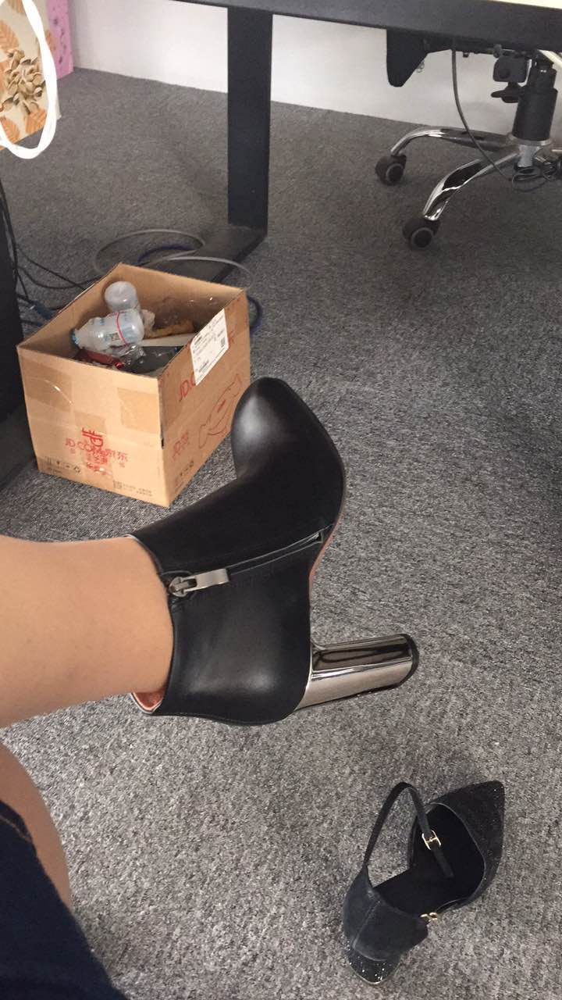
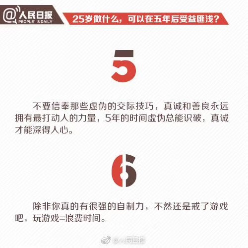
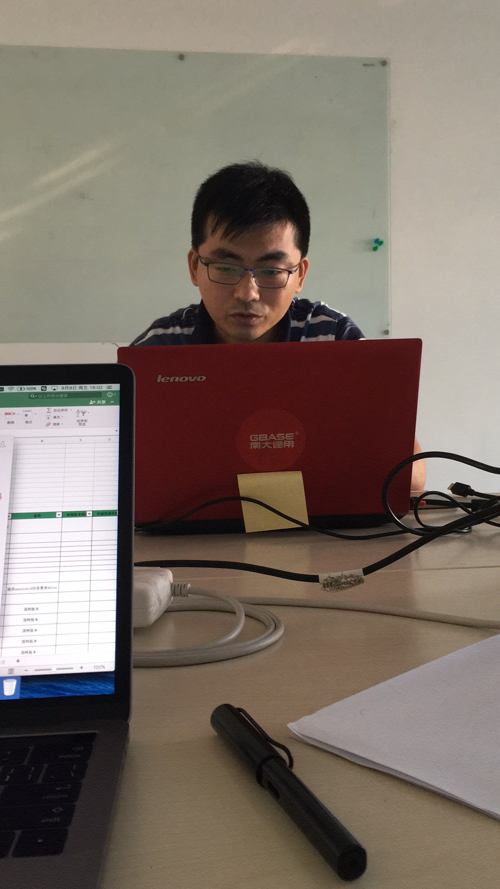
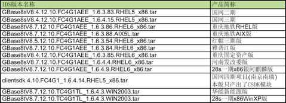

2017-09¶
2017-09-01¶
| 2017-09-01 09:39:31 | 你 | 这个葛娜太搞笑了 |
| 2017-09-01 09:39:40 | 你 | 自己能力不行 让咱们背过 |
| 2017-09-01 09:39:42 | 我 | 是 |
| 2017-09-01 09:41:08 | 我 | 咱们的王总简直是蠢到家了 |
| 2017-09-01 09:41:20 | 你 | 恩 |
| 2017-09-01 11:24:19 | 你 | 不想做王总的车 |
| 2017-09-01 11:24:23 | 你 | 座 |
| 2017-09-01 11:24:32 | 我 | 我知道 |
| 2017-09-01 11:24:33 | 你 | 你说他给王总安排一车女的干嘛 |
| 2017-09-01 11:24:34 | 你 | 真是的 |
| 2017-09-01 11:24:45 | 我 | 😄，王总喜欢呀 |
| 2017-09-01 11:25:09 | 我 | 真是无所不用其极的投其所好 |
| 2017-09-01 11:26:39 | 我 | 唉，你坐后头吧，让高杰坐副驾 |
| 2017-09-01 11:26:50 | 你 | 我肯定座后边啊 |
| 2017-09-01 11:26:54 | 我 | 一停车你就跳下来 |
| 2017-09-01 11:27:04 | 你 | 我想跟你们走 |
| 2017-09-01 11:27:15 | 我 | 是，我也想 |
| 2017-09-01 11:27:21 | 你 | 我不想跟你走 |
| 2017-09-01 11:27:30 | 你 | 我想跟张杰 旭明 振鹏走 |
| 2017-09-01 11:27:37 | 我 | 😳 |
| 2017-09-01 11:27:38 | 你 | 你可以做王总的车 |
| 2017-09-01 11:27:42 | 你 | 哈哈 |
| 2017-09-01 11:27:58 | 我 | [流汗] |
| 2017-09-01 13:45:33 | 你 | 困的头疼 |
| 2017-09-01 13:45:51 | 我 | 你也睡一会吧，哪怕打个盹都好 |
| 2017-09-01 15:21:05 | 我 | 我先去干活，待会回来陪你聊天吧 |
| 2017-09-01 15:21:14 | 我 | 你最好打个盹 |
| 2017-09-01 15:21:21 | 你 | 我睡不着 |
| 2017-09-01 15:21:27 | 你 | 你先忙吧 |
| 2017-09-01 15:58:43 | 你 | [链接] 一个程序员想对产品经理说的话 |
| 2017-09-01 16:37:17 | 你 | 我刚才好像睡着了 |
| 2017-09-01 16:37:26 | 我 | 嗯嗯 |
| 2017-09-01 16:37:29 | 我 | 睡的很香 |
| 2017-09-01 16:37:45 | 你 | 没有啊 |
| 2017-09-01 16:38:13 | 我 | 哦 |
| 2017-09-01 16:38:23 | 我 | 我感觉你睡沉了 |
| 2017-09-01 16:39:09 | 你 | 嗯嗯 |
| 2017-09-01 16:39:13 | 你 | 好像是睡着了 |
| 2017-09-01 16:39:27 | 你 | 你们MPP的事 评估的怎么样了 |
| 2017-09-01 16:39:38 | 我 | 不是特别乐观 |
| 2017-09-01 16:39:52 | 我 | 我和老毛正在分头评估呢 |
| 2017-09-01 16:40:06 | 你 | 今天刘辉的意思 DB4的这个项目不靠谱 赵总被忽悠了是吗 |
| 2017-09-01 16:40:14 | 我 | 是的 |
| 2017-09-01 16:40:30 | 我 | 销售给赵总汇报的时候报喜不报忧 |
| 2017-09-01 16:40:43 | 我 | 刘辉了解到的情况和赵总说的不一样 |
| 2017-09-01 16:41:15 | 你 | 唉 |
| 2017-09-01 16:41:29 | 你 | 要是真是这样 这个公司怕是得缓一阵了 |
| 2017-09-01 16:41:36 | 你 | 领导们也太蒙了 |
| 2017-09-01 16:41:46 | 我 | 唉 |
| 2017-09-01 16:42:16 | 我 | 销售这几年一直是个大问题，要不然大崔也不会去管 |
| 2017-09-01 16:43:02 | 你 | 恩 |
| 2017-09-01 17:07:11 | 你 | 我觉得现在咱俩默契不如以前了 |
| 2017-09-01 17:07:15 | 你 | 你有感觉吗 |
| 2017-09-01 17:07:19 | 我 | 没有呀 |
| 2017-09-01 17:07:48 | 我 | 你说说，哪里不默契了 |
| 2017-09-01 17:07:59 | 你 | 就是感觉吧 |
| 2017-09-01 17:08:07 | 你 | 不是很清晰说实话 |
| 2017-09-01 17:08:19 | 我 | 哦 |
| 2017-09-01 17:14:19 | 你 | 问你个问题呗 |
| 2017-09-01 17:14:28 | 我 | 嗯嗯 |
| 2017-09-01 17:14:45 | 你 | 你觉得现在大家的工作饱和吗 |
| 2017-09-01 17:14:58 | 你 | 研发 测试 文档 需求 |
| 2017-09-01 17:15:09 | 我 | 研发和测试还可以 |
| 2017-09-01 17:15:27 | 你 | 嗯嗯 |
| 2017-09-01 17:15:31 | 你 | 那就是了 |
| 2017-09-01 17:15:32 | 我 | 怎么问这个 |
| 2017-09-01 17:15:40 | 你 | 没事 随便想的 |
| 2017-09-01 17:16:00 | 我 | 嗯 |
| 2017-09-01 17:20:46 | 你 | 你帮我下载本书 |
| 2017-09-01 17:20:54 | 你 | 看看能不能找到资源 |
| 2017-09-01 17:20:57 | 我 | 什么书 |
| 2017-09-01 17:21:04 | 你 | 生命的不可思议 |
| 2017-09-01 17:21:09 | 你 | 作者 胡因梦 |
| 2017-09-01 17:21:12 | 我 | 好的 |
| 2017-09-01 17:21:18 | 你 | 多谢哈 |
| 2017-09-01 17:21:22 | 你 | 我自己不会下 |
| 2017-09-01 17:23:18 | 你 | 要是不好找我就去买本 没事的哈 |
| 2017-09-01 17:23:33 | 我 | 我先找找的，应该能找得到 |
| 2017-09-01 17:23:38 | 你 | OK |
| 2017-09-01 18:03:39 | 你 | 我想让你陪着我 |
| 2017-09-01 18:04:09 | 我 | 嗯嗯，我回去陪你 |
| 2017-09-01 18:05:19 | 我 | 多了两个大灯泡 |
| 2017-09-01 18:05:26 | 你 | 恩 是啊 |
| 2017-09-01 18:05:43 | 你 | 其实我也不知道跟你说什么 就是想让你陪着我 |
| 2017-09-01 18:05:48 | 我 | 嗯嗯 |
| 2017-09-01 18:05:53 | 我 | 我陪着你 |
| 2017-09-01 18:06:04 | 你 | 你不懂 |
| 2017-09-01 18:06:21 | 我 | 我懂了 |
| 2017-09-01 18:06:29 | 你 | 你懂什么了 |
| 2017-09-01 18:06:48 | 我 | 我在这就行了，不用说话 |
| 2017-09-01 18:07:03 | 你 | 是 |
| 2017-09-01 18:07:07 | 你 | 你走吗 我想走了 |
| 2017-09-01 18:07:13 | 你 | 咱们去车里聊会天 |
| 2017-09-01 18:07:14 | 我 | 嗯嗯 |
| 2017-09-01 18:07:16 | 我 | 走 |
| 2017-09-01 18:07:17 | 你 | 反正也没事 |
| 2017-09-01 18:07:20 | 你 | 好 |
2017-09-02¶
{kind=link}
{kind=link}
2017-09-03¶
| 2017-09-03 22:44:33 | 你 | 从今天起开始粉明道和王欧，看这次坚持多久[强] |
| 2017-09-03 22:44:44 | 你 | 晚安 |
| 2017-09-03 22:44:57 | 我 | 晚安 |
2017-09-04¶
| 2017-09-04 09:14:39 | 你 | 你一会10点开会是吧 |
| 2017-09-04 09:14:48 | 我 | 是的 |
| 2017-09-04 10:47:16 | 我 | 傻了，PICC CDC那个王总把技术难度说反了 |
| 2017-09-04 10:47:35 | 你 | 咋了 |
| 2017-09-04 10:47:48 | 你 | 说咱们这不难 入库难吗？ |
| 2017-09-04 10:48:04 | 你 | MPP啥结论？ |
| 2017-09-04 10:48:12 | 我 | create table比alter table简单，王总说反了 |
| 2017-09-04 10:48:23 | 我 | mpp还没说呢 |
| 2017-09-04 10:48:41 | 你 | 他到底懂不懂啊 |
| 2017-09-04 10:48:51 | 你 | 48分钟了都 |
| 2017-09-04 10:48:59 | 你 | MPP还没说啊 |
| 2017-09-04 10:49:05 | 我 | 前面有一个8a |
| 2017-09-04 10:49:13 | 你 | CDC的这次讨论吗？ |
| 2017-09-04 10:49:14 | 我 | 刚说8t |
| 2017-09-04 10:49:17 | 我 | 是 |
| 2017-09-04 10:49:19 | 你 | 不是说不是一回事么 |
| 2017-09-04 10:49:25 | 你 | 嗯嗯 |
| 2017-09-04 10:49:36 | 你 | 三个项目 第一个是8a的 |
| 2017-09-04 10:49:47 | 我 | 是的 |
| 2017-09-04 10:50:22 | 你 | 怎么说起CDC了 |
| 2017-09-04 11:12:43 | 我 | 武总希望卖一体机 |
| 2017-09-04 11:13:03 | 你 | 买给PICC？ |
| 2017-09-04 11:13:05 | 你 | 卖 |
| 2017-09-04 11:13:14 | 我 | 是 |
| 2017-09-04 11:13:23 | 你 | 是MPP吗 |
| 2017-09-04 11:13:33 | 你 | 为啥啊 |
| 2017-09-04 11:14:05 | 我 | 看起来武总对mpp没信心 |
| 2017-09-04 11:14:20 | 你 | 嗯嗯 |
| 2017-09-04 11:14:23 | 你 | 时间太短了 |
| 2017-09-04 11:14:36 | 我 | 是 |
| 2017-09-04 11:15:05 | 你 | 要是当产品卖 怕出事故估计 |
| 2017-09-04 11:16:07 | 我 | 嗯嗯 |
| 2017-09-04 13:03:46 | 你 | 你去哪开会了 |
| 2017-09-04 13:04:09 | 我 | 五楼，课题的会。王总也在 |
| 2017-09-04 13:04:15 | 我 | 你睡醒了吗 |
| 2017-09-04 13:04:19 | 你 | 没有 |
| 2017-09-04 13:04:29 | 我 | 接着睡吧 |
| 2017-09-04 13:04:42 | 你 | 我醒了 |
| 2017-09-04 13:04:46 | 你 | 这么早就开会啊 |
| 2017-09-04 13:05:13 | 我 | 不是产品线的，是mpp的课题 |
| 2017-09-04 13:05:22 | 你 | 我知道 |
| 2017-09-04 13:09:21 | 我 | 再睡会吧 |
| 2017-09-04 13:09:33 | 你 | 没事 睡的差不多了 |
| 2017-09-04 13:09:47 | 我 | 嗯嗯 |
| 2017-09-04 14:04:35 | 我 | [链接] 王雪松和高姐姐的聊天记录 |
| 2017-09-04 14:04:50 | 你 | 我去吗 |
| 2017-09-04 14:04:55 | 我 | 你现在去五楼会议室帮我开吧 |
| 2017-09-04 14:04:59 | 你 | 好 |
| 2017-09-04 14:07:24 | 你 | 王总在呢 |
| 2017-09-04 14:07:35 | 我 | 是，他从这走了 |
| 2017-09-04 14:07:45 | 你 | Ok |
| 2017-09-04 14:07:52 | 你 | 那我帮你听着 |
| 2017-09-04 14:08:00 | 我 | 嗯嗯 |
| 2017-09-04 14:26:12 | 我 | 有事吗 |
| 2017-09-04 14:30:55 | 你 | Hp的要做 |
| 2017-09-04 14:31:00 | 你 | 等回去跟你说 |
| 2017-09-04 14:31:08 | 我 | 好 |
| 2017-09-04 14:43:06 | 我 | 我完事了 |
| 2017-09-04 14:43:42 | 你 | 这边也差不多了 |
| 2017-09-04 14:43:56 | 我 | 嗯 |
| 2017-09-04 14:44:29 | 你 | 老杨已经走了，培训部的要咱们给公司其他人培训 |
| 2017-09-04 14:44:55 | 你 | 王总跟他们pk呢 |
| 2017-09-04 14:45:17 | 我 | 哦 |
| 2017-09-04 14:45:24 | 你 | 上次培训部的把王总得罪了，现在王总正推这个事呢 |
| 2017-09-04 14:45:33 | 我 | 嗯嗯 |
| 2017-09-04 15:59:06 | 我 | 到王总这什么都最重要 |
| 2017-09-04 16:08:54 | 你 | 晓亮的那个先拖着他 |
| 2017-09-04 16:09:06 | 你 | 我刚才把王胜利劈头盖脸说了一顿 |
| 2017-09-04 16:32:45 | 你 | 你以后发内测版得慎之又慎了 |
| 2017-09-04 16:32:51 | 你 | 你要是不了解 就先问问我 |
| 2017-09-04 16:33:02 | 我 | 嗯嗯 |
| 2017-09-04 16:34:07 | 你 | 我跟晓亮说 要是28s的张杰做的 你要内测版 可以考虑 但是国网的 王胜利特别不靠谱 不过测试我们心里没底 |
| 2017-09-04 16:34:13 | 你 | 结果晓亮说 他也发现了 |
| 2017-09-04 16:34:29 | 你 | 看来王胜利已经臭名远播了 |
| 2017-09-04 16:34:46 | 我 | 嗯嗯 |
| 2017-09-04 16:35:20 | 我 | 他就是 DSD 的臭毛病，什么都答应，什么都做不到 |
| 2017-09-04 16:35:43 | 你 | 我觉得他这个人也有问题 |
| 2017-09-04 16:35:51 | 你 | 你看同样是DSD的 张杰就不 |
| 2017-09-04 16:35:58 | 我 | 是 |
| 2017-09-04 16:36:04 | 你 | 是他又想刷存在感 又不想负责 |
| 2017-09-04 16:36:15 | 我 | 所以我估计张杰在那边比较受气 |
| 2017-09-04 16:36:23 | 你 | 不知道 |
| 2017-09-04 16:36:34 | 你 | 但是我看王胜利跟他关系挺好的 |
| 2017-09-04 16:37:03 | 我 | 张杰原来是王胜利的领导 |
| 2017-09-04 16:37:25 | 你 | 我知道 |
| 2017-09-04 16:37:31 | 你 | 还是人的事 |
| 2017-09-04 16:37:35 | 我 | 是 |
| 2017-09-04 17:24:46 | 你 | [链接] 我心所向和李辉的聊天记录 |
| 2017-09-04 17:25:08 | 你 | 孙伯伯要拜拜了 |
| 2017-09-04 17:26:05 | 我 | 😁 |
| 2017-09-04 17:30:22 | 我 | 干啥呢 |
| 2017-09-04 17:30:40 | 我 | 忙了一天，都没空和你聊天了 |
| 2017-09-04 17:30:56 | 你 | 看你发的PPT呢啊 |
| 2017-09-04 17:31:15 | 我 | 那个是武总让咱们公司美化的 |
| 2017-09-04 17:31:24 | 你 | 恩 |
| 2017-09-04 17:31:26 | 我 | 内容应该还是王总原来的 |
| 2017-09-04 17:31:33 | 你 | 是 |
| 2017-09-04 17:31:39 | 你 | 内容我看过 |
| 2017-09-04 17:31:49 | 你 | 但是这个模板显得高大上好多 |
| 2017-09-04 17:31:56 | 我 | 是 |
| 2017-09-04 17:35:14 | 你 | 他们现在说的就是监控那个事 |
| 2017-09-04 17:35:22 | 我 | 是的 |
| 2017-09-04 17:43:51 | 你 | 你还让老毛评估MPP呢吗 |
| 2017-09-04 17:43:56 | 我 | 是 |
| 2017-09-04 17:44:05 | 你 | 你是说武总没表态做没做？ |
| 2017-09-04 17:44:10 | 我 | 是 |
| 2017-09-04 17:44:12 | 你 | 会议没结论么？ |
| 2017-09-04 17:44:34 | 我 | 武总说尽量去要 SQL，争取用一体机去测试 |
| 2017-09-04 17:44:51 | 我 | 但是现在对方非常着急测试，让我们立刻回信 |
| 2017-09-04 17:45:06 | 你 | 立刻回信指什么？ |
| 2017-09-04 17:45:19 | 你 | 一体机能满足人家要求吗 |
| 2017-09-04 17:45:35 | 我 | 周三前要告诉人家我们测不测，不测人家就把机器给别人测了 |
| 2017-09-04 17:45:47 | 你 | 哦哦 唉 |
| 2017-09-04 17:45:48 | 我 | 不知道，听武总的口气，一体机还没有完成 |
| 2017-09-04 17:46:05 | 你 | 没完成怎么测啊 |
| 2017-09-04 17:46:10 | 我 | 不知道 |
| 2017-09-04 17:46:14 | 你 | 都不靠谱 |
| 2017-09-04 17:46:29 | 你 | 你评估着 MPP能行么 |
| 2017-09-04 17:46:37 | 你 | 你对MPP有信心吗 |
| 2017-09-04 17:46:44 | 我 | 没有 |
| 2017-09-04 17:46:52 | 我 | 关键是现在不给我人 |
| 2017-09-04 17:47:07 | 你 | 武总批了 王总能不给人么 |
| 2017-09-04 17:47:14 | 你 | 关键是武总的态度 |
| 2017-09-04 17:47:17 | 我 | 是呀 |
| 2017-09-04 17:47:20 | 你 | 现在大家都这么忙 |
| 2017-09-04 17:47:35 | 我 | 今天武总也说了，研发很忙 |
| 2017-09-04 17:47:36 | 你 | 中间插一个 肯定得王总批 |
| 2017-09-04 17:47:51 | 我 | 而且这个项目今年肯定没有钱 |
| 2017-09-04 17:47:57 | 你 | 赵总那个MPP的呢 |
| 2017-09-04 17:48:01 | 你 | 什么消息了 |
| 2017-09-04 17:48:15 | 我 | 正在推进，旭明正在干 |
| 2017-09-04 17:48:28 | 你 | 这个王总知道吗 |
| 2017-09-04 17:48:38 | 我 | 知道 |
| 2017-09-04 17:48:56 | 我 | 今天王总还想让旭明从 MPP 里面出来去干 CDC 这事 |
| 2017-09-04 17:49:05 | 我 | 我后来安排王志去干了 |
| 2017-09-04 17:49:19 | 你 | 那MPP谁干啊 |
| 2017-09-04 17:49:29 | 你 | 不就旭明自己干呢么 |
| 2017-09-04 17:49:33 | 我 | 对呀 |
| 2017-09-04 17:49:44 | 你 | 这个王总真是傻缺 |
| 2017-09-04 17:49:49 | 你 | 而且精力旺盛 |
| 2017-09-04 17:49:52 | 我 | 是 |
| 2017-09-04 17:50:02 | 你 | 没准赵总的活他不想给干 |
| 2017-09-04 17:50:05 | 你 | 也说不定 |
| 2017-09-04 17:50:18 | 我 | 嗯嗯 |
| 2017-09-04 17:50:47 | 我 | 不过今天开会有一个小细节 |
| 2017-09-04 17:51:13 | 你 | 说说 |
| 2017-09-04 17:51:20 | 我 | 王总一直想和 IBM 合作，今天问武总，合 IBM 合作这件事怎么推进 |
| 2017-09-04 17:51:38 | 我 | 武总说“你们就死了这条心吧” |
| 2017-09-04 17:51:55 | 你 | 哦哦 |
| 2017-09-04 17:52:12 | 你 | 要是和IBM合作 他就更能发光发热了 |
| 2017-09-04 17:52:26 | 我 | 武总还表示如果客户因为这个不信任咱们，咱们可以签赔偿协议，这件事情武总负责 |
| 2017-09-04 17:53:06 | 你 | 哦哦 |
| 2017-09-04 17:53:08 | 你 | 好么 |
| 2017-09-04 17:53:26 | 我 | 笑啥呢 |
| 2017-09-04 17:53:33 | 我 | 有这么好笑吗 |
| 2017-09-04 17:55:56 | 你 | 孙一走 老杨更有机会了没准 |
| 2017-09-04 17:56:00 | 我 | 嗯嗯 |
| 2017-09-04 17:56:11 | 我 | 不过他们都不在天津，不太好管 |
| 2017-09-04 17:56:14 | 你 | 拉拢孙是没戏了 |
| 2017-09-04 17:56:17 | 你 | 对啊 |
| 2017-09-04 17:56:32 | 你 | 他现在面对的 比拉拢孙更惨 |
| 2017-09-04 17:56:41 | 我 | 是 |
| 2017-09-04 17:56:48 | 你 | 8t的这帮人 可信孙国荣了 |
| 2017-09-04 17:57:20 | 我 | 嗯嗯 |
| 2017-09-04 18:07:47 | 你 | 我准备走了 |
| 2017-09-04 18:07:53 | 你 | 你在待会吧 |
| 2017-09-04 18:07:59 | 我 | 我和你一起走吧 |
| 2017-09-04 18:08:02 | 你 | 别跟我走了 |
| 2017-09-04 18:08:05 | 你 | 王总还没走呢 |
| 2017-09-04 18:08:08 | 我 | 啊 |
| 2017-09-04 18:08:12 | 我 | 没事吧 |
| 2017-09-04 18:08:15 | 你 | 咱俩都走了也不好 |
| 2017-09-04 18:08:30 | 你 | 你跟他们走吧 |
| 2017-09-04 18:09:05 | 我 | 今天胖子限号，得7点以后呢 |
| 2017-09-04 18:09:12 | 你 | 看你吧 |
| 2017-09-04 18:09:25 | 我 | 你是不想和我走了？ |
| 2017-09-04 18:09:39 | 你 | 没有啊 |
| 2017-09-04 18:09:41 | 你 | 我都行 |
| 2017-09-04 18:10:03 | 我 | 那就一起走吧 |
| 2017-09-04 18:10:08 | 你 | 好 |
| 2017-09-04 18:10:14 | 你 | 等王总吗还 |
| 2017-09-04 18:10:18 | 我 | 不等了 |
| 2017-09-04 18:10:21 | 你 | 好 |
2017-09-05¶
| 2017-09-05 08:50:57 | 你 | 你好点了吗 |
| 2017-09-05 08:51:05 | 我 | 嗯嗯，没事了 |
| 2017-09-05 08:52:30 | 你 | 韩旭这会议纪要没说李俊旗发邮件的事 |
| 2017-09-05 08:52:35 | 我 | 是 |
| 2017-09-05 08:52:43 | 你 | 这个事要是一直没推进 你得问问王总 |
| 2017-09-05 08:52:53 | 我 | 嗯嗯 |
| 2017-09-05 08:53:08 | 你 | 当时说的李俊旗负责把事情捋顺 安排我们干什么 以及计划啥的 |
| 2017-09-05 08:53:18 | 你 | 所以咱们就等着就行 |
| 2017-09-05 08:53:43 | 我 | 嗯 |
| 2017-09-05 09:09:41 | 你 | 聊天吗 |
| 2017-09-05 09:09:54 | 我 | 好呀 |
| 2017-09-05 09:10:42 | 我 | 聊啥呀 |
| 2017-09-05 09:12:27 | 你 | 你觉得 我昨天跟你说的是不是特别想当然 |
| 2017-09-05 09:12:36 | 我 | 没有呀 |
| 2017-09-05 09:12:58 | 我 | 我觉得你说挺有道理的 |
| 2017-09-05 09:13:08 | 你 | 其实我还没说完呢 |
| 2017-09-05 09:13:12 | 你 | 我是怕你不爱听 |
| 2017-09-05 09:13:16 | 你 | 就没一直说 |
| 2017-09-05 09:13:24 | 我 | 不会的，你说吧 |
| 2017-09-05 09:13:25 | 你 | 这件事我想了很长时间 |
| 2017-09-05 09:13:34 | 你 | 不是突然间跟你说的 |
| 2017-09-05 09:13:42 | 我 | 嗯嗯 |
| 2017-09-05 09:14:25 | 你 | 但是我迟迟没跟你说 只是在想我自己想的可能会太片面 毕竟我不是你 我不了解你在那个位置 会有怎么样的感受 你内心最真的想法 |
| 2017-09-05 09:14:39 | 我 | 嗯 |
| 2017-09-05 09:14:54 | 你 | 我只是不希望你不开心 |
| 2017-09-05 09:15:08 | 我 | 没事的，我觉得你既然想了这么久，那就说说吧 |
| 2017-09-05 09:15:16 | 我 | 你和我说我就开心 |
| 2017-09-05 09:15:20 | 你 | 好 |
| 2017-09-05 09:15:54 | 你 | 虽然我们交流的很多 但是我觉得你对我还是会隐瞒 或者不是真的隐瞒 只是你的个性导致 |
| 2017-09-05 09:16:03 | 你 | 我完全没有怪你的意思 |
| 2017-09-05 09:16:11 | 你 | 毕竟我不是你 你不是我 |
| 2017-09-05 09:16:19 | 你 | 这一点上我完全尊重你 |
| 2017-09-05 09:16:44 | 你 | 还有就是我所想的 都是如果当事人是我 我会怎么做 怎么破 而不是你 |
| 2017-09-05 09:16:54 | 你 | 这也是我不跟你说的最主要的原因 |
| 2017-09-05 09:17:10 | 你 | 还是 毕竟你不是我 你有你的风格 |
| 2017-09-05 09:17:43 | 你 | 我把我的想法 强加给你 效果也不会好 而且我怕我的想法影响你做出正确的判断 |
| 2017-09-05 09:17:54 | 我 | 嗯嗯 |
| 2017-09-05 09:18:05 | 我 | 我现在看见的都是都是你的担心 |
| 2017-09-05 09:18:20 | 你 | 那我现在说了啊 |
| 2017-09-05 09:18:25 | 我 | 嗯嗯，说吧 |
| 2017-09-05 09:18:32 | 你 | 但是我觉得你不会认同 |
| 2017-09-05 09:18:34 | 你 | 哈哈 |
| 2017-09-05 09:18:54 | 你 | 最开始做MPP的时候 我也觉得这个是个很好的机会 |
| 2017-09-05 09:19:16 | 你 | 但是随着时间推移 我觉得MPP仅仅只是昙花一现 |
| 2017-09-05 09:19:28 | 你 | 跟别的POC测试几乎没有什么却别 |
| 2017-09-05 09:19:30 | 你 | 区别 |
| 2017-09-05 09:20:10 | 你 | 我认为 公司之所以这么投入 毕竟有他的道理 也就是MPP的成功与否 我相信上层一定会有各个方面的考量 |
| 2017-09-05 09:20:30 | 你 | 但目前看 这个项目落地还需要非常非常长的时间 |
| 2017-09-05 09:21:03 | 我 | 唉，你说的我都想过，而且非常认同你的想法 |
| 2017-09-05 09:21:14 | 你 | 我不知道几年以后 MPP才会盛行 但是把宝都压在这个项目上 显然是战线太长 |
| 2017-09-05 09:21:20 | 我 | 你说的和我现在认为的一样 |
| 2017-09-05 09:21:41 | 你 | 有段时间你说武总会让张学接手MPP 你以后就不管了 说实话我当时挺高兴的 |
| 2017-09-05 09:22:16 | 你 | 稍等 |
| 2017-09-05 09:23:41 | 你 | 我接着说 |
| 2017-09-05 09:23:52 | 你 | 你还想听吗 |
| 2017-09-05 09:24:13 | 我 | 听呀，当然想听啦 |
| 2017-09-05 09:24:29 | 你 | 那我接着说 |
| 2017-09-05 09:24:56 | 你 | 你昨天说 MPP会是你重回技术口的一个机会 说实话我非常不赞同 |
| 2017-09-05 09:25:39 | 你 | 其实你细想 你回技术口的机会很多 |
| 2017-09-05 09:25:44 | 你 | 看你怎么操作了 |
| 2017-09-05 09:25:52 | 你 | 待会再说这个 |
| 2017-09-05 09:25:55 | 你 | 接着说MPP |
| 2017-09-05 09:26:05 | 我 | 嗯嗯 |
| 2017-09-05 09:27:22 | 你 | MPP这个东西不管从技术上还是市场上都说明 成型还要假以时日，这只能是个潜在的机会。但恰恰是这个机会让你跟武总和王总的相处很痛苦 |
| 2017-09-05 09:27:39 | 你 | 你想想 若不是MPP 你跟王总其实还是蛮和谐的 |
| 2017-09-05 09:27:52 | 你 | 你也一直在把握各个项目的关键点 |
| 2017-09-05 09:28:02 | 你 | 为什么MPP的时候就不行呢 |
| 2017-09-05 09:28:11 | 你 | 而且 你的能力王总也知道 |
| 2017-09-05 09:28:13 | 我 | 嗯嗯 |
| 2017-09-05 09:28:26 | 你 | 我分析是你的问题多于王总的问题 |
| 2017-09-05 09:28:36 | 你 | 是你对于MPP这件事 放不下 |
| 2017-09-05 09:28:59 | 你 | 谈到放不下 换句话说 从MPP这件事上 王总能看到你的野心 |
| 2017-09-05 09:29:12 | 你 | 这个野心很大 可能对他都有很大的威胁 |
| 2017-09-05 09:29:22 | 你 | 所以他处理起来也是非常难受 |
| 2017-09-05 09:29:50 | 我 | 嗯嗯 |
| 2017-09-05 09:30:00 | 你 | 再说你的放不下 |
| 2017-09-05 09:30:09 | 你 | 说实话我真的没想好你为什么放不下 |
| 2017-09-05 09:30:21 | 你 | 这个是我想到也许我分析最偏颇的地方 |
| 2017-09-05 09:30:32 | 你 | 最真实的原因你自己心里最清楚 |
| 2017-09-05 09:30:40 | 你 | 你也不用告诉我 |
| 2017-09-05 09:30:44 | 你 | 我尊重你的想法 |
| 2017-09-05 09:30:49 | 你 | 我能想到的有几个 |
| 2017-09-05 09:30:53 | 我 | 这个我自己知道是为啥 |
| 2017-09-05 09:31:10 | 我 | 主要还是因为范振勇的经历刺激到我了 |
| 2017-09-05 09:31:25 | 我 | 其实我不是放不下 MPP，是放不下团队 |
| 2017-09-05 09:31:35 | 我 | 要想有价值，必须有自己的团队 |
| 2017-09-05 09:31:57 | 我 | 现在我其实就你一个人，目前看 MPP 是我能维持团队的唯一理由 |
| 2017-09-05 09:32:13 | 你 | 你错了 |
| 2017-09-05 09:32:21 | 你 | MPP不会让你维持团队 |
| 2017-09-05 09:32:36 | 我 | 我说的重回研发不是重新去干技术，而是重新去带研发团队 |
| 2017-09-05 09:32:37 | 你 | 如果你信任我 就听听我的分析 |
| 2017-09-05 09:32:44 | 我 | 我当然信任你啦 |
| 2017-09-05 09:32:48 | 我 | 你说吧 |
| 2017-09-05 09:34:32 | 你 | 其实我觉得你还是不想听我说 |
| 2017-09-05 09:34:44 | 你 | 你不想听我说我就不说了 你什么时候想听再说 |
| 2017-09-05 09:35:06 | 我 | 不是的，我真的很想听你说 |
| 2017-09-05 09:35:50 | 我 | 这事我也想过很久了，你先说，我在说说我想的 |
| 2017-09-05 09:38:53 | 你 | 你看看，你本来就是产品经理了，偏偏还想霸着研发的，说明你有点贪心了 |
| 2017-09-05 09:39:19 | 你 | 而且现在你并没有带我一个，只是你想带的人没在这个团队罢了 |
| 2017-09-05 09:39:58 | 你 | 如果你保持初心，还会这么摇摆不定吗？ |
| 2017-09-05 09:40:22 | 你 | 你当初为什么想要做产总啊？ |
| 2017-09-05 09:40:33 | 我 | 就是想带你呀 |
| 2017-09-05 09:40:45 | 你 | 可是你现在已经带我了啊 |
| 2017-09-05 09:40:58 | 你 | 跟你初心没区别 |
| 2017-09-05 09:41:10 | 我 | 是 |
| 2017-09-05 09:41:11 | 你 | 为什么现在又要维持团队了呢 |
| 2017-09-05 09:41:23 | 你 | 而且团队本来就和产总冲突 |
| 2017-09-05 09:41:34 | 我 | 嗯嗯 |
| 2017-09-05 09:41:35 | 你 | 你肯定是不可能兼得的 |
| 2017-09-05 10:41:39 | 我 | 1440方案变更是王总定的 |
| 2017-09-05 10:41:56 | 我 | 本来应该重新评审的 |
| 2017-09-05 10:42:28 | 你 | 哈哈 |
| 2017-09-05 10:42:42 | 你 | 王总都没听 |
| 2017-09-05 10:42:59 | 我 | 是，不知道忙啥呢 |
| 2017-09-05 10:43:12 | 你 | 刷微博呢估计 |
| 2017-09-05 10:43:20 | 我 | 😄 |
| 2017-09-05 11:09:49 | 我 | [链接] 王雪松和男男的聊天记录 |
| 2017-09-05 11:09:50 | 我 | 陈婕刚发给我的 |
| 2017-09-05 11:10:31 | 你 | 嗯嗯 |
| 2017-09-05 11:25:02 | 我 | 算了，我真服刘畅了 |
| 2017-09-05 12:06:04 | 你 | |
| 2017-09-05 12:06:14 | 你 | 你看这靴子好看吗 |
| 2017-09-05 12:06:35 | 我 | 好看 |
| 2017-09-05 12:07:03 | 你 |  |
| 2017-09-05 12:07:20 | 我 | 嗯嗯，很漂亮 |
| 2017-09-05 13:19:21 | 我 | 睡着了吗 |
| 2017-09-05 13:19:26 | 你 | 恩 |
| 2017-09-05 13:20:06 | 我 | 洪越那封邮件你先别管，方案已经变了。等下午开完会再说吧 |
| 2017-09-05 13:20:51 | 你 | 洪越那个邮件没懂 informix11.5怎么支持DDL 啊 |
| 2017-09-05 13:21:03 | 我 | 就是之前王旭做的那个方案 |
| 2017-09-05 13:21:23 | 你 | 哦 明白了 |
| 2017-09-05 13:21:41 | 我 | 但是中午王总又改变方案了，王旭做的已经废掉了 |
| 2017-09-05 13:21:50 | 你 | 真晕 |
| 2017-09-05 13:22:02 | 我 | 如果按照现在这个方案做，洪越他们那边是不支持 DDL 的 |
| 2017-09-05 13:22:52 | 我 | 如果要支持 DDL，需要继续王旭的那个。这样咱们就需要做两个方案了，工作量比原来大多了 |
| 2017-09-05 13:23:07 | 我 | 看看今天下午开会武总怎么定吧 |
| 2017-09-05 13:37:26 | 我 | 你今天还去打球吗 |
| 2017-09-05 13:37:31 | 你 | 不去 |
| 2017-09-05 13:37:35 | 我 | 嗯嗯 |
| 2017-09-05 14:15:13 | 你 | 能聊天吗 |
| 2017-09-05 14:15:22 | 我 | 能 |
| 2017-09-05 14:15:28 | 你 | 今天王总怎么跟你说让你跟他一期去开会 |
| 2017-09-05 14:15:31 | 你 | 一起 |
| 2017-09-05 14:15:35 | 我 | 还没到我 |
| 2017-09-05 14:16:18 | 你 | ？ |
| 2017-09-05 14:16:20 | 我 | 就是和旭明开会的时候和我说了一句：下午雪松你和我一起去开会 |
| 2017-09-05 14:16:34 | 你 | 哦哦 |
| 2017-09-05 14:16:39 | 你 | 什么还没到你 |
| 2017-09-05 14:17:08 | 我 | 还没到我们汇报呢，现在8a汇报 |
| 2017-09-05 14:18:07 | 你 | 我们汇报 用PPT吗 |
| 2017-09-05 14:18:11 | 你 | 武总在公司么 |
| 2017-09-05 14:18:18 | 你 | 你不用汇报吧 |
| 2017-09-05 14:18:28 | 我 | 我不用汇报，武总在 |
| 2017-09-05 14:18:39 | 你 | 哦 |
| 2017-09-05 14:18:41 | 我 | 我不知道咱们有没有ppt |
| 2017-09-05 14:18:52 | 你 | 别人有吗 |
| 2017-09-05 14:19:11 | 我 | 所有研发部门的主管 |
| 2017-09-05 14:19:27 | 我 | 老陈老田他们都在 |
| 2017-09-05 14:19:30 | 你 | DGD谁去的 |
| 2017-09-05 14:19:38 | 我 | 老田 |
| 2017-09-05 14:19:40 | 你 | 我说别的部门有PPT吗 |
| 2017-09-05 14:19:45 | 你 | 只有老田啊 |
| 2017-09-05 14:20:04 | 你 | 你方便跟我聊天么 |
| 2017-09-05 14:20:05 | 我 | 有 |
| 2017-09-05 14:20:28 | 我 | 现在没事，待会我汇报就不聊了 |
| 2017-09-05 14:20:37 | 你 | 你汇报啥啊 |
| 2017-09-05 14:20:48 | 你 | 到咱们的时候么？ |
| 2017-09-05 14:20:50 | 我 | mpp |
| 2017-09-05 14:20:55 | 你 | 啊 |
| 2017-09-05 14:20:57 | 我 | 不知道 |
| 2017-09-05 14:21:07 | 你 | 那你先听吧 |
| 2017-09-05 14:21:13 | 你 | 我也没啥跟你聊的 |
| 2017-09-05 14:21:30 | 我 | 啊 |
| 2017-09-05 14:23:36 | 我 | 王总正在回邮件，好像是PICC的 |
| 2017-09-05 14:23:48 | 你 | 哈哈 |
| 2017-09-05 14:23:53 | 你 | 你偷看的啊 |
| 2017-09-05 14:24:13 | 我 | 是，他坐我对面 |
| 2017-09-05 14:24:45 | 你 | 哦哦 是李俊旗回复的邮件么 |
| 2017-09-05 14:25:10 | 我 | 不知道，没看清 |
| 2017-09-05 14:48:08 | 我 | 王总汇报呢 |
| 2017-09-05 14:54:12 | 我 | 汇报完了，待会再说PICC |
| 2017-09-05 15:14:00 | 你 | 好 |
| 2017-09-05 15:14:08 | 你 | 我最近迷死明道和王鸥了 |
| 2017-09-05 15:14:36 | 我 | 嗯嗯，有空和我说说 |
| 2017-09-05 15:33:17 | 我 | [动画表情] |
| 2017-09-05 15:33:41 | 你 | 咋了 |
| 2017-09-05 15:34:17 | 我 | 无聊 |
| 2017-09-05 15:34:58 | 你 | 我写一篇文章 |
| 2017-09-05 15:35:09 | 你 | 抒发下自己对于王鸥和明道的情绪 |
| 2017-09-05 15:35:11 | 我 | 嗯嗯 |
| 2017-09-05 15:35:14 | 你 | 否则要憋死了 |
| 2017-09-05 15:35:46 | 我 | 写吧 |
| 2017-09-05 16:07:06 | 我 | 还没结束呢 |
| 2017-09-05 16:07:13 | 我 | 还有两个人 |
| 2017-09-05 16:07:43 | 你 | 嗯嗯 |
| 2017-09-05 16:07:46 | 你 | 好漫长啊 |
| 2017-09-05 16:08:58 | 我 | 现在老田讲，啰嗦死了，武总都嫌他说得多了 |
| 2017-09-05 16:09:57 | 你 | 是吧 |
| 2017-09-05 16:09:58 | 你 | 哈哈 |
| 2017-09-05 16:15:51 | 我 | 亲呀，我好郁闷呀 |
| 2017-09-05 16:16:09 | 你 | 怎么了 |
| 2017-09-05 16:16:11 | 你 | 郁闷啥 |
| 2017-09-05 16:16:18 | 我 | 武总说mpp又要启动，我已经下定决心不做mpp了 |
| 2017-09-05 16:18:14 | 你 | 有项目驱动吗 |
| 2017-09-05 16:18:16 | 你 | 怎么说的 |
| 2017-09-05 16:18:20 | 你 | 你先别下决心 |
| 2017-09-05 16:18:24 | 你 | 此一时彼一时啊 |
| 2017-09-05 16:19:05 | 我 | 回去我再和你说，马上要说picc |
| 2017-09-05 16:23:43 | 我 | 王总和武总汇报，自己加工picc的需求😱 |
| 2017-09-05 16:24:35 | 你 | 啊？ |
| 2017-09-05 16:30:00 | 我 | 王总说第一个需求不做第二个需求也做不了 |
| 2017-09-05 16:31:10 | 你 | 啊？ |
| 2017-09-05 16:31:14 | 你 | 不可能啊 |
| 2017-09-05 16:51:10 | 你 | 怎么王总回来了 |
| 2017-09-05 16:51:27 | 我 | 我去找老范 |
| 2017-09-05 16:55:05 | 我 | 几个情况 |
| 2017-09-05 16:55:13 | 你 | ？？ |
| 2017-09-05 16:55:39 | 我 | 1. MPP 要开始做，明天赵总找武总谈 MPP 产品化的事情 |
| 2017-09-05 16:55:53 | 我 | 2. PICC 这事先不去测试 |
| 2017-09-05 16:56:09 | 你 | 都要产品化了啊 |
| 2017-09-05 16:56:10 | 我 | 3. 今天武总喊我过去就是为了 MPP |
| 2017-09-05 16:56:15 | 我 | 是的 |
| 2017-09-05 16:56:21 | 你 | 哎呀 |
| 2017-09-05 16:56:29 | 你 | 要是真的话 也算是好消息 |
| 2017-09-05 16:56:32 | 我 | 4. 今天也是我和武总谈的 MPP |
| 2017-09-05 16:56:39 | 你 | 哦 |
| 2017-09-05 16:56:46 | 你 | 怎么还打1234了 |
| 2017-09-05 16:57:02 | 我 | 就这么一会功夫，一下子就很多信息 |
| 2017-09-05 16:57:52 | 你 | 是 |
| 2017-09-05 16:58:00 | 你 | 那说别的安排了吗 |
| 2017-09-05 16:58:04 | 你 | 会不会给人啊 |
| 2017-09-05 16:58:08 | 我 | 没来得及说 |
| 2017-09-05 16:58:09 | 你 | PICC都不测试了么 |
| 2017-09-05 16:58:15 | 你 | HP也不测试了么 |
| 2017-09-05 16:58:19 | 我 | 一切等明天武总定了再说 |
| 2017-09-05 16:58:40 | 我 | 今天武总有事，着急走，连 PICC 这事都没有定下来 |
| 2017-09-05 16:58:55 | 我 | 武总说本周末 PICC 要评估完风险 |
| 2017-09-05 16:59:07 | 我 | HP 的事情武总让咱们自己先做个试验 |
| 2017-09-05 16:59:31 | 我 | 我先去找王总，问问 HP 这事怎么办 |
| 2017-09-05 16:59:44 | 你 | 做什么实验 |
| 2017-09-05 17:00:03 | 我 | 找一个 Informix 的版本，看看能不能升级 |
| 2017-09-05 17:00:19 | 你 | 这个不是在AIX上测试过了么 |
| 2017-09-05 17:00:27 | 你 | 你说在HP上测吗 |
| 2017-09-05 17:00:44 | 我 | 这事王总没和武总说清楚，所以我才要和王总商量一下这事下一步怎么办 |
| 2017-09-05 17:00:55 | 你 | 哦哦 |
| 2017-09-05 17:00:56 | 你 | 好吧 |
| 2017-09-05 17:01:01 | 你 | 他就这么一个任务 |
| 2017-09-05 17:01:04 | 你 | 还没说清楚 |
| 2017-09-05 17:01:17 | 我 | 唉，你是不知道，王总说话有多没有逻辑性 |
| 2017-09-05 17:01:24 | 你 | 不是说赵总那边的MPP都是被销售忽悠的 |
| 2017-09-05 17:01:25 | 我 | 反而把武总说糊涂了 |
| 2017-09-05 17:01:36 | 你 | 武总看来是非常中意MPP |
| 2017-09-05 17:01:47 | 我 | 赵总那边我就不管了，看明天赵总这么和武总说吧 |
| 2017-09-05 17:01:56 | 你 | 哎呀 平时说个小事 他都能不知道拐哪去 |
| 2017-09-05 17:02:04 | 你 | 嗯嗯 |
| 2017-09-05 17:02:23 | 你 | 那天说啥事来着 扯到他家保税去了 |
| 2017-09-05 17:02:35 | 你 | 好像是Oracle啥的 |
| 2017-09-05 17:02:40 | 我 | 今天拐到爪哇国去了 |
| 2017-09-05 17:02:52 | 你 | 后来又扯到牧师入狱了 |
| 2017-09-05 17:02:56 | 我 | 武总还着急走 |
| 2017-09-05 17:03:01 | 我 | 简直啦 |
| 2017-09-05 17:03:05 | 你 | 哈哈 |
| 2017-09-05 17:03:28 | 我 | 现在看武总对王总确实非常失望 |
| 2017-09-05 17:03:37 | 我 | 老是嫌他说不清楚 |
| 2017-09-05 17:03:42 | 你 | 是吧 |
| 2017-09-05 17:03:58 | 我 | 明天再说吧，武总说明天还会找我们 |
| 2017-09-05 17:04:03 | 你 | 嗯嗯 |
| 2017-09-05 17:04:05 | 你 | 那就好 |
| 2017-09-05 17:04:27 | 你 | 这要是MPP做产品 我的顾虑反倒是可以打消了 |
| 2017-09-05 17:04:34 | 你 | 免得我一直担心你 |
| 2017-09-05 17:04:49 | 我 | 嗯嗯，我去给丁岩打个电话 |
| 2017-09-05 17:04:57 | 你 | 恩 |
| 2017-09-05 17:16:33 | 我 | 你的文章写完了吗 |
| 2017-09-05 17:16:43 | 你 | 写完了 |
| 2017-09-05 17:16:44 | 你 | 发给你 |
| 2017-09-05 17:16:48 | 你 | 估计你看不懂 |
| 2017-09-05 17:16:49 | 我 | 嗯嗯 |
| 2017-09-05 17:16:56 | 你 | 自以为看破了，终究是迷失了_20170905.docx |
| 2017-09-05 17:22:34 | 我 | 写的真不错 |
| 2017-09-05 17:22:42 | 你 | 你看的懂吗 |
| 2017-09-05 17:22:47 | 你 | 你没看过那个节目 |
| 2017-09-05 17:22:50 | 我 | 看懂了 |
| 2017-09-05 17:22:52 | 你 | 很多都是节目里的话 |
| 2017-09-05 17:22:57 | 你 | 很少 |
| 2017-09-05 17:23:08 | 你 | 怎么说呢 引用了几句 哈哈 |
| 2017-09-05 17:23:20 | 你 | 不过这个你能看出来 |
| 2017-09-05 17:23:32 | 你 | 其实我想跟你探讨的是小明心里的想法 |
| 2017-09-05 17:23:39 | 我 | 嗯嗯，说说吧 |
| 2017-09-05 17:23:47 | 我 | 我先问个问题 |
| 2017-09-05 17:24:19 | 我 | 你引用的这几句是他们两个当面说的，还是导演安排的个人访问时候说的 |
| 2017-09-05 17:24:38 | 你 | 这个我也分不清 |
| 2017-09-05 17:24:45 | 你 | 说实话 我现在完全混了 |
| 2017-09-05 17:24:56 | 你 | 我看到的都是真实的 |
| 2017-09-05 17:25:00 | 我 | 嗯嗯 |
| 2017-09-05 17:25:08 | 你 | 不知道真人秀怎么玩 |
| 2017-09-05 17:25:30 | 你 | 如果只是把台词都设计好了 那我太佩服这两个人的演技了 |
| 2017-09-05 17:25:34 | 我 | 我之所以这么问，是因为我感觉有几句话是那种事后分析的感觉 |
| 2017-09-05 17:26:08 | 你 | 后来有一段是我分析的 |
| 2017-09-05 17:26:14 | 我 | 嗯 |
| 2017-09-05 17:26:16 | 你 | 不知道你指的什么 |
| 2017-09-05 17:26:26 | 你 | 你知道吗 我对写作有一套自己的心得 |
| 2017-09-05 17:26:34 | 我 | 说说 |
| 2017-09-05 17:26:38 | 你 | 在我高中的时候 我并没有发现 |
| 2017-09-05 17:26:56 | 你 | 等到我上大学后 总是写日志 记日记 才发现了 |
| 2017-09-05 17:31:40 | 我 | 你接着说 |
| 2017-09-05 17:31:49 | 你 | 我不想说了 |
| 2017-09-05 17:31:51 | 我 | 我安排一下工作就回去 |
| 2017-09-05 17:44:12 | 我 | 接着聊呀 |
| 2017-09-05 18:03:52 | 我 | 聊天呀 |
| 2017-09-05 18:03:59 | 你 | 说话吧 |
| 2017-09-05 18:04:01 | 你 | 懒得打字了 |
| 2017-09-05 18:04:13 | 我 | 嗯嗯，那就得聊工作了 |
{kind=link}
{kind=link}
2017-09-06¶
| 2017-09-06 07:43:34 | 你 | 你到哪了 |
| 2017-09-06 07:43:35 | 你 | 该到单位了吗 |
| 2017-09-06 07:43:36 | 我 | 10分钟，你到了吗 |
| 2017-09-06 07:43:51 | 你 | 我早到了 |
| 2017-09-06 07:44:10 | 我 | 今天怎么这么早 |
| 2017-09-06 07:44:27 | 你 | 今天东东用车 我跟增哥来的 他出差 |
| 2017-09-06 07:44:40 | 你 | 8：09的火车 |
| 2017-09-06 07:44:45 | 你 | 所以我就早到了 |
| 2017-09-06 07:45:04 | 我 | 哦，早知道我就早点出门了[呲牙] |
| 2017-09-06 07:46:01 | 你 | 哈哈 |
| 2017-09-06 07:55:19 | 我 | 到了 |
| 2017-09-06 08:50:22 | 你 | 今天开会吗 |
| 2017-09-06 08:50:29 | 我 | 开会吧 |
| 2017-09-06 09:07:33 | 你 | 你看这个王志 |
| 2017-09-06 09:08:25 | 你 | 测的啥也不是，让他测别的，还不测 |
| 2017-09-06 09:08:41 | 我 | 嗯，他就是这样。而且现在我不是让老毛干活了吗，他没人用了 |
| 2017-09-06 09:08:53 | 我 | 之前都是老毛测试的 |
| 2017-09-06 09:09:04 | 你 | 让人家测试的测，人家干嘛给你测啊 |
| 2017-09-06 09:09:14 | 我 | 对呀 |
| 2017-09-06 09:39:39 | 我 | 我突然发现王总和老田有点像，都特别啰嗦 |
| 2017-09-06 09:39:47 | 你 | 哈哈 |
| 2017-09-06 09:42:39 | 你 | 你给老田发微信的得了 |
| 2017-09-06 10:38:26 | 你 | 你把MPP的PPT发给高杰呗 |
| 2017-09-06 10:38:35 | 你 | 这个售前怎么直接联系高杰呢 |
| 2017-09-06 10:39:05 | 我 | 不知道 |
| 2017-09-06 10:44:09 | 我 | 这事麻烦了 |
| 2017-09-06 10:44:23 | 我 | MPP 年底前完成产品化 |
| 2017-09-06 10:44:41 | 我 | 就是赵总的项目 |
| 2017-09-06 10:44:50 | 我 | 武总安排8a 的人一起 |
| 2017-09-06 10:45:02 | 你 | 哦哦 |
| 2017-09-06 10:45:15 | 我 | 咱们出四个人，算上我 |
| 2017-09-06 10:45:18 | 你 | 产品化需要一系列的东西啊 |
| 2017-09-06 10:45:23 | 我 | 是呀 |
| 2017-09-06 10:45:28 | 我 | 非常麻烦 |
| 2017-09-06 10:45:32 | 你 | 都是全职吗 |
| 2017-09-06 10:45:35 | 你 | 8a出几个 |
| 2017-09-06 10:45:40 | 你 | 你跟谁汇报 |
| 2017-09-06 10:45:45 | 我 | 肯定是全职，没准还需要封闭呢 |
| 2017-09-06 10:45:51 | 你 | 哦 |
| 2017-09-06 10:45:59 | 我 | 肯定要向武总汇报， |
| 2017-09-06 10:46:13 | 你 | 8a出几个 |
| 2017-09-06 10:46:30 | 你 | 咱们这边都是谁参与 |
| 2017-09-06 10:46:31 | 我 | 还不知道，下午1.30去和张学谈 |
| 2017-09-06 10:46:43 | 你 | 你跟张学谈啊 |
| 2017-09-06 10:46:49 | 我 | 对 |
| 2017-09-06 10:47:10 | 你 | 咱们这边出几个 |
| 2017-09-06 10:47:18 | 我 | 4个 |
| 2017-09-06 10:47:24 | 你 | 出谁 |
| 2017-09-06 10:48:42 | 我 | 我、旭明、老毛、陈彪 |
| 2017-09-06 10:48:58 | 你 | 不用杨丽颖吗 |
| 2017-09-06 10:49:04 | 我 | 不用 |
| 2017-09-06 10:49:35 | 你 | 这是好事 辛苦几个月吧 |
| 2017-09-06 10:49:53 | 我 | 唉，又得加班了 |
| 2017-09-06 10:50:02 | 你 | 肯定得有付出啊 |
| 2017-09-06 10:50:15 | 我 | 是，你说的对 |
| 2017-09-06 10:50:16 | 你 | 现在不付出 怎么做部门经理 |
| 2017-09-06 10:50:20 | 我 | 嗯嗯 |
| 2017-09-06 10:50:37 | 你 | 这个事 不但要做 还要做好 |
| 2017-09-06 10:50:49 | 你 | 你要是真是全职了 就死劲盯着他们 |
| 2017-09-06 10:50:52 | 我 | 嗯嗯 |
| 2017-09-06 10:52:07 | 你 | 为啥不用杨丽颖啊 |
| 2017-09-06 10:52:11 | 你 | 不会是因为我吧 |
| 2017-09-06 10:52:29 | 我 | 有部分原因 |
| 2017-09-06 10:52:41 | 你 | 另一部分呢 |
| 2017-09-06 10:52:50 | 我 | 她编码能力不行 |
| 2017-09-06 10:53:06 | 你 | 哦 |
| 2017-09-06 10:53:25 | 你 | 你就不能说 不是因为我 是因为她编码能力不行吗 |
| 2017-09-06 10:53:37 | 我 | 我不想骗你 |
| 2017-09-06 10:54:22 | 我 | 因为你不是因为你不喜欢她，是因为我说过我要证明在我这你比他重要 |
| 2017-09-06 10:54:39 | 你 | 这就能证明了 |
| 2017-09-06 10:54:44 | 你 | 我没有不喜欢她啊 |
| 2017-09-06 10:55:01 | 我 | 嗯嗯，我知道。我只是去尽力证明 |
| 2017-09-06 10:55:34 | 你 | 总而言之是件好事 |
| 2017-09-06 10:55:36 | 我 | 你前几天还说过不喜欢我去管 MPP |
| 2017-09-06 10:55:38 | 你 | 我也很高兴 |
| 2017-09-06 10:56:40 | 我 | 现在我必须管了，我就必须去做一些事情能让你感知到我的想法，而不仅仅是口头上去说 |
| 2017-09-06 10:57:25 | 你 | 我说饿是MPP的事 |
| 2017-09-06 10:57:30 | 你 | 不是杨丽颖的事 |
| 2017-09-06 10:57:45 | 你 | 你跟她爱怎么着就怎么着吧 我才懒得管呢 |
| 2017-09-06 10:58:09 | 我 | 嗯嗯 |
| 2017-09-06 10:59:39 | 你 | 在跟我说说武总怎么说的 |
| 2017-09-06 10:59:50 | 你 | 你要是全职了 这边的事 我帮你做怎么样 |
| 2017-09-06 10:59:56 | 你 | 我不会的请示你啊 |
| 2017-09-06 10:59:59 | 我 | 好呀 |
| 2017-09-06 11:00:09 | 我 | 现在我可以正式让你帮我了 |
| 2017-09-06 11:00:10 | 你 | 每天都跟你汇报 |
| 2017-09-06 11:00:14 | 你 | 对了 |
| 2017-09-06 11:00:17 | 我 | 😁 |
| 2017-09-06 11:00:22 | 你 | MPP进密网吗 |
| 2017-09-06 11:00:28 | 你 | 工位要搬吗 |
| 2017-09-06 11:00:29 | 我 | 我不想 |
| 2017-09-06 11:00:35 | 我 | 这事还得去讨论 |
| 2017-09-06 11:00:40 | 你 | 嗯嗯 |
| 2017-09-06 11:00:44 | 你 | 都得讨论 |
| 2017-09-06 11:00:47 | 我 | 是 |
| 2017-09-06 11:00:58 | 我 | 这次武总让用8611的架构 |
| 2017-09-06 11:01:19 | 我 | 就是得把我们现在的东西合并到张学他们上门 |
| 2017-09-06 11:01:51 | 你 | 这个应该不是很难吧 |
| 2017-09-06 11:02:05 | 我 | 非常难 |
| 2017-09-06 11:02:16 | 我 | 我们原来的东西和他们相差太远 |
| 2017-09-06 11:02:39 | 你 | 哦 |
| 2017-09-06 11:02:42 | 你 | 好吧 |
| 2017-09-06 11:02:52 | 你 | 换了8611这个是一件大事 |
| 2017-09-06 11:02:55 | 你 | 别的呢 |
| 2017-09-06 11:03:00 | 你 | 接口还用MYSQL吗 |
| 2017-09-06 11:03:03 | 你 | 还是8t |
| 2017-09-06 11:03:04 | 我 | 是的 |
| 2017-09-06 11:03:14 | 我 | 接口还是 MySQL，因为8a 还是 |
| 2017-09-06 11:03:22 | 你 | enen |
| 2017-09-06 11:03:30 | 你 | 好吧 |
| 2017-09-06 11:03:43 | 我 | 这次武总明显是想让8a 介入 |
| 2017-09-06 11:03:51 | 你 | 我真怕要是MPP做完 你们就被武总吸到8a去了 |
| 2017-09-06 11:04:00 | 我 | 我想想这也是好事，要是他们介入的深就让他们去做吧 |
| 2017-09-06 11:04:07 | 你 | 嗯嗯 |
| 2017-09-06 11:04:23 | 你 | 这个只能是做一步看一步了 |
| 2017-09-06 11:04:26 | 我 | 没事的，我昨天不是还和你说吗，如果武总要我们，我就让旭明去，我不过去 |
| 2017-09-06 11:04:33 | 你 | 再说吧 |
| 2017-09-06 11:04:37 | 我 | 我就和你待在一起 |
| 2017-09-06 11:04:43 | 你 | 再说吧 |
| 2017-09-06 11:04:50 | 你 | 要是王总走了 |
| 2017-09-06 11:04:57 | 你 | 你就一定得待在8t |
| 2017-09-06 11:05:02 | 我 | 是的 |
| 2017-09-06 11:05:32 | 你 | 要是王总没走 你去8a没准还是好事呢 |
| 2017-09-06 11:05:34 | 你 | 再看吧 |
| 2017-09-06 11:05:41 | 我 | 嗯嗯 |
| 2017-09-06 11:09:32 | 你 | 你先写纪要吧 回头跟我说说细节 |
| 2017-09-06 11:10:12 | 我 | 嗯嗯 |
| 2017-09-06 12:18:29 | 我 | [链接] 群聊的聊天记录 |
| 2017-09-06 13:15:53 | 你 | 武总这是。。。 |
| 2017-09-06 13:15:58 | 你 | 这么挺你 |
| 2017-09-06 13:16:05 | 我 | 不知道 |
| 2017-09-06 13:16:36 | 我 | 会议纪要20170906.docx |
| 2017-09-06 13:38:31 | 你 | 发吧 没事的啊 看你第一次这么仔细 |
| 2017-09-06 13:38:41 | 你 | 写的很好了 |
| 2017-09-06 13:38:43 | 我 | 嗯嗯 |
| 2017-09-06 14:11:50 | 我 | [链接] 王雪松和Rocer的聊天记录 |
| 2017-09-06 14:12:59 | 你 | 这个东西都得等那边李俊旗的邮件反馈 |
| 2017-09-06 14:13:07 | 你 | 现在的话 随便找一套测吧 |
| 2017-09-06 14:13:14 | 你 | benchmark就行 |
| 2017-09-06 14:13:51 | 我 | 嗯嗯，你先帮我处理一下吧，我现在太忙了，没空 |
| 2017-09-06 14:14:36 | 你 | OK |
| 2017-09-06 15:26:29 | 我 | 完事了，我找旭明聊聊 |
| 2017-09-06 15:52:40 | 你 | 怎么样结果 |
| 2017-09-06 15:53:44 | 你 | 给了几个人 |
| 2017-09-06 15:54:07 | 我 | 三个人吧 |
| 2017-09-06 15:55:46 | 你 | 哦 |
| 2017-09-06 15:55:58 | 你 | 你找旭明干啥 |
| 2017-09-06 15:57:24 | 我 | 训他 |
| 2017-09-06 15:57:49 | 你 | 训他啥了 |
| 2017-09-06 15:58:16 | 你 | 刚才刘辉说 孙国荣走的时候 跟老杨推荐的王总去做技术支持的领导 |
| 2017-09-06 15:58:31 | 你 | 刘辉说老杨找他了 问谁做领导合适 |
| 2017-09-06 16:04:30 | 你 | 刘辉说谁都行，唐骞不行[偷笑] |
| 2017-09-06 16:04:43 | 你 | 你今天不该不来 |
| 2017-09-06 16:04:57 | 你 | 王总挺重视的还 |
| 2017-09-06 16:06:56 | 你 | |
| 2017-09-06 16:07:15 | 我 | 等 |
| 2017-09-06 16:11:01 | 我 | 今天真的没空了，明天我还要交文档，到现在我还没写呢 |
| 2017-09-06 16:11:13 | 我 | 刚才和刘辉聊了一会 |
| 2017-09-06 16:11:27 | 我 | 他现在也剧头疼 |
| 2017-09-06 16:14:31 | 我 | 说老杨已经找过他，问他谁适合当领导，他说唐骞肯定不行，李俊奇可以 |
| 2017-09-06 16:25:37 | 我 | 不理我了？ |
| 2017-09-06 16:28:06 | 你 | 没有 |
| 2017-09-06 16:28:13 | 你 | 你写吧 |
| 2017-09-06 16:28:26 | 你 | 嗯嗯，刚才刘辉跟我也说了 |
| 2017-09-06 16:28:34 | 你 | 我觉得他还是想上 |
| 2017-09-06 16:28:52 | 你 | 他说自己不想做领导，我觉得他想做 |
| 2017-09-06 16:28:54 | 我 | 是 |
| 2017-09-06 16:29:01 | 我 | 他也是有野心的 |
| 2017-09-06 16:29:02 | 你 | 你也觉得吗 |
| 2017-09-06 16:29:07 | 你 | 我觉得是 |
| 2017-09-06 16:29:12 | 我 | 只是觉得咱们公司太乱了 |
| 2017-09-06 16:29:18 | 你 | 是 |
| 2017-09-06 16:29:23 | 你 | 也是怕站错位 |
| 2017-09-06 16:29:28 | 我 | 是的 |
| 2017-09-06 16:29:37 | 我 | 他想来咱们这边 |
| 2017-09-06 16:29:38 | 你 | 你知道孙国荣竟然一直忌讳他 |
| 2017-09-06 16:29:43 | 我 | 嗯嗯 |
| 2017-09-06 16:29:44 | 你 | 我挺吃惊的 |
| 2017-09-06 16:30:06 | 你 | 江湖真是无处不在啊 |
| 2017-09-06 16:30:10 | 我 | 今年是赵总和他谈的，让他带天津这边 |
| 2017-09-06 16:30:22 | 你 | 然后呢，？ |
| 2017-09-06 16:30:25 | 我 | 不然他就来咱这或者去老陈那了 |
| 2017-09-06 16:30:33 | 你 | 他没接吧 |
| 2017-09-06 16:30:43 | 我 | 后来他就负责天津的售后团队 |
| 2017-09-06 16:30:56 | 你 | 哦 |
| 2017-09-06 16:31:03 | 你 | 吓我一跳 |
| 2017-09-06 16:31:14 | 我 | 赵总找他就是今年年初的时候 |
| 2017-09-06 16:32:03 | 我 | 他还说已经有人找过他了，说以后要是唐总管，那就干不长了 |
| 2017-09-06 16:41:26 | 你 | 嗯， |
| 2017-09-06 16:47:16 | 我 | 今天是东东来接你吗 |
| 2017-09-06 16:47:29 | 你 | 是 |
| 2017-09-06 16:47:33 | 你 | 好聪明啊 |
| 2017-09-06 16:47:52 | 我 | 啊，这就叫聪明啦 |
| 2017-09-06 16:48:02 | 你 | 嗯嗯 |
| 2017-09-06 16:48:11 | 我 | 和你聊天真的是心情特别好 |
| 2017-09-06 16:48:50 | 你 | 且 |
| 2017-09-06 16:49:28 | 我 | 唉，本来昨天我还想，今天没啥事情，除了写文档就剩下和你聊天了。结果没想到比什么时候都忙 |
| 2017-09-06 16:56:23 | 你 | 你写啥文档呢啊 |
| 2017-09-06 16:56:47 | 我 | 课题文档 |
| 2017-09-06 19:02:40 | 你 | |
| 2017-09-06 19:02:44 | 你 |
{kind=link}
2017-09-07¶
| 2017-09-07 08:42:23 | 我 | 别生气了 |
| 2017-09-07 08:42:24 | 你 | 真气死我了 |
| 2017-09-07 08:42:28 | 我 | 东东是无心的 |
| 2017-09-07 08:42:36 | 你 | 他就是神经病 |
| 2017-09-07 08:42:45 | 你 | 给自己设那么多条条框框 |
| 2017-09-07 08:42:48 | 我 | 嗯嗯 |
| 2017-09-07 08:42:53 | 你 | 又来约束我 |
| 2017-09-07 08:42:56 | 你 | 你自己买去啊 |
| 2017-09-07 08:43:01 | 我 | 那时候他的超我太强了 |
| 2017-09-07 08:43:12 | 我 | 好了，别想了 |
| 2017-09-07 08:43:19 | 你 | 气死我了 |
| 2017-09-07 08:43:23 | 我 | 他肯定也是无心的 |
| 2017-09-07 08:43:24 | 你 | 生了一路的气 |
| 2017-09-07 08:43:30 | 我 | 嗯嗯 |
| 2017-09-07 08:43:38 | 我 | 回来骂他一顿就好了 |
| 2017-09-07 08:43:46 | 你 | 我当时就骂他了 |
| 2017-09-07 08:43:54 | 我 | 😁 |
| 2017-09-07 08:44:02 | 你 | 那我也生 |
| 2017-09-07 08:44:06 | 你 | 到现在没缓过来 |
| 2017-09-07 08:44:26 | 我 | 别气坏了自己 |
| 2017-09-07 08:46:40 | 我 | 别想了 |
| 2017-09-07 08:47:03 | 我 | 和你说说我看的视频吧 |
| 2017-09-07 08:47:10 | 你 | 恩 |
| 2017-09-07 08:47:17 | 我 | 早上来我就一直看 |
| 2017-09-07 08:47:23 | 我 | 看了三集了 |
| 2017-09-07 08:47:24 | 你 | 昨天我拉着东东卡了 |
| 2017-09-07 08:47:25 | 你 | 看了 |
| 2017-09-07 08:47:26 | 你 | 你猜人家说什么 |
| 2017-09-07 08:47:38 | 我 | 说啥了 |
| 2017-09-07 08:47:54 | 你 | 你说明道这么对王鸥能坚持多长时间 |
| 2017-09-07 08:50:07 | 我 | 说实话，我觉得他们可以一辈子 |
| 2017-09-07 08:50:28 | 你 | 别搭理他 |
| 2017-09-07 08:50:39 | 你 | 他根本就看不到我能看到的 |
| 2017-09-07 08:50:47 | 你 | 我们能看到的 |
| 2017-09-07 08:51:17 | 我 | 嗯嗯 |
| 2017-09-07 08:52:06 | 你 | 说说你的看法 |
| 2017-09-07 08:52:28 | 我 | 我的看法好多好多 |
| 2017-09-07 08:53:10 | 我 | 我和你的看法一样，明道非常坦荡荡 |
| 2017-09-07 08:53:17 | 你 | 嗯嗯 |
| 2017-09-07 08:53:37 | 我 | 而且对王鸥是真心的关心 |
| 2017-09-07 08:54:10 | 你 | 就是特别特别用心的 |
| 2017-09-07 08:54:21 | 我 | 虽然说有做节目的因素在里面，但是能看出来明道就是想让小欧快乐 |
| 2017-09-07 08:54:29 | 你 | 而且我觉得王鸥绝对是值得付出的人 |
| 2017-09-07 08:54:33 | 我 | 而且是内心的快乐 |
| 2017-09-07 08:54:37 | 我 | 是 |
| 2017-09-07 08:55:12 | 我 | 其实第三集开始小欧已经慢慢打开心扉了 |
| 2017-09-07 08:55:37 | 你 | 是 |
| 2017-09-07 08:55:55 | 我 | 明道那句 你不会和男孩子交往 戳进小欧的心里了 |
| 2017-09-07 08:55:58 | 你 | 他俩都是相对成熟的 |
| 2017-09-07 08:56:02 | 你 | 尤其是明道 |
| 2017-09-07 08:56:06 | 你 | 是 |
| 2017-09-07 08:56:07 | 我 | 嗯嗯 |
| 2017-09-07 08:56:37 | 你 | 明道真的特别优秀 |
| 2017-09-07 08:56:41 | 我 | 是 |
| 2017-09-07 08:56:45 | 你 | 王鸥特别善良 |
| 2017-09-07 08:57:04 | 你 | 两个人都具备男女该有的优良品质 |
| 2017-09-07 08:57:16 | 我 | 我看的时候就在想，如果他们不是做节目，真的是平常生活中会是什么样子 |
| 2017-09-07 08:57:51 | 我 | 我感觉小欧可能不会这么快接受明道 |
| 2017-09-07 08:58:02 | 你 | 你在接着看吧 |
| 2017-09-07 08:58:05 | 我 | 明道一定会和现在一样用心 |
| 2017-09-07 08:58:11 | 我 | 嗯嗯 |
| 2017-09-07 08:58:20 | 你 | 明道后几期变化特别大 |
| 2017-09-07 08:58:34 | 你 | 不再向开始这么明显 |
| 2017-09-07 08:58:48 | 我 | 嗯 |
| 2017-09-07 08:58:51 | 你 | 你记得 那天晚上在蒙古包睡觉 明道还要跟小欧视频 |
| 2017-09-07 08:59:00 | 我 | 是 |
| 2017-09-07 08:59:13 | 你 | 后来他变得特别特别被动 |
| 2017-09-07 08:59:20 | 我 | 哦 |
| 2017-09-07 09:00:11 | 我 | 明道自己也是那种经历过很多的人 |
| 2017-09-07 09:00:27 | 你 | 也不是特别被动吧 稍微被动一些 |
| 2017-09-07 09:00:35 | 你 | 也可能是王鸥太投入了 |
| 2017-09-07 09:00:37 | 我 | 嗯嗯 |
| 2017-09-07 09:01:08 | 我 | 其实你知道吗，这种做节目的，对他们两个都有一些不太好影响 |
| 2017-09-07 09:01:28 | 我 | 我觉得后期王鸥就特别投入，而明道就有点瞻前顾后 |
| 2017-09-07 09:01:54 | 你 | 对啊 |
| 2017-09-07 09:02:03 | 你 | 明道考虑的肯定会更多 |
| 2017-09-07 09:02:32 | 我 | 是呀，可是我担心因为这个他俩走不到一起 |
| 2017-09-07 09:02:41 | 我 | 王鸥是那种非常简单的人 |
| 2017-09-07 09:02:51 | 我 | 一旦认定就会付出全部 |
| 2017-09-07 09:03:44 | 我 | 而且王鸥不一定能理解明道的顾忌 |
| 2017-09-07 09:03:48 | 你 | 是 |
| 2017-09-07 09:03:58 | 你 | 非常有可能 |
| 2017-09-07 09:04:07 | 我 | 特别特别担心他们会造成误会 |
| 2017-09-07 09:04:24 | 你 | 其实男女也不一定非得成为心灵伴侣 |
| 2017-09-07 09:04:52 | 我 | 可是如果能成为心灵伴侣将是一件非常幸福的事情 |
| 2017-09-07 09:04:53 | 你 | 如果明道足够爱小欧 他应该能以她能理解的方式讲清楚 |
| 2017-09-07 09:05:16 | 我 | 唉，当局者迷。明道可千万别犯错误 |
| 2017-09-07 09:05:27 | 我 | 你知道在这种时候，男人经常会犯错误 |
| 2017-09-07 09:05:29 | 你 | 犯什么错误啊 |
| 2017-09-07 09:05:38 | 我 | 顾虑太多 |
| 2017-09-07 09:05:44 | 你 | 是啊 |
| 2017-09-07 09:05:49 | 我 | 错过缘分 |
| 2017-09-07 09:05:54 | 你 | 娱乐圈那么复杂 |
| 2017-09-07 09:06:05 | 你 | 小欧还能这么真 很不容易了 |
| 2017-09-07 09:06:14 | 我 | 是呀 |
| 2017-09-07 09:06:26 | 你 | 你不觉得他俩特别接地气吗 |
| 2017-09-07 09:06:55 | 我 | 我最希望的是明道因为有节目，所以不正面回应小欧，私下里却不放弃 |
| 2017-09-07 09:06:57 | 你 | 而且他俩没有一直玩 一直乐 每次他俩拉近距离的 反倒是一次次的交流 |
| 2017-09-07 09:07:03 | 我 | 没错 |
| 2017-09-07 09:07:10 | 你 | 吃饭的时候 草原坐着的时候 |
| 2017-09-07 09:07:33 | 你 | 那就不知道了 |
| 2017-09-07 09:07:54 | 你 | 我觉得明道要是能跟小欧表白的话 小欧绝对同意 |
| 2017-09-07 09:07:58 | 我 | 嗯嗯 |
| 2017-09-07 09:08:01 | 你 | 我说的是现实中 |
| 2017-09-07 09:08:04 | 我 | 我知道 |
| 2017-09-07 09:08:13 | 你 | 你看吧 后来王鸥就变得特别特别投入 |
| 2017-09-07 09:08:22 | 你 | 王鸥是不是很漂亮 |
| 2017-09-07 09:08:29 | 我 | 是，非常漂亮 |
| 2017-09-07 09:08:38 | 我 | 她是那种气质特别好的 |
| 2017-09-07 09:09:32 | 你 | 你后来会看到他特别惊艳的一幕 |
| 2017-09-07 09:09:42 | 我 | 嗯嗯 |
| 2017-09-07 09:09:43 | 你 | 你看王鸥穿衣服 特别合体 |
| 2017-09-07 09:10:00 | 你 | 不张扬也不低调 |
| 2017-09-07 09:10:04 | 我 | 嗯嗯 |
| 2017-09-07 09:14:06 | 你 | 你接着看吧 |
| 2017-09-07 09:14:11 | 你 | 到时候咱们再聊 |
| 2017-09-07 09:14:14 | 我 | 嗯嗯 |
| 2017-09-07 09:14:30 | 你 | 别累着了 你最近事又多 |
| 2017-09-07 09:14:40 | 我 | 不累，特别喜欢看 |
| 2017-09-07 09:17:25 | 我 | 我看见小欧因为明道说那句话，然后说 这是我的病，把我心疼的。后来小欧流泪的时候看得我也想哭😭 |
| 2017-09-07 09:17:59 | 你 | 嗯嗯 |
| 2017-09-07 09:18:04 | 你 | 特别心疼 |
| 2017-09-07 09:18:15 | 我 | 是 |
| 2017-09-07 09:18:16 | 你 | 你知道高杰说的这个邮件吗 |
| 2017-09-07 09:18:21 | 我 | 不知道 |
| 2017-09-07 09:18:32 | 你 | 不管他们了 |
| 2017-09-07 09:18:37 | 你 | 让他们折腾吧 |
| 2017-09-07 09:18:56 | 我 | 我先找找，昨天我的邮件都没有仔细看 |
| 2017-09-07 09:19:06 | 我 | 是 GCI 的吧 |
| 2017-09-07 09:19:18 | 你 | 是 |
| 2017-09-07 09:19:58 | 我 | 我没有 |
| 2017-09-07 09:20:43 | 我 | 以后老杨直接管了，正好可以说说，这种邮件就不应该高杰 |
| 2017-09-07 09:21:24 | 我 | 以后像这种不经过咱俩的，就当做不存在。也不给他们安排 |
| 2017-09-07 09:21:46 | 你 | 这个应该是黄军雷要借冷卫杰 |
| 2017-09-07 09:21:51 | 你 | 可以 |
| 2017-09-07 09:21:55 | 你 | 这个绝对没问题 |
| 2017-09-07 09:22:02 | 我 | 嗯嗯 |
| 2017-09-07 09:23:27 | 你 | 老杨昨天说8t 8s版本管理很乱 |
| 2017-09-07 09:23:36 | 我 | 嗯 |
| 2017-09-07 09:23:39 | 你 | 我给他解释半天我们的不乱 他还是认为乱 |
| 2017-09-07 09:23:49 | 你 | 这个你给我讲讲要不 |
| 2017-09-07 09:23:57 | 你 | 说实话 我没有很理解他说的是啥 |
| 2017-09-07 09:24:06 | 我 | 其实现在乱不是因为我们发版乱，是前面销售的乱 |
| 2017-09-07 09:24:14 | 我 | 这里面有几个问题 |
| 2017-09-07 09:25:01 | 我 | 第一个咱们的版本号本身很乱，不像开发中心那时候那么有规律。现在从版本号不能直接看出来版本信息 |
| 2017-09-07 09:25:31 | 我 | 比如现在国网和28s 交叉送测，版本号却是连续的 |
| 2017-09-07 09:25:46 | 你 | 哦 |
| 2017-09-07 09:25:53 | 你 | 现在从版本号不能直接看出来版本信息 |
| 2017-09-07 09:25:57 | 你 | 你说的这个 |
| 2017-09-07 09:26:07 | 我 | 一线是想知道大于哪个版本是不是就保证有哪个功能 |
| 2017-09-07 09:26:08 | 你 | 一般的版本都包括什么版本信息啊 |
| 2017-09-07 09:26:34 | 我 | 其实版本号最大的作用就是识别功能集 |
| 2017-09-07 09:26:46 | 我 | 就是哪个版本有哪个功能 |
| 2017-09-07 09:27:49 | 我 | 如果我们是单分支开发，那么大的版本号的功能一定是小版本号的超集，除非声明作废功能 |
| 2017-09-07 09:29:02 | 我 | 现在我们是三分支开发，但是版本号里面没有给分支留特定的位置，就导致版本号变成了简单的流水号，结果就是谁都说不清版本对应的分支和功能 |
| 2017-09-07 09:30:01 | 我 | 这是第一问题，也是咱们这边主要的问题 |
| 2017-09-07 09:30:09 | 你 | 哦 |
| 2017-09-07 09:30:12 | 你 | 明白了 |
| 2017-09-07 09:30:13 | 我 | 第二问题是销售 |
| 2017-09-07 09:30:14 | 你 | 我说呢 |
| 2017-09-07 09:31:22 | 我 | 由于咱们公司的定价策略，8s 的价格低于8t，而且如果卖的8t，我们还要给 IBM 分成。所以现在销售一般小的单子都会以8s 的名义去卖 |
| 2017-09-07 09:32:02 | 我 | 但是 DSD 又有正式的8s |
| 2017-09-07 09:32:56 | 我 | 现在两个部门之间的代码又没有同步，发的版本号也不一致，最终到一线手里的时候他们就晕了 |
| 2017-09-07 09:33:56 | 我 | 而且由于咱们换 Logo 是要送测的，送测就会有一个新的版本号，所以即使功能完全相同，8t 和8s 也是两个版本号，你说一线能不晕吗 |
| 2017-09-07 09:34:31 | 我 | 现在除了刘畅那里可以通过查记录知道版本号和功能的对应以外，其他人都不知道 |
| 2017-09-07 09:35:36 | 我 | 咱们一般都是说哪个项目的版本，从来没有人说过版本号，就是因为版本号根本就没法标识功能集 |
| 2017-09-07 09:36:19 | 你 | 明白了 |
| 2017-09-07 10:03:26 | 你 | 我跟你说件事 跟你我无关的 |
| 2017-09-07 10:03:33 | 我 | 嗯嗯 |
| 2017-09-07 10:03:35 | 你 | 你知道我跟你说过我爸妈出轨的事 |
| 2017-09-07 10:03:44 | 我 | 嗯 |
| 2017-09-07 10:05:10 | 你 | 你知道我姑姑们对于我妈深恶痛绝 |
| 2017-09-07 10:05:15 | 我 | 嗯 |
| 2017-09-07 10:05:17 | 你 | 都说我妈妈不自爱 不自尊 |
| 2017-09-07 10:05:26 | 你 | 而且就当着我俩的面说 |
| 2017-09-07 10:05:32 | 我 | 嗯 |
| 2017-09-07 10:05:36 | 你 | 或者就直接把我妈妈作为反面例子说我俩 |
| 2017-09-07 10:05:40 | 你 | 还说我俩也那样 |
| 2017-09-07 10:05:43 | 你 | 你知道吗 |
| 2017-09-07 10:05:54 | 我 | 我知道，你以前和我说过 |
| 2017-09-07 10:06:41 | 你 | 等会 |
| 2017-09-07 10:24:55 | 你 | 接着说 |
| 2017-09-07 10:24:58 | 我 | 嗯嗯 |
| 2017-09-07 10:25:08 | 你 | 这里边最甚的就是我四姑 |
| 2017-09-07 10:25:16 | 你 | 他一向都看不起我妈妈 |
| 2017-09-07 10:25:29 | 你 | 在我妈妈面前都是趾高气昂的 |
| 2017-09-07 10:25:34 | 我 | 嗯 |
| 2017-09-07 10:25:41 | 你 | 但是我四姑明特别不好 |
| 2017-09-07 10:25:49 | 你 | 她家也是两个姑娘 |
| 2017-09-07 10:25:55 | 你 | 家里过的也很不错 |
| 2017-09-07 10:26:04 | 你 | 在县里买的房子 |
| 2017-09-07 10:26:09 | 你 | 开发商跑路了 |
| 2017-09-07 10:26:15 | 你 | 啥也没落下 |
| 2017-09-07 10:26:18 | 我 | 哦 |
| 2017-09-07 10:26:36 | 你 | 两个小闺女上的三本 大闺女上的专科 |
| 2017-09-07 10:26:46 | 你 | 两个女儿长的都不好看 |
| 2017-09-07 10:26:55 | 你 | 大闺女找了3、4个对象 |
| 2017-09-07 10:27:05 | 你 | 都跟人家怎么怎么地了 |
| 2017-09-07 10:27:13 | 我 | 哦 |
| 2017-09-07 10:27:24 | 你 | 最后这个结婚了 不到一年生个大儿子 |
| 2017-09-07 10:27:48 | 你 | 每天住我四姑家不说 孩子不到2岁 姑爷出轨离婚了 |
| 2017-09-07 10:28:01 | 你 | 外甥他非得要 说她给养着 |
| 2017-09-07 10:28:17 | 你 | 然后大姑娘又再嫁 |
| 2017-09-07 10:28:20 | 我 | 嗯 |
| 2017-09-07 10:28:30 | 你 | 每天在家吃喝 也没个正经单位 |
| 2017-09-07 10:28:39 | 你 | 再嫁后又生个儿子 |
| 2017-09-07 10:28:47 | 你 | 对了 再嫁的姐夫人特别好 |
| 2017-09-07 10:28:53 | 我 | 嗯 |
| 2017-09-07 10:28:57 | 你 | 对大儿子视如己出 |
| 2017-09-07 10:29:13 | 你 | 结果人家我四姑 把外甥的姓写成了四姑父的 |
| 2017-09-07 10:29:25 | 我 | 呵呵 |
| 2017-09-07 10:29:26 | 你 | 跟后爸爸叫着爸爸 姓随得妈妈 |
| 2017-09-07 10:29:31 | 你 | 而且还不能改了 |
| 2017-09-07 10:29:42 | 你 | 这孩子自始至终不知道自己爸爸是谁 |
| 2017-09-07 10:29:48 | 你 | 然后二闺女 |
| 2017-09-07 10:29:54 | 你 | 一向争强好胜 |
| 2017-09-07 10:30:02 | 你 | 高考没考好 考研没考上 |
| 2017-09-07 10:30:13 | 你 | 找个对象结婚2年 得癌症死了 |
| 2017-09-07 10:30:16 | 你 | 现在单身 |
| 2017-09-07 10:30:24 | 你 | 一个小姑娘自己在唐山 |
| 2017-09-07 10:30:27 | 我 | 哦，就是那个做 P2P 的？ |
| 2017-09-07 10:30:32 | 你 | 对对对 |
| 2017-09-07 10:30:38 | 你 | 穿名牌带名牌 |
| 2017-09-07 10:30:44 | 我 | 嗯 |
| 2017-09-07 10:30:45 | 你 | 是个销售 |
| 2017-09-07 10:30:48 | 你 | 卖钢材 |
| 2017-09-07 10:31:00 | 你 | 整天跟客户暧暧昧昧 |
| 2017-09-07 10:31:07 | 你 | 朋友圈发的乱七八糟 |
| 2017-09-07 10:31:17 | 你 | 他客户都是印度那边的肯尼亚 |
| 2017-09-07 10:31:20 | 你 | 都是英文 |
| 2017-09-07 10:31:25 | 你 | 我姑姑们也看不懂 |
| 2017-09-07 10:31:36 | 你 | 我四姑还以为二女儿挣大钱呢 |
| 2017-09-07 10:31:37 | 我 | 嗯 |
| 2017-09-07 10:31:57 | 你 | 结果 昨天听说这小女儿跟山东的客户勾搭上了 |
| 2017-09-07 10:32:06 | 你 | 那个男的有3个儿子了 |
| 2017-09-07 10:32:12 | 你 | 据说又帅又有钱 |
| 2017-09-07 10:32:15 | 我 | 啊 |
| 2017-09-07 10:32:28 | 你 | 然后这个男的特意来唐山看这姑娘 |
| 2017-09-07 10:32:34 | 你 | 两个人带了4天 |
| 2017-09-07 10:32:36 | 你 | 回去了 |
| 2017-09-07 10:32:39 | 你 | 不联系了 |
| 2017-09-07 10:32:44 | 我 | 嗯 |
| 2017-09-07 10:32:45 | 你 | 这个男的 高中文化 |
| 2017-09-07 10:33:20 | 你 | 家里有厂子 加工钉子 家业都是老婆一手创下的 既没有财政实权 也没有能力 |
| 2017-09-07 10:33:24 | 你 | 这么个怂货 |
| 2017-09-07 10:33:26 | 我 | 呵呵 |
| 2017-09-07 10:33:42 | 你 | 这个妹妹现在还忘不了那男的 |
| 2017-09-07 10:33:56 | 你 | 不让我们把这事告诉我四姑 |
| 2017-09-07 10:34:03 | 你 | 说怕四姑姑打死他 |
| 2017-09-07 10:34:06 | 我 | 啊 |
| 2017-09-07 10:34:09 | 你 | 你说说 多可悲 |
| 2017-09-07 10:34:22 | 我 | 是 |
| 2017-09-07 10:34:23 | 你 | 这个妹妹曾经跟我们也不错 |
| 2017-09-07 10:34:54 | 你 | 自从结了婚 姑爷做的P2P 挣了些块钱 就谁也不搭理了 说生怕别人知道她挣钱跟她借 |
| 2017-09-07 10:35:13 | 你 | 现在单身了 又说看着我们都成双成对的 心里难受 |
| 2017-09-07 10:35:21 | 你 | 你说她是不是心理畸形了 |
| 2017-09-07 10:35:35 | 我 | 是 |
| 2017-09-07 10:35:49 | 你 | 当表姐的 也就是说说 |
| 2017-09-07 10:35:54 | 你 | 他不听我也没办法 |
| 2017-09-07 10:35:58 | 你 | 我也做不了啥 |
| 2017-09-07 10:36:00 | 你 | 你说是不 |
| 2017-09-07 10:36:02 | 我 | 是 |
| 2017-09-07 10:36:19 | 你 | 我四姑还担心我们两个怎么样 |
| 2017-09-07 10:36:20 | 我 | 他要是能听进去也不会这样了 |
| 2017-09-07 10:36:27 | 你 | 结果自己闺女这样了都 |
| 2017-09-07 10:36:36 | 我 | 嗯嗯 |
| 2017-09-07 10:36:38 | 你 | 我昨天说她 他根本不听 |
| 2017-09-07 10:36:39 | 我 | 就是 |
| 2017-09-07 10:36:48 | 你 | 一直跟我说那个男的多好多好 |
| 2017-09-07 10:36:54 | 你 | 我都快被恶心死了 |
| 2017-09-07 10:37:00 | 你 | 就是个约炮的 |
| 2017-09-07 10:37:10 | 你 | 虽然我觉得这种事离我简直太遥远了 |
| 2017-09-07 10:37:16 | 你 | 其实就在身边 |
| 2017-09-07 10:37:24 | 我 | 嗯 |
| 2017-09-07 10:37:34 | 我 | 这就是家教不同 |
| 2017-09-07 10:37:37 | 你 | 这个妹妹 要是再没人管 估计会毁了 |
| 2017-09-07 10:37:41 | 我 | 特别是母亲 |
| 2017-09-07 10:37:49 | 你 | 我四姑就是 总是嫌贫爱富的 |
| 2017-09-07 10:37:57 | 我 | 嗯嗯 |
| 2017-09-07 10:38:01 | 你 | 我俩都结婚了那时候 参加弟弟的婚礼 |
| 2017-09-07 10:38:12 | 你 | 人家还说我俩非得在大学搞对象 |
| 2017-09-07 10:38:30 | 你 | 条件这么好 要是现在 哪个机关单位有的是好的 |
| 2017-09-07 10:38:37 | 你 | 我俩只能对她呵呵了 |
| 2017-09-07 10:38:41 | 我 | 呵呵 |
| 2017-09-07 10:38:51 | 我 | 太势利眼了 |
| 2017-09-07 10:38:52 | 你 | 就这样的能教育好孩子 |
| 2017-09-07 10:38:55 | 你 | 就是 |
| 2017-09-07 10:38:58 | 我 | 就是 |
| 2017-09-07 10:39:05 | 你 | 你看吧 |
| 2017-09-07 10:39:12 | 你 | 现在她是打脸了 |
| 2017-09-07 10:39:39 | 我 | 小时候就是你四姑说你们的吗 |
| 2017-09-07 10:40:03 | 你 | 是 |
| 2017-09-07 10:40:27 | 我 | 所以呀，其实她的话都是假的 |
| 2017-09-07 10:40:28 | 你 | 现在她两个姑娘 都这样了 |
| 2017-09-07 10:40:32 | 你 | 是呢 |
| 2017-09-07 10:40:44 | 我 | 她是从你们两个小孩这里找心理平衡 |
| 2017-09-07 10:40:55 | 你 | 有可能 |
| 2017-09-07 10:41:02 | 你 | 而且我俩一直学习都特别好 |
| 2017-09-07 10:41:07 | 我 | 可是这些却给你们两个带来这么久的伤害 |
| 2017-09-07 10:41:09 | 你 | 现在都研究生毕业了 |
| 2017-09-07 10:41:24 | 你 | 他自己的两个姑娘 一点提气的都没有 |
| 2017-09-07 10:41:30 | 我 | 嗯嗯 |
| 2017-09-07 10:41:31 | 你 | 唉 |
| 2017-09-07 10:41:42 | 你 | 大家族里总是会有冷言冷语 |
| 2017-09-07 10:41:47 | 我 | 是的 |
| 2017-09-07 10:42:00 | 你 | 真是简直了 |
| 2017-09-07 10:42:26 | 我 | 小孩才讲对错，成人只讲利益 |
| 2017-09-07 10:43:02 | 你 | 说的太对了 |
| 2017-09-07 10:43:03 | 我 | 你四姑说你们其实就是为了自己 |
| 2017-09-07 10:43:08 | 你 | 我真是被骗的 |
| 2017-09-07 10:43:21 | 我 | 可是你们都是孩子，结果以为这就是对错了 |
| 2017-09-07 10:43:27 | 你 | 对啊 |
| 2017-09-07 10:43:36 | 你 | 我觉得我妈妈还是很好的 |
| 2017-09-07 10:43:46 | 我 | 没错 |
| 2017-09-07 10:43:47 | 你 | 毕竟我俩现在的对象都不错 |
| 2017-09-07 10:44:00 | 你 | 当初我姐夫家徒四壁 |
| 2017-09-07 10:44:03 | 你 | 什么都没有 |
| 2017-09-07 10:44:09 | 我 | 关键是你们两个做人都很不错 |
| 2017-09-07 10:44:10 | 你 | 现在过的不也很好了么 |
| 2017-09-07 10:44:15 | 你 | 是 |
| 2017-09-07 10:44:17 | 我 | 就像我刚才说的，这就是家教 |
| 2017-09-07 10:44:22 | 你 | 我俩比他们成熟多了 |
| 2017-09-07 10:44:29 | 你 | 经的事也多 |
| 2017-09-07 10:44:33 | 我 | 嗯嗯 |
| 2017-09-07 10:44:39 | 你 | 人家那都是娇生惯养的大小姐 |
| 2017-09-07 10:44:49 | 你 | 哪知道我们受的苦 |
| 2017-09-07 10:45:07 | 我 | 嗯嗯 |
| 2017-09-07 10:45:12 | 你 | 我说完了 |
| 2017-09-07 10:45:19 | 我 | 嗯 |
| 2017-09-07 10:47:25 | 你 | 我把+的软需发给老杨了 他竟然回复我了 |
| 2017-09-07 10:47:39 | 你 | 我昨天跟他说了 我一定得做到产品经理才行 |
| 2017-09-07 10:47:45 | 我 | 嗯嗯 |
| 2017-09-07 10:48:04 | 你 | 我说等我做到产品经理了 我可能会往售前走走 |
| 2017-09-07 10:48:09 | 我 | 你是不是没有给他用需 |
| 2017-09-07 10:48:12 | 我 | 嗯嗯 |
| 2017-09-07 10:48:13 | 你 | 他特别支持我 |
| 2017-09-07 10:48:20 | 你 | 还说我肯定能做到 |
| 2017-09-07 10:48:30 | 我 | 对呀 |
| 2017-09-07 10:48:40 | 你 | 你看他对我是不是挺好 |
| 2017-09-07 10:48:47 | 我 | 是的 |
| 2017-09-07 10:49:00 | 你 | 至少他没觉得我 异想天开 或者嘲笑我啥的 |
| 2017-09-07 10:49:08 | 我 | 😁，怎么可能呢 |
| 2017-09-07 10:49:15 | 你 | 有可能的 |
| 2017-09-07 10:49:30 | 我 | 那样就是他太没眼光了 |
| 2017-09-07 10:49:41 | 你 | 哈哈 |
| 2017-09-07 10:49:48 | 你 | 今天跟你说了好多话啊 |
| 2017-09-07 10:49:57 | 我 | 嗯嗯，今天也是因为我有空 |
| 2017-09-07 10:50:07 | 我 | 昨天我就想和你聊天呢 |
| 2017-09-07 10:50:29 | 我 | 我今天中午继续看视频，等看完了再一起和你聊 |
| 2017-09-07 10:50:35 | 你 | 嗯嗯 |
| 2017-09-07 10:50:36 | 你 | 好 |
| 2017-09-07 10:50:41 | 你 | 真没想到你会看 |
| 2017-09-07 10:50:44 | 你 | 我太感动了 |
| 2017-09-07 10:51:00 | 我 | 你喜欢的我也会喜欢呀 |
| 2017-09-07 10:51:16 | 你 | 真的啊 |
| 2017-09-07 10:51:21 | 我 | 对呀 |
| 2017-09-07 10:51:47 | 我 | 物质上咱俩可能相差很多，情感上咱俩很相近 |
| 2017-09-07 10:52:58 | 我 | 稍等，我找刘畅要了 |
| 2017-09-07 10:53:07 | 你 | 刘畅有？ |
| 2017-09-07 10:53:35 | 我 | 是，这个文档是当初张道山写的，刘畅负责发版，就放在她那了 |
| 2017-09-07 10:53:54 | 你 | 当初开发中心有吗 |
| 2017-09-07 10:54:31 | 我 | 应该有，具体在谁那我忘了，应该是在耿燕写的某个文档 |
| 2017-09-07 10:55:01 | 你 | 好 |
| 2017-09-07 10:55:11 | 你 | 哪天不行我找个机会跟杨总要下 |
| 2017-09-07 10:55:14 | 你 | 就说学习学习 |
| 2017-09-07 10:55:32 | 我 | 你就直接找耿燕就行，老杨他肯定忘了 |
| 2017-09-07 10:55:38 | 你 | 行 |
| 2017-09-07 10:55:43 | 你 | 那我就找燕姐要 |
| 2017-09-07 10:55:53 | 你 | 咱们写的估计更专业一些 |
| 2017-09-07 10:55:59 | 我 | 其实到后来咱们发版的时候他还问过为啥这么编号 |
| 2017-09-07 10:56:20 | 我 | 😁，你要是因为专业性那还不如我给你讲 |
| 2017-09-07 11:36:14 | 我 | 哈哈，和你聊的好开心呀 |
| 2017-09-07 12:07:46 | 你 |  |
| 2017-09-07 12:14:57 | 我 | 嗯嗯 |
| 2017-09-07 13:34:37 | 你 | 看到哪了 |
| 2017-09-07 13:35:02 | 我 | 7月16日 |
| 2017-09-07 13:35:10 | 我 | 泰国 |
| 2017-09-07 13:35:16 | 你 | 华欣那是吧 |
| 2017-09-07 13:35:17 | 我 | 30天 |
| 2017-09-07 13:35:18 | 你 | 画画的 |
| 2017-09-07 13:35:22 | 我 | 嗯嗯 |
| 2017-09-07 13:35:31 | 你 | 打泰拳看了吗 |
| 2017-09-07 13:35:40 | 我 | 还没 |
| 2017-09-07 13:35:45 | 你 | 哦哦 |
| 2017-09-07 13:35:52 | 你 | 有空接着看吧 |
| 2017-09-07 13:35:58 | 我 | 嗯嗯 |
| 2017-09-07 13:55:32 | 你 | 好尴尬 |
| 2017-09-07 13:55:38 | 我 | 没事 |
| 2017-09-07 13:55:51 | 我 | 这种你迟早都会经历的 |
| 2017-09-07 13:56:00 | 我 | 你可以问问李杰，她应该经历过 |
| 2017-09-07 14:10:58 | 我 | 张振鹏太蠢了 |
| 2017-09-07 14:36:05 | 你 | 你也是针对高杰呢吧 |
| 2017-09-07 14:36:16 | 你 | 结果振鹏遭殃了 |
| 2017-09-07 14:37:53 | 我 | 对 |
| 2017-09-07 14:38:11 | 我 | 发版他想管，没门 |
| 2017-09-07 14:39:22 | 你 | 他是看我管了，然后自己就想管 |
| 2017-09-07 14:43:10 | 我 | 以后你和他们说说，发版过来问我 |
| 2017-09-07 14:43:20 | 你 | 好 |
| 2017-09-07 14:44:56 | 我 | 今天我必须把高杰打下去 |
| 2017-09-07 14:45:12 | 我 | 否则过几天我交给你，她就该抢了 |
| 2017-09-07 14:45:22 | 你 | 恩 |
| 2017-09-07 14:46:25 | 你 | 今天发版的事 张杰怎么找高杰去了 |
| 2017-09-07 14:46:56 | 我 | 我也不知道 |
| 2017-09-07 14:47:35 | 你 | 我跟你说 to_date那个宕机了也没事 |
| 2017-09-07 14:47:54 | 你 | 长建卯已经不再天津电力了 说那个项目可能黄了 |
| 2017-09-07 14:48:04 | 你 | 所以发了版也不一定有人用 |
| 2017-09-07 14:48:16 | 我 | 嗯嗯 |
| 2017-09-07 14:48:21 | 你 | 今天振鹏没听懂你的意思 |
| 2017-09-07 14:48:24 | 你 | 绕来绕去 |
| 2017-09-07 14:48:29 | 你 | 你俩都在绕 |
| 2017-09-07 14:48:50 | 我 | 这个傻瓜，所以我说他听不懂评委的问题 |
| 2017-09-07 16:01:57 | 我 | 这个旭明简直了，给他安排和楼下定计划，结果他说搞不定，在那看小说 |
| 2017-09-07 16:02:11 | 我 | 非逼着我亲自上阵 |
| 2017-09-07 16:30:50 | 你 | 哈哈 |
| 2017-09-07 16:31:05 | 你 | 刚才跟王总说了 王总说不用测升级完的 |
| 2017-09-07 16:31:22 | 你 | informix从代码层面已经保证没问题了 没事的 |
| 2017-09-07 16:31:28 | 我 | 👌 |
| 2017-09-07 16:31:32 | 你 | 嗯嗯 |
| 2017-09-07 16:31:35 | 你 | 还好还好 |
| 2017-09-07 16:31:36 | 我 | 有他这句话就行 |
| 2017-09-07 16:31:41 | 你 | 这个旭明太可恶了 |
| 2017-09-07 16:31:45 | 我 | 是 |
| 2017-09-07 16:32:09 | 我 | 所以要是武总要人，我就把他推出去 |
| 2017-09-07 16:32:52 | 你 | 我就听着你说他 他都不知道自己要干啥 |
| 2017-09-07 16:32:54 | 你 | 唉 |
| 2017-09-07 16:37:01 | 我 | 嗯嗯 |
| 2017-09-07 16:39:55 | 我 | 和你说一个好玩的事情吧 |
| 2017-09-07 16:40:10 | 你 | 嗯嗯 |
| 2017-09-07 16:40:30 | 我 | 现在我和旭明在dmd这，和王建忠谈计划 |
| 2017-09-07 16:41:10 | 我 | 一开始张学没过来，现在张学过来了 |
| 2017-09-07 16:41:41 | 我 | 他这是怕王建忠对付不了我 |
| 2017-09-07 16:41:54 | 你 | 哈哈 |
| 2017-09-07 16:41:59 | 我 | 和我一样，都是站台的[呲牙] |
| 2017-09-07 16:42:23 | 你 | 哈哈 |
| 2017-09-07 17:24:23 | 我 | 亲，你晚上有空吗，还有一件事想请你帮忙。我晚上会写一个明天发给武总的邮件，是关于MPP 的计划的，你回来帮我看一下，改一改措辞 |
| 2017-09-07 17:24:52 | 你 | 好啊 |
| 2017-09-07 17:24:54 | 你 | 没问题 |
| 2017-09-07 17:25:03 | 我 | 我可能会晚点发给你 |
| 2017-09-07 17:25:20 | 你 | 好 没事 |
| 2017-09-07 17:25:26 | 你 | 我等着 |
| 2017-09-07 17:25:27 | 我 | 嗯嗯 |
| 2017-09-07 17:52:40 | 我 | [链接] 群聊的聊天记录 |
| 2017-09-07 17:52:41 | 我 | 😭 |
{kind=link}
2017-09-08¶
| 2017-09-08 09:09:42 | 你 | 说得不错 |
| 2017-09-08 09:09:52 | 我 | 嗯嗯 |
| 2017-09-08 09:10:18 | 我 | 我今天早说是怕最后说会赶上王总在 |
| 2017-09-08 09:16:11 | 你 | 嗯嗯 |
| 2017-09-08 09:16:14 | 你 | 是 |
| 2017-09-08 09:16:30 | 你 | 他到时候添乱 |
| 2017-09-08 09:16:33 | 我 | 是 |
| 2017-09-08 09:18:48 | 你 | 我昨天给你改的邮件怎么样啊 |
| 2017-09-08 09:19:08 | 你 | 你回我邮件的时候，我跟东东正一起看我手机呢 |
| 2017-09-08 09:19:18 | 我 | 哦 |
| 2017-09-08 09:19:21 | 我 | 没事吧 |
| 2017-09-08 09:19:45 | 你 | 反正我啥也没说，他也没说，没表现出有啥情绪 |
| 2017-09-08 09:19:51 | 我 | 嗯嗯 |
| 2017-09-08 09:19:52 | 你 | 我也没解释 |
| 2017-09-08 09:20:02 | 你 | 他现在比以前好多了 |
| 2017-09-08 09:20:21 | 你 | 我的邮件改的怎么样啊，你不打算夸夸我吧 |
| 2017-09-08 09:20:26 | 你 | 我啊 |
| 2017-09-08 09:20:33 | 我 | 改得非常好呀 |
| 2017-09-08 09:20:49 | 你 | 是发自肺腑的吗 |
| 2017-09-08 09:20:53 | 我 | 昨天我看了就忍不住给你回了 |
| 2017-09-08 09:21:03 | 我 | 当然啦，超好 |
| 2017-09-08 09:55:25 | 我 | 我刚才在楼道里说刘畅了 |
| 2017-09-08 09:57:45 | 你 | 说的啥 |
| 2017-09-08 09:57:50 | 你 | 她啥反应 |
| 2017-09-08 09:58:16 | 我 | 就是release的事情，应该先汇报给我 |
| 2017-09-08 10:01:57 | 你 | 就是呗 捅到王总这 |
| 2017-09-08 10:46:46 | 你 | 一个文档组，一天被投诉两次 |
| 2017-09-08 10:47:04 | 我 | 唉 |
| 2017-09-08 10:47:25 | 我 | 待会我想带你去和他们说一下，以后就让你管文档组 |
| 2017-09-08 10:48:01 | 我 | 刚才我已经和王总说了，这段时间就由你处理沟通和发版的事情，大事再找我 |
| 2017-09-08 10:48:51 | 你 | 你怎么了 |
| 2017-09-08 10:49:00 | 你 | 啊 |
| 2017-09-08 10:49:04 | 你 | 好啊好啊 |
| 2017-09-08 10:49:10 | 你 | 我就喜欢管事 |
| 2017-09-08 10:49:16 | 你 | 王总说啥了 |
| 2017-09-08 10:49:26 | 你 | 其实我昨天改完 自己可满意了 |
| 2017-09-08 10:49:32 | 我 | 王总没说啥，就说可以 |
| 2017-09-08 10:49:33 | 你 | 你知道我想啥不 |
| 2017-09-08 10:49:40 | 我 | 想啥 |
| 2017-09-08 10:49:47 | 你 | 我想你是不是故意没写好 好让我帮你改 |
| 2017-09-08 10:49:49 | 你 | 哈哈 |
| 2017-09-08 10:50:03 | 我 | 哈哈，让你看破了 |
| 2017-09-08 10:50:14 | 你 | 真的啊 |
| 2017-09-08 10:50:34 | 你 | 你是不是知道反正我给你改 你就把大概内容说说得了 |
| 2017-09-08 10:50:39 | 我 | 嗯嗯 |
| 2017-09-08 10:50:47 | 我 | 其实我特别放心让你改 |
| 2017-09-08 10:50:49 | 你 | 反正该说的都写了 措辞让我给你改 |
| 2017-09-08 10:50:53 | 你 | 真的吗 |
| 2017-09-08 10:50:57 | 你 | 好感动啊 |
| 2017-09-08 10:51:03 | 我 | 结果你改的超乎我意料的好 |
| 2017-09-08 10:51:09 | 你 | 真的吗 |
| 2017-09-08 10:51:13 | 我 | 真的 |
| 2017-09-08 10:51:32 | 我 | 我最纠结的几个措辞你都替我改好，而且特别好 |
| 2017-09-08 10:51:43 | 我 | 所以当时我就回你一个聪明 |
| 2017-09-08 10:51:48 | 你 | 我看到了 |
| 2017-09-08 10:51:50 | 你 | 哈哈 |
| 2017-09-08 10:51:54 | 你 | 我也很开心啊 |
| 2017-09-08 10:51:58 | 你 | 下次还帮你改 |
| 2017-09-08 10:52:01 | 我 | 嗯嗯 |
| 2017-09-08 10:52:23 | 你 | 我知道你可以写好 我又不是没见过你写的邮件 |
| 2017-09-08 10:52:41 | 你 | 我昨天一看你写的 就觉得没好好写 或者是太好好写了 |
| 2017-09-08 10:52:51 | 你 | 反正不是你的正常的水平 |
| 2017-09-08 10:52:56 | 我 | 嗯嗯 |
| 2017-09-08 10:53:01 | 你 | 你知道我可喜欢看你写的邮件了 |
| 2017-09-08 10:53:05 | 我 | 昨天其实我自己压力很大 |
| 2017-09-08 10:53:16 | 我 | 很难静下心来写邮件 |
| 2017-09-08 10:53:18 | 你 | 每次都特别好 |
| 2017-09-08 10:53:20 | 你 | 是吧 |
| 2017-09-08 10:53:26 | 你 | 我能看出来真的 |
| 2017-09-08 10:53:39 | 我 | 能看来我压力大？ |
| 2017-09-08 10:53:41 | 你 | 你知道你的抬头写的啥不 |
| 2017-09-08 10:53:51 | 你 | 我从你发的邮件上可以看出来 |
| 2017-09-08 10:53:55 | 你 | 不骗你 |
| 2017-09-08 10:53:56 | 我 | 嗯嗯 |
| 2017-09-08 10:54:01 | 我 | 我信 |
| 2017-09-08 10:54:03 | 你 | 写的 领导们好 |
| 2017-09-08 10:54:10 | 你 | 我当时就被你逗乐了 |
| 2017-09-08 10:54:11 | 你 | 哈哈 |
| 2017-09-08 10:54:18 | 我 | 😁 |
| 2017-09-08 10:54:24 | 你 | 你不觉得很好玩吗 |
| 2017-09-08 10:54:31 | 我 | 是 |
| 2017-09-08 10:54:34 | 你 | 这个抬头太好玩了 |
| 2017-09-08 10:54:38 | 你 | 特别可爱 |
| 2017-09-08 10:54:44 | 我 | 哈哈 |
| 2017-09-08 10:55:28 | 你 | 这个邮件可以了 至少格式上不会有大问题 |
| 2017-09-08 10:55:36 | 你 | 置于内容 我就帮不了你啦 |
| 2017-09-08 10:55:40 | 我 | 嗯嗯 |
| 2017-09-08 12:27:06 | 你 | 你的邮件发了吗 |
| 2017-09-08 12:27:16 | 我 | 还没有呢 |
| 2017-09-08 12:27:23 | 我 | 下午再发吧 |
| 2017-09-08 13:32:16 | 我 | 睡醒了吗 |
| 2017-09-08 13:37:08 | 你 | 嗯嗯 |
| 2017-09-08 13:37:09 | 你 | 怎么了 |
| 2017-09-08 13:37:23 | 我 | 没事，无聊 |
| 2017-09-08 13:38:31 | 你 | 不是答辩呢吗 |
| 2017-09-08 13:38:35 | 你 | 怎么无聊啦 |
| 2017-09-08 13:38:47 | 我 | 王志答辩，懒得问他 |
| 2017-09-08 13:39:18 | 你 | 他答的怎么样啊 |
| 2017-09-08 13:39:20 | 我 | 不过这小子真能说 |
| 2017-09-08 13:40:30 | 我 | 很多东西说的都含含糊糊 |
| 2017-09-08 13:40:31 | 你 | 是 |
| 2017-09-08 13:41:00 | 我 | 说实话，我真怕我一问他就露馅了[呲牙] |
| 2017-09-08 13:46:03 | 你 | 哈哈 |
| 2017-09-08 13:48:34 | 我 | 我找一个最简单的问题，问他空洞率那个项目他是怎么需求建模的 |
| 2017-09-08 13:48:50 | 我 | 结果这小子掉坑了😁 |
| 2017-09-08 13:50:40 | 你 | 他根本不懂需求 |
| 2017-09-08 13:56:08 | 我 | 是，根本就没有说模型的事情 |
| 2017-09-08 13:56:57 | 我 | 这边评委说他太注重细节，缺乏高层次的东西 |
| 2017-09-08 13:58:38 | 你 | 是吧 |
| 2017-09-08 13:58:43 | 你 | 评委就是很厉害 |
| 2017-09-08 13:58:51 | 我 | 嗯嗯 |
| 2017-09-08 13:59:29 | 我 | 有一个评委问了他10分钟 |
| 2017-09-08 14:04:31 | 你 | 谁问的啊 |
| 2017-09-08 14:04:34 | 你 | 问得啥 |
| 2017-09-08 14:05:26 | 我 | 大齐 齐传新，问了项目管理、需求管理、需求沟通、质量控制 |
| 2017-09-08 14:07:23 | 你 | 我的妈啊 |
| 2017-09-08 14:29:53 | 你 | 刘畅 你那有那个版本号对应哪个项目的列表吗 给我发一份 |
| 2017-09-08 14:30:14 | 你 | 亲 你吧这条信息发给刘畅 等刘畅把东西发给你后 你发给我 |
| 2017-09-08 14:30:22 | 你 | 我要吧咱们的版本捋一下 |
| 2017-09-08 14:30:26 | 我 | 好 |
| 2017-09-08 14:31:05 | 我 | 发给她了 |
| 2017-09-08 14:33:18 | 你 | 嗯嗯 |
| 2017-09-08 14:54:20 | 我 | 这个问题，我上午思考了一下，参考现在8a的release note，咱们将标题的敏感信息去掉，比如：GBase 8s V8.4 国网四期 CSDK（1.6.4.14）Release Notes 改为 GBase 8s V8.4 CSDK（1.6.4.14）Release Notes |
| 2017-09-08 14:54:29 | 我 | 刘畅发给我的 |
| 2017-09-08 14:55:32 | 你 | 恩 |
| 2017-09-08 14:56:10 | 你 | release note得有最全的版本信息 |
| 2017-09-08 14:57:08 | 你 | 咱们的版本号 跟张道山写的这份文档也不对应啊 |
| 2017-09-08 14:57:42 | 我 | 哦，我没有看过这份文档，你帮我好好看看吧 |
| 2017-09-08 15:04:42 | 你 | 嗯嗯 |
| 2017-09-08 15:04:49 | 你 | 我先看完再跟你说 |
| 2017-09-08 15:04:55 | 我 | 好 |
| 2017-09-08 15:07:09 | 你 | GBase8tV8.7.12.10.TC4G1TL_1.6.4.3.WIN2003.tar 版本号最后边的四位数字 1.6.4.3 |
| 2017-09-08 15:07:24 | 你 | 1.6.是固定的 |
| 2017-09-08 15:08:09 | 你 | 4：GBase 8t系列产品组件内部版本号的外发版本号，每次正式Release后，该版本号增加1 。 3：GBase 8t系列产品组件内部版本号的内部发布号，研发送测某一个版本后，该版本号增加1 。 |
| 2017-09-08 15:08:29 | 你 | 4是release时加1，3是送测次数 |
| 2017-09-08 15:08:46 | 我 | 嗯嗯 |
| 2017-09-08 15:16:09 | 你 | 我跟你说话 会打扰你吗 |
| 2017-09-08 15:16:30 | 我 | 没事，我要是提问就晚点回你 |
| 2017-09-08 15:18:06 | 你 | 好 |
| 2017-09-08 15:19:24 | 你 | 我看他这份文档写的有两套命名规则 一套是安装包名称定义 一套是版本显示信息，这两个定义差别还不小 我看咱们是用的一套应该 而且跟他文档的不是很对应 大部分对应有些细节不对 |
| 2017-09-08 15:19:39 | 你 | 他可能跟刘畅口头交接过 |
| 2017-09-08 15:19:47 | 我 | 嗯嗯 |
| 2017-09-08 15:29:29 | 你 | 亲 这计划做的没有抛开周六日 |
| 2017-09-08 15:29:34 | 你 | 周六日都加班吗 |
| 2017-09-08 15:29:57 | 你 | 工具研发计划那部分 |
| 2017-09-08 15:30:06 | 我 | 这个是按照周来排的计划 |
| 2017-09-08 15:30:24 | 我 | 哦 |
| 2017-09-08 15:30:34 | 我 | 那是老田给我的，我都没仔细看 |
| 2017-09-08 15:30:44 | 我 | 反正是他们部门，让他们自己去安排把 |
| 2017-09-08 15:31:13 | 你 | 好 |
| 2017-09-08 15:31:18 | 你 | 要是老田给的没问题 |
| 2017-09-08 15:31:21 | 你 | 吓我一跳 |
| 2017-09-08 15:34:10 | 你 | 好大的一封邮件啊 |
| 2017-09-08 15:34:32 | 我 | 是 |
| 2017-09-08 15:40:08 | 我 | 咱们的 Windows 64位什么时候送测，什么时候发版 |
| 2017-09-08 15:52:10 | 你 | 11/30发版 |
| 2017-09-08 15:56:22 | 你 | 9.30送测 |
| 2017-09-08 16:02:51 | 我 |  |
| 2017-09-08 16:03:07 | 你 | 干嘛啊 |
| 2017-09-08 16:03:14 | 你 | 怎么是红色的笔记本 |
| 2017-09-08 16:03:32 | 我 | 振鹏答辩，正在念ppt |
| 2017-09-08 16:03:36 | 你 | 哈哈 |
| 2017-09-08 16:04:16 | 我 | 忙吗 |
| 2017-09-08 16:05:33 | 你 | 稍等 |
| 2017-09-08 16:09:04 | 你 | 好了 |
| 2017-09-08 16:09:09 | 我 | 嗯嗯 |
| 2017-09-08 16:09:12 | 你 | 我刚才测试下rownum的事 |
| 2017-09-08 16:09:31 | 你 | rownum Oracle也不支持与group连用 |
| 2017-09-08 16:09:34 | 你 | 连用也报错 |
| 2017-09-08 16:09:38 | 我 | 嗯 |
| 2017-09-08 16:09:48 | 你 | 理论上别名的那个bug应该改了 |
| 2017-09-08 16:09:51 | 你 | 你知道为啥吗 |
| 2017-09-08 16:10:00 | 我 | 为啥 |
| 2017-09-08 16:10:30 | 你 | 本来rownum和group by连用 国网的就没有改 这次测出来了 张杰改了 也就是说28s rownum和国网rownum代码已经不一样了 |
| 2017-09-08 16:10:46 | 我 | 嗯嗯 |
| 2017-09-08 16:11:26 | 你 | group by这个是改一轮的bug没改彻底 其实就是二轮送测的bug |
| 2017-09-08 16:11:28 | 你 | 看吧 |
| 2017-09-08 16:11:38 | 你 | 要是二轮送测没别的bug 这个就留下吧 |
| 2017-09-08 16:11:47 | 我 | 嗯嗯，这个问题不大 |
| 2017-09-08 16:11:50 | 你 | 是 |
| 2017-09-08 16:12:53 | 你 | rownum和（+）连用的Oracle是支持的 |
| 2017-09-08 16:13:10 | 你 | 我给晓亮打电话 他给我挂了 我感觉最近他们技术支持的都特别忙 |
| 2017-09-08 16:13:32 | 我 | 嗯嗯，最近项目都该忙了，快年底了 |
| 2017-09-08 16:14:28 | 你 | text 字段那个需求我问了 现在刘辉已经用解决方案稳住客户 其实还是个行宽的事 |
| 2017-09-08 16:14:49 | 我 | 对 |
| 2017-09-08 16:14:51 | 你 | 这个必须得给技术支持们一个说法了 我待会发个邮件 让张杰评估吧 |
| 2017-09-08 16:14:57 | 我 | 嗯嗯 |
| 2017-09-08 16:15:31 | 你 | 让他写下把行宽加大不能做的原因，还有text支持like查询的可行性 |
| 2017-09-08 16:15:44 | 你 | 这个需求刘辉说不是很着急，但是要考虑做 |
| 2017-09-08 16:18:37 | 我 | 嗯 |
| 2017-09-08 16:18:46 | 我 | 居然没有人问振鹏问题 |
| 2017-09-08 16:18:52 | 你 | 哈哈 |
| 2017-09-08 16:24:03 | 我 | 还有最后一个刘新亮 |
| 2017-09-08 17:01:08 | 我 | 完事了 |
| 2017-09-08 18:00:01 | 我 | 你为啥要加班呀 |
| 2017-09-08 18:00:16 | 你 | 我想把版本的弄明白了 |
| 2017-09-08 18:00:21 | 你 | 做个Excel表格 |
| 2017-09-08 18:00:25 | 你 | 以后自己跟踪 |
| 2017-09-08 18:00:37 | 我 | 嗯嗯，那也不用加班呀 |
| 2017-09-08 18:00:39 | 你 | 不用刘畅了 |
| 2017-09-08 18:00:46 | 你 | 怎么不用啊 |
| 2017-09-08 18:00:52 | 我 | 文档不是在外网吗 |
| 2017-09-08 18:01:07 | 你 | 文档？ |
| 2017-09-08 18:01:12 | 你 | 什么文档？ |
| 2017-09-08 18:01:15 | 我 | 版本的文档 |
| 2017-09-08 18:01:28 | 你 | 不是 我说的是版本 |
| 2017-09-08 18:01:30 | 你 | 不是文档 |
| 2017-09-08 18:01:32 | 我 | 主要是明天有事，没法来陪你 |
| 2017-09-08 18:01:36 | 你 | 不用啊 |
| 2017-09-08 18:01:47 | 你 | 不用你陪 我也没想你陪 |
| 2017-09-08 18:01:52 | 我 | 哦 |
| 2017-09-08 18:01:55 | 我 | 好伤心 |
| 2017-09-08 18:01:59 | 你 | 我中午跟振鹏吃饭去 |
| 2017-09-08 18:02:05 | 我 | 嗯嗯 |
| 2017-09-08 18:48:06 | 我 | 我刚才问旭明了，加班申报可以先加班后申报，只要在周一前就行 |
| 2017-09-08 19:24:37 | 你 | 好滴，多谢 |
| 2017-09-08 19:24:45 | 你 | 周末记得看我们相爱吧啊 |
| 2017-09-08 19:24:48 | 我 | 嗯 |
| 2017-09-08 19:25:04 | 我 | 是，我今天晚上就看 |
{kind=link}
2017-09-09¶
| 2017-09-09 13:11:04 | 你 | 在吗 |
| 2017-09-09 13:11:05 | 我 | 在 |
| 2017-09-09 13:11:07 | 你 | 睡觉吗 |
| 2017-09-09 13:11:16 | 你 | 我做了一个表 |
| 2017-09-09 13:11:18 | 我 | 不睡 |
| 2017-09-09 13:11:54 | 你 | 我想以后我先记录用这个表跟踪下版本情况 将来成熟了 没什么问题 到时候转交给刘畅 |
| 2017-09-09 13:12:25 | 我 | 好 |
| 2017-09-09 13:12:38 | 你 | 我已经把产品库的信息都录入了 受控库的很多信息都丢了 录不进去 |
| 2017-09-09 13:12:45 | 你 | 你看看 行吗 |
| 2017-09-09 13:12:57 | 我 | 嗯，你发给我吧 |
| 2017-09-09 13:13:06 | 你 | 要是觉得没必要 我就不做了 要是觉得行 就按照我想的跟一下 |
| 2017-09-09 13:13:21 | 你 | 以后我尽量2周发你一次 跟需求库一样 |
| 2017-09-09 13:13:22 | 我 | 嗯嗯 |
| 2017-09-09 13:13:37 | 你 | 发版不勤 一周一发 可能更新的信息太少 |
| 2017-09-09 13:13:45 | 我 | 是 |
| 2017-09-09 13:15:18 | 你 | 你收邮件 |
| 2017-09-09 13:15:26 | 你 | 打开看下 我跟你说说我的想法 |
| 2017-09-09 13:15:31 | 我 | 嗯嗯 |
| 2017-09-09 13:16:04 | 你 | 我给你叫语音把 |
| 2017-09-09 13:16:07 | 你 | 你方便吗 |
| 2017-09-09 13:17:03 | 我 | 稍等一下，我开电脑 |
| 2017-09-09 13:17:22 | 我 | 待会我打给你吧 |
| 2017-09-09 13:17:37 | 你 | 好 |
| 2017-09-09 13:26:34 | 你 |  |
| 2017-09-09 16:24:15 | 我 | [电话] |
{kind=link}
2017-09-11¶
| 2017-09-11 08:48:38 | 我 | 你好香 |
| 2017-09-11 08:48:59 | 你 | 正常 |
| 2017-09-11 09:01:21 | 我 | 今天下午产品线的会你和我一起去吧 |
| 2017-09-11 09:01:33 | 你 | 好 |
| 2017-09-11 09:01:43 | 我 | 不用说话，听就行了 |
| 2017-09-11 09:01:49 | 你 | 我知道 |
| 2017-09-11 09:02:28 | 你 | 你刚才不是说我香吗 我在想 你离我这么近 会不会沾你身上 |
| 2017-09-11 09:02:42 | 我 | 哈哈，粘上才好呀 |
| 2017-09-11 09:02:48 | 你 | 哈哈 |
| 2017-09-11 09:03:03 | 你 | 你这可大方 |
| 2017-09-11 09:03:41 | 你 | 周六那天我跟振鹏 吃的黄焖鸡 没出去吃 |
| 2017-09-11 09:03:47 | 我 | 嗯嗯 |
| 2017-09-11 09:03:48 | 你 | 测试组的人特别多 |
| 2017-09-11 09:03:56 | 我 | 哦，都来加班了 |
| 2017-09-11 09:03:57 | 你 | 上午我俩聊了会天 |
| 2017-09-11 09:04:12 | 我 | 嗯 |
| 2017-09-11 09:04:16 | 你 | 主要他跟我抱怨工资的事 |
| 2017-09-11 09:04:28 | 你 | 说葛娜的PBC不在主管群里 在测试组 |
| 2017-09-11 09:04:35 | 你 | 每次他都不好意思给低 |
| 2017-09-11 09:04:40 | 你 | 要么A 要么B |
| 2017-09-11 09:05:06 | 你 | 他自己竟然还是C |
| 2017-09-11 09:05:09 | 我 | 啊，我一直以为也是王总给呢 |
| 2017-09-11 09:05:27 | 你 | 你知道 当初调薪的时候 张杰 王胜利 张振鹏都找过王总 |
| 2017-09-11 09:05:28 | 你 | 哈 |
| 2017-09-11 09:05:34 | 我 | 哈哈 |
| 2017-09-11 09:05:38 | 你 | 可能只有咱们这边的没找 |
| 2017-09-11 09:05:50 | 我 | 嗯嗯 |
| 2017-09-11 09:06:22 | 你 | 反正现在张振鹏对他工资不满意 说PBC考核给的也都是B C |
| 2017-09-11 09:06:45 | 你 | 我没怎么说话 |
| 2017-09-11 09:06:48 | 你 | 就听他说了 |
| 2017-09-11 09:06:50 | 我 | 现在王总对测试不太满意 |
| 2017-09-11 09:07:08 | 你 | 我觉得他还是嫌葛娜的不在主管群里 |
| 2017-09-11 09:07:09 | 我 | 他不会高的，而且王总还要给研发 A 呢 |
| 2017-09-11 09:07:24 | 你 | 在主管群的话 他不用考核葛娜 |
| 2017-09-11 09:07:40 | 你 | 关键是总这样下去 测试的估计更消极怠工了 |
| 2017-09-11 09:07:47 | 我 | 那么他就应该去找王总 |
| 2017-09-11 09:07:58 | 你 | 不能说研发干活无可替代 就总是高绩效啊 |
| 2017-09-11 09:08:14 | 你 | 我跟他说了 我说葛娜这事 你直接找王总呗 |
| 2017-09-11 09:08:17 | 你 | 他还不好意思 |
| 2017-09-11 09:08:29 | 你 | 这就是该找得时候不找 |
| 2017-09-11 09:08:33 | 我 | 是 |
| 2017-09-11 09:08:34 | 你 | 不该找的 瞎找 |
| 2017-09-11 09:08:55 | 我 | 我觉得张振鹏其实有点怕事 |
| 2017-09-11 09:09:05 | 你 | 你知道上次ML测试 据说王总也参加DSD的会了 |
| 2017-09-11 09:09:22 | 你 | 结果会后DSD测试的说王总就是去添乱的 |
| 2017-09-11 09:09:29 | 你 | 他根本没听懂人家说的是啥 |
| 2017-09-11 09:09:31 | 我 | 肯定的 |
| 2017-09-11 09:09:33 | 你 | 不在一个频道 |
| 2017-09-11 09:09:39 | 你 | 这事DSD的人说的 |
| 2017-09-11 09:10:00 | 你 | 张振鹏说他看不到利益 所以工作没动力 也没兴趣 |
| 2017-09-11 09:10:07 | 我 | 估计就是雪风或者王璇 |
| 2017-09-11 09:10:13 | 我 | 呵呵 |
| 2017-09-11 09:10:17 | 你 | 肯定就是这俩 |
| 2017-09-11 09:10:26 | 你 | 振鹏跟他们挺好的 |
| 2017-09-11 09:10:33 | 我 | 是 |
| 2017-09-11 09:10:42 | 你 | 他还说自己根本不在乎什么主管不主管的 |
| 2017-09-11 09:10:52 | 你 | 说还不如在DSD了 |
| 2017-09-11 09:10:55 | 我 | 哈哈 |
| 2017-09-11 09:11:07 | 我 | 那这样吧，让你去管测试吧 |
| 2017-09-11 09:11:12 | 我 | 肯定比他干得好 |
| 2017-09-11 09:11:15 | 你 | 当初他过来是老陈让过来的 而且推荐王总 让他做测试主管 |
| 2017-09-11 09:11:18 | 你 | 唉 |
| 2017-09-11 09:11:36 | 你 | 你想累死我啊 |
| 2017-09-11 09:11:39 | 你 | 再说了 |
| 2017-09-11 09:11:46 | 你 | 我还没说完呢 |
| 2017-09-11 09:11:49 | 你 | 你听着 |
| 2017-09-11 09:11:53 | 我 | 嗯嗯，你说 |
| 2017-09-11 09:11:57 | 你 | 振鹏他根本就不是做测试的 |
| 2017-09-11 09:12:07 | 你 | 来的时候老陈 雪风面的 |
| 2017-09-11 09:12:10 | 我 | 是 |
| 2017-09-11 09:12:16 | 你 | 一点测试理论都没有 |
| 2017-09-11 09:12:35 | 你 | 但是老陈还是留下了 |
| 2017-09-11 09:12:52 | 我 | 嗯嗯，这个我知道，当初是因为 RDB 没有人测 |
| 2017-09-11 09:13:06 | 你 | 我觉得张振鹏这个人还是有点实力的 只是他没发挥 |
| 2017-09-11 09:13:23 | 你 | 之所以没发挥 是因为他觉得看不到利益 |
| 2017-09-11 09:13:31 | 我 | 嗯嗯 |
| 2017-09-11 09:13:46 | 你 | 说白了 就是王总不会用人 |
| 2017-09-11 09:13:50 | 你 | 饼画的不好 |
| 2017-09-11 09:14:11 | 你 | 当然 大本事他没有 |
| 2017-09-11 09:14:26 | 你 | 他这个人看上去就是挺怕事的 |
| 2017-09-11 09:14:31 | 我 | 是 |
| 2017-09-11 09:14:42 | 你 | 而且也不站队 |
| 2017-09-11 09:14:57 | 你 | 他说他看不到利益 所以没什么可站的 |
| 2017-09-11 09:15:09 | 我 | 呵呵 |
| 2017-09-11 09:15:24 | 你 | 站在他的角度看 我觉得很合理 |
| 2017-09-11 09:15:32 | 你 | 张杰不也是么 |
| 2017-09-11 09:15:41 | 我 | 张杰不一样 |
| 2017-09-11 09:16:10 | 我 | 对于张振鹏来说，就是先有鸡还是先有蛋的问题 |
| 2017-09-11 09:16:34 | 我 | 现在测试这么弱，不管谁来都不好给高绩效 |
| 2017-09-11 09:16:43 | 我 | 关键就是他现在是主管 |
| 2017-09-11 09:16:55 | 我 | 测试组整个绩效是他的绩效 |
| 2017-09-11 09:16:56 | 你 | 可是他没看到测试的弱 |
| 2017-09-11 09:17:04 | 你 | 这是关键点 |
| 2017-09-11 09:17:11 | 你 | 他自己觉得测试的做的很好 |
| 2017-09-11 09:17:18 | 你 | 这也是王总的问题 |
| 2017-09-11 09:17:22 | 我 | 所以关键还是他自己，他自己的能力、眼界 |
| 2017-09-11 09:17:38 | 你 | 那倒是 |
| 2017-09-11 09:18:09 | 我 | 其实现在测试的主要矛盾点在效率上 |
| 2017-09-11 09:18:33 | 我 | 现在我们最难受的是保证质量和保证时间的矛盾 |
| 2017-09-11 09:18:45 | 我 | 解决这个矛盾唯一的办法就是提高效率 |
| 2017-09-11 09:18:58 | 我 | 但是张振鹏没有意识到 |
| 2017-09-11 09:19:12 | 我 | 或者说他自己也没有什么好的办法提高效率 |
| 2017-09-11 09:19:21 | 你 | 是 |
| 2017-09-11 09:20:12 | 我 | 提高效率确实很难，但是哪怕先有个规划也好呀 |
| 2017-09-11 09:20:17 | 你 | 对 |
| 2017-09-11 09:20:22 | 你 | 他做的肯定是差很多 |
| 2017-09-11 09:23:46 | 我 | 是因为王总来得晚 |
| 2017-09-11 09:24:27 | 你 | 王总这领导做的多舒坦啊 |
| 2017-09-11 09:24:36 | 你 | 周五下午就去盘山玩 |
| 2017-09-11 09:24:44 | 你 | 每天9：30才到 |
| 2017-09-11 09:24:48 | 我 | 我觉得他在 IBM 就是这样 |
| 2017-09-11 09:24:55 | 你 | 不知道 |
| 2017-09-11 09:25:04 | 你 | 他也不用打卡 |
| 2017-09-11 09:25:13 | 你 | 那天我看老杨还打卡呢 |
| 2017-09-11 09:25:16 | 我 | 他就一直按照他自己的习惯作息 |
| 2017-09-11 09:25:32 | 你 | 部门该管的事啥也不管 |
| 2017-09-11 09:25:38 | 我 | 是 |
| 2017-09-11 09:27:14 | 你 | 可是测试组除了张振鹏 也没别人了 |
| 2017-09-11 09:27:33 | 我 | 你是说当主管吗 |
| 2017-09-11 09:27:38 | 你 | 对啊 |
| 2017-09-11 09:28:06 | 我 | 所以我才想到会让你去管，他们都太差劲了，差劲到我都懒得去督促他们 |
| 2017-09-11 09:28:19 | 你 | 我不管 |
| 2017-09-11 09:28:31 | 我 | 嗯嗯 |
| 2017-09-11 09:28:34 | 你 | 我没时间 我先把你最近交给我的这些事搞明白 |
| 2017-09-11 09:28:43 | 我 | 嗯嗯 |
| 2017-09-11 09:28:44 | 你 | 最起码别出错才行 |
| 2017-09-11 09:29:03 | 我 | 哈哈，出错也不怕，有我呢 |
| 2017-09-11 09:29:19 | 你 | 哦 尽量别出呗 |
| 2017-09-11 09:29:32 | 我 | 嗯，我相信呢 |
| 2017-09-11 09:39:11 | 我 | 你知道现在 HP 这事研发是谁负责吗 |
| 2017-09-11 09:39:24 | 你 | 没有研发 |
| 2017-09-11 09:39:43 | 你 | 就是畅泉打的版 |
| 2017-09-11 09:39:49 | 我 | 知道了 |
| 2017-09-11 10:08:05 | 你 | 怎么了？ |
| 2017-09-11 10:08:16 | 你 | 我得问问这个事 |
| 2017-09-11 10:08:23 | 我 | 可以装两次吧 |
| 2017-09-11 10:13:44 | 我 | 别和他们争了，他们不懂 |
| 2017-09-11 10:15:14 | 你 | 他们没听懂我说的 |
| 2017-09-11 10:15:52 | 我 | 嗯嗯 |
| 2017-09-11 10:16:40 | 我 | 王总什么都不懂 |
| 2017-09-11 10:19:53 | 你 | 是 |
| 2017-09-11 10:19:59 | 你 | 不管了 |
| 2017-09-11 10:20:13 | 我 | 别管了 |
| 2017-09-11 10:20:17 | 你 | 我今天有点着急了 |
| 2017-09-11 10:20:27 | 我 | 嗯嗯，没事 |
| 2017-09-11 10:27:54 | 我 | [链接] 王雪松和倾心蓝鸟的聊天记录 |
| 2017-09-11 10:27:55 | 我 | 你看看刘畅 |
| 2017-09-11 10:28:37 | 你 | 王总想让你上 |
| 2017-09-11 10:29:04 | 我 | 不理他，我哪有时间 |
| 2017-09-11 10:29:20 | 我 | 我可以拿mpp说事 |
| 2017-09-11 10:33:32 | 你 | 好 |
| 2017-09-11 10:57:29 | 我 | 待会L2的会你去吧，我在这边开会 |
| 2017-09-11 10:58:17 | 你 | 好 |
| 2017-09-11 11:48:35 | 你 | 下午再跟你汇报开会的情况啊 |
| 2017-09-11 11:48:44 | 你 | 主要就是个hp |
| 2017-09-11 11:49:03 | 我 | 嗯嗯，不着急 |
| 2017-09-11 12:15:37 | 我 | 我已经把邮件转给王总和高杰了 |
| 2017-09-11 12:15:45 | 你 | 好 |
| 2017-09-11 12:19:32 | 你 | 还不让杨总卷死 |
| 2017-09-11 12:19:38 | 我 | 嗯嗯 |
| 2017-09-11 12:19:59 | 我 | 你别和她说了 |
| 2017-09-11 12:20:04 | 我 | 没有用 |
| 2017-09-11 12:20:26 | 我 | 你回来跟老杨抱怨抱怨吧 |
| 2017-09-11 12:20:53 | 你 | 我正跟他说呢 |
| 2017-09-11 12:20:58 | 我 | 嗯嗯 |
| 2017-09-11 12:21:12 | 我 | 这个高杰就是这样，正事干不了 |
| 2017-09-11 12:21:32 | 你 | 我就说王总 当初老杨说让他干 他不接不就得了 |
| 2017-09-11 12:21:46 | 你 | 他还接了 现在杨总找他要机器拿不出来了 |
| 2017-09-11 12:21:57 | 我 | 王总哪有老杨脑子清楚 |
| 2017-09-11 12:22:10 | 你 | 关键老杨这干活的节奏非常快 |
| 2017-09-11 12:22:14 | 我 | 什么事情都糊里糊涂的 |
| 2017-09-11 12:22:15 | 你 | 王总根本跟不上 |
| 2017-09-11 12:22:18 | 你 | 就是呗 |
| 2017-09-11 12:22:21 | 我 | 差远了 |
| 2017-09-11 12:22:51 | 你 | 今天开会的时候 AF说他想先过来测 老杨特意提了说设备没有 来了也测不了 让我跟王总说设备的事 |
| 2017-09-11 12:23:40 | 我 | 不行你待会单独找王总说这事 |
| 2017-09-11 12:23:48 | 你 | 我都懒得跟他说了 |
| 2017-09-11 12:23:51 | 你 | 我说一句吧 |
| 2017-09-11 12:23:59 | 我 | 嗯嗯，还是你说比较好 |
| 2017-09-11 12:24:09 | 你 | 嗯嗯 我现在在微信上跟他说 |
| 2017-09-11 12:24:27 | 我 | 嗯 |
| 2017-09-11 12:25:33 | 你 | 王总，今早上开L2-L3的会，我看会议纪要发给您了 整个会上还是HP的事最重要，爱福说他想尽早过来测，但是没有机器，杨总说让我通知您一下，要赶快落实机器的事，目前看这个项目最大的风险就在设备上 |
| 2017-09-11 13:29:04 | 我 | 还有一件事情，就是产品版本号的问题，你先不要和刘畅说，我觉得她今天好像感觉到什么了 |
| 2017-09-11 13:29:49 | 你 | 嗯，我也没打算跟他说 |
| 2017-09-11 13:29:56 | 我 | 嗯嗯 |
| 2017-09-11 13:30:34 | 我 | 你看她今天给我发的消息 |
| 2017-09-11 13:30:44 | 我 | 我怕她会私下里找你 |
| 2017-09-11 13:31:03 | 你 | [链接] 李辉和倾心蓝鸟的聊天记录 |
| 2017-09-11 13:31:18 | 我 | 嗯嗯 |
| 2017-09-11 13:31:27 | 你 | 她找我，我更不跟她说了， |
| 2017-09-11 13:31:35 | 我 | 嗯 |
| 2017-09-11 13:31:51 | 你 | 她找我我就说csdk不跟bundle一起入库 |
| 2017-09-11 13:32:02 | 你 | 我就一直说着一个点 |
| 2017-09-11 13:32:07 | 你 | 这 |
| 2017-09-11 13:32:08 | 我 | 嗯 |
| 2017-09-11 13:32:16 | 你 | 她不知道我想干啥 |
| 2017-09-11 13:33:16 | 我 | 嗯嗯 |
| 2017-09-11 13:33:29 | 你 | 你们mpp有动静吗？ |
| 2017-09-11 13:33:38 | 我 | 还没有 |
| 2017-09-11 13:33:39 | 你 | 你又推给旭明了我看 |
| 2017-09-11 13:33:47 | 你 | 是按计划执行吗 |
| 2017-09-11 13:34:06 | 我 | 现在我就是等陈婕通知 |
| 2017-09-11 13:34:23 | 你 | 等陈婕？ |
| 2017-09-11 13:34:36 | 我 | 等陈婕去推进 |
| 2017-09-11 13:34:52 | 我 | 这个高杰什么都想管，控制欲实在是太强了 |
| 2017-09-11 13:35:13 | 我 | 这次我不打算全职过去，这边的事情我也要管 |
| 2017-09-11 13:35:23 | 我 | 所以今天我就没有把话说死 |
| 2017-09-11 13:35:46 | 你 | 我觉得你全不全职这事估计也没人敢问 |
| 2017-09-11 13:35:57 | 你 | 你就不说，两边都管得了 |
| 2017-09-11 13:36:00 | 我 | 今天高杰不就一直问吗 |
| 2017-09-11 13:36:17 | 我 | 她现在是希望我全职 |
| 2017-09-11 13:36:25 | 你 | 哦 |
| 2017-09-11 13:36:41 | 你 | 你就推给旭明 |
| 2017-09-11 13:36:49 | 我 | 幸亏当初我特意先和王总说了，后面的事情你来管，否则王总这就会给高杰 |
| 2017-09-11 13:36:56 | 我 | 嗯嗯 |
| 2017-09-11 13:37:08 | 你 | 我觉得mpp的事，你还跟王总汇报吗？ |
| 2017-09-11 13:37:11 | 你 | 不需要吧 |
| 2017-09-11 13:37:21 | 我 | 不需要，就是抄送他就行 |
| 2017-09-11 13:37:26 | 你 | 嗯嗯 |
| 2017-09-11 13:37:52 | 你 | 我觉得高杰估计也没弄清楚这些事 |
| 2017-09-11 13:38:21 | 我 | 肯定的，我什么事情都没有和她说，王总又糊涂 |
| 2017-09-11 13:38:40 | 你 | 不过你提前跟王总说我给你备份，肯定比没说强 |
| 2017-09-11 13:39:02 | 你 | 要是王总不知道，就得给高杰了 |
| 2017-09-11 13:39:14 | 我 | 嗯嗯 |
| 2017-09-11 13:39:16 | 你 | 到时候想收都不容易 |
| 2017-09-11 13:39:19 | 我 | 是 |
| 2017-09-11 13:39:24 | 你 | 而且她天天瞎搞 |
| 2017-09-11 13:40:10 | 我 | 没错 |
| 2017-09-11 13:40:36 | 你 | 这封邮件有意思 |
| 2017-09-11 13:40:41 | 你 | 尽然没抄送你 |
| 2017-09-11 13:40:45 | 你 | 竟然 |
| 2017-09-11 13:40:55 | 我 | 对，所以今天我在会上特意提了这事 |
| 2017-09-11 13:41:13 | 我 | 这事本来就是我在晨会上提的 |
| 2017-09-11 13:41:30 | 你 | 这杨丽莹的也没抄 |
| 2017-09-11 13:41:38 | 我 | 是 |
| 2017-09-11 14:43:23 | 我 | GCI 这事就是王总临时起意，随口说的 |
| 2017-09-11 14:56:12 | 你 | 你看到贺津发的邮件了吗 |
| 2017-09-11 14:56:18 | 你 | 要不让王旭看下 |
| 2017-09-11 14:56:44 | 我 | 我正在找他 |
| 2017-09-11 14:56:59 | 我 | 旭神定律 |
| 2017-09-11 15:13:44 | 我 | 刚才洪越过来找我，说他让贺津把邮件撤回来了，说这个事情咱们内部解决 |
| 2017-09-11 15:14:01 | 你 | 为啥这么说 |
| 2017-09-11 15:14:20 | 你 | 我也是服了dgd了 |
| 2017-09-11 15:14:30 | 你 | 这个项目从头到尾就是他们在搞怪 |
| 2017-09-11 15:14:31 | 我 | 不知道，我着急来开会，回来再找他吧 |
| 2017-09-11 15:15:34 | 我 | PICC这个方案又有问题了 |
| 2017-09-11 15:16:37 | 我 | 增量同步问题解决了，全量同步做不了 |
| 2017-09-11 15:16:46 | 你 | 呵呵 |
| 2017-09-11 15:56:08 | 我 | 怎么又在另一个群里说话了 |
| 2017-09-11 15:56:19 | 你 | 谁？ |
| 2017-09-11 16:02:23 | 我 | |
| 2017-09-11 16:02:39 | 我 | 这个群不是不用了吗 |
| 2017-09-11 16:02:47 | 你 | 我不知道 我只是追着王胜利说的 |
| 2017-09-11 16:03:34 | 我 | 嗯，上次是王总说的。我已经把这个群给删了，所以今天我就看出来了 |
| 2017-09-11 16:04:01 | 你 | 哦 不知道 |
| 2017-09-11 16:27:01 | 你 | GCI推到22了 |
| 2017-09-11 16:27:16 | 我 | 嗯嗯，看见了 |
| 2017-09-11 16:27:38 | 你 | 我都懒得跟唐骞说话 你看人家发的邮件 |
| 2017-09-11 16:27:53 | 你 | 发的我 抄送的王胜利 |
| 2017-09-11 16:28:03 | 你 | 看来对王胜利是真爱啊 |
| 2017-09-11 16:28:05 | 我 | 是，简直了 |
| 2017-09-11 16:28:16 | 你 | 我懒得搭理他 |
| 2017-09-11 16:28:23 | 你 | 回复也是冲着晓亮说的 |
| 2017-09-11 16:28:26 | 我 | 他们惺惺相惜 |
| 2017-09-11 16:28:38 | 你 | 哈哈 |
| 2017-09-11 16:28:44 | 我 | 不对，是猩猩相惜 |
| 2017-09-11 16:28:55 | 你 | 哈哈 这个好 |
| 2017-09-11 16:29:30 | 我 | 🦍🦍 |
| 2017-09-11 16:34:45 | 我 | 亲，去哪了 |
| 2017-09-11 16:39:33 | 你 | 我刚才跟晓亮打个电话 |
| 2017-09-11 16:39:38 | 你 | 问问interval的事 |
| 2017-09-11 16:39:51 | 你 | 还有解释下问啥windows gci延期 |
| 2017-09-11 16:39:56 | 我 | 嗯嗯 |
| 2017-09-11 16:40:23 | 我 | 我刚才问王旭了，interval可以解 |
| 2017-09-11 16:40:28 | 你 | interval 我探听晓亮说先延也行 不着急 |
| 2017-09-11 16:40:45 | 你 | 嗯嗯 我跟他说这边人力冲突 让他别给用户承诺 |
| 2017-09-11 16:40:52 | 你 | 也别给用户很高的期望 |
| 2017-09-11 16:40:53 | 我 | [动画表情] |
| 2017-09-11 16:41:10 | 你 | 他肯定是听我的 |
| 2017-09-11 16:41:11 | 你 | 哈哈 |
| 2017-09-11 16:42:16 | 我 | 👍 |
| 2017-09-11 16:42:36 | 你 | 但是晓亮说136的问题不能延期 |
| 2017-09-11 16:42:46 | 你 | 这个一点闪失也不能有 |
| 2017-09-11 16:43:07 | 你 | 因为他们测过之后 就直接上线了 |
| 2017-09-11 16:43:18 | 你 | 这个项目不用rss 也不用1440列 |
| 2017-09-11 16:43:31 | 我 | 那就是要求测试必须先测这几个 |
| 2017-09-11 16:43:51 | 你 | 现在看这个没什么风险吧 |
| 2017-09-11 16:43:57 | 我 | 是的 |
| 2017-09-11 16:43:59 | 你 | 不是研发的说136已经修复了么 |
| 2017-09-11 16:44:03 | 你 | 推着看吧 |
| 2017-09-11 16:44:08 | 我 | 嗯嗯 |
| 2017-09-11 17:44:15 | 你 | 你看是有多乱 |
| 2017-09-11 17:44:21 | 我 | 是 |
| 2017-09-11 17:55:03 | 你 | 这个软著的事 你们开会的时候 有个女的找高杰 |
| 2017-09-11 17:55:17 | 你 | 高杰说当时我做不了 没人安排我这事 |
| 2017-09-11 17:55:30 | 我 | 嗯嗯，现在我安排了 |
| 2017-09-11 17:55:33 | 你 | 说你找产品经理去 |
| 2017-09-11 17:55:41 | 我 | 我知道 |
| 2017-09-11 17:55:54 | 我 | ep那个就是她干的 |
| 2017-09-11 17:55:55 | 你 | 高杰一直抱怨说销售的蠢 |
| 2017-09-11 17:56:02 | 你 | 就让他干 |
| 2017-09-11 17:56:14 | 我 | 是 |
| 2017-09-11 17:56:18 | 你 | 当时那个女的说了 你按照8e那个改改 |
| 2017-09-11 17:56:21 | 我 | 必须让她干 |
| 2017-09-11 17:56:27 | 你 | 她说她做不了 |
| 2017-09-11 17:56:35 | 你 | 说让那人找你 |
| 2017-09-11 17:56:45 | 你 | 估计就是这封邮件的由来 |
| 2017-09-11 17:56:48 | 我 | 是 |
| 2017-09-11 17:57:11 | 我 | 她要是还和我说干不了，我就去找王总 |
| 2017-09-11 17:57:20 | 我 | 大不了让刘畅干 |
| 2017-09-11 18:00:26 | 我 | 你看高杰不说她干不了 |
| 2017-09-11 18:06:26 | 我 | 你几点走 |
| 2017-09-11 18:06:35 | 你 | 我一会就走 |
| 2017-09-11 18:06:57 | 我 | 唉，今天我是没时间和你走了 |
| 2017-09-11 18:07:00 | 你 | 嗯嗯 |
| 2017-09-11 18:07:02 | 你 | 我自己走 |
| 2017-09-11 18:07:13 | 我 | MPP 的事情还有一堆 |
| 2017-09-11 18:07:23 | 我 | 老毛那边也不顺利 |
| 2017-09-11 18:07:29 | 你 | 怎么了 |
| 2017-09-11 18:07:47 | 我 | 客户的环境我们以前没有适配过 |
| 2017-09-11 18:07:53 | 我 | 现场缺东西 |
| 2017-09-11 18:07:57 | 你 | 啊 |
| 2017-09-11 18:08:00 | 我 | 我让陈彪去下载了 |
| 2017-09-11 18:08:06 | 你 | 好吧 |
| 2017-09-11 18:08:13 | 我 | 待会去看看什么结果吧 |
| 2017-09-11 18:08:17 | 你 | 嗯嗯 |
| 2017-09-11 18:08:23 | 你 | 盯着点吧 |
| 2017-09-11 18:08:33 | 我 | 是，现在完全指望不上旭明 |
| 2017-09-11 18:08:40 | 你 | 为啥 |
| 2017-09-11 18:08:48 | 我 | 他们和你一比简直是天壤之别 |
| 2017-09-11 18:08:59 | 你 | 啊？何出此言啊 |
| 2017-09-11 18:09:00 | 我 | 这些事情旭明是不会想的 |
| 2017-09-11 18:09:10 | 我 | 他现在没事还在那看小说呢 |
| 2017-09-11 18:09:20 | 你 | 这是什么小说啊 |
| 2017-09-11 18:09:33 | 我 | 不知道，用手机看 |
{kind=link}
2017-09-12¶
| 2017-09-12 09:49:13 | 你 | 你没听见高杰怎么跟我说话 |
| 2017-09-12 09:49:22 | 我 | 她怎么说 |
| 2017-09-12 09:49:54 | 你 | 就是阴阳怪气的说不需要进密网 |
| 2017-09-12 09:50:00 | 你 | 说一台机器就能测 |
| 2017-09-12 09:50:04 | 我 | 嗯嗯 |
| 2017-09-12 09:50:17 | 你 | 我说明天技术支持的过来测 |
| 2017-09-12 09:50:24 | 你 | 人家说 他们过来测 测他们的 |
| 2017-09-12 09:50:26 | 我 | 亲，先学不生气，再学气死人 |
| 2017-09-12 09:50:35 | 我 | 高杰这是故意的 |
| 2017-09-12 09:50:51 | 你 | 本来我就没想说 我寻思着这事肯定就这么办了 |
| 2017-09-12 09:50:56 | 你 | 不行 我找王总去 |
| 2017-09-12 09:50:58 | 我 | 从上周我让你参加周会开始，她就对你不满意了，开始给你穿小鞋了 |
| 2017-09-12 09:51:16 | 你 | 我跟王总说 明天技术支持的过来 人家要求机器在一个网段 |
| 2017-09-12 09:51:25 | 我 | 先别去了 |
| 2017-09-12 09:51:27 | 你 | 我问问咱们这边怎么安排 |
| 2017-09-12 09:51:32 | 我 | 先消消气 |
| 2017-09-12 09:51:47 | 你 | 那不行我就让廖爱福找王总了 既然我协调不了 |
| 2017-09-12 09:51:53 | 我 | 高杰的控制欲很强，要所有人都听他的 |
| 2017-09-12 09:52:14 | 你 | 明天人家就来了 今天还不紧锣密鼓的测 |
| 2017-09-12 09:52:19 | 你 | 还吊儿郎当的 |
| 2017-09-12 09:52:45 | 我 | 现在你的权力比她大，她就不爽了，故意给你下绊 |
| 2017-09-12 09:53:06 | 你 | 管她呢 |
| 2017-09-12 09:53:07 | 我 | 你看她去找王总，没准还说搬机器是她的注意呢 |
| 2017-09-12 09:53:17 | 我 | 她就是这种小人 |
| 2017-09-12 09:53:18 | 你 | 我就问机器怎么安排 |
| 2017-09-12 09:53:22 | 我 | 欺上瞒下 |
| 2017-09-12 09:53:27 | 你 | 廖爱福有有这个要求 要不要满足 |
| 2017-09-12 09:53:31 | 你 | 别的我不说 |
| 2017-09-12 09:53:53 | 你 | 否则不找王总的话 以后这事 就不能让LAF找我了 |
| 2017-09-12 09:54:03 | 你 | 让他找你们 |
| 2017-09-12 09:54:14 | 我 | 哈哈，你想的太简单了 |
| 2017-09-12 09:54:29 | 我 | 如果你这么做了，恰好让高杰高兴 |
| 2017-09-12 09:54:38 | 我 | 高杰就是希望所有的事情都找他 |
| 2017-09-12 09:54:53 | 我 | 你忘了之前服务器的事情，不就是直接找的他吗 |
| 2017-09-12 09:55:12 | 我 | 这次就因为廖爱福没找他，所以他就不高兴 |
| 2017-09-12 09:55:28 | 你 | 我刚开始都没说技术支持提的要求 |
| 2017-09-12 09:55:35 | 你 | 我好像自始至终都没说 |
| 2017-09-12 09:55:45 | 你 | 我只说得把机器搬进去 |
| 2017-09-12 09:56:01 | 你 | 我跟廖爱福说的 要搬到密网他要签保密协议 |
| 2017-09-12 09:56:11 | 你 | 爱福还说流程复杂吗 |
| 2017-09-12 09:56:13 | 你 | 啥的 |
| 2017-09-12 09:56:26 | 我 | 其实昨天晚上王总临走前已经说了，要搬到密网 |
| 2017-09-12 09:56:29 | 你 | 我不知道她为啥阴阳怪气的 我也不猜 |
| 2017-09-12 09:56:42 | 你 | 所以我都没把这事当个事 |
| 2017-09-12 09:56:49 | 你 | 我是怕出事 随口问了一句 |
| 2017-09-12 09:57:08 | 我 | 人家就是嫌你指挥她了 |
| 2017-09-12 09:57:13 | 你 | 估计是 |
| 2017-09-12 09:58:02 | 你 | 果然 那是嫌我管她的事了 |
| 2017-09-12 09:58:07 | 我 | 嗯嗯 |
| 2017-09-12 09:58:10 | 你 | 看我整他一下 |
| 2017-09-12 09:59:30 | 我 | 你看振鹏 |
| 2017-09-12 09:59:40 | 我 | 是不是和那天我训他一样 |
| 2017-09-12 10:00:02 | 我 | 简直就不知道你要哪个，非得和你想要的反着说 |
| 2017-09-12 10:00:14 | 你 | 是 |
| 2017-09-12 10:00:20 | 你 | 这下要放了 |
| 2017-09-12 10:00:29 | 你 | 振鹏是不是很可怜 |
| 2017-09-12 10:00:41 | 我 | 你看高杰自己下结论 |
| 2017-09-12 10:00:55 | 我 | 可怜之人必有可恨之处 |
| 2017-09-12 10:01:02 | 你 | 我看到了 刚才把我说的话跟王总说了 |
| 2017-09-12 10:01:14 | 我 | 嗯嗯 |
| 2017-09-12 10:01:22 | 我 | 高杰就是这样的人 |
| 2017-09-12 10:01:24 | 你 | 振鹏好惨 |
| 2017-09-12 10:02:01 | 我 | 所以以后就不能让他知道任何事情，有事情咱们就直接找王总，从王总那请来令箭直接命令高杰去做 |
| 2017-09-12 10:02:07 | 你 | 是 |
| 2017-09-12 10:02:19 | 你 | 今天算是见识她了 |
| 2017-09-12 10:02:37 | 我 | 你看看这点小事，她都不放权，这个人权力欲得有多大 |
| 2017-09-12 10:03:12 | 我 | 她就希望自己在 DTD 是一人之下万人之上 |
| 2017-09-12 10:03:23 | 你 | 那她得有这个本事 |
| 2017-09-12 10:03:36 | 我 | 原来和我争，现在知道争不过了 |
| 2017-09-12 10:03:52 | 我 | 突然发现你又起来了，她肯定不平衡 |
| 2017-09-12 10:05:19 | 你 | 是 气死了都 |
| 2017-09-12 10:05:31 | 你 | 不过我不能太得罪她 |
| 2017-09-12 10:05:35 | 你 | 这种小人 |
| 2017-09-12 10:05:39 | 我 | 嗯嗯 |
| 2017-09-12 10:05:41 | 你 | 不定干啥恶心的事 |
| 2017-09-12 10:06:09 | 你 | 你知道GCI推到22号了吧 |
| 2017-09-12 10:06:24 | 我 | 知道 |
| 2017-09-12 10:33:43 | 你 | 版本号这事 我觉得你一直没话心思好好想 不然你不可能是这个状态 |
| 2017-09-12 10:33:52 | 你 | 其实我倒不是多希望王总推 |
| 2017-09-12 10:33:57 | 你 | 我只是想学习学习 |
| 2017-09-12 10:34:15 | 你 | 我才不怕他不推呢 哈哈 |
| 2017-09-12 10:35:18 | 我 | 嗯嗯 |
| 2017-09-12 10:35:28 | 我 | 我等着你想呢 |
| 2017-09-12 10:35:40 | 你 | 我也懒得想 |
| 2017-09-12 10:35:59 | 我 | 版本号这事我兴奋不起来，干的太多了 |
| 2017-09-12 10:36:06 | 你 | 好吧 |
| 2017-09-12 10:36:12 | 你 | 那我自己想吧 |
| 2017-09-12 10:36:16 | 我 | 嗯 |
| 2017-09-12 10:40:30 | 你 | 孙国荣让王总拉到办公室了 |
| 2017-09-12 10:40:56 | 你 | 刚才王总找高杰可能是想让高杰打听个饭店 要请孙国荣吃饭 |
| 2017-09-12 10:41:09 | 我 | 嗯嗯 |
| 2017-09-12 10:58:29 | 我 | 孙国荣是在里面吗 |
| 2017-09-12 10:58:34 | 你 | 是 |
| 2017-09-12 10:58:41 | 你 | 高杰好像也在 |
| 2017-09-12 10:58:47 | 我 | 没有，在你对面 |
| 2017-09-12 12:20:19 | 你 | 灯泡来了 |
| 2017-09-12 12:20:25 | 我 | 是 |
| 2017-09-12 14:19:36 | 你 | 说实话我觉的咱们公司还没到沟通是瓶颈的水平 |
| 2017-09-12 14:19:37 | 我 | 嗯嗯 |
| 2017-09-12 14:19:38 | 我 | 这个就是给你看看，以后你可能会用得上 |
| 2017-09-12 14:19:39 | 你 | 恩 |
| 2017-09-12 14:19:40 | 你 | 我从做同步工具 有个特别深的体会 |
| 2017-09-12 14:19:41 | 我 | 说说 |
| 2017-09-12 14:19:42 | 你 | 个人的主管能动性比什么都重要 |
| 2017-09-12 14:19:43 | 我 | 是的 |
| 2017-09-12 14:19:44 | 你 | 真的等到大家都能积极主动的沟通了 才是考虑沟通工具提高效率 |
| 2017-09-12 14:19:45 | 我 | 嗯 |
| 2017-09-12 14:19:46 | 你 | 当然面对面的开发还是很好的 |
| 2017-09-12 14:19:47 | 你 | 这个还有一起写 |
| 2017-09-12 14:19:48 | 你 | 哈哈 |
| 2017-09-12 14:19:49 | 我 | 是，一起写作为团队文档还是很不错的 |
| 2017-09-12 14:19:50 | 你 | 恩 |
| 2017-09-12 14:19:51 | 我 | 其实咱俩有一阵就是把他当成团队文档，在上面进行交流 |
| 2017-09-12 14:19:52 | 你 | 恩 |
| 2017-09-12 14:19:53 | 我 | 比起微信，信息更加完整，上下文也比较全 |
| 2017-09-12 14:19:54 | 你 | 是 |
| 2017-09-12 14:19:55 | 我 | 我给你看这个是因为现在你除了需求文档以外，其实没有其他更多的工具需求 |
| 2017-09-12 14:19:56 | 我 | 但是到外面公司就不一样了 |
| 2017-09-12 14:19:57 | 我 | 这些东西还都算是你自己的基本功，要是练好了对你未来帮助不小 |
| 2017-09-12 14:19:58 | 你 | 是 |
| 2017-09-12 14:19:59 | 你 | 其实没有其他更多的工具需求 |
| 2017-09-12 14:20:00 | 你 | 这句话是什么意思 |
| 2017-09-12 14:20:01 | 我 | 作为一个好的产品经理，你应该可以熟练掌握多个工具 |
| 2017-09-12 14:20:02 | 我 | 现在咱们工作性质没有这方面的需求 |
| 2017-09-12 14:20:03 | 你 | 哦 哦 |
| 2017-09-12 14:20:04 | 你 | 我先把这个收藏了 |
| 2017-09-12 14:20:05 | 我 | 在开发中心，我自己用 projects 做一组的项目进度管理 |
| 2017-09-12 14:20:06 | 你 | 等有机会找几个玩玩 |
| 2017-09-12 14:20:07 | 我 | 用 GTD 记住当前最重要的事情 |
| 2017-09-12 14:20:08 | 我 | 当初还给他们申请了 teambition 做团队管理，类似看板的功能 |
| 2017-09-12 14:20:09 | 你 | 哦 |
| 2017-09-12 14:20:10 | 我 | 后来同步工具的时候又给你找 jiral |
| 2017-09-12 14:20:11 | 你 | 是 |
| 2017-09-12 14:20:12 | 我 | 这些工具你不用是不会明白他们的用途和局限性的 |
| 2017-09-12 14:20:13 | 你 | 是呗 |
| 2017-09-12 14:20:14 | 我 | 多用用多练练对理解流程也有好处 |
| 2017-09-12 14:20:15 | 你 | 恩 |
| 2017-09-12 14:20:16 | 你 | 亲 你没问问刘畅版本号的最后一位代表什么吗 |
| 2017-09-12 14:20:17 | 我 | 没有 |
| 2017-09-12 15:25:44 | 你 | 我看刘辉对别人用他的人很反感 |
| 2017-09-12 15:26:04 | 我 | 哦 |
| 2017-09-12 15:26:12 | 我 | 你说的别人是谁 |
| 2017-09-12 15:26:26 | 你 | 今天是廖爱福 |
| 2017-09-12 15:26:32 | 你 | 我看他以前也是 |
| 2017-09-12 15:26:40 | 我 | 知道了，他们之间关系是不太好 |
| 2017-09-12 15:27:41 | 你 | 嗯嗯 |
| 2017-09-12 15:27:51 | 你 | 他说孙派一直防着他 |
| 2017-09-12 15:28:00 | 我 | 肯定的 |
| 2017-09-12 15:28:14 | 我 | 他其实是有实力竞争的 |
| 2017-09-12 15:28:44 | 我 | 当初赵总也找过刘辉让刘辉干，刘辉推了 |
| 2017-09-12 15:28:49 | 你 | 是吧 |
| 2017-09-12 15:28:57 | 你 | 我倒是觉得刘辉挺有能力的 |
| 2017-09-12 15:29:02 | 我 | 嗯嗯 |
| 2017-09-12 15:29:05 | 你 | 很精 |
| 2017-09-12 15:29:11 | 你 | 猴精猴精的 |
| 2017-09-12 15:29:51 | 我 | 没错 |
| 2017-09-12 15:32:00 | 你 | 不过我还是喜欢LAF |
| 2017-09-12 15:32:09 | 我 | 哈哈 |
| 2017-09-12 15:32:58 | 你 | 侬笑啥嘞 |
| 2017-09-12 15:33:10 | 你 | 刘辉太精了 |
| 2017-09-12 15:33:12 | 我 | 看你可爱 |
| 2017-09-12 15:34:50 | 你 | 吓死我了 |
| 2017-09-12 15:34:57 | 我 | 没事的 |
| 2017-09-12 16:04:47 | 我 | 哈哈，前两天严丹就说了要问项目组合管理 |
| 2017-09-12 16:49:15 | 我 | 你今天打球吗 |
| 2017-09-12 16:49:21 | 你 | 不打 |
| 2017-09-12 16:57:39 | 你 | 你说唐骞是不是知道老田是老杨的人了 |
| 2017-09-12 16:57:56 | 你 | 怎么对老田的事那么上心 |
| 2017-09-12 16:58:01 | 你 | 不像他的风格啊 |
| 2017-09-12 16:58:55 | 我 | 他现在是在表现，想明年上去 |
| 2017-09-12 16:59:09 | 你 | 呵呵 |
| 2017-09-12 16:59:45 | 我 | 他肯定没戏 |
| 2017-09-12 17:00:04 | 你 | 他不知道 他已经被判死刑了 |
| 2017-09-12 17:00:09 | 你 | 还表现呢 |
| 2017-09-12 17:01:30 | 我 | 这就是他的悲哀呀，自己看不清形式 |
| 2017-09-12 17:01:50 | 你 | 他上不去 他离职呢才解气呢 |
| 2017-09-12 17:01:58 | 我 | 嗯嗯 |
| 2017-09-12 17:04:33 | 我 | 亲，聊会天吧 |
| 2017-09-12 17:04:44 | 你 | 你看看王总在国网那个群里 俨然大哥大的角色 |
| 2017-09-12 17:04:49 | 我 | 嗯嗯 |
| 2017-09-12 17:04:50 | 你 | 想说什么说什么 |
| 2017-09-12 17:04:54 | 你 | 聊吧 |
| 2017-09-12 17:05:11 | 我 | 就聊聊工作吧 |
| 2017-09-12 17:05:16 | 你 | 好 |
| 2017-09-12 17:06:30 | 我 | 我想找时间给你讲讲整个系统概念 |
| 2017-09-12 17:06:40 | 你 | 好啊 |
| 2017-09-12 17:06:59 | 我 | 找没有高杰的时候，省得让他偷学 |
| 2017-09-12 17:07:13 | 你 | 好滴 |
| 2017-09-12 17:07:15 | 你 | 哈哈 |
| 2017-09-12 17:07:40 | 我 | 我打算把你培养成 super star |
| 2017-09-12 17:07:46 | 你 | 不是吧 |
| 2017-09-12 17:07:54 | 你 | 我有那本事啊 |
| 2017-09-12 17:08:20 | 我 | 怎么没有呀，你当初想到过会是现在这个样子吗 |
| 2017-09-12 17:08:28 | 你 | 肯定没有啊 |
| 2017-09-12 17:08:36 | 你 | 我最近是不是老惹你生气 |
| 2017-09-12 17:08:40 | 我 | 没有呀 |
| 2017-09-12 17:08:54 | 我 | 我看你就和我以前一样 |
| 2017-09-12 17:09:09 | 你 | 什么意思？ |
| 2017-09-12 17:09:15 | 我 | 除恶务尽 |
| 2017-09-12 17:09:32 | 我 | 看见问题就想立刻解决 |
| 2017-09-12 17:09:36 | 你 | 哦 |
| 2017-09-12 17:09:39 | 你 | 唉 |
| 2017-09-12 17:09:44 | 你 | 我是有点自私了 |
| 2017-09-12 17:09:48 | 你 | 哈哈 |
| 2017-09-12 17:09:52 | 我 | 怎么是自私呢 |
| 2017-09-12 17:10:06 | 你 | 就是想看这个实施起来的效果 |
| 2017-09-12 17:10:12 | 我 | 这不叫自私呀 |
| 2017-09-12 17:10:19 | 你 | 没考虑你的精力 |
| 2017-09-12 17:10:24 | 我 | 不是的 |
| 2017-09-12 17:10:52 | 我 | 我之所以推进的慢，是想让你自己亲自去做这件事情 |
| 2017-09-12 17:11:07 | 我 | 这些事情对我来说只是小事一件 |
| 2017-09-12 17:11:29 | 你 | 说实话不怎么理解 本身这事也是刘畅的事 我做也不合适 |
| 2017-09-12 17:11:42 | 我 | 我给你解释一下，有点多 |
| 2017-09-12 17:11:46 | 你 | 好 |
| 2017-09-12 17:12:12 | 我 | 先说我的精力，这点事情对我来说不麻烦，也不会消耗我的精力 |
| 2017-09-12 17:12:19 | 你 | 哦 |
| 2017-09-12 17:12:25 | 我 | 我以前做过比这复杂得多的事情 |
| 2017-09-12 17:12:38 | 你 | 这我肯定信啊 |
| 2017-09-12 17:12:49 | 我 | 我是想让你自己亲自体会一下这里面的复杂性，让你有一个感性的认识 |
| 2017-09-12 17:13:09 | 我 | 所以这里面的很多东西我都没有直接告诉你，让你自己去摸索 |
| 2017-09-12 17:13:26 | 我 | 这是从培养你的角度说的 |
| 2017-09-12 17:13:32 | 你 | 你看我摸索的咋样 |
| 2017-09-12 17:13:46 | 我 | 可以给70分 |
| 2017-09-12 17:13:52 | 你 | 这个唐骞真是恶心死了 |
| 2017-09-12 17:14:05 | 我 | 是 |
| 2017-09-12 17:14:10 | 你 | 上一封还是田总 这一封变志敏了 |
| 2017-09-12 17:14:12 | 你 | 恶心 |
| 2017-09-12 17:14:20 | 我 | 嗯嗯 |
| 2017-09-12 17:14:21 | 你 | 他说的就对 你说的就不对啦 |
| 2017-09-12 17:14:37 | 你 | 他田志敏不就是重复你说的话么 |
| 2017-09-12 17:14:43 | 你 | 真恶心 |
| 2017-09-12 17:14:45 | 你 | 恶心死了 |
| 2017-09-12 17:14:48 | 我 | 甭理他们了 |
| 2017-09-12 17:14:52 | 我 | 咱们接着聊 |
| 2017-09-12 17:14:53 | 你 | 好 |
| 2017-09-12 17:15:00 | 你 | 你接着说吧 |
| 2017-09-12 17:15:13 | 我 | 另外一个维度是权力 |
| 2017-09-12 17:15:30 | 我 | 你刚才说你想看看实施的效果 |
| 2017-09-12 17:15:50 | 我 | 可是你没有权力，是没有办法推行的，也没有办法看到效果 |
| 2017-09-12 17:16:10 | 我 | 要是我来实施，你又不知道这中间的种种障碍 |
| 2017-09-12 17:16:11 | 你 | 是啊 |
| 2017-09-12 17:16:16 | 你 | 哦 |
| 2017-09-12 17:16:52 | 我 | 所以我不仅要教给你怎么去做，还得给你准备一个合适的环境，能够让你去实施 |
| 2017-09-12 17:17:17 | 你 | 嗯嗯 |
| 2017-09-12 17:17:27 | 我 | 现在我主要想的就是如何从刘畅手里把这个权力收回来给你 |
| 2017-09-12 17:17:56 | 你 | 你说我告诉她怎么做 让她做不行吗 |
| 2017-09-12 17:18:21 | 我 | 哈哈，你认为刘畅会那么容易听你的话吗 |
| 2017-09-12 17:18:37 | 我 | 她和高杰有点相似 |
| 2017-09-12 17:18:51 | 你 | 我问你的是你觉得这样做我能得到锻炼吗 |
| 2017-09-12 17:18:57 | 我 | 对权力都是有欲望的 |
| 2017-09-12 17:19:00 | 你 | 其次才是我知道我根本说不动刘畅 |
| 2017-09-12 17:19:18 | 你 | 因为这么琐碎的版本号的事 我不想做了 |
| 2017-09-12 17:19:26 | 我 | 你要学会如何在有阻力的情况下去推动 |
| 2017-09-12 17:19:28 | 你 | 你接着说 |
| 2017-09-12 17:19:46 | 我 | 简单说，靠职位去推动是最简单的 |
| 2017-09-12 17:20:07 | 你 | 那肯定的 |
| 2017-09-12 17:20:24 | 我 | 但是在你没有获得职位之前，你就必须表现出具有相应的能力，这样才会给你职位 |
| 2017-09-12 17:20:38 | 你 | 就是先有鸡还是先有蛋 |
| 2017-09-12 17:20:39 | 我 | 这就是最关键的点 |
| 2017-09-12 17:20:41 | 我 | 没错 |
| 2017-09-12 17:20:42 | 你 | 嗯嗯 |
| 2017-09-12 17:20:59 | 你 | 我肯定是先表现出能力再得到职位的 |
| 2017-09-12 17:21:04 | 我 | 所以这事我不会用我的职位去压刘畅做 |
| 2017-09-12 17:21:12 | 我 | 这样没意思，你也得不到锻炼 |
| 2017-09-12 17:21:13 | 你 | 恩 |
| 2017-09-12 17:21:18 | 你 | 是 |
| 2017-09-12 17:21:46 | 我 | 我现在就是在想走一条什么样的路径可以让你来负责这件事 |
| 2017-09-12 17:21:58 | 我 | 然后就是你自己去和这些相关的人员 PK |
| 2017-09-12 17:22:14 | 你 | 哦哦 |
| 2017-09-12 17:22:17 | 我 | 包括刘畅、高杰、王总、研发、测试等等 |
| 2017-09-12 17:22:24 | 你 | 这得多费脑子啊 |
| 2017-09-12 17:22:35 | 我 | 哈哈，是挺费脑子的 |
| 2017-09-12 17:22:38 | 你 | 我可以直接找王总 |
| 2017-09-12 17:22:45 | 我 | 所以我得想清楚了再做 |
| 2017-09-12 17:22:46 | 你 | 把我的想法跟他说一下 |
| 2017-09-12 17:22:56 | 我 | 你可以去试试，但是我觉得效果不大 |
| 2017-09-12 17:23:18 | 我 | 还是那句话，天下肯定是靠自己打下来的 |
| 2017-09-12 17:23:33 | 你 | 我得做好充足的准备 |
| 2017-09-12 17:23:40 | 我 | 对 |
| 2017-09-12 17:23:46 | 你 | 得找一段时间 把这事跟王总说透 |
| 2017-09-12 17:24:02 | 我 | 在这之前，贸然启动这件事情，反而会让你处于不利的地位 |
| 2017-09-12 17:24:08 | 你 | 不能跟上次周报的事一样 |
| 2017-09-12 17:24:10 | 我 | 一下子就变成众矢之的 |
| 2017-09-12 17:24:15 | 我 | 嗯嗯 |
| 2017-09-12 17:24:16 | 你 | 是 |
| 2017-09-12 17:24:50 | 我 | 你看今天咱俩讨论的时候，我其实就是在给你设置各种可能的障碍 |
| 2017-09-12 17:25:02 | 我 | 让你能充分去思考 |
| 2017-09-12 17:25:20 | 我 | 这样当其他人提出来类似的问题的时候，你就应对自如了 |
| 2017-09-12 17:25:51 | 你 | 哈哈 |
| 2017-09-12 17:26:01 | 你 | 你用心良苦 啊 |
| 2017-09-12 17:26:17 | 我 | 这类事情不仅仅是说你有好的想法就可以的，还需要处理各种关系 |
| 2017-09-12 17:27:06 | 你 | 是呗 |
| 2017-09-12 17:27:12 | 我 | 你知道，权力真的是一种春药。你看我现在有权力，完全不用去考虑别人的想法，可以直接推 |
| 2017-09-12 17:27:26 | 你 | 是吧 |
| 2017-09-12 17:27:28 | 我 | 对我来说这是最简单的 |
| 2017-09-12 17:27:41 | 我 | 其实效果不一定好 |
| 2017-09-12 17:27:50 | 我 | 可是用多了就上瘾了 |
| 2017-09-12 17:28:16 | 你 | 我感觉我对权力就没那么大欲望 |
| 2017-09-12 17:28:21 | 你 | 可能是我有你 |
| 2017-09-12 17:28:36 | 我 | 是，你现在都是冲着事情去的 |
| 2017-09-12 17:28:43 | 你 | 是 |
| 2017-09-12 17:29:05 | 我 | 要想做大事，不仅要有正确的方向，还得有相应的人和权力 |
| 2017-09-12 17:29:14 | 你 | 只是做事 没有做大事 或者说做自己的事 |
| 2017-09-12 17:29:18 | 你 | 是的 |
| 2017-09-12 17:29:20 | 我 | 否则靠你自己一个人，能干多少事情 |
| 2017-09-12 17:29:28 | 你 | 我觉得我现在还没有做大事的本事 |
| 2017-09-12 17:29:39 | 我 | 没有才需要培养呀 |
| 2017-09-12 17:30:17 | 我 | 现在我就是给你搭建一个安全屋，让你随便折腾 |
| 2017-09-12 17:30:31 | 你 | 恩 |
| 2017-09-12 17:30:37 | 我 | 不过不是让你随便得罪人，是让你安全的积累经验 |
| 2017-09-12 17:31:02 | 我 | 你看李杰，他是有一个可以做事的环境，但是不够安全 |
| 2017-09-12 17:31:04 | 你 | 我没有得罪谁吧 |
| 2017-09-12 17:31:22 | 我 | 所以他想的很多点子和方法就推行不了 |
| 2017-09-12 17:31:23 | 你 | 没准得罪了 |
| 2017-09-12 17:31:29 | 你 | 是 |
| 2017-09-12 17:31:49 | 我 | 然后李杰就没法获得成功的经验 |
| 2017-09-12 17:31:54 | 你 | 是 |
| 2017-09-12 17:31:59 | 你 | 这些好深奥啊 |
| 2017-09-12 17:32:12 | 我 | 其实没有啦 |
| 2017-09-12 17:32:24 | 你 | 经验这种东西 一定是亲身经历吧 |
| 2017-09-12 17:32:34 | 我 | 是的 |
| 2017-09-12 17:32:57 | 我 | 你的经验大都是成功的经验，李杰的经验大都是失败的经验 |
| 2017-09-12 17:33:05 | 我 | 你经历的失败比较少 |
| 2017-09-12 17:33:06 | 你 | 是 |
| 2017-09-12 17:33:11 | 我 | 他经历的成功少 |
| 2017-09-12 17:33:42 | 你 | 恩 |
| 2017-09-12 17:33:50 | 我 | 相比较你就容易比李杰成功 |
| 2017-09-12 17:34:17 | 你 | 是吧 |
| 2017-09-12 17:35:05 | 你 | 版本号这个事 我觉得也就牵扯到刘畅最多 |
| 2017-09-12 17:35:15 | 我 | 是的 |
| 2017-09-12 17:35:42 | 你 | 其实我一直有个疑问 |
| 2017-09-12 17:35:45 | 我 | 嗯 |
| 2017-09-12 17:35:50 | 你 | 版本号为啥是现在这个样子 |
| 2017-09-12 17:35:59 | 你 | 我想问刘畅 又怕打草惊蛇 |
| 2017-09-12 17:36:06 | 我 | 你不要问 |
| 2017-09-12 17:36:13 | 我 | 我可以给你解释 |
| 2017-09-12 17:36:16 | 我 | 非常简单 |
| 2017-09-12 17:36:47 | 我 | 首先这个版本号是张道山搞的，基本上还算过得去 |
| 2017-09-12 17:37:05 | 我 | 但是刘畅自己没有能力，没有理解版本号管理的本质 |
| 2017-09-12 17:37:16 | 我 | 以为版本号就是简单的递增 |
| 2017-09-12 17:37:37 | 我 | 另外很多重要的信息他又不知道 |
| 2017-09-12 17:37:52 | 你 | 为什么没有按照文档执行呢？ |
| 2017-09-12 17:38:14 | 我 | 这两天你应该有感觉，版本号其实不是几个数字，而且一整套逻辑 |
| 2017-09-12 17:38:25 | 我 | 有方方面面的东西需要考虑 |
| 2017-09-12 17:38:32 | 你 | 当然了 是规则 |
| 2017-09-12 17:38:51 | 我 | 你理解的文档和他理解的文档是不一样的 |
| 2017-09-12 17:39:13 | 你 | 你知道我担心什么吗 |
| 2017-09-12 17:39:26 | 你 | 我是担心这里边有什么东西 咱们没想到 |
| 2017-09-12 17:39:32 | 我 | 哈哈，没事的 |
| 2017-09-12 17:39:40 | 你 | 要真是你说的这样我就不担心了 |
| 2017-09-12 17:40:01 | 你 | 我觉得张道山这点交接的事都做不好么？ |
| 2017-09-12 17:40:04 | 我 | 我们其实是从模型的角度来分析的，不应该有大的偏差 |
| 2017-09-12 17:40:15 | 你 | 说的是呢 |
| 2017-09-12 17:40:18 | 我 | 我觉得不是张道山的原因 |
| 2017-09-12 17:40:29 | 你 | 我觉得现在这套版本号 简直扯淡 |
| 2017-09-12 17:40:39 | 我 | 因为这里面的东西太多了，交接只能是表面的 |
| 2017-09-12 17:40:52 | 你 | 但是文档写的清楚 啊 |
| 2017-09-12 17:40:58 | 你 | 除非是刘畅没看文档 |
| 2017-09-12 17:41:20 | 我 | 不是的，你应该试着去想想刘畅是怎么理解这个文档的 |
| 2017-09-12 17:41:25 | 我 | 她不会不看文档 |
| 2017-09-12 17:41:32 | 我 | 她肯定有她的理解 |
| 2017-09-12 17:41:51 | 我 | 你要从她现在的行为上面去反推他是怎么理解文档的 |
| 2017-09-12 17:42:11 | 你 | 那要是他只是理解成顺序递增 我也是醉了 |
| 2017-09-12 17:42:24 | 我 | 我给你说一直解释 |
| 2017-09-12 17:42:33 | 我 | 最后一位不是送测吗 |
| 2017-09-12 17:42:45 | 我 | 所以每次送测递增 |
| 2017-09-12 17:42:55 | 我 | 这样不就解释了吗 |
| 2017-09-12 17:43:11 | 你 | 可是这个信息对于版本管理有毛用啊 |
| 2017-09-12 17:43:17 | 我 | 咱们说的是整个版本号是一体的，他的理解是分离的 |
| 2017-09-12 17:43:23 | 你 | 我们记录这些号 都是有原因的 |
| 2017-09-12 17:43:37 | 我 | 对，这就是关键，他没有想到还有版本管理 |
| 2017-09-12 17:43:48 | 你 | 只是区分用？ |
| 2017-09-12 17:43:50 | 你 | 他想的 |
| 2017-09-12 17:43:52 | 我 | 或者说他认为的版本管理就是记录就可以了 |
| 2017-09-12 17:44:05 | 我 | 到时候能找到不就可以了吗 |
| 2017-09-12 17:44:09 | 你 | 唉 懒得猜 |
| 2017-09-12 17:44:17 | 我 | 不行的呀，亲 |
| 2017-09-12 17:44:34 | 我 | 你不去猜他们的想法，怎么能去应对他们呢 |
| 2017-09-12 17:44:45 | 我 | 或者说你不去猜，怎么知道他们错哪呢 |
| 2017-09-12 17:44:46 | 你 | 他们指谁啊 |
| 2017-09-12 17:44:53 | 我 | 刘畅、高杰等人 |
| 2017-09-12 17:44:56 | 你 | 我想的 直接问 |
| 2017-09-12 17:45:10 | 你 | 我只说的这件事啊 |
| 2017-09-12 17:45:19 | 你 | 当然王胜利 张杰我还是会猜的 |
| 2017-09-12 17:45:46 | 我 | 其实这个很简单，设想一个场景 |
| 2017-09-12 17:46:06 | 我 | 以版本号管理为题，你和刘畅组织一场辩论会 |
| 2017-09-12 17:46:25 | 我 | 那么你怎么说服评委你是对的呢 |
| 2017-09-12 17:46:42 | 你 | 我需要回答这个问题吗 |
| 2017-09-12 17:46:45 | 我 | 特别是像王总这种糊涂的评委 |
| 2017-09-12 17:46:49 | 我 | 不需要 |
| 2017-09-12 17:46:52 | 你 | 嗯嗯 |
| 2017-09-12 17:46:55 | 我 | 你自己想想就行 |
| 2017-09-12 17:46:58 | 你 | 好 |
| 2017-09-12 17:47:13 | 你 | 你今天几点走啊 |
| 2017-09-12 17:47:25 | 你 | 我们打球改周五了 |
| 2017-09-12 17:47:27 | 我 | 如果你不知道对方的辩论策略，你怎么和对方辩论 |
| 2017-09-12 17:47:33 | 我 | 我今天可以早点走 |
| 2017-09-12 17:47:38 | 我 | 和我一起走吗 |
| 2017-09-12 17:47:41 | 你 | 你不用跟我走 |
| 2017-09-12 17:47:54 | 你 | 我都行 |
| 2017-09-12 17:48:09 | 我 | 一起走吧，下周开始就没空了 |
| 2017-09-12 17:48:20 | 你 | 好啊 |
| 2017-09-12 17:48:38 | 我 | 你先想想，我去看看 GCI |
| 2017-09-12 17:50:53 | 你 | 你可千万别不管这边啊 |
| 2017-09-12 17:51:06 | 你 | 到时候他们什么事都找高杰 我都管不了 |
| 2017-09-12 17:51:14 | 你 | 你知道王胜利 张杰那样的 |
| 2017-09-12 17:51:54 | 你 | 测试组肯定没事 |
| 2017-09-12 17:52:02 | 你 | 哎呀 我好难过啊 |
| 2017-09-12 17:52:25 | 我 | 不会不管的 |
| 2017-09-12 17:52:35 | 我 | 我怎么会扔下你呢 |
| 2017-09-12 17:54:50 | 你 | 那旭明他们组的人谁管啊 |
| 2017-09-12 17:54:56 | 你 | 杨丽莹负责吗 |
| 2017-09-12 17:55:43 | 我 | 不知道，这事让王总定 |
| 2017-09-12 17:56:02 | 我 | 他不问我我不管 |
| 2017-09-12 17:56:22 | 你 | 哈哈 |
| 2017-09-12 18:08:40 | 你 | 我要走了 要去接东东 |
| 2017-09-12 18:08:43 | 你 | 你走不走 |
| 2017-09-12 18:08:58 | 我 | 走 |
2017-09-13¶
| 2017-09-13 10:04:36 | 你 | 忙啥呢 撅着嘴 |
| 2017-09-13 10:04:50 | 我 | 做 MPP 的计划 |
| 2017-09-13 10:04:56 | 我 | 待会给你看看 |
| 2017-09-13 10:22:32 | 你 | 他可能忘了任职的事了吧 |
| 2017-09-13 10:22:42 | 我 | 哦 |
| 2017-09-13 10:22:51 | 你 | 我不知道 |
| 2017-09-13 10:22:56 | 你 | 昨天说的 |
| 2017-09-13 10:23:03 | 你 | 我们吃饭是昨天说的 |
| 2017-09-13 11:21:29 | 你 | 跟你聊会天 感觉被洗礼了 |
| 2017-09-13 11:26:06 | 我 | 啊，这么厉害 |
| 2017-09-13 13:13:46 | 你 | 多谢你每次都帮我充电 嘻嘻 |
| 2017-09-13 13:14:05 | 我 | 和我不用这么客气，你能成长我就高兴 |
| 2017-09-13 13:14:24 | 我 | 我还想天天给你充电呢 |
| 2017-09-13 13:14:40 | 你 | 我说的是手机 |
| 2017-09-13 13:14:43 | 你 | 想什么呢 |
| 2017-09-13 13:14:55 | 我 | 哈哈，我还以为你说需求呢 |
| 2017-09-13 13:15:00 | 你 | 需求也是 |
| 2017-09-13 13:15:14 | 你 | 其实你跟我说说 怎么都会促使我思考 |
| 2017-09-13 13:15:19 | 我 | 嗯嗯 |
| 2017-09-13 13:21:00 | 你 | 刚才彭阳跟我说老杨周六要参加答辩 我们吃饭改周日了 |
| 2017-09-13 13:21:08 | 我 | 嗯嗯 |
| 2017-09-13 13:55:57 | 你 | 我刚才问胖子了 他说他们组的事由杨丽莹全权代理 |
| 2017-09-13 13:56:04 | 你 | 已经在组内宣布了 |
| 2017-09-13 13:56:08 | 我 | 哦 |
| 2017-09-13 13:56:16 | 你 | 拍个几点的 |
| 2017-09-13 13:56:23 | 我 | ？ |
| 2017-09-13 13:56:31 | 你 | 发错了 |
| 2017-09-13 16:29:54 | 我 | 感觉怎么样 |
| 2017-09-13 16:30:02 | 你 | 我？ |
| 2017-09-13 16:30:09 | 我 | 是 |
| 2017-09-13 16:31:10 | 你 | easy |
| 2017-09-13 16:31:14 | 你 | 我都听懂了 |
| 2017-09-13 16:31:21 | 我 | 不是问你这个 |
| 2017-09-13 16:31:22 | 你 | 这个需求我都可以做 |
| 2017-09-13 16:31:26 | 我 | 你觉得好玩不 |
| 2017-09-13 16:31:35 | 你 | 好玩 |
| 2017-09-13 16:31:39 | 我 | 你要是喜欢，以后这种场合我就尽量让你去 |
| 2017-09-13 16:31:44 | 你 | 可以啊 |
| 2017-09-13 16:31:47 | 你 | 我没问题的 |
| 2017-09-13 16:31:56 | 我 | 我相信你没问题 |
| 2017-09-13 16:32:34 | 你 | 你看王胜利让高杰排优先级 |
| 2017-09-13 16:32:37 | 你 | 你先别说话 |
| 2017-09-13 16:32:48 | 你 | 国网的项目 王总会管的 |
| 2017-09-13 16:33:00 | 我 | 嗯嗯 |
| 2017-09-13 16:33:19 | 我 | 问个问题 |
| 2017-09-13 16:33:28 | 我 | 你觉得我今天表现怎么样 |
| 2017-09-13 16:33:30 | 你 | 什么 |
| 2017-09-13 16:33:34 | 你 | 我觉得很不错 |
| 2017-09-13 16:33:49 | 你 | 要是再强势一点更好 |
| 2017-09-13 16:33:57 | 你 | 说的也很透 |
| 2017-09-13 16:34:11 | 我 | 强势？怎么讲 |
| 2017-09-13 16:34:22 | 你 | 做不了的直接说做不了 |
| 2017-09-13 16:34:31 | 我 | 明白了 |
| 2017-09-13 16:34:33 | 你 | 不能惯着销售的 |
| 2017-09-13 16:34:38 | 你 | 别自己扛枪 |
| 2017-09-13 16:35:03 | 你 | 这个项目没办法 只能跟销售沟通 以后这类的你可以不出面 让旭明做 |
| 2017-09-13 16:35:26 | 我 | 唉，你看他今天这样，哪能行呀 |
| 2017-09-13 16:35:30 | 你 | 唉 |
| 2017-09-13 16:35:36 | 你 | 人家还刷淘宝呢 |
| 2017-09-13 16:35:50 | 我 | 我今天之所以喊你，一个就是因为他不行，另一个就是想拉你过来玩玩 |
| 2017-09-13 16:36:10 | 你 | 我反倒觉得你对需求的把握这次出奇的准 |
| 2017-09-13 16:36:24 | 你 | 我不知道你们跟武总沟通的时候 你是不是理解到这个程度了 |
| 2017-09-13 16:36:30 | 你 | 嗯嗯 |
| 2017-09-13 16:36:33 | 你 | 下次多拉我 |
| 2017-09-13 16:36:37 | 我 | 嗯 |
| 2017-09-13 16:36:57 | 你 | 而且把事情说的特别透 |
| 2017-09-13 16:36:58 | 我 | 本来我还顾忌王总呢 |
| 2017-09-13 16:37:13 | 我 | 以后我就直接找你吧 |
| 2017-09-13 16:37:22 | 你 | 我不耽误这边的事就行呗 |
| 2017-09-13 16:37:25 | 你 | 我没问题的 |
| 2017-09-13 16:37:30 | 我 | 胖子我肯定指望不上了 |
| 2017-09-13 16:37:31 | 你 | 正不知道怎么打发时间 |
| 2017-09-13 16:37:39 | 我 | 指望他还不如我自己记呢 |
| 2017-09-13 16:37:40 | 你 | 国网那个事 你别管 也别说话 |
| 2017-09-13 16:37:54 | 你 | 是 |
| 2017-09-13 16:37:59 | 我 | 我不管 |
| 2017-09-13 16:38:06 | 你 | 也完全没准备 |
| 2017-09-13 17:22:04 | 你 | 你去哪了 |
| 2017-09-13 17:38:11 | 你 | 去哪了 |
| 2017-09-13 21:25:49 | 你 | |
| 2017-09-13 21:25:58 | 你 | |
| 2017-09-13 21:27:39 | 我 | 我和赵总汇报了一下情况，赵总说要做一个军用专用版，不要做学术意义上的mpp。要我们下周讨论一个方案再去找他汇报 |
| 2017-09-13 21:28:10 | 你 | |
| 2017-09-13 21:28:15 | 我 | 我也说了客户在拖，赵总说这个是商务的问题，让我们按照原计划做 |
| 2017-09-13 21:28:16 | 你 | |
| 2017-09-13 21:28:34 | 你 | |
| 2017-09-13 21:28:40 | 你 | |
| 2017-09-13 21:28:46 | 你 | |
| 2017-09-13 21:29:06 | 我 | |
| 2017-09-13 21:29:14 | 我 | |
| 2017-09-13 21:29:36 | 你 | |
| 2017-09-13 21:30:01 | 你 | |
| 2017-09-13 21:30:13 | 我 | |
| 2017-09-13 21:30:59 | 我 | |
| 2017-09-13 21:31:00 | 你 | |
| 2017-09-13 21:31:09 | 你 | |
| 2017-09-13 21:31:34 | 我 | |
| 2017-09-13 21:32:02 | 我 | |
| 2017-09-13 21:32:24 | 我 | |
| 2017-09-13 21:32:49 | 我 | |
| 2017-09-13 21:34:08 | 你 | |
| 2017-09-13 21:34:30 | 我 | |
| 2017-09-13 21:34:31 | 你 | |
| 2017-09-13 21:35:00 | 我 | |
| 2017-09-13 21:35:02 | 你 | |
| 2017-09-13 21:35:34 | 你 | |
| 2017-09-13 21:36:16 | 我 | |
| 2017-09-13 21:36:21 | 你 | |
| 2017-09-13 21:36:33 | 你 | |
| 2017-09-13 21:36:45 | 你 | |
| 2017-09-13 21:37:15 | 你 | |
| 2017-09-13 21:37:23 | 你 | |
| 2017-09-13 21:37:48 | 你 | |
| 2017-09-13 21:37:58 | 你 | |
| 2017-09-13 21:38:12 | 你 | |
| 2017-09-13 21:38:23 | 你 | |
| 2017-09-13 21:38:43 | 你 | |
| 2017-09-13 21:39:08 | 我 | |
| 2017-09-13 21:39:50 | 你 | |
| 2017-09-13 21:40:04 | 你 | |
| 2017-09-13 21:40:26 | 你 | |
| 2017-09-13 21:40:35 | 我 | |
| 2017-09-13 21:40:46 | 我 | |
| 2017-09-13 21:40:57 | 你 | |
| 2017-09-13 21:41:02 | 你 | |
| 2017-09-13 21:41:52 | 你 | |
| 2017-09-13 21:42:08 | 你 | |
| 2017-09-13 21:42:23 | 我 | |
| 2017-09-13 21:42:27 | 你 | |
| 2017-09-13 21:42:34 | 我 | |
| 2017-09-13 21:43:15 | 你 | |
| 2017-09-13 21:43:41 | 我 | |
| 2017-09-13 21:43:42 | 你 | |
| 2017-09-13 21:44:26 | 我 | |
| 2017-09-13 21:45:21 | 你 | |
| 2017-09-13 21:45:27 | 你 | |
| 2017-09-13 21:45:47 | 你 | |
| 2017-09-13 21:45:57 | 你 | |
| 2017-09-13 21:46:57 | 我 | |
| 2017-09-13 21:47:12 | 你 | |
| 2017-09-13 21:47:19 | 你 | |
| 2017-09-13 21:47:41 | 我 | |
| 2017-09-13 21:48:20 | 你 | |
| 2017-09-13 21:48:29 | 你 | |
| 2017-09-13 21:48:58 | 你 | |
| 2017-09-13 21:49:09 | 我 | |
| 2017-09-13 21:49:19 | 我 | |
| 2017-09-13 21:49:33 | 你 | |
| 2017-09-13 21:49:54 | 我 | |
| 2017-09-13 21:49:55 | 你 | |
| 2017-09-13 21:50:02 | 你 | |
| 2017-09-13 21:50:27 | 我 | |
| 2017-09-13 21:50:48 | 你 | |
| 2017-09-13 21:50:59 | 我 | |
| 2017-09-13 21:51:11 | 你 | |
| 2017-09-13 21:51:32 | 我 | |
| 2017-09-13 21:52:04 | 你 | |
| 2017-09-13 21:52:43 | 你 | |
| 2017-09-13 21:53:15 | 我 | |
| 2017-09-13 21:53:54 | 你 | |
| 2017-09-13 21:54:44 | 你 | |
| 2017-09-13 21:54:57 | 你 | |
| 2017-09-13 21:56:04 | 我 | |
| 2017-09-13 21:56:30 | 你 | |
| 2017-09-13 21:57:14 | 你 | |
| 2017-09-13 21:57:24 | 你 | |
| 2017-09-13 21:57:35 | 你 | |
| 2017-09-13 21:58:00 | 我 | |
| 2017-09-13 21:58:50 | 你 | |
| 2017-09-13 21:59:09 | 我 | |
| 2017-09-13 21:59:12 | 你 | |
| 2017-09-13 21:59:36 | 你 | |
| 2017-09-13 21:59:51 | 我 | |
| 2017-09-13 21:59:52 | 你 | |
| 2017-09-13 22:00:09 | 我 | |
| 2017-09-13 22:00:36 | 你 | |
| 2017-09-13 22:00:48 | 你 | |
| 2017-09-13 22:01:07 | 我 | |
| 2017-09-13 22:01:13 | 你 | |
| 2017-09-13 22:01:28 | 你 |
2017-09-14¶
{kind=link}
2017-09-15¶
| 2017-09-15 08:53:55 | 你 | text的需求我昨天发评审了 |
| 2017-09-15 08:54:08 | 你 | 就那样吧 我懒得管了 |
| 2017-09-15 08:54:10 | 我 | 嗯嗯，我看见了 |
| 2017-09-15 08:54:28 | 我 | 没事的 |
| 2017-09-15 08:54:48 | 我 | 你对付得了他们[呲牙] |
| 2017-09-15 08:55:03 | 你 | 他们根本啥也看不出来 |
| 2017-09-15 08:55:08 | 我 | 是 |
| 2017-09-15 09:33:53 | 我 | 开完会了吗？ |
| 2017-09-15 09:38:44 | 你 | 没呢 |
| 2017-09-15 09:40:10 | 你 | 20x版本今天送不了了 |
| 2017-09-15 09:40:27 | 我 | 为啥 |
| 2017-09-15 09:40:37 | 你 | 说有个nqa的用例没过 |
| 2017-09-15 09:40:46 | 你 | 关于jdbc的 |
| 2017-09-15 09:40:50 | 我 | 嗯 |
| 2017-09-15 09:41:10 | 你 | 说java编的udr 不能用 |
| 2017-09-15 09:41:43 | 我 | 这个是哪个项目要用的 |
| 2017-09-15 09:41:55 | 你 | 国防科大的项目 |
| 2017-09-15 09:42:01 | 你 | 测试版本 |
| 2017-09-15 09:42:04 | 你 | 还记得吗 |
| 2017-09-15 09:42:05 | 我 | 嗯嗯 |
| 2017-09-15 09:42:37 | 我 | 不行就确认一下都是哪些 UDR，看看现场会用吗 |
| 2017-09-15 09:42:56 | 你 | 我说了，不行带病发版 |
| 2017-09-15 09:43:15 | 你 | 让他们给我提供失效的功能 |
| 2017-09-15 09:43:20 | 你 | 我去问问 |
| 2017-09-15 09:43:21 | 我 | 嗯嗯，现在是谁决策？王总？高杰？ |
| 2017-09-15 09:43:29 | 你 | 我说的 |
| 2017-09-15 09:43:35 | 你 | 高杰没说话 |
| 2017-09-15 09:43:38 | 我 | 好 |
| 2017-09-15 09:43:45 | 你 | 王总还没来呢 |
| 2017-09-15 09:43:58 | 你 | 现在来了， |
| 2017-09-15 09:44:07 | 我 | 嗯嗯 |
| 2017-09-15 09:44:21 | 你 | 今天还可以，高杰没说啥 |
| 2017-09-15 09:44:29 | 我 | 嗯 |
| 2017-09-15 09:44:34 | 你 | 也没啥说的事 |
| 2017-09-15 09:44:42 | 我 | 😁 |
| 2017-09-15 09:45:00 | 我 | 开完了告诉我一声，我找胖子有事 |
| 2017-09-15 09:45:22 | 你 | 张杰说jdbc1.5的今天就能出来，我让过测试了，同时也发给廖爱福 |
| 2017-09-15 09:45:28 | 你 | 两边一起测 |
| 2017-09-15 09:45:30 | 你 | 好的 |
| 2017-09-15 09:45:35 | 我 | 嗯嗯 |
| 2017-09-15 09:45:50 | 你 | 王总问旭明出差的事了，没说啥， |
| 2017-09-15 09:45:58 | 你 | 就说周一就得封闭了 |
| 2017-09-15 09:46:11 | 我 | 嗯嗯 |
| 2017-09-15 09:49:24 | 你 | 完事了 |
| 2017-09-15 09:49:31 | 我 | 好的 |
| 2017-09-15 09:49:54 | 你 | 又开始测试方案评审了 你给他打电话吧 |
| 2017-09-15 09:50:13 | 你 | 王总说把丽影加到主管群里 |
| 2017-09-15 09:50:25 | 我 | 哦 |
| 2017-09-15 09:50:29 | 我 | 呵呵 |
| 2017-09-15 09:51:50 | 你 | 王总很喜欢你的杨丽颖啊 |
| 2017-09-15 09:51:58 | 你 | 你得小心了 |
| 2017-09-15 09:53:52 | 我 | 随便他吧，和我没啥关系 |
| 2017-09-15 10:12:24 | 我 | JDBC 的版本号有一个 JDK 平台的维度 |
| 2017-09-15 10:12:38 | 你 | 啊？？ |
| 2017-09-15 10:12:51 | 你 | 这个现在没有对吧 |
| 2017-09-15 10:13:10 | 我 | 是的，我是看见张杰的送测邮件想起来的 |
| 2017-09-15 10:13:37 | 你 | 恩 |
| 2017-09-15 10:13:39 | 你 | 是 |
| 2017-09-15 10:13:49 | 你 | 现在JDBC我在产品库都没找到 |
| 2017-09-15 10:13:56 | 你 | 都跟Server放一起了 |
| 2017-09-15 10:14:04 | 我 | 嗯嗯 |
| 2017-09-15 10:14:38 | 你 | 绿色版windows提了个问题 |
| 2017-09-15 10:14:48 | 你 | 用户用JAVA程序批量向数据库写入数据 1000条 ，数据库不能执行。数据库不报错，JAVA程序也不能完成。 |
| 2017-09-15 10:15:01 | 我 | 哦 |
| 2017-09-15 10:15:16 | 你 | 好像是用jdbc灌数据的时候 灌不进去 |
| 2017-09-15 10:15:53 | 你 | 说windows版本都有这个问题 |
| 2017-09-15 10:16:00 | 你 | 问题号89 |
| 2017-09-15 10:16:11 | 你 | 服务器为windows server2012，在linux虚机上进行TPCC性能测试，benchmark版本为4.1.1，java版本为” 1.7.0_45，当进行灌数操作时，未出现报错，一直卡在灌数状态。 |
| 2017-09-15 10:18:44 | 我 | 这个先让王志看一下吧 |
| 2017-09-15 10:20:00 | 你 | 现在王志越来越躲事了 |
| 2017-09-15 10:20:03 | 你 | 连看都不看 |
| 2017-09-15 10:20:23 | 我 | 我知道 |
| 2017-09-15 10:20:37 | 你 | 直接说跟89一样的 我问版本 他都不知道是哪个 我看下rd发现是绿色版的 |
| 2017-09-15 10:20:47 | 你 | 单子把复现步骤写的很清楚 |
| 2017-09-15 10:20:55 | 你 | L3至少得复现下吧 |
| 2017-09-15 10:21:00 | 我 | 对呀 |
| 2017-09-15 10:21:30 | 你 | 我说让一线的提新单子 跟原来那个都不是一个版本 L3看下到底是不是一个问题 |
| 2017-09-15 10:21:56 | 你 | 而且原来那个问题delay了 财政部这个估计不行 我们改的话 也可能只改这一版的 |
| 2017-09-15 10:22:06 | 我 | 嗯嗯 |
| 2017-09-15 10:22:07 | 你 | 两个单子混在一期 没准那个也得修 |
| 2017-09-15 10:22:15 | 你 | 没人看关键 |
| 2017-09-15 10:22:21 | 我 | 是 |
| 2017-09-15 10:22:24 | 你 | 而且研发的说这个问题挺难的 |
| 2017-09-15 10:22:44 | 我 | 张杰说的吗 |
| 2017-09-15 10:22:49 | 你 | 是 |
| 2017-09-15 10:24:57 | 你 | 20x那个项目 就是java UDR不能用的 我想让孙世林 把NQA失败的case描述下，更新到rd175上，顺便在密网提一个bug号，这个项目就结了 |
| 2017-09-15 10:25:03 | 你 | 你看这么办行吗 |
| 2017-09-15 10:25:10 | 我 | 可以呀 |
| 2017-09-15 10:25:16 | 我 | 就这么办吧 |
| 2017-09-15 10:25:23 | 你 | 那我发到主管群里啦 |
| 2017-09-15 10:25:31 | 我 | 嗯嗯 |
| 2017-09-15 10:29:38 | 你 | 财政部的项目 挺着急的 |
| 2017-09-15 10:29:57 | 我 | 就是绿色版那个？ |
| 2017-09-15 10:30:02 | 你 | 是 |
| 2017-09-15 10:30:11 | 你 | 我把单子发给你 你看下 |
| 2017-09-15 10:30:37 | 我 | 嗯嗯 |
| 2017-09-15 10:31:45 | 你 | 严重程度是 严重 优先级是 高 |
| 2017-09-15 10:31:53 | 我 | 嗯嗯 |
| 2017-09-15 10:31:55 | 你 | 昨天晚上11点提过来的 |
| 2017-09-15 10:32:03 | 你 | 这个问题好像还不怎么好改 |
| 2017-09-15 10:32:09 | 我 | 爱福知道吗 |
| 2017-09-15 10:32:18 | 你 | 你知道吗 胜利负责的 20x项目 延期了 |
| 2017-09-15 10:32:32 | 你 | 1440列 也送不了了 |
| 2017-09-15 10:32:35 | 你 | 好玩吗 |
| 2017-09-15 10:32:36 | 我 | 啊 |
| 2017-09-15 10:32:39 | 你 | 不知道 |
| 2017-09-15 10:32:46 | 我 | 呵呵 |
| 2017-09-15 10:32:53 | 我 | 不是说没问题吗 |
| 2017-09-15 10:34:02 | 你 | 呵呵 |
| 2017-09-15 10:34:29 | 我 | 我看完了，又是那个康学霞的 |
| 2017-09-15 10:34:52 | 我 | 这个是直接指给了王志吗 |
| 2017-09-15 10:35:03 | 你 | 对啊 |
| 2017-09-15 10:35:08 | 你 | 关键是康学霞的 |
| 2017-09-15 10:35:17 | 你 | 是指给王志了 |
| 2017-09-15 10:35:34 | 我 | 我是觉得你直接找王志，他不会听你的。 |
| 2017-09-15 10:36:08 | 你 | 我不找他 |
| 2017-09-15 10:36:14 | 我 | 看看是不是可以通过爱福去给王志压力 |
| 2017-09-15 10:36:15 | 你 | 我找他干啥 |
| 2017-09-15 10:36:20 | 你 | 嗯嗯 |
| 2017-09-15 10:36:36 | 你 | 不行你给他打电话，就说流畅给你打电话了 |
| 2017-09-15 10:36:55 | 你 | 我说的王志 |
| 2017-09-15 10:36:58 | 我 | 也行 |
| 2017-09-15 10:46:31 | 我 | 给王志打完电话了 |
| 2017-09-15 10:47:38 | 我 | 就是上次 TPCC 的问题，上次是让廖爱福改的 TPCC 的提交量，改成了100条一提交 |
| 2017-09-15 10:48:09 | 我 | 这个问题他们研发就没有找到解决方法 |
| 2017-09-15 10:48:27 | 我 | 这次估计还得让用户改应用 |
| 2017-09-15 11:00:30 | 你 | 对了 eb那个目前风险特别大 |
| 2017-09-15 11:00:37 | 你 | 今早上说估计做不出来 |
| 2017-09-15 11:00:43 | 我 | 谁说的 |
| 2017-09-15 11:00:47 | 你 | 具体你问老毛或旭明 |
| 2017-09-15 11:00:52 | 你 | 旭明说的 |
| 2017-09-15 11:00:57 | 我 | 好的 |
| 2017-09-15 11:01:08 | 我 | 我给老毛打电话 |
| 2017-09-15 11:01:16 | 你 | 好吧 |
| 2017-09-15 11:06:40 | 我 | 幸亏有你 |
| 2017-09-15 11:07:49 | 你 | 咋了 |
| 2017-09-15 11:08:19 | 我 | 不然这些事情非乱了不可 |
| 2017-09-15 11:08:32 | 你 | 关键研发的没人管 |
| 2017-09-15 11:08:49 | 你 | 早上王总来了 说了半个小时 你知道说的啥吗 |
| 2017-09-15 11:08:52 | 我 | 对，现在这就是关键 |
| 2017-09-15 11:08:57 | 我 | 说啥了 |
| 2017-09-15 11:09:06 | 你 | 跟张杰问60列更新的什么情况 |
| 2017-09-15 11:09:16 | 你 | 时间 风险 啥也不问 就问怎么做的 |
| 2017-09-15 11:09:23 | 我 | 呵呵 |
| 2017-09-15 11:09:28 | 你 | 张杰就卡卡卡说半天 我们陪着站半天 |
| 2017-09-15 11:09:36 | 你 | 谁也听不懂说的啥 |
| 2017-09-15 11:10:24 | 我 | 唉 |
| 2017-09-15 11:11:34 | 我 | [链接] 王雪松和王志的聊天记录 |
| 2017-09-15 11:12:54 | 我 | 我去收拾东西，你也该去吃饭了吧 |
| 2017-09-15 11:12:57 | 你 | 等待会给你说个热闹 |
| 2017-09-15 11:13:01 | 你 | 嗯嗯 |
| 2017-09-15 11:13:11 | 我 | 嗯嗯 |
| 2017-09-15 11:17:22 | 你 | 季业有时间看吗 |
| 2017-09-15 11:17:42 | 你 | @史立鹏 @孙晓亮 @廖爱福 通过检索以往外发邮件已确认，研发这边已于“2017-6-30”提供过关于CDC解析CLOB/BLOB字段的样码示例，具体请参见本回复的附件邮件。 之前史立鹏打电话和我这边说“已和孙晓亮电话确认，研发并未提供CLOB/BLOB”，这与实时是不相符的。 建议我们的一线务必建立完善有效的沟通机制，确保传递准确有效的信息沟通。否则会产生两个非常不好的效果，（1）客户的需求得不到及时有效的满足（2）研发的工作成果不能够得以有效的体现，会在很大程度上给研发的同事以心理上的打击。 此外，对于周一例会提出的另外一个关于Interval字段的样码示例工作，研发已经启动开发，完成了70%。待研发完成，确认无误后，会及时发给客户现场。 |
| 2017-09-15 11:17:57 | 你 | 这是cdc数据类型那事 王洪越在rd上回复的 |
| 2017-09-15 11:18:09 | 你 | 你看他是有多可笑 |
| 2017-09-15 11:18:39 | 你 | 关键是这句：研发的工作成果不能够得以有效的体现，会在很大程度上给研发的同事以心理上的打击。 |
| 2017-09-15 11:18:50 | 你 | 1 是我这里的问题，因为事情拖得比较久，我回头看excel信息时出现了偏差。但是我们给28S客户的信息是正确的； 2 由于近期咸阳项目测试rtSync时，被告知blob、clob不支持，所以让我的认知有了偏差； 3 让研发脆弱的心灵受到了伤害，代表L1深表歉意； |
| 2017-09-15 11:18:56 | 你 | 这是晓亮回的 |
| 2017-09-15 11:29:52 | 我 | 哈哈 |
| 2017-09-15 11:30:07 | 你 | 王洪越简直了 |
| 2017-09-15 11:30:27 | 我 | 嗯嗯 |
| 2017-09-15 11:31:17 | 我 | 当初他在开发中心也是这样 |
| 2017-09-15 11:31:22 | 你 | 就是呗 |
| 2017-09-15 11:31:33 | 你 | 一点进步都没有 看多少书 都是形式主义 |
| 2017-09-15 11:31:56 | 我 | 没错 |
| 2017-09-15 13:43:05 | 你 | 上次刘畅给你的表，不是把16这个版本号给8s产品了吗？ |
| 2017-09-15 13:45:22 | 我 | 20x是8s还是8t |
| 2017-09-15 13:48:05 | 我 | [链接] 王雪松和倾心蓝鸟的聊天记录 |
| 2017-09-15 13:51:26 | 你 | 这个版本号要是没用 这次就别用了 要是用了 那上次那表是不是有问题 |
| 2017-09-15 13:51:41 | 你 | 这个刘畅怎么糊里糊涂的 |
| 2017-09-15 13:52:10 | 我 | 就这样吧，20x也不是正式版 |
| 2017-09-15 13:52:24 | 我 | 下周我把这个收回来 |
| 2017-09-15 13:52:57 | 你 | 好吧 |
| 2017-09-15 13:53:00 | 你 | 你看吧 |
| 2017-09-15 13:53:28 | 你 | 刚才王总过来 说丽影要代替张旭明 让发个邮件宣布一下 |
| 2017-09-15 13:53:38 | 你 | 说让我替你 |
| 2017-09-15 13:53:47 | 我 | 呵呵 |
| 2017-09-15 13:53:48 | 你 | 让我和高杰替你 |
| 2017-09-15 13:53:55 | 你 | 但我俩这个没说发邮件 |
| 2017-09-15 13:54:01 | 我 | 怎么还有高杰的事情 |
| 2017-09-15 13:54:06 | 你 | 后来高杰说了句 主要是文档的事 |
| 2017-09-15 13:54:22 | 你 | 王总就一直说文档不好不好的 |
| 2017-09-15 13:55:03 | 我 | 呵呵，那也好，文档就让高杰管。我正不想管呢 |
| 2017-09-15 13:55:20 | 你 | 你理解错了 |
| 2017-09-15 13:55:30 | 你 | 王总说让我和高杰替你 |
| 2017-09-15 13:55:40 | 你 | 高杰说 李辉这边主要是需求和文档 |
| 2017-09-15 13:55:44 | 你 | 我没说话 |
| 2017-09-15 13:55:54 | 你 | 其实无所谓 |
| 2017-09-15 13:56:04 | 你 | 反正你也会总在这边 |
| 2017-09-15 13:56:10 | 我 | 嗯嗯 |
| 2017-09-15 13:56:23 | 你 | 我只是不知道旭明怎么跟王总说的 搞得王总这么挺杨丽颖 |
| 2017-09-15 13:56:35 | 你 | 别等着 将来杨丽颖把他给替了 |
| 2017-09-15 13:56:41 | 我 | 没事，你就注意发版别让高杰管 |
| 2017-09-15 13:56:47 | 你 | 请神容易送神难了 |
| 2017-09-15 13:56:51 | 我 | 呵呵 |
| 2017-09-15 13:56:52 | 你 | 我知道 |
| 2017-09-15 13:57:29 | 你 | 这么大动静 难不成明年还要把杨丽颖从主管群里踢出去么 |
| 2017-09-15 13:58:38 | 我 | 不知道王总是怎么想的 |
| 2017-09-15 13:59:21 | 你 | 不管了 随便吧 |
| 2017-09-15 13:59:30 | 你 | 你上火车了吗 |
| 2017-09-15 13:59:39 | 你 | 给你看个好玩的 |
| 2017-09-15 14:00:16 | 我 | 嗯 |
| 2017-09-15 14:00:32 | 我 | 刚取票，半点的车 |
| 2017-09-15 14:01:32 | 你 | [链接] 孙晓亮和李辉的聊天记录 |
| 2017-09-15 14:03:46 | 我 | 😄 |
| 2017-09-15 14:03:50 | 我 | 太好玩了 |
| 2017-09-15 14:03:53 | 你 | 好玩吧 |
| 2017-09-15 14:04:19 | 你 | 等老田把8t的技术支持都得罪了 他就有的玩了 |
| 2017-09-15 14:04:47 | 我 | 没错 |
| 2017-09-15 14:05:10 | 你 | 老田和王洪越 就这俩 还整天吵吵沟通能力强呢 见过会沟通的吗 |
| 2017-09-15 14:05:37 | 我 | 😄 |
| 2017-09-15 14:05:47 | 你 | 我知道了 上次刘畅搞的那个表 16号 就是给这个项目的 |
| 2017-09-15 14:05:53 | 你 | 那就对了 |
| 2017-09-15 14:06:03 | 你 | 版本号 |
| 2017-09-15 14:06:22 | 我 | 嗯嗯 |
| 2017-09-15 14:08:18 | 你 | eb的怎么说了 |
| 2017-09-15 14:08:59 | 我 | 老毛说是继展着的这个平台缺包 |
| 2017-09-15 14:09:20 | 我 | 每次都要从外面刻盘，比较慢 |
| 2017-09-15 14:09:28 | 我 | 应该问题不大 |
| 2017-09-15 14:09:33 | 你 | 好吧 |
| 2017-09-15 14:09:50 | 我 | 不知道胖子为啥那样说 |
| 2017-09-15 14:10:05 | 你 | 不知道 |
| 2017-09-15 14:10:55 | 我 | 胖子最近好像不是太着调 |
| 2017-09-15 14:11:07 | 你 | 我不知道 |
| 2017-09-15 14:11:20 | 你 | 这不是要去南京出个差吗 全天下都知道了 |
| 2017-09-15 14:11:39 | 我 | 呵呵，至于吗 |
| 2017-09-15 14:11:50 | 我 | 不知道这小子在想什么 |
| 2017-09-15 14:12:01 | 你 | 他想什么啊 就是得瑟 |
| 2017-09-15 14:12:04 | 你 | 老毛病 |
| 2017-09-15 14:12:16 | 我 | 这么得瑟还不得罪王总 |
| 2017-09-15 14:12:20 | 你 | 你等着看高杰的纪要吧 有问题在纪要上直接问 |
| 2017-09-15 14:12:25 | 我 | 这都不懂 |
| 2017-09-15 14:12:29 | 我 | 嗯嗯 |
| 2017-09-15 14:12:33 | 你 | 王总也没说啥 |
| 2017-09-15 14:15:40 | 我 | 爱福他们测的怎么样了 |
| 2017-09-15 14:15:51 | 你 | 我觉得应该不错 |
| 2017-09-15 14:16:02 | 你 | 好像还没测出来什么问题 |
| 2017-09-15 14:16:12 | 我 | 那就好 |
| 2017-09-15 14:16:36 | 你 | picc ddl同步的这个deadline有吗 |
| 2017-09-15 14:17:42 | 我 | 有，具体时间我忘了 |
| 2017-09-15 14:18:33 | 我 | 这事不太乐观 |
| 2017-09-15 14:18:50 | 你 | 9.30说 |
| 2017-09-15 14:19:05 | 你 | 没事 这个方案 自始至终都是王总主导的 |
| 2017-09-15 14:19:25 | 你 | 我今天稍听下一线的期望 |
| 2017-09-15 14:20:48 | 我 | 嗯嗯 |
| 2017-09-15 14:38:15 | 你 | 你惨了 |
| 2017-09-15 14:38:25 | 我 | 上车了，我这个座的前一个人不知道到站了，我过来他才发现自己到了 |
| 2017-09-15 14:38:31 | 我 | 是呀[流泪] |
| 2017-09-15 14:38:43 | 你 | 哈哈 |
| 2017-09-15 14:50:52 | 你 | 国内外现状的那个是不是不用你们改啊 |
| 2017-09-15 14:50:59 | 你 | 你们只负责关键技术就行 |
| 2017-09-15 14:52:37 | 我 | 稍等 |
| 2017-09-15 15:01:26 | 你 | 我们开会了，严丹一直说一直说，太聒噪了 |
| 2017-09-15 15:01:32 | 你 | 真是话痨 |
| 2017-09-15 15:01:46 | 我 | 嗯嗯 |
| 2017-09-15 15:15:50 | 你 | 爱福一直管dgd叫gdg |
| 2017-09-15 15:16:00 | 你 | 我忍不住一直想笑 |
| 2017-09-15 15:16:01 | 我 | 😄 |
| 2017-09-15 15:47:49 | 你 | 开完了 |
| 2017-09-15 15:47:50 | 你 | 没事 |
| 2017-09-15 15:47:51 | 我 | 好 |
| 2017-09-15 15:58:34 | 我 | 从上车就一直打电话，先是齐博的，然后是旭明的 |
| 2017-09-15 15:58:39 | 你 | 哎呀 |
| 2017-09-15 15:58:47 | 我 | 晚上还得写文档 |
| 2017-09-15 15:58:54 | 你 | 刚才王总又出来跟我们说话了 |
| 2017-09-15 15:59:01 | 你 | 说明年可能有变动 |
| 2017-09-15 15:59:08 | 我 | 我现在还发愁创新点怎么写 |
| 2017-09-15 15:59:22 | 我 | 说了什么样的变动吗 |
| 2017-09-15 15:59:31 | 你 | 说杨丽颖这么短的时间把rss吃的很透 王胜利连ACID都不懂 |
| 2017-09-15 15:59:42 | 我 | 是不是要合并dsd |
| 2017-09-15 15:59:46 | 我 | 哦 |
| 2017-09-15 15:59:49 | 你 | 就说了这么一句 |
| 2017-09-15 15:59:56 | 你 | 正好晓亮来电话 |
| 2017-09-15 16:00:10 | 你 | 然后他11月要回美国呆到年底 |
| 2017-09-15 16:00:16 | 我 | 嗯嗯 |
| 2017-09-15 16:00:36 | 我 | 这下部门可就真没人管了 |
| 2017-09-15 16:00:51 | 你 | 是 |
| 2017-09-15 16:00:54 | 你 | 真没人管了 |
| 2017-09-15 16:01:07 | 我 | 我估计我们11月也差不多完事了 |
| 2017-09-15 16:01:26 | 你 | 20x是不是没有备注的功能啊 |
| 2017-09-15 16:01:42 | 我 | 不知道，这个得问张杰 |
| 2017-09-15 16:01:53 | 你 | 好吧 我去问问 |
| 2017-09-15 16:01:58 | 我 | 嗯 |
| 2017-09-15 16:08:56 | 你 | 有了 |
| 2017-09-15 16:09:03 | 你 | 问了张杰了 |
| 2017-09-15 16:09:22 | 我 | 嗯嗯 |
| 2017-09-15 16:09:46 | 你 | 刚才那个任务我跟王总汇报过了 |
| 2017-09-15 16:09:53 | 你 | 王总同意测试 |
| 2017-09-15 16:10:03 | 我 | 嗯嗯，挺好 |
| 2017-09-15 16:10:53 | 你 | 我现在觉得王总对我也挺认可的 |
| 2017-09-15 16:11:03 | 你 | 而且你又跟他说了 |
| 2017-09-15 16:11:06 | 我 | 是 |
| 2017-09-15 16:11:27 | 你 | 至少他已经把我和高杰同步看了 |
| 2017-09-15 16:11:57 | 我 | 嗯嗯 |
| 2017-09-15 16:12:03 | 你 | 说说你的文档 |
| 2017-09-15 16:12:32 | 我 | 唉[大哭][大哭][大哭] |
| 2017-09-15 16:13:18 | 我 | 其他的我刚才和旭明讨论了一下，大多还可以写 |
| 2017-09-15 16:13:28 | 我 | 就是创新点 |
| 2017-09-15 16:13:45 | 我 | 说创新点和研究内容重复 |
| 2017-09-15 16:14:10 | 我 | 说实话去年老陈的课题报告就是这样写的 |
| 2017-09-15 16:14:24 | 你 | 谁让你赶上今年严呢 |
| 2017-09-15 16:14:51 | 我 | 而且研究内容里面肯定会写到创新的地方 |
| 2017-09-15 16:15:00 | 我 | 唉 |
| 2017-09-15 16:15:20 | 我 | 待会到宾馆就得工作了 |
| 2017-09-15 16:17:25 | 你 | 是呗 |
| 2017-09-15 16:17:31 | 你 | 我周六也想加班 |
| 2017-09-15 16:17:45 | 我 | 为啥呀 |
| 2017-09-15 16:17:58 | 你 | 等会 |
| 2017-09-15 16:18:31 | 我 | 还有你上次加班吴爽还没批准呢 |
| 2017-09-15 16:20:54 | 你 | 我看到了 |
| 2017-09-15 16:20:59 | 你 | 还得王总批啊 |
| 2017-09-15 16:21:14 | 你 | 那天王总跟我说 你周六来加班了啊 |
| 2017-09-15 16:21:16 | 我 | 嗯 |
| 2017-09-15 16:21:17 | 你 | 我说是 |
| 2017-09-15 16:29:22 | 你 | 现在有个需求 要8s的技术白皮书 但是他用的8t的版本 |
| 2017-09-15 16:29:43 | 你 | 是不是需要他去8s那自己申请一下啊 |
| 2017-09-15 16:30:01 | 我 | 这算什么需求 |
| 2017-09-15 16:30:36 | 你 | 他就说用户想看 |
| 2017-09-15 16:30:46 | 你 | 河南政务云平台，云平台厂家华为希望我们提供GBase 8t的安全技术白皮书，以便向最终用户介绍相应的安全信息。 |
| 2017-09-15 16:31:16 | 我 | 这个肯定是dsd的 |
| 2017-09-15 16:31:23 | 我 | 咱们没有安全技术 |
| 2017-09-15 16:31:27 | 你 | 但是现场用的版本是8t |
| 2017-09-15 16:31:56 | 你 | 我跟他说了 我说8t没有安全功能 他说8t也有啊 比如加密传输啥的 |
| 2017-09-15 16:32:15 | 你 | 后来我说 这个文档我们写不了 要不给你份8s的白皮书 |
| 2017-09-15 16:32:17 | 你 | 他说可以 |
| 2017-09-15 16:32:27 | 我 | 嗯嗯 |
| 2017-09-15 16:32:30 | 你 | 我想了下 我也给不了他 不行让他自己申请吧 |
| 2017-09-15 16:32:39 | 我 | 对 |
| 2017-09-15 16:32:57 | 你 | 而且我说如果把8s的给他了 现场问起来 8t可没有那个功能哦 |
| 2017-09-15 16:33:22 | 你 | 我怀疑dsd可能都没有这个白皮书 |
| 2017-09-15 16:33:39 | 我 | 不知道，这个就是张道山的事情了 |
| 2017-09-15 16:33:53 | 你 | 我在群里说声 |
| 2017-09-15 16:34:05 | 我 | 好 |
| 2017-09-15 16:36:49 | 你 | 又来新需求了 |
| 2017-09-15 16:37:11 | 我 | ？ |
| 2017-09-15 16:38:11 | 你 | 数据库中存中文字符串，实现使用拼音进行中文内容检索 |
| 2017-09-15 16:38:14 | 你 | 调控云的 |
| 2017-09-15 16:38:24 | 你 | 好像一线的写UDR了 |
| 2017-09-15 16:38:43 | 我 | 那就直接合并就行了吧？ |
| 2017-09-15 16:39:14 | 你 | 可参考以下MYSQL代码 目前改写缺少二进制转化和十六进制转化条件HEX（）和UNHEX函数 |
| 2017-09-15 16:39:35 | 你 | 你先别操心了 |
| 2017-09-15 16:39:41 | 我 | 嗯 |
| 2017-09-15 16:39:47 | 你 | 歇会吧 |
| 2017-09-15 16:39:56 | 你 | 今天也是事出奇的多 |
| 2017-09-15 16:40:25 | 我 | 嗯嗯 |
| 2017-09-15 16:40:40 | 你 | CAST(ASCII(UNHEX(tmp_lcode)) AS UNSIGNED); |
| 2017-09-15 16:40:54 | 你 | 那个UDR函数里 有HEX（）和UNHEX |
| 2017-09-15 16:41:01 | 你 | 咱们准是不支持 |
| 2017-09-15 16:41:37 | 我 | 有可能 |
| 2017-09-15 16:48:11 | 我 | 到宾馆了 |
| 2017-09-15 16:48:18 | 你 | 嗯嗯 |
| 2017-09-15 16:58:37 | 你 | 基本全支持 |
| 2017-09-15 17:00:16 | 我 | 嗯嗯 |
| 2017-09-15 17:00:22 | 你 | 全支持 |
| 2017-09-15 17:00:31 | 我 | 👌 |
| 2017-09-15 17:00:35 | 你 | .net接口支持情况你知道的哈 |
| 2017-09-15 17:02:57 | 我 | 那个无所谓 |
| 2017-09-15 17:03:06 | 你 | 剩下的全支持 |
| 2017-09-15 17:19:45 | 我 | 你明天加班吗 |
| 2017-09-15 17:20:35 | 你 | 不加 |
| 2017-09-15 17:20:51 | 我 | 嗯嗯 |
| 2017-09-15 17:21:03 | 我 | 在家好好休息吧 |
| 2017-09-15 18:13:15 | 你 | 我准备打球去了 |
| 2017-09-15 18:13:34 | 我 | 嗯嗯 |
2017-09-18¶
| 2017-09-18 09:18:11 | 我 | 你的加班申请吴爽还没有批你，你是不是问问 |
| 2017-09-18 09:18:31 | 你 | 恩 好的 |
| 2017-09-18 09:22:06 | 你 | 你今天几点回天津啊 |
| 2017-09-18 09:22:57 | 我 | 中午的火车，下午2点左右吧 |
| 2017-09-18 09:23:17 | 你 | 哦哦 |
| 2017-09-18 09:25:30 | 你 | MPP的测试方案我看了 |
| 2017-09-18 09:25:36 | 你 | 看不出什么特别的需求 |
| 2017-09-18 09:25:55 | 我 | 嗯嗯 |
| 2017-09-18 09:26:24 | 我 | 最后还是需要和客户了解 |
| 2017-09-18 09:27:00 | 你 | 是 |
| 2017-09-18 09:27:21 | 你 | 这个测试方案是应付测试的那一版提的吗 |
| 2017-09-18 09:27:38 | 我 | 是 |
| 2017-09-18 09:28:16 | 你 | 你们那个分布式事务和本地事务是用户自己分析业务后自行选择的 还是系统自动识别的 |
| 2017-09-18 09:28:36 | 你 | 我昨天做了一个非常可怕的梦 |
| 2017-09-18 09:28:58 | 我 | 啊，什么梦 |
| 2017-09-18 09:29:08 | 你 | 记不太清了 |
| 2017-09-18 09:29:17 | 你 | 反正就是特别特别可怕 |
| 2017-09-18 09:29:31 | 我 | 嗯，吓醒了吗 |
| 2017-09-18 09:30:18 | 你 | 王旭找高杰说PICC的事了 |
| 2017-09-18 09:30:26 | 你 | 好像是高杰让王旭出计划 |
| 2017-09-18 09:30:52 | 我 | 呵呵，这个高杰真是什么都插手 |
| 2017-09-18 09:30:53 | 你 | 王旭说没法做计划 |
| 2017-09-18 09:31:02 | 我 | 哈哈 |
| 2017-09-18 09:31:04 | 你 | 说不知道能做到什么程度 |
| 2017-09-18 09:31:15 | 你 | 高杰让王旭把技术风险提出来 |
| 2017-09-18 09:31:21 | 你 | 说非常重要 |
| 2017-09-18 09:31:33 | 你 | 说让王旭给出成果 |
| 2017-09-18 09:31:49 | 我 | 扯蛋，都是王总定的 |
| 2017-09-18 09:32:03 | 你 | 说给王总看 |
| 2017-09-18 09:32:23 | 你 | 以后必须让王旭随时跟王总汇报 免得让王旭背锅 |
| 2017-09-18 09:32:32 | 我 | 嗯嗯 |
| 2017-09-18 09:32:42 | 你 | 反正也都是王总定的 |
| 2017-09-18 09:32:46 | 我 | 是 |
| 2017-09-18 09:32:52 | 你 | 现在还让王旭背锅 |
| 2017-09-18 09:33:01 | 我 | 这次风险很大 |
| 2017-09-18 09:33:23 | 我 | 我估算时间上来不及了 |
| 2017-09-18 09:33:28 | 你 | 高杰说把风险抛出来 没准有人比你强 别人能解决 |
| 2017-09-18 09:33:38 | 我 | 呵呵 |
| 2017-09-18 09:33:40 | 你 | 王旭说他提不出来 |
| 2017-09-18 09:33:52 | 你 | 高杰说 别人可能能做 |
| 2017-09-18 09:33:55 | 我 | 王旭太老实 |
| 2017-09-18 09:34:07 | 你 | 他让王旭给Demo也行 |
| 2017-09-18 09:34:27 | 我 | 唉，可惜我不在 |
| 2017-09-18 09:34:38 | 我 | 王旭对付不了高杰 |
| 2017-09-18 09:34:52 | 你 | 我说这个事不是王总定的吗 |
| 2017-09-18 09:34:59 | 你 | 你让王总帮你做计划 |
| 2017-09-18 09:35:04 | 我 | 高杰在不停的给王旭挖坑 |
| 2017-09-18 09:35:09 | 你 | 高杰说做不出来 让王旭提出来 |
| 2017-09-18 09:35:13 | 你 | 那王总多生气啊 |
| 2017-09-18 09:35:17 | 我 | 呵呵 |
| 2017-09-18 09:35:18 | 你 | 这个王旭笨得要死 |
| 2017-09-18 09:35:22 | 我 | 是 |
| 2017-09-18 09:35:29 | 你 | 就是给王旭挖坑呢 |
| 2017-09-18 09:35:46 | 你 | 这事往王总身上一推不就得了 |
| 2017-09-18 09:35:59 | 你 | 要计划跟王总要去啊 |
| 2017-09-18 09:36:11 | 你 | 笨死了 |
| 2017-09-18 09:36:14 | 你 | 傻瓜 |
| 2017-09-18 09:36:36 | 我 | 这个事情的关键点在于我们对王总定的这个技术路线根本就不懂，需要去看代码熟悉，才能知道到底有多大的风险 |
| 2017-09-18 09:36:55 | 我 | 现在连这个路线涉及到多少代码都不知道 |
| 2017-09-18 09:37:11 | 我 | 就不可能给出计划 |
| 2017-09-18 09:37:21 | 你 | 但是这个路线是王总定的 那最终结果也是应该王总负责 |
| 2017-09-18 09:37:33 | 你 | 这事做不做得成 也不能找王旭啊 |
| 2017-09-18 09:37:49 | 我 | 前一个方案我觉得至少还有实现的可能，这个现在看没戏 |
| 2017-09-18 09:37:53 | 我 | 对呀 |
| 2017-09-18 09:38:03 | 我 | 现在研发就是这样 |
| 2017-09-18 09:38:14 | 我 | 包括1440和60列 |
| 2017-09-18 09:38:23 | 你 | 我说这事结果怎么样 问王旭还不如问王总呢 |
| 2017-09-18 09:38:31 | 我 | 王总随便改方案 |
| 2017-09-18 09:38:32 | 你 | 王旭根本听不懂我说话 |
| 2017-09-18 09:38:34 | 你 | 算了 |
| 2017-09-18 09:38:49 | 我 | 别理他了 |
| 2017-09-18 09:38:51 | 你 | 让高杰给他挖坑吧 |
| 2017-09-18 09:38:54 | 你 | 王总来了 |
| 2017-09-18 09:38:55 | 我 | 他太笨了 |
| 2017-09-18 09:38:59 | 我 | 嗯嗯 |
| 2017-09-18 09:39:18 | 你 | 这种王总直接负责的事 做成这样 找王旭有用啊 |
| 2017-09-18 09:39:25 | 你 | 他就是给王旭挖坑呢 |
| 2017-09-18 09:39:38 | 我 | 没错 |
| 2017-09-18 09:39:51 | 我 | 这个高杰实在是太坏了 |
| 2017-09-18 09:39:56 | 你 | 真是 |
| 2017-09-18 09:40:24 | 你 | 高杰有出馊主意了 |
| 2017-09-18 09:40:35 | 你 | 让能演示 同步一个表 |
| 2017-09-18 09:40:39 | 你 | Demo也行 |
| 2017-09-18 09:40:42 | 你 | 这不是闹吗 |
| 2017-09-18 09:41:01 | 我 | 对呀，不懂技术瞎掺乎 |
| 2017-09-18 09:41:17 | 你 | 王旭说得你给指导 |
| 2017-09-18 09:41:28 | 你 | 高杰说你也不懂 说王旭是专家 |
| 2017-09-18 09:41:45 | 你 | 真能信口开河啊 |
| 2017-09-18 09:41:50 | 我 | 哈哈，这小子终于知道拉垫背的了 |
| 2017-09-18 09:42:08 | 我 | 让高杰去折腾吧 |
| 2017-09-18 09:42:13 | 你 | 是 |
| 2017-09-18 09:43:24 | 我 | 其实高杰找错人了，尹志军才是专家 |
| 2017-09-18 09:43:43 | 你 | 王旭说你比王总明白 |
| 2017-09-18 09:43:50 | 我 | 只是他们的模型观太差，自己提炼不出来 |
| 2017-09-18 09:43:53 | 你 | 这个人别等着给你坏事 |
| 2017-09-18 09:43:55 | 我 | 😄 |
| 2017-09-18 09:44:00 | 我 | 我知道 |
| 2017-09-18 09:44:14 | 你 | 高杰要是把这话跟王总说了 多不好说 |
| 2017-09-18 09:44:36 | 我 | 就这样吧，王旭这是被逼急了 |
| 2017-09-18 09:44:46 | 我 | 我回去说说他 |
| 2017-09-18 09:47:20 | 你 | 高杰问王旭 你觉得谁能搞定 |
| 2017-09-18 09:47:23 | 你 | 王旭说不出来 |
| 2017-09-18 09:47:44 | 我 | 唉 |
| 2017-09-18 09:48:06 | 你 | 这个王旭怎么这么蠢 |
| 2017-09-18 09:48:16 | 我 | 是 |
| 2017-09-18 09:48:24 | 你 | 这个事风险大 都讨论这么多次了 王总他心里不知道吗 |
| 2017-09-18 09:49:03 | 我 | 我觉得是王总没带过研发，根本就不知道怎么做风险评估 |
| 2017-09-18 09:49:19 | 你 | 项目咋了才好呢 |
| 2017-09-18 09:49:31 | 我 | 王总完全没有工程实践的经验 |
| 2017-09-18 09:49:32 | 你 | 这个项目现在是尹志军和王旭在做吗 |
| 2017-09-18 09:49:34 | 我 | 是 |
| 2017-09-18 09:49:40 | 你 | 唉 |
| 2017-09-18 09:49:54 | 我 | 难点其实是在尹志军负责的地方 |
| 2017-09-18 09:50:14 | 你 | 他们爱怎么闹就怎么闹吧 |
| 2017-09-18 09:50:17 | 我 | 王旭负责的他已经做差不多了 |
| 2017-09-18 09:50:21 | 我 | 嗯嗯 |
| 2017-09-18 09:50:45 | 我 | 就像你说的，砸了才好 |
| 2017-09-18 09:50:59 | 你 | 就是 砸了才好呢 |
| 2017-09-18 09:51:45 | 我 | 最近我的主要精力肯定要放在课题上，齐博说今天向崔总汇报 |
| 2017-09-18 09:51:53 | 你 | 恩 |
| 2017-09-18 09:52:04 | 我 | 这两天我天天写到半夜 |
| 2017-09-18 09:52:08 | 你 | 这些项目上的破烂事 没有完的时候 |
| 2017-09-18 09:52:12 | 你 | 不是这个就是那个 |
| 2017-09-18 09:52:13 | 我 | 是 |
| 2017-09-18 09:52:18 | 你 | 写的怎么样了 |
| 2017-09-18 09:52:42 | 我 | 今天上午让旭明再补几张图，中午就发出去 |
| 2017-09-18 09:52:51 | 你 | 恩 |
| 2017-09-18 09:52:57 | 你 | 旭明从南京回来了把 |
| 2017-09-18 09:53:20 | 我 | 昨天回来的 |
| 2017-09-18 09:53:31 | 你 | 嗯嗯 |
| 2017-09-18 10:37:56 | 我 | 今天有啥事情吗 |
| 2017-09-18 10:38:05 | 你 | 没有 |
| 2017-09-18 10:38:08 | 你 | 也没开会 |
| 2017-09-18 10:38:12 | 你 | 什么事都没有 |
| 2017-09-18 10:38:16 | 我 | 为啥没开会 |
| 2017-09-18 10:38:37 | 你 | 王总上午10:30给培训部培训去了 |
| 2017-09-18 10:39:04 | 你 | 你说从9点到10点半 1个半小时的时间 就是咱们王总9：30才到 所以上午不开会了 |
| 2017-09-18 10:39:11 | 你 | 推到下午3点了 |
| 2017-09-18 10:39:13 | 我 | 哦，结果还是没躲过去 |
| 2017-09-18 10:39:17 | 我 | 嗯嗯 |
| 2017-09-18 10:39:27 | 你 | 不知道 |
| 2017-09-18 10:40:03 | 你 | 我看晓亮刚才发的测试方案呢 |
| 2017-09-18 10:40:18 | 你 | 就是KJ的那个测试 用的20x版本 |
| 2017-09-18 10:40:37 | 我 | 嗯，我也看了 |
| 2017-09-18 10:42:00 | 你 | 我看用到（+）了 |
| 2017-09-18 10:42:05 | 你 | 还有concat函数 |
| 2017-09-18 10:42:23 | 我 | 嗯嗯 |
| 2017-09-18 10:42:36 | 你 | 可能得用最新版本的 |
| 2017-09-18 10:42:50 | 我 | 是的 |
| 2017-09-18 10:46:00 | 我 | 最新版是不是已经发给晓亮了 |
| 2017-09-18 10:46:09 | 你 | 没有 |
| 2017-09-18 10:46:23 | 你 | 发给刘凡梁了 |
| 2017-09-18 10:46:25 | 你 | 等着吧 |
| 2017-09-18 10:46:29 | 我 | 嗯嗯 |
| 2017-09-18 10:46:33 | 你 | 到时候晓亮要再给 |
| 2017-09-18 10:46:43 | 我 | 嗯 |
| 2017-09-18 10:58:13 | 我 | 你任职资格初始化是2.2还是2.1 |
| 2017-09-18 10:58:20 | 你 | 2.1 |
| 2017-09-18 10:58:38 | 我 | 嗯 |
| 2017-09-18 10:58:49 | 我 | 史倩倩是应届生吧 |
| 2017-09-18 10:58:53 | 你 | 是 |
| 2017-09-18 10:58:57 | 你 | 他是2-2啊 |
| 2017-09-18 10:59:13 | 我 | 你看见结果了？ |
| 2017-09-18 10:59:19 | 你 | 没有啊 |
| 2017-09-18 10:59:22 | 你 | 我问你呢 |
| 2017-09-18 10:59:35 | 我 | 马姐发的里面是2.2 |
| 2017-09-18 10:59:44 | 你 | 那可能是2-2呗 |
| 2017-09-18 10:59:53 | 我 | 我没参加答辩，需要和老范核实一下 |
| 2017-09-18 10:59:54 | 你 | 一代更比一代强 |
| 2017-09-18 11:11:27 | 我 | 你是去年还是前年初始化的 |
| 2017-09-18 11:11:37 | 你 | 15年11月份 |
| 2017-09-18 11:11:40 | 你 | 前年 |
| 2017-09-18 11:11:49 | 我 | 好 |
| 2017-09-18 11:27:27 | 我 | 这个马大姐真是个马大哈，DMD的57分给了个3-2，张振鹏60分才给了个3-1 |
| 2017-09-18 11:28:29 | 你 | 啊，是搞错了吗 |
| 2017-09-18 11:28:58 | 我 | 不知道，我问她了，她还没回复我呢 |
| 2017-09-18 12:03:39 | 你 | 我刚才跟王旭聊了聊 |
| 2017-09-18 12:04:09 | 你 | 他说周五的时候 他收到的消息还是先趟路 能不能通 周六就变成十一要出东西 |
| 2017-09-18 12:04:12 | 你 | 我说谁说的 |
| 2017-09-18 12:04:17 | 你 | 他说在微信群里说的 |
| 2017-09-18 12:04:19 | 你 | 高杰说的 |
| 2017-09-18 12:04:30 | 你 | 你没看微信群吗 |
| 2017-09-18 12:04:48 | 我 | 没有 |
| 2017-09-18 12:04:49 | 你 | 你应该把我拉进去 |
| 2017-09-18 12:04:56 | 我 | 我都不在里面 |
| 2017-09-18 12:05:03 | 你 | 不可能 |
| 2017-09-18 12:05:07 | 我 | 他们独立的一个 |
| 2017-09-18 12:05:14 | 你 | 是吗 |
| 2017-09-18 12:05:18 | 我 | 是 |
| 2017-09-18 12:05:27 | 你 | 那就没法 |
| 2017-09-18 12:05:29 | 你 | 了 |
| 2017-09-18 12:05:41 | 你 | 我看高杰这是趁你不在发力了 |
| 2017-09-18 12:05:42 | 我 | 当初王总建的，有旭明 高杰 |
| 2017-09-18 12:05:48 | 我 | 嗯嗯，我知道 |
| 2017-09-18 12:05:52 | 你 | 那咱们就别管了 |
| 2017-09-18 12:06:16 | 我 | 是 |
| 2017-09-18 12:06:31 | 你 | 刚才我问王旭 王旭还说你拍的能做呢 |
| 2017-09-18 12:06:51 | 你 | 这要是逼急了他 把什么都说出来 你岂不是很惨 |
| 2017-09-18 12:06:55 | 我 | 王总拍的 |
| 2017-09-18 12:07:08 | 我 | 没事，我回去吓唬一下他就行 |
| 2017-09-18 12:07:31 | 你 | 好吧 |
| 2017-09-18 12:08:04 | 我 | 没事的，我搞得定 |
| 2017-09-18 12:08:12 | 你 | 恩 |
| 2017-09-18 12:08:16 | 你 | 我懒得管 |
| 2017-09-18 12:08:42 | 我 | 刚才我个马姐打电话了，训了她一顿 |
| 2017-09-18 12:09:04 | 你 | 哈哈 |
| 2017-09-18 12:09:56 | 我 | 就是她自己整错了 |
| 2017-09-18 12:10:07 | 你 | 恩 |
| 2017-09-18 12:10:37 | 我 | 我上车了，你下午还要开一堆会吧 |
| 2017-09-18 12:12:38 | 你 | 是 |
| 2017-09-18 12:12:44 | 你 | 开呗 |
| 2017-09-18 12:13:04 | 我 | 嗯 |
| 2017-09-18 12:13:28 | 我 | 今天周会问一下8e的进度 |
| 2017-09-18 12:13:45 | 你 | 好 |
| 2017-09-18 12:32:51 | 你 | 邮件里的第一个问题是已知问题吧 |
| 2017-09-18 12:33:27 | 你 | 是否需要问问刘畅，灌数据卡住的问题紧急程度啊 |
| 2017-09-18 12:33:51 | 我 | 可以问问，正好下午开周会 |
| 2017-09-18 12:34:34 | 你 | 第一个问题 |
| 2017-09-18 12:34:51 | 你 | 是上次来的让张杰解决的问题吗？ |
| 2017-09-18 12:35:50 | 我 | 可能是，感觉不太一样 |
| 2017-09-18 12:36:01 | 我 | 这个需要验证一下 |
| 2017-09-18 12:36:28 | 我 | 这样，我把这封邮件转给王志，让他复现一下 |
| 2017-09-18 12:36:49 | 我 | 你不睡觉吗 |
| 2017-09-18 12:37:19 | 你 | 说优先级挺高的，除了灌数据的问题，还要一键安装 |
| 2017-09-18 12:37:31 | 我 | 啊 |
| 2017-09-18 12:37:43 | 你 | 我跟他要他要版本的时间了 |
| 2017-09-18 12:37:52 | 我 | 一键安装绿色版？ |
| 2017-09-18 12:37:56 | 你 | 他说他在整理，下午给发邮件 |
| 2017-09-18 12:37:57 | 你 | 是 |
| 2017-09-18 12:38:12 | 你 | 这个需求等再分析分析吧 |
| 2017-09-18 12:38:43 | 我 | 嗯嗯 |
| 2017-09-18 12:43:55 | 你 | 一键安装的能拖就拖 |
| 2017-09-18 12:44:00 | 你 | 再先看看 |
| 2017-09-18 12:44:04 | 我 | 嗯嗯 |
| 2017-09-18 12:44:31 | 你 | 下午产品线的会几点开来着？ |
| 2017-09-18 12:44:37 | 你 | 2点吗 |
| 2017-09-18 12:44:39 | 你 | 我忘了 |
| 2017-09-18 12:44:41 | 我 | 是 |
| 2017-09-18 12:44:54 | 你 | 好，我睡会 |
| 2017-09-18 12:45:23 | 我 | 嗯嗯，睡吧 |
| 2017-09-18 13:30:26 | 你 | 我把生命那本书看完了 |
| 2017-09-18 13:30:40 | 你 | 后边几章写的特别好 |
| 2017-09-18 13:30:45 | 我 | 这么快，我还没看呢 |
| 2017-09-18 13:30:51 | 你 | 你看了肯定非常有共鸣 |
| 2017-09-18 13:31:27 | 我 | 嗯，我从第几章开始看 |
| 2017-09-18 13:31:28 | 你 | 我准备把他翻译的关于克氏的书也找来看看 |
| 2017-09-18 13:31:30 | 你 | 7 |
| 2017-09-18 13:31:36 | 我 | 👌 |
| 2017-09-18 13:46:36 | 你 | 你再帮我下载几本书好吗 |
| 2017-09-18 13:46:41 | 你 | 我把书单发给你 |
| 2017-09-18 13:46:43 | 我 | 好 |
| 2017-09-18 13:46:57 | 你 | 回头我把我看过的觉得好的都买成纸质版 |
| 2017-09-18 13:47:07 | 我 | 嗯嗯 |
| 2017-09-18 13:47:09 | 你 | 我刚才去当当网看 都缺货 |
| 2017-09-18 13:47:40 | 我 | 是，你可以去孔夫子网上看看 |
| 2017-09-18 13:47:43 | 你 | 《人生中不可不想的事》 《重新认识你自己》 |
| 2017-09-18 13:47:48 | 你 | 好 我去看看 |
| 2017-09-18 13:47:58 | 我 | 嗯 |
| 2017-09-18 13:47:59 | 你 | 当当上有三本合集的 要198 |
| 2017-09-18 13:48:03 | 你 | 好贵啊 |
| 2017-09-18 13:48:10 | 你 | 最便宜的时候才77 |
| 2017-09-18 13:48:15 | 我 | 嗯嗯 |
| 2017-09-18 13:50:39 | 你 | 这个书 有10块钱的 也有100块钱的 怎么回事啊 |
| 2017-09-18 13:51:10 | 我 | 这个是旧书市场，类似跳蚤市集 |
| 2017-09-18 13:51:20 | 你 | 嗯嗯 |
| 2017-09-18 13:51:35 | 我 | 大部分都是个人，所以价格没准 |
| 2017-09-18 13:51:42 | 你 | 哦 |
| 2017-09-18 13:51:46 | 你 | 但是差别好大啊 |
| 2017-09-18 13:51:51 | 你 | 估计有精装的 |
| 2017-09-18 13:51:56 | 我 | 嗯嗯 |
| 2017-09-18 13:56:55 | 你 | 王欣来参加产品线的会了 |
| 2017-09-18 13:57:13 | 我 | 嗯 |
| 2017-09-18 13:57:30 | 我 | 她以前也参加过 |
| 2017-09-18 13:57:35 | 你 | 嗯嗯 |
| 2017-09-18 14:00:29 | 你 | 王总老是开玩笑，别人都不买账 |
| 2017-09-18 14:00:47 | 你 | 好尴尬 |
| 2017-09-18 14:00:49 | 我 | 哈哈 |
| 2017-09-18 14:28:20 | 你 | 你知道下午去开产品线的时候，高杰说，就咱们部门去这么多人，我立马回了句，咱们部门事多啊 |
| 2017-09-18 14:28:55 | 我 | 嗯嗯，怼得好 |
| 2017-09-18 14:56:37 | 你 | 我当时想立马怼一句你可以不去啊 |
| 2017-09-18 15:05:24 | 我 | 嗯嗯 |
| 2017-09-18 15:45:49 | 你 | 会开完了 你到家了把 |
| 2017-09-18 15:45:59 | 我 | 嗯嗯，我正想问你呢 |
| 2017-09-18 15:46:08 | 我 | 有事吗 |
| 2017-09-18 15:46:12 | 你 | 王总说了DB4的以后可以不汇报 |
| 2017-09-18 15:46:26 | 你 | 不需要在周会上说了 |
| 2017-09-18 15:46:33 | 你 | 今天这会开的很不错 |
| 2017-09-18 15:46:36 | 我 | 嗯嗯 |
| 2017-09-18 15:46:37 | 你 | 旭明表现不错 |
| 2017-09-18 15:46:50 | 你 | 8e的武总亲自问王总了 |
| 2017-09-18 15:46:58 | 你 | 让周三就出来 |
| 2017-09-18 15:46:59 | 我 | 哈哈 |
| 2017-09-18 15:47:13 | 我 | 这回该提高优先级了 |
| 2017-09-18 15:47:30 | 你 | 研发的说问问是要绿色版还是TL版 |
| 2017-09-18 15:47:37 | 你 | 我跟他们说问问你 |
| 2017-09-18 15:47:55 | 我 | TL |
| 2017-09-18 15:48:07 | 你 | 他们一会估计会问你 |
| 2017-09-18 15:48:23 | 我 | 绿色版应该没有限制时间吧 |
| 2017-09-18 15:48:27 | 你 | 说除了中车项目 还有别的项目也要 |
| 2017-09-18 15:48:41 | 我 | 准确说应该是TL绿色版 |
| 2017-09-18 15:48:53 | 我 | 嗯嗯 |
| 2017-09-18 15:48:56 | 你 | 一会他们肯定会找你 |
| 2017-09-18 15:49:01 | 我 | 好 |
| 2017-09-18 15:49:05 | 你 | 我听得意思是TL版需要打包 |
| 2017-09-18 15:49:20 | 我 | 好像是 |
| 2017-09-18 15:49:36 | 你 | 所以时间上要更长一些 |
| 2017-09-18 15:49:42 | 你 | 说说别的项目啊 |
| 2017-09-18 15:49:45 | 我 | 但是嵌入式系统从来不会用安装包的 |
| 2017-09-18 15:49:48 | 我 | 嗯嗯 |
| 2017-09-18 15:49:59 | 你 | 稍等 |
| 2017-09-18 16:00:06 | 你 | 李辉，我们研发有会GO语言的吗？ |
| 2017-09-18 16:00:24 | 我 | 谁呀 |
| 2017-09-18 16:00:45 | 你 | 廖晋清问得 |
| 2017-09-18 16:00:46 | 我 | 告诉他我会[呲牙] |
| 2017-09-18 16:01:09 | 你 | 别人都不会是吧 |
| 2017-09-18 16:01:17 | 你 | 你真是太厉害了 |
| 2017-09-18 16:01:31 | 我 | 其他人我知道的宋文彬会，杨丽莹写过，不过估计够呛 |
| 2017-09-18 16:01:49 | 你 | 只有我们的产品经理王雪松会[调皮]，看您这边要干啥了 |
| 2017-09-18 16:02:00 | 我 | 👌 |
| 2017-09-18 16:05:41 | 你 | 有个客户的原业务使用go + oracle/sqlserver弄的，这两个都有go语言对应的驱动，go语言还没有支持8t/informix的驱动，想让我们支持下。 听客户的意思，没有驱动，他们也许可以使用GCI来包装。现有问题是GCI是否跟数据库一样支持aix/hp-ux/sunos/linux/win平台？ |
| 2017-09-18 16:06:43 | 我 | 不支持那么多平台，现在windows还有问题呢 |
| 2017-09-18 16:06:53 | 你 | |
| 2017-09-18 16:07:00 | 你 | win没问题了 |
| 2017-09-18 16:07:21 | 你 | 但是go语言的适配的话 应该更难吧 |
| 2017-09-18 16:07:28 | 我 | 哈哈 |
| 2017-09-18 16:07:34 | 你 | 开心把 |
| 2017-09-18 16:07:39 | 你 | 都是我的客户 |
| 2017-09-18 16:07:44 | 我 | 开心呀 |
| 2017-09-18 16:08:00 | 我 | 你等一下，我搜索一下 |
| 2017-09-18 16:46:49 | 我 | 回来了吗 |
| 2017-09-18 17:02:53 | 你 | 王总找胜利问方案呢 |
| 2017-09-18 17:02:57 | 你 | 王总说不行 |
| 2017-09-18 17:03:06 | 你 | 我刚才听他们说方案呢 |
| 2017-09-18 17:04:49 | 我 | 哈哈 |
| 2017-09-18 17:31:19 | 我 | 刚才我查了，go 好像没有什么好办法，一般都使用 ODBC，但是 go 的 ODBC 驱动好像有问题 |
| 2017-09-18 17:31:29 | 你 | enen |
| 2017-09-18 17:31:32 | 我 | 而且用户是不是也不想换 ODBC |
| 2017-09-18 17:31:43 | 你 | 让他们用gci吧 |
| 2017-09-18 17:31:47 | 你 | 肯定不想换 |
| 2017-09-18 17:32:04 | 我 | 其实 GCI 一样，可能也得需要我们去适配 |
| 2017-09-18 17:32:20 | 我 | GCI 本身的问题太多 |
| 2017-09-18 17:39:42 | 我 | “因此，自由与爱是并存的。爱不是一种反应，如果我爱你是因为你爱我，那么这只是交易，爱变成了在市场上 被买卖的东西，那显然不是爱。爱是不要求回报的，甚至不感觉你给予了什么，只有这种爱才能使你了解自由。” 摘录来自: 电子书免费赠送:行行微信491256034. “人生中不可不想的事”。 iBooks. |
| 2017-09-18 17:41:17 | 你 | 哇塞 |
| 2017-09-18 17:41:23 | 你 | 这段话好美啊 |
| 2017-09-18 17:41:41 | 我 | 是吧，你还记得我以前和你说过类似的 |
| 2017-09-18 17:41:52 | 你 | 我就是要把克氏的这一系列的看完 |
| 2017-09-18 17:42:02 | 你 | 当然 |
| 2017-09-18 17:42:03 | 你 | 我知道 |
| 2017-09-18 17:42:14 | 我 | 嗯嗯，你要的说我已经找到了，现在发给你 |
| 2017-09-18 17:42:38 | 你 | 好啊 |
| 2017-09-18 17:42:39 | 你 | 好啊 |
| 2017-09-18 17:42:48 | 你 | 而且我要把这些书都看完 |
| 2017-09-18 17:42:55 | 我 | 嗯嗯 |
| 2017-09-18 18:00:07 | 你 | 刚才高杰跟我说 说我挺适合做产品经理的 |
| 2017-09-18 18:00:21 | 我 | 当然啦 |
| 2017-09-18 18:00:34 | 你 | 以后可以往这个方向走 说让我任职资格可以提前升级去 |
| 2017-09-18 18:01:00 | 你 | 我把话题叉开了 说informix这个产品很牛 |
| 2017-09-18 18:01:32 | 我 | 哈哈，这些都是咱们已经安排的 |
| 2017-09-18 18:02:58 | 你 | 是呢 |
| 2017-09-18 18:03:19 | 你 | 今天看到技术支持给我发的照片 我特别开心 |
| 2017-09-18 18:03:20 | 你 | 哈哈 |
| 2017-09-18 18:03:30 | 我 | 😁 |
| 2017-09-18 18:04:03 | 你 | 今天讨论那个问题 讨论了一下午 王胜利根本没听懂王总说的话 |
| 2017-09-18 18:04:46 | 你 | 王总说他们改的会有事务不一致性的问题 |
| 2017-09-18 18:04:52 | 你 | 王胜利一直说没关系 |
| 2017-09-18 18:04:56 | 我 | 嗯嗯 |
| 2017-09-18 18:04:57 | 你 | 把王总气的 |
| 2017-09-18 18:05:03 | 你 | 都快气死了 我看 |
| 2017-09-18 18:05:04 | 我 | 😁 |
| 2017-09-18 18:05:16 | 你 | 嚷的声音特别大 |
| 2017-09-18 18:07:39 | 我 | 嗯嗯 |
| 2017-09-18 18:08:37 | 你 | 我今天梳了一个非常萝莉的小辫子 |
| 2017-09-18 18:08:51 | 我 | 啊，来张照片吧 |
| 2017-09-18 18:09:03 | 你 | 没办法照 |
| 2017-09-18 18:09:19 | 我 | [动画表情] |
| 2017-09-18 18:10:03 | 我 | 明天接着梳吧[色] |
| 2017-09-18 18:11:39 | 你 | |
| 2017-09-18 18:11:49 | 你 | 非常减龄 |
| 2017-09-18 18:11:57 | 我 | 嗯嗯，很漂亮 |
| 2017-09-18 18:12:05 | 你 | 哈哈 |
| 2017-09-18 18:12:16 | 你 | 王总又说王胜利了 |
| 2017-09-18 18:12:38 | 我 | 哈哈，这次王总该彻底失望了 |
| 2017-09-18 18:12:52 | 你 | 1440列的问题 |
| 2017-09-18 18:13:10 | 你 | 王总说沟通这么多次 你不提 等到明天发版了你再说 |
| 2017-09-18 18:13:25 | 我 | 哇，这么厉害了 |
| 2017-09-18 18:13:36 | 你 | 是 |
| 2017-09-18 18:13:49 | 你 | 上次20x的 我跟王总抱怨过一次 |
| 2017-09-18 18:14:05 | 我 | 嗯嗯 |
| 2017-09-18 18:14:13 | 我 | 哈哈，咱们的第一个目标达到了 |
| 2017-09-18 18:14:16 | 你 | 我说快20天了 每次汇报都没事 结果明天发版了 说NQA没分析 |
| 2017-09-18 18:14:25 | 你 | 王总估计就记住了 |
| 2017-09-18 18:14:31 | 我 | 嗯嗯，肯定的 |
| 2017-09-18 18:15:05 | 你 | 今天王胜利找我 说exp的那个报奖 让我写材料 说我写的好 冷卫杰写的话肯定写不好 |
| 2017-09-18 18:15:08 | 你 | 乐呵呵说的 |
| 2017-09-18 18:15:15 | 你 | 我就接下来了 |
| 2017-09-18 18:15:17 | 我 | 哈哈 |
| 2017-09-18 18:15:35 | 我 | 没想到他也有求你的时候 |
| 2017-09-18 18:15:41 | 你 | 就是呗 |
| 2017-09-18 18:15:53 | 你 | 他以后求我的时候还多呢 |
| 2017-09-18 18:15:57 | 我 | 你看，你现在越来越厉害了 |
| 2017-09-18 18:16:08 | 你 | 是啊 都是你培养教育的好 |
| 2017-09-18 18:16:20 | 我 | 嗯嗯，也是你勤奋好学 |
| 2017-09-18 18:16:26 | 我 | 好开心呀 |
| 2017-09-18 18:16:29 | 你 | 王总说王胜利不加班呢 |
| 2017-09-18 18:16:41 | 我 | 嗯 |
| 2017-09-18 18:16:45 | 你 | 说每次都是他主动问他（王胜利） |
| 2017-09-18 18:16:56 | 你 | 王总看来非常失望了对胜利 |
| 2017-09-18 18:16:59 | 你 | 说他了 |
| 2017-09-18 18:17:04 | 我 | 嗯嗯 |
| 2017-09-18 18:17:08 | 你 | 说他不及时跟王总沟通 |
| 2017-09-18 18:17:25 | 你 | 今天王总很反常 |
| 2017-09-18 18:17:31 | 你 | 估计被王胜利气死了 |
| 2017-09-18 18:17:37 | 我 | 怎么反常 |
| 2017-09-18 18:17:47 | 你 | 一直说王胜利 |
| 2017-09-18 18:17:50 | 你 | 一直说 |
| 2017-09-18 18:17:54 | 你 | 说的很重 |
| 2017-09-18 18:17:59 | 我 | 嗯嗯 |
| 2017-09-18 18:18:38 | 我 | 估计是被气坏了 |
| 2017-09-18 18:19:36 | 你 | 今天说的特别重 |
| 2017-09-18 18:19:58 | 你 | 说上千万的单子 要是因为咱们这个1440列没了 别说你付不起 我都付不起 |
| 2017-09-18 18:20:06 | 我 | 是不是王总被说了 |
| 2017-09-18 18:20:08 | 你 | 这个责任 |
| 2017-09-18 18:21:19 | 我 | 是不是销售说什么了 |
| 2017-09-18 18:21:45 | 你 | 没有 刚才说100M的时候 王总想起别的问题了 问胜利他们考虑了没有 |
| 2017-09-18 18:21:50 | 你 | 结果好像没考虑 |
| 2017-09-18 18:21:55 | 我 | 哦 |
| 2017-09-18 18:22:00 | 你 | 好像也是数据一致性的 |
| 2017-09-18 18:22:04 | 你 | 王总特别生气 |
| 2017-09-18 18:22:07 | 我 | 哈哈，被王总抓住了 |
| 2017-09-18 18:22:12 | 你 | 说这个怎么跟国网说 |
| 2017-09-18 18:22:17 | 你 | 接下来怎么做 |
| 2017-09-18 18:22:23 | 我 | 太解气了 |
| 2017-09-18 18:22:44 | 你 | 说他自己没想到 他自己有责任 但是作为研发主管 这种事不该想吗 没有义务提吗 |
| 2017-09-18 18:22:50 | 我 | 这就是他们的技术水平 |
| 2017-09-18 18:22:57 | 你 | 王总今天肯定是生气了 |
| 2017-09-18 18:23:01 | 我 | 嗯嗯 |
| 2017-09-18 18:23:27 | 你 | 说王胜利呢 |
| 2017-09-18 18:23:43 | 你 | PICC DDL同步的事 这次一定要做好 |
| 2017-09-18 18:23:51 | 我 | 是，就王胜利吧，没有张杰吧 |
| 2017-09-18 18:23:56 | 你 | 都有 |
| 2017-09-18 18:24:01 | 你 | 两个人都在 |
| 2017-09-18 18:24:03 | 我 | 哦 |
| 2017-09-18 18:24:12 | 我 | 张杰也没有说什么 |
| 2017-09-18 18:24:16 | 你 | 没有 |
| 2017-09-18 18:24:20 | 你 | 一直说王胜利 |
| 2017-09-18 18:24:25 | 我 | 嗯嗯 |
| 2017-09-18 18:24:27 | 你 | 没说张杰 |
| 2017-09-18 18:24:59 | 你 | 王胜利老是跟王总纷争 |
| 2017-09-18 18:25:02 | 我 | 哈哈，太解气了 |
| 2017-09-18 18:25:08 | 你 | 不承认自己的错误 |
| 2017-09-18 18:25:14 | 我 | 王胜利就是那个不长眼的 |
| 2017-09-18 18:25:17 | 你 | 太解气了 |
| 2017-09-18 18:25:27 | 我 | 这种人就该使劲训 |
| 2017-09-18 18:25:28 | 你 | 今天周会 研发的特别蔫 |
| 2017-09-18 18:25:39 | 你 | 旭明特别高调 |
| 2017-09-18 18:25:43 | 你 | 一直什么都问 |
| 2017-09-18 18:25:53 | 我 | 嗯嗯 |
| 2017-09-18 18:26:07 | 你 | 不过王总明年可能把杨丽颖提上来 |
| 2017-09-18 18:26:15 | 你 | 看她这次表现了 |
| 2017-09-18 18:27:06 | 我 | 嗯 |
| 2017-09-18 18:27:41 | 我 | 你今天几点下班 |
| 2017-09-18 18:27:58 | 你 | 马上 |
| 2017-09-18 18:28:04 | 你 | GCI又宕机了 |
| 2017-09-18 18:28:29 | 我 | 呵呵 |
| 2017-09-18 18:38:28 | 你 | 王总快被气死了 |
| 2017-09-18 18:38:43 | 你 | 我真没见他生过这样的气 |
| 2017-09-18 18:38:47 | 我 | 啊，还没训完呢 |
| 2017-09-18 18:39:02 | 你 | 训完了 |
| 2017-09-18 18:39:06 | 我 | 这个王胜利实在是不开眼 |
| 2017-09-18 18:39:08 | 你 | 就剩我自己 跟我抱怨呢 |
| 2017-09-18 18:39:13 | 你 | 刚抱怨完 |
| 2017-09-18 18:39:14 | 我 | 嗯嗯 |
| 2017-09-18 18:39:20 | 你 | 王总真是生气了 |
| 2017-09-18 18:39:27 | 你 | 我看他都发抖了 |
| 2017-09-18 18:39:55 | 我 | 那真是气坏了 |
| 2017-09-18 18:39:56 | 你 | 说1440列 60列都不能用 不让张振鹏测了 |
| 2017-09-18 18:40:01 | 你 | 哎呀 |
| 2017-09-18 18:40:03 | 我 | 啊 |
| 2017-09-18 18:40:07 | 我 | 这么厉害呀 |
| 2017-09-18 18:40:08 | 你 | 一直说怪他自己 |
| 2017-09-18 18:40:12 | 你 | 是啊 |
| 2017-09-18 18:40:30 | 我 | 这下惨了 |
| 2017-09-18 18:40:42 | 我 | todate 还要发版呢 |
| 2017-09-18 18:40:46 | 你 | 是 |
| 2017-09-18 18:41:00 | 你 | 哎呀 看着好可怜 |
| 2017-09-18 18:41:51 | 你 | 哎呀 |
| 2017-09-18 18:41:53 | 我 | 是 |
| 2017-09-18 18:42:15 | 我 | 就是因为他自己没有管理过研发，没有风险管理意识 |
| 2017-09-18 18:42:45 | 你 | 赶快接 我跟你说两句就走 |
| 2017-09-18 18:42:52 | 你 | 不接 那我走了啊 |
| 2017-09-18 18:54:25 | 我 | [电话] |
| 2017-09-18 21:18:22 | 你 | |
| 2017-09-18 21:18:55 | 我 | |
| 2017-09-18 21:19:20 | 你 | |
| 2017-09-18 21:19:36 | 我 | |
| 2017-09-18 21:19:41 | 你 | |
| 2017-09-18 21:19:57 | 你 | |
| 2017-09-18 21:20:33 | 你 | |
| 2017-09-18 21:20:46 | 你 | |
| 2017-09-18 21:20:56 | 你 | |
| 2017-09-18 21:21:02 | 你 | |
| 2017-09-18 21:21:27 | 我 | |
| 2017-09-18 21:21:53 | 你 | |
| 2017-09-18 21:22:08 | 我 | |
| 2017-09-18 21:22:48 | 你 | |
| 2017-09-18 21:22:52 | 你 | |
| 2017-09-18 21:23:13 | 我 | |
| 2017-09-18 21:33:47 | 你 | |
| 2017-09-18 21:33:59 | 你 | |
| 2017-09-18 21:34:21 | 你 | |
| 2017-09-18 21:34:34 | 你 | |
| 2017-09-18 21:34:59 | 我 | |
| 2017-09-18 21:39:07 | 我 | |
| 2017-09-18 21:40:31 | 你 | |
| 2017-09-18 21:40:53 | 我 | |
| 2017-09-18 21:41:04 | 你 | |
| 2017-09-18 21:41:37 | 我 | |
| 2017-09-18 21:42:44 | 我 | |
| 2017-09-18 21:43:18 | 我 | |
| 2017-09-18 21:44:05 | 你 | |
| 2017-09-18 21:44:14 | 你 | |
| 2017-09-18 21:44:25 | 你 | |
| 2017-09-18 21:44:53 | 我 | |
| 2017-09-18 21:45:49 | 你 | |
| 2017-09-18 21:45:58 | 你 | |
| 2017-09-18 21:46:09 | 你 | |
| 2017-09-18 21:46:39 | 我 | |
| 2017-09-18 21:47:04 | 我 | |
| 2017-09-18 21:47:49 | 你 | |
| 2017-09-18 21:48:50 | 我 | |
| 2017-09-18 21:49:19 | 我 | |
| 2017-09-18 21:49:21 | 你 | |
| 2017-09-18 21:49:30 | 你 | |
| 2017-09-18 21:50:14 | 你 | |
| 2017-09-18 21:50:32 | 你 | |
| 2017-09-18 21:50:40 | 你 | |
| 2017-09-18 21:50:49 | 你 | |
| 2017-09-18 21:51:39 | 我 | |
| 2017-09-18 21:51:55 | 我 | |
| 2017-09-18 21:52:41 | 你 | |
| 2017-09-18 21:53:25 | 你 | |
| 2017-09-18 21:53:35 | 你 | |
| 2017-09-18 21:53:47 | 你 | |
| 2017-09-18 21:54:10 | 你 | |
| 2017-09-18 21:54:23 | 你 | |
| 2017-09-18 21:54:47 | 你 | |
| 2017-09-18 21:55:16 | 你 | |
| 2017-09-18 21:55:45 | 你 | |
| 2017-09-18 21:55:58 | 你 | |
| 2017-09-18 21:56:07 | 你 | |
| 2017-09-18 21:56:29 | 你 | |
| 2017-09-18 21:56:49 | 你 | |
| 2017-09-18 21:56:56 | 你 | |
| 2017-09-18 21:57:04 | 我 | |
| 2017-09-18 21:57:29 | 你 | |
| 2017-09-18 21:57:42 | 我 | |
| 2017-09-18 21:57:48 | 你 | [链接] 李辉和红旗的聊天记录 |
| 2017-09-18 21:57:59 | 你 | |
| 2017-09-18 21:58:35 | 你 | |
| 2017-09-18 21:58:37 | 我 | |
| 2017-09-18 21:58:52 | 我 | |
| 2017-09-18 21:58:54 | 你 | |
| 2017-09-18 21:59:20 | 我 | 😄 |
| 2017-09-18 21:59:24 | 你 | |
| 2017-09-18 21:59:35 | 你 | |
| 2017-09-18 21:59:50 | 你 | |
| 2017-09-18 21:59:59 | 你 | |
| 2017-09-18 22:00:12 | 你 | |
| 2017-09-18 22:00:23 | 我 | |
| 2017-09-18 22:00:40 | 你 | |
| 2017-09-18 22:00:45 | 你 | |
| 2017-09-18 22:01:05 | 我 | |
| 2017-09-18 22:01:22 | 你 | |
| 2017-09-18 22:01:37 | 我 | |
| 2017-09-18 22:01:43 | 你 | |
| 2017-09-18 22:01:55 | 你 | |
| 2017-09-18 22:02:08 | 你 | |
| 2017-09-18 22:02:10 | 我 | |
| 2017-09-18 22:02:30 | 你 | |
| 2017-09-18 22:02:36 | 你 | |
| 2017-09-18 22:03:02 | 我 | |
| 2017-09-18 22:03:27 | 你 | |
| 2017-09-18 22:03:34 | 你 | |
| 2017-09-18 22:03:45 | 我 | |
| 2017-09-18 22:04:31 | 你 | |
| 2017-09-18 22:04:47 | 你 | |
| 2017-09-18 22:04:59 | 我 | |
| 2017-09-18 22:05:16 | 你 | |
| 2017-09-18 22:05:25 | 你 | |
| 2017-09-18 22:05:49 | 我 | |
| 2017-09-18 22:05:58 | 你 | |
| 2017-09-18 22:06:03 | 你 | |
| 2017-09-18 22:06:18 | 我 | |
| 2017-09-18 22:06:31 | 你 | |
| 2017-09-18 22:06:47 | 你 | |
| 2017-09-18 22:07:00 | 你 | |
| 2017-09-18 22:07:17 | 我 | |
| 2017-09-18 22:07:32 | 你 | |
| 2017-09-18 22:07:36 | 你 |
{kind=link}
{kind=link}
2017-09-19¶
| 2017-09-19 09:17:56 | 我 | 我在521，你有事可以到这来找我[呲牙] |
| 2017-09-19 09:20:38 | 你 | 好 |
| 2017-09-19 09:33:16 | 你 | 王总来了 |
| 2017-09-19 09:33:32 | 你 | 说10点叫高杰、我、胜利、张杰开会 |
| 2017-09-19 09:33:35 | 你 | 你回来吗 |
| 2017-09-19 09:34:18 | 我 | 待会我回去，我和老范在一起 |
| 2017-09-19 09:34:30 | 你 | 老范是范振勇是吗 |
| 2017-09-19 09:37:01 | 我 | 是 |
| 2017-09-19 10:32:26 | 我 | 我没空回去了 |
| 2017-09-19 10:52:37 | 我 | 我回来了，你们讨论哪个问题呢 |
| 2017-09-19 10:56:13 | 你 | 讨论完了， |
| 2017-09-19 10:56:21 | 你 | 说别的小破事呢 |
| 2017-09-19 11:11:01 | 你 | 1、28s windows GCI —-22号送测 2、PICC 1.5jdk编译的JDBC以及1.6jdk编译的JDBC在1.7环境下用—未经过测试已发版 3、财政部<100M项目 灌数据问题及一键安装需求—-紧急 |
| 2017-09-19 11:11:19 | 你 | 4、1440列、60列NG |
| 2017-09-19 11:12:10 | 你 | 5、国网9.30版本，to_date,135,136问题，这一版本必须不能推迟 |
| 2017-09-19 11:13:02 | 你 | 6、8e项目是武总亲自过问项目，也是不容有失 |
| 2017-09-19 11:13:46 | 你 | 7、PICC ddl同步，说十一以后入场测试，目前啥也没有 |
| 2017-09-19 11:14:24 | 你 | 这全是紧急有风险的 |
| 2017-09-19 11:14:36 | 你 | 别的就是不紧急 目前看没什么风险的了 |
| 2017-09-19 11:14:45 | 我 | 这些刚才你们都讨论了吗 |
| 2017-09-19 11:14:49 | 你 | 都没有 |
| 2017-09-19 11:14:56 | 你 | 我们就是1440列 |
| 2017-09-19 11:15:00 | 我 | 好的 |
| 2017-09-19 11:47:49 | 你 | 聊的怎么样啊 |
| 2017-09-19 11:48:32 | 我 | 聊的挺好 |
| 2017-09-19 11:48:52 | 我 | 可惜你去吃饭了 |
| 2017-09-19 11:49:45 | 我 | 否则我就可以当着王总的面把工作交给你 |
| 2017-09-19 11:50:52 | 你 | 啊 |
| 2017-09-19 11:51:17 | 你 | 那就好 |
| 2017-09-19 11:51:22 | 你 | 跟你抱怨了吗 |
| 2017-09-19 11:51:27 | 我 | 抱怨了 |
| 2017-09-19 11:51:39 | 我 | 说王胜利太差 |
| 2017-09-19 12:02:41 | 我 | 刚才我和王总说了，建议恢复每日例会，会上只讨论这几个重点项目的情况 |
| 2017-09-19 12:03:24 | 我 | 我下午会在例会的会议纪要上回邮件说这个事 |
| 2017-09-19 12:13:07 | 你 | 王总说啥了 |
| 2017-09-19 12:13:48 | 我 | 王总说昨天气坏他了 |
| 2017-09-19 12:14:13 | 我 | 从来没有生过这么大气 |
| 2017-09-19 12:14:52 | 我 | 说没想到王胜利最基础的应知应会的东西都不知道 |
| 2017-09-19 12:15:26 | 我 | 他还说也怨自己太过轻视了 |
| 2017-09-19 12:15:38 | 我 | 我说我也有责任 |
| 2017-09-19 12:16:22 | 我 | 当初方案评审的时候问过事务的问题，我没有继续追下去，否则就不会这样了 |
| 2017-09-19 12:16:34 | 我 | 王总说是，咱们也有责任 |
| 2017-09-19 12:19:26 | 你 | 嗯 |
| 2017-09-19 12:23:56 | 你 | 纪要的事他怎么说 |
| 2017-09-19 12:24:43 | 我 | 他没说啥，就说按我说的办 |
| 2017-09-19 12:25:03 | 你 | 嗯嗯，这次王总肯定对他特别失望 |
| 2017-09-19 12:25:15 | 你 | 真是应验了 |
| 2017-09-19 12:25:18 | 我 | 没错 |
| 2017-09-19 12:25:46 | 你 | 王胜利连事务隔离级别都搞不清楚 |
| 2017-09-19 12:26:11 | 你 | 而且还说国网q3没有给他人 |
| 2017-09-19 12:26:29 | 你 | 王总就开始给他倒旧账 |
| 2017-09-19 12:26:37 | 你 | 说的一出一出的 |
| 2017-09-19 12:26:43 | 你 | 他啥也说不出来 |
| 2017-09-19 12:26:49 | 我 | 哈哈 |
| 2017-09-19 12:27:10 | 你 | 对了，赵总中午找王总谈话了 |
| 2017-09-19 12:27:17 | 你 | 不知道谈啥 |
| 2017-09-19 12:27:29 | 你 | 昨天找杨总也谈了 |
| 2017-09-19 12:27:53 | 我 | 赵总找杨总吗 |
| 2017-09-19 12:27:55 | 你 | 昨天中午开产品线会，王欣说赵总找杨总 |
| 2017-09-19 12:27:58 | 你 | 是 |
| 2017-09-19 12:28:02 | 我 | 嗯嗯 |
| 2017-09-19 12:28:18 | 你 | 今天你跟王说话的时候王欣来了，找王总 |
| 2017-09-19 12:28:53 | 你 | 说赵总现在还有人谈话，等赵总那边结束了，让王去找他 |
| 2017-09-19 12:29:30 | 我 | 哦 |
| 2017-09-19 12:31:12 | 你 | 别的就没啥事了 |
| 2017-09-19 12:31:20 | 我 | 嗯嗯 |
| 2017-09-19 12:32:02 | 我 | 我今天和王总说ddl那事启动第二方案 |
| 2017-09-19 12:32:34 | 你 | 第二个方案？ |
| 2017-09-19 12:32:41 | 我 | 王总同意了，就是没人 |
| 2017-09-19 12:32:54 | 我 | 就是原来那个方案 |
| 2017-09-19 12:32:55 | 你 | 啥第二个方案 |
| 2017-09-19 12:32:58 | 你 | 哦 |
| 2017-09-19 12:33:01 | 你 | 知道了 |
| 2017-09-19 12:33:22 | 你 | 周会的时候，高杰也说第二个 |
| 2017-09-19 12:33:30 | 你 | 王总坚持用第一个 |
| 2017-09-19 12:33:46 | 我 | 嗯嗯 |
| 2017-09-19 12:33:52 | 你 | 高杰说第二个好歹能出点东西 |
| 2017-09-19 12:34:00 | 你 | 王总还是坚持第一个 |
| 2017-09-19 12:34:49 | 我 | 我今天和王总说的两个都做 |
| 2017-09-19 12:35:59 | 你 | 哦 |
| 2017-09-19 12:36:19 | 你 | 你今天跟王总提我了吗？ |
| 2017-09-19 12:36:43 | 你 | 为啥说当着他面交代我工作 |
| 2017-09-19 12:38:00 | 我 | 我还没有来得及提你，本来是想把你喊进去，这样我就正好把现在这些工作下一步怎么做交给你 |
| 2017-09-19 12:38:19 | 我 | 这样就把高杰给甩开了 |
| 2017-09-19 12:39:06 | 你 | 我觉得不用提了 |
| 2017-09-19 12:39:15 | 我 | 嗯嗯 |
| 2017-09-19 12:39:19 | 你 | 今天早上开会，王总竟然叫我了， |
| 2017-09-19 12:39:28 | 你 | 我都觉得很意外 |
| 2017-09-19 12:39:41 | 你 | 其实这会跟我也没啥关系 |
| 2017-09-19 12:39:42 | 我 | 是 |
| 2017-09-19 12:40:41 | 我 | 现在这些事情你尽量多参加，把高杰给挤出去 |
| 2017-09-19 12:40:58 | 我 | 我也和王总尽量说把工作安排给你 |
| 2017-09-19 12:41:21 | 你 | 唉 |
| 2017-09-19 12:41:30 | 我 | 明年就可以让你当产品经理了 |
| 2017-09-19 12:41:43 | 你 | 哎呀，我明年还想要孩子呢 |
| 2017-09-19 12:41:52 | 我 | 没关系呀 |
| 2017-09-19 12:42:02 | 你 | 到时候，我的工作你接啊 |
| 2017-09-19 12:42:07 | 我 | 正好在你怀孕前给你安排一个职位 |
| 2017-09-19 12:42:12 | 我 | 这样回来就不怕了 |
| 2017-09-19 12:42:20 | 你 | 那肯定好了 |
| 2017-09-19 12:42:59 | 你 | 其实产品经理要是你在，做我也不怕 |
| 2017-09-19 12:43:08 | 我 | 嗯嗯 |
| 2017-09-19 12:43:22 | 你 | 而且到时候我说话好使，我就可以不用什么事都自己做了 |
| 2017-09-19 12:43:33 | 我 | 没错 |
| 2017-09-19 12:44:00 | 你 | 睡会 |
| 2017-09-19 12:44:06 | 我 | 嗯嗯 |
| 2017-09-19 14:04:08 | 你 | 亲，你去哪了 |
| 2017-09-19 14:04:20 | 我 | 521 |
| 2017-09-19 14:04:24 | 我 | 有事吗 |
| 2017-09-19 14:04:37 | 你 | 没事，问问你干啥去了 |
| 2017-09-19 14:04:48 | 你 | 你现在没事就在那边呆着啊 |
| 2017-09-19 14:05:13 | 我 | 是呀，这边的活我还没干呢 |
| 2017-09-19 14:05:23 | 我 | 这还有课题文档的事情 |
| 2017-09-19 14:25:23 | 我 | 亲，今天能晚点走吗，有重大消息 |
| 2017-09-19 14:25:33 | 我 | 明年部门合并是一定了 |
| 2017-09-19 14:25:37 | 你 | 啊 |
| 2017-09-19 14:25:49 | 你 | 谁说的 |
| 2017-09-19 14:26:01 | 我 | 刚才老陈找我说的 |
| 2017-09-19 14:26:10 | 我 | 今天赵总找王总就是这事 |
| 2017-09-19 14:26:11 | 你 | 谁是头 |
| 2017-09-19 14:26:14 | 你 | 肯定是 |
| 2017-09-19 14:26:16 | 我 | 不知道 |
| 2017-09-19 14:26:25 | 我 | 赵总让老陈找王总商量 |
| 2017-09-19 14:26:31 | 你 | 那就是赵总也找陈总了 |
| 2017-09-19 14:26:47 | 我 | 今天老陈和我说，大崔、武总、赵总都找过他了 |
| 2017-09-19 14:26:57 | 你 | 找他干啥啊 |
| 2017-09-19 14:27:06 | 我 | 就是部门合并的事情 |
| 2017-09-19 14:27:07 | 你 | 是不是让他被王总领导啊 |
| 2017-09-19 14:27:15 | 我 | 这个现在没说 |
| 2017-09-19 14:27:21 | 你 | 我估计是 |
| 2017-09-19 14:27:35 | 我 | 这个还得是老陈和王总谈 |
| 2017-09-19 14:27:45 | 你 | 到底怎么分蛋糕是吧 |
| 2017-09-19 14:27:55 | 我 | 他们之间的关系现在还定不了 |
| 2017-09-19 14:28:40 | 我 | 老陈今天找我是问我的态度 |
| 2017-09-19 14:28:49 | 你 | 我的意思是 打领导们只要结论 让他们自己分去 |
| 2017-09-19 14:28:54 | 你 | 还是大领导们给安排 |
| 2017-09-19 14:29:04 | 我 | 嗯嗯 |
| 2017-09-19 14:49:19 | 你 | 咱们接着聊把 |
| 2017-09-19 14:49:31 | 我 | 嗯嗯 |
| 2017-09-19 14:49:54 | 我 | 老陈的想法是让我和黄军雷把部门管起来 |
| 2017-09-19 14:50:04 | 我 | 他是想让黄军雷做部门经理 |
| 2017-09-19 14:50:12 | 你 | 【工作内容】 为响应国网需求，完成了兼容Oracle exp/imp导入导出工具的定制开发。该工具部署不再依赖Server，支持数据导出到远程及本地。具体工作如下： 1、实现Oracle exp/imp工具3种导入导出方式中的2种：命令行方式和参数文件方式。 2、实现了所有导入导出模式：表模式、用户模式、全模式。 3、实现了11个导入导出参数。 由于用户不修改应用，必须适配其自研应用软件，8t自身支持的导入导出工具功能又不与exp/imp兼容，为了保证开发效率，细致分析了用户使用场景，提取需求模型，在需求的指导下，分析现有工具与exm/imp工具功能的兼容程度，完成了exp/imp工具的高效开发。目前，该工具已在国网南瑞项目中使用，并与用户应用程序联调成功。 【创新】 1、开发了一套功能、语法上兼容Oracle exp/imp的导入导出工具，该工具独立于Server，具有轻部署，强功能的特点； 2、首次使用快速迭代的开发流程，需求、研发、测试紧密配合，完成了一次成功的RUP实践。 【价值】 1、导入导出工具的实现，及时快速的响应了国网南瑞项目需求，与应用程序联调非常成功，提高8t在国网南瑞现场的客户满意度； 2、导入导出工具语法上与Oracle兼容的特性，为8t争取国内Oracle市场又增加了一个砝码； 3、作为首个独立于Server的数据导入导出工具，exp/imp的实现丰富了8t外围工具族，提高了产品灵活性。 |
| 2017-09-19 14:52:11 | 你 | 接着聊吧 |
| 2017-09-19 14:52:42 | 我 | 嗯嗯 |
| 2017-09-19 14:53:20 | 你 | 让黄军雷做部门经理 |
| 2017-09-19 14:53:23 | 你 | 我们都死了 |
| 2017-09-19 14:53:31 | 我 | 不一定 |
| 2017-09-19 14:53:35 | 你 | 他他做啥啊 |
| 2017-09-19 14:53:37 | 我 | 赵总他们不一定答应 |
| 2017-09-19 14:53:38 | 你 | 那 |
| 2017-09-19 14:53:53 | 我 | 原来有说法要把黄军雷调到人事去 |
| 2017-09-19 14:54:14 | 我 | 我觉得赵总和武总肯定觉得技术部门的管理要有技术背景 |
| 2017-09-19 14:54:30 | 我 | 黄军雷没有技术背景是他的死穴 |
| 2017-09-19 14:54:46 | 你 | 哦 |
| 2017-09-19 14:54:49 | 你 | 就是 |
| 2017-09-19 14:54:53 | 你 | 这么大个部门 |
| 2017-09-19 14:55:00 | 你 | 让他做部门经理 |
| 2017-09-19 14:55:13 | 我 | 现在老陈还没有意识到，DSD 的问题主要就是黄军雷造成的 |
| 2017-09-19 14:55:18 | 你 | 你知道8d的头请黄巨雷帮他们管项目 |
| 2017-09-19 14:55:28 | 你 | 结果把他们都折腾死了 |
| 2017-09-19 14:55:35 | 我 | 他一直认为是因为研发没有像我这样的人管 |
| 2017-09-19 14:55:38 | 我 | 嗯嗯 |
| 2017-09-19 14:56:04 | 你 | 嗯嗯 |
| 2017-09-19 14:56:18 | 我 | 今天我已经和老陈确认了，如果是他来主导，那么我和黄军雷管理部门 |
| 2017-09-19 14:56:26 | 我 | 让王总和老陈对外 |
| 2017-09-19 14:56:48 | 我 | 如果是这种情况，我和黄军雷的冲突会比较大，不过这都是后话了 |
| 2017-09-19 14:57:04 | 我 | 关于产品经理和需求这块今天没有谈 |
| 2017-09-19 14:57:05 | 你 | 王总能干么 |
| 2017-09-19 14:57:10 | 我 | 老陈不关心这些 |
| 2017-09-19 14:57:35 | 我 | 王总很可能让他挂个虚名，做部门经理，负责对外 |
| 2017-09-19 14:57:48 | 你 | 那老陈干嘛 啊 |
| 2017-09-19 14:57:49 | 我 | 但是这些东西应该是 GMO 决定的 |
| 2017-09-19 14:58:02 | 我 | 老陈负责安全的，王总做不了 |
| 2017-09-19 14:58:14 | 你 | 我晕了 |
| 2017-09-19 14:58:28 | 你 | 这个对外是指什么啊 |
| 2017-09-19 14:58:44 | 你 | 王总肯定带研发 |
| 2017-09-19 14:58:48 | 我 | 就是部门内的事情不管了 |
| 2017-09-19 14:58:50 | 你 | 他肯定不会撒手的 |
| 2017-09-19 14:59:33 | 我 | 老陈的意思就是不让他管研发 |
| 2017-09-19 14:59:43 | 我 | 我估计武总也不想让他管 |
| 2017-09-19 14:59:55 | 我 | 这个是最大的问题 |
| 2017-09-19 15:05:10 | 我 | 不过无所谓了，反正以我现在的能力不管是谁都不会太差了 |
| 2017-09-19 15:20:45 | 你 | 嗨 |
| 2017-09-19 15:20:47 | 你 | 你又去哪了 |
| 2017-09-19 15:21:09 | 我 | picc |
| 2017-09-19 15:22:26 | 你 | 说实话 就黄军雷那路晒 我就觉得跟咱们气场很不对 |
| 2017-09-19 15:22:53 | 我 | 没错，他和我也不对付 |
| 2017-09-19 15:23:07 | 你 | 就是呗 |
| 2017-09-19 15:23:16 | 你 | 还有王璇 |
| 2017-09-19 15:23:19 | 你 | 天天晒 |
| 2017-09-19 15:23:24 | 你 | 他们可是一路人 |
| 2017-09-19 15:23:29 | 你 | 内心太空虚了 |
| 2017-09-19 15:23:39 | 我 | 是的 |
| 2017-09-19 15:23:48 | 你 | 每天都在晒 |
| 2017-09-19 15:24:07 | 我 | 嗯嗯 |
| 2017-09-19 15:24:19 | 你 | 你去PICC说啥啊 |
| 2017-09-19 15:37:15 | 我 | 问了问进度和风险 |
| 2017-09-19 15:37:52 | 你 | 哦哦 |
| 2017-09-19 15:48:41 | 我 | PICC 待会开会你知道吗 |
| 2017-09-19 15:48:56 | 你 | 不知道 |
| 2017-09-19 15:49:00 | 你 | 开什么会啊 |
| 2017-09-19 15:49:07 | 我 | 进度会吧 |
| 2017-09-19 15:49:11 | 你 | 开呗 |
| 2017-09-19 15:49:16 | 你 | 我也不想参加了 |
| 2017-09-19 15:49:17 | 我 | 刚才高杰过去通知王旭的 |
| 2017-09-19 15:49:22 | 你 | 嗯嗯 |
| 2017-09-19 15:49:23 | 你 | 好 |
| 2017-09-19 15:49:51 | 你 | 是王总让开的吗 |
| 2017-09-19 15:49:53 | 你 | 你参加吗 |
| 2017-09-19 15:49:58 | 我 | 没通知我 |
| 2017-09-19 15:50:02 | 你 | 哦哦 |
| 2017-09-19 15:50:06 | 你 | 你也不参加啊 |
| 2017-09-19 15:50:15 | 我 | 待会我去找王总直接汇报吧 |
| 2017-09-19 15:50:22 | 你 | 汇报啥啊 |
| 2017-09-19 15:50:24 | 我 | 不用等开会 |
| 2017-09-19 15:50:34 | 你 | PICC给你打电话了吗 |
| 2017-09-19 15:50:47 | 我 | 没有，PICC 没有人和我联系 |
| 2017-09-19 15:50:52 | 你 | 哈哈 |
| 2017-09-19 15:50:59 | 你 | 那你汇报什么 |
| 2017-09-19 15:51:01 | 你 | 哈哈 |
| 2017-09-19 15:51:16 | 我 | 就是启动原来方案的 |
| 2017-09-19 15:51:21 | 你 | 嗯嗯 |
| 2017-09-19 15:51:30 | 你 | 让东江做吗 |
| 2017-09-19 15:51:46 | 我 | 不用了 |
| 2017-09-19 15:51:56 | 你 | 那让谁啊 |
| 2017-09-19 15:52:03 | 你 | 你不会生我气了把 |
| 2017-09-19 16:05:25 | 我 | 怎么会生你气呀 |
| 2017-09-19 16:05:31 | 我 | 没有生你气呀 |
| 2017-09-19 16:05:57 | 我 | 这下就是正式交给你了 |
| 2017-09-19 16:06:07 | 我 | 王总也不好意思让高杰去管了 |
| 2017-09-19 16:06:17 | 你 | 是 |
| 2017-09-19 16:06:23 | 我 | 如果高杰还瞎参和，你就告诉我，我回来治他 |
| 2017-09-19 16:06:27 | 你 | 好的 |
| 2017-09-19 16:06:51 | 我 | 亲，我要去做 MPP 了 |
| 2017-09-19 16:06:59 | 我 | 等下班的时候我再回来 |
| 2017-09-19 16:07:15 | 你 | 好吧 |
| 2017-09-19 16:07:19 | 你 | 你好忙啊 |
| 2017-09-19 16:07:21 | 我 | 嗯嗯 |
| 2017-09-19 16:08:42 | 我 | 还有一个重大消息 |
| 2017-09-19 16:08:50 | 你 | 说说 |
| 2017-09-19 16:08:52 | 你 | 好多消息啊 |
| 2017-09-19 16:09:24 | 我 | 高军想把刘畅调走，再调一个质控来 |
| 2017-09-19 16:09:34 | 你 | 哦哦 |
| 2017-09-19 16:09:37 | 你 | 好么 |
| 2017-09-19 16:09:43 | 你 | 调谁过来 |
| 2017-09-19 16:10:15 | 你 | 那发版的事 是不是可以要回来了 |
| 2017-09-19 16:10:37 | 你 | 哎呀我需要一个需求的 这样我就可以做产品经理的活了 |
| 2017-09-19 16:10:58 | 我 | 嗯嗯 |
| 2017-09-19 16:11:14 | 你 | 谁跟你说的 |
| 2017-09-19 16:11:18 | 你 | 刘畅走了也好 |
| 2017-09-19 16:11:27 | 你 | 她就是个成事不足败事有余的 |
| 2017-09-19 16:11:37 | 我 | 没错 |
| 2017-09-19 16:11:46 | 我 | 不过发版很烦的 |
| 2017-09-19 16:11:47 | 你 | 谁调过来 |
| 2017-09-19 16:11:50 | 你 | 那倒是 |
| 2017-09-19 16:12:01 | 我 | 不知道，今天就是老陈一说 |
| 2017-09-19 16:12:05 | 你 | 哎呀 关键我觉得我忙不过来啊 |
| 2017-09-19 16:12:15 | 我 | 等下班再和你说吧 |
| 2017-09-19 16:12:19 | 你 | 我现在手里有好几个需求还没做呢 |
| 2017-09-19 16:32:15 | 我 | 嗯嗯 |
| 2017-09-19 16:45:01 | 你 | 你看东江写的：【工作内容】 在完全掌握Gbase 8t对sql语句的解析，优化和执行的模型基础上，为避免国网一期设计上的缺陷，选择在8t生成的完全语法树模型上插入语法转义模块，完成了加号外连接语法和语义的合理性检测和将加号标记转换为对应的外连接语法两大模块。 【创新点】 1. 本次在熟练掌握Gbase 8t对语句解析执行基础上，从设计模型上与8t原有的模型和架构完全融合，与其完全没有冲突。 2. 本次模型设计做到了最大可扩展性，未来在此架构上我们可以把相关特性完全实现和做全。 【价值】 1. 有效地响应了28s、国网和金航数码等项目，实现了oracle加号外连接语法的兼容，满足了客户不修改应用的要求，提高了客户满意度。 2. 提高了GBase 8t产品与相关数据库产品的语法兼容性，增强了产品在相关领域的市场竞争力 |
| 2017-09-19 16:45:19 | 你 | 再看看我给他改的： |
| 2017-09-19 16:45:29 | 你 | 【工作内容】 经过详细分析8t处理sql语句的模型, 掌握了8t sql语句的解析、优化、执行模型，并在此基础上，完成了兼容（+）语法的模型设计。同时，为了满足用户通过（+）实现多表连接的要求，重构了国网一期的设计模型，放弃了在yacc层做语义处理的设计,选择了在8t生成完全语法树之后插入（+）语法语义检测模块和（+）语法转义模块，从而更大程度的兼容Oracle的（+）正常使用场景，更大范围的支持了国网一期所实现的使用限制。 【创新点】 1. 在熟练掌握8t对sql语句解析执行基础上，设计了（+）语法语义检测、转义模型，并保证本次设计模块与8t架构及原有sql处理模型完全融合； 2. 鉴于国网一期的重构经验和对用户需求的精细化分析，本次模型设计时，把扩展性作为架构设计的主要考量方面，做到了最大可扩展性，使得现有架构在（+）语法的演化上，能够完全覆盖所有Oracle（+）使用场景。 【价值】 1. 本次设计实现了oracle（+）语法的进一步兼容，有效地响应了28s、国网和金航数码等多个项目，满足了客户不修改应用必须使用（+）实现连接功能的要求，提高了客户满意度； 2. 提高了8t产品与相关数据库产品的语法兼容性，增强了产品在交易型数据库领域的市场竞争力。 |
| 2017-09-19 16:47:08 | 我 | 厉害👍 |
| 2017-09-19 16:47:34 | 你 | 是不是不一样了 |
| 2017-09-19 16:47:54 | 你 | 你看我写需求写的 提高了我的写作水平了 |
| 2017-09-19 16:48:03 | 你 | 逻辑也变得更严谨 |
| 2017-09-19 16:48:23 | 你 | 我写的跟你想的一样吗 |
| 2017-09-19 16:48:28 | 你 | 你是不是很忙 |
| 2017-09-19 16:51:42 | 我 | 嗯嗯 |
| 2017-09-19 16:51:48 | 我 | 现在特别忙 |
| 2017-09-19 16:51:59 | 我 | 刚才马姐找我 |
| 2017-09-19 16:52:11 | 你 | 那你先忙把 |
| 2017-09-19 17:23:02 | 你 | 财政部的100M的问题需求爆发了 |
| 2017-09-19 17:23:10 | 你 | 今天又爆了一个问题 |
| 2017-09-19 17:23:25 | 你 | 单子都提了 |
| 2017-09-19 17:24:19 | 你 | 不过这个完全在预计范围内 |
| 2017-09-19 17:24:36 | 你 | 当初给测试版 就知道会有一段时间 问题集中爆发的 你也别着急 |
| 2017-09-19 17:24:50 | 我 | 嗯嗯 |
| 2017-09-19 17:25:05 | 你 | 过一段时间就稳定了 |
| 2017-09-19 17:25:24 | 你 | 但是这个项目估计得准备个人 长期待命 |
| 2017-09-19 17:27:37 | 我 | 嗯嗯 |
| 2017-09-19 17:42:22 | 你 | 刚才王总找我了 |
| 2017-09-19 17:42:30 | 你 | 手以后发版的事让我接 |
| 2017-09-19 17:42:34 | 你 | 刘畅那个 |
| 2017-09-19 17:42:42 | 我 | 啊 |
| 2017-09-19 17:43:00 | 我 | 那个太麻烦了 |
| 2017-09-19 17:43:05 | 你 | 我只能说行了 |
| 2017-09-19 17:43:10 | 你 | 他说了我也没办法 |
| 2017-09-19 17:43:57 | 你 | 接了吧 累也得累着 我不给他点投名状 他怎么用我 |
| 2017-09-19 17:44:02 | 我 | 好吧 |
| 2017-09-19 17:44:19 | 你 | 你知道刘畅为啥被调去人事了吗 |
| 2017-09-19 17:44:48 | 我 | 不知道 |
| 2017-09-19 17:45:15 | 你 | 刘畅对象是安化金和的 |
| 2017-09-19 17:45:46 | 我 | 哦，知道了 |
| 2017-09-19 17:45:51 | 你 | 明白了把 |
| 2017-09-19 17:45:55 | 我 | 竞争对手的 |
| 2017-09-19 17:45:58 | 你 | GMO下的命令 |
| 2017-09-19 17:46:00 | 你 | 对 |
| 2017-09-19 17:46:05 | 我 | 明白了 |
| 2017-09-19 17:46:08 | 你 | 今天高军找得王总 |
| 2017-09-19 17:46:16 | 你 | 唉 |
| 2017-09-19 17:46:28 | 我 | 没想到这事这么快 |
| 2017-09-19 17:46:42 | 你 | 这下刘畅是洗不清了 |
| 2017-09-19 17:46:49 | 你 | 这辈子都别想翻身 |
| 2017-09-19 17:46:57 | 我 | 这样，你可以找机会找王总要人了 |
| 2017-09-19 17:47:06 | 你 | 我跟王总说了 |
| 2017-09-19 17:47:13 | 我 | 王总同意吗 |
| 2017-09-19 17:47:22 | 你 | 肯定不同意 |
| 2017-09-19 17:47:46 | 你 | 我说等需求成瓶颈了 你必须给我人 |
| 2017-09-19 17:50:50 | 我 | 嗯嗯 |
| 2017-09-19 17:50:51 | 你 | 你什么时候回来啊 我都想你了 |
| 2017-09-19 17:51:03 | 我 | 亲，我也想 |
| 2017-09-19 17:51:08 | 我 | 现在太忙了 |
| 2017-09-19 17:52:18 | 你 | 是呗 |
| 2017-09-19 18:17:12 | 你 | 我下班了 |
| 2017-09-19 18:21:22 | 我 | 啊 |
| 2017-09-19 18:21:29 | 我 | 我还没有忙完 |
2017-09-20¶
| 2017-09-20 08:41:25 | 我 | 没睡好吗 |
| 2017-09-20 08:41:47 | 你 | 没有，最近东东老是给我脸色看 |
| 2017-09-20 08:41:58 | 你 | 早上跟他耍了一会 |
| 2017-09-20 08:42:04 | 你 | 搞的我心情不好 |
| 2017-09-20 08:42:38 | 我 | [链接] 群聊的聊天记录 |
| 2017-09-20 08:42:39 | 你 | 我也不知道他怎么了 就是不怎么开心 |
| 2017-09-20 08:42:42 | 你 | 问他他也不说 |
| 2017-09-20 08:42:50 | 我 | 哦 |
| 2017-09-20 08:43:00 | 我 | 不会是因为周末吃饭吧 |
| 2017-09-20 08:44:33 | 你 | 不是啊 |
| 2017-09-20 08:44:48 | 你 | 周末吃饭可愉快了 |
| 2017-09-20 08:44:54 | 你 | 我也懒得想 |
| 2017-09-20 08:44:56 | 你 | 管他呢 |
| 2017-09-20 08:44:57 | 我 | 那就先别理他了 |
| 2017-09-20 08:45:00 | 你 | 他耍我也耍 |
| 2017-09-20 08:45:03 | 我 | 嗯嗯 |
| 2017-09-20 08:45:16 | 你 | 我得让他知道 无缘无故耍脾气是要付出代价的 |
| 2017-09-20 08:45:28 | 我 | 嗯嗯 |
| 2017-09-20 08:45:29 | 你 | 你不是给我脸色么 我脸色给的更多 |
| 2017-09-20 08:51:19 | 我 | 我把这个转给刘畅，他工作交接的事情理论上我还不知道呢 |
| 2017-09-20 08:52:02 | 你 | 其实给我发货这事 王总应该直接找你才对 |
| 2017-09-20 08:52:09 | 你 | 说也是你跟我说 |
| 2017-09-20 08:52:11 | 我 | 是 |
| 2017-09-20 08:52:14 | 你 | 但是他经常这样 |
| 2017-09-20 08:52:23 | 你 | 也不是针对咱俩 |
| 2017-09-20 08:52:27 | 我 | 还有一件奇怪的事情 |
| 2017-09-20 08:52:48 | 你 | 无所谓 发货这事交接给我你知道也正常啊 |
| 2017-09-20 08:52:59 | 你 | 但是刘畅对象这事当不知道就行 |
| 2017-09-20 08:53:09 | 你 | 我跟你汇报也正常 |
| 2017-09-20 08:53:13 | 你 | 怎么了 |
| 2017-09-20 08:53:50 | 我 | 昨天我不是安排 PICC 启动原来的方案吗，我都和王总、王旭他们说好了，结果昨天下午开会的结果，王总说在30日之前还是当前的方案，先写一个文档，他去和客户谈 |
| 2017-09-20 08:54:25 | 我 | 真不知道王总是怎么想的，本来是可以有一个东西去测试的，结果现在变成了一个文档 |
| 2017-09-20 08:54:36 | 你 | 他就是太固执了 |
| 2017-09-20 08:54:41 | 你 | 不总是这样么 |
| 2017-09-20 08:54:48 | 我 | 要是另外两家有人做出哪怕一点点，咱们就死了 |
| 2017-09-20 08:55:24 | 你 | 那肯定的啊 |
| 2017-09-20 09:38:36 | 你 | 高杰今天话好多啊 |
| 2017-09-20 09:38:43 | 你 | 哪都有他 |
| 2017-09-20 09:38:55 | 我 | 是，他在和我抢控制权 |
| 2017-09-20 09:39:06 | 你 | 什么都管 |
| 2017-09-20 09:39:33 | 我 | 等部门合并再看吧，没准都没有她的位置 |
| 2017-09-20 09:39:41 | 你 | 是 |
| 2017-09-20 10:06:12 | 你 | 你回mpp了吗 |
| 2017-09-20 10:06:33 | 我 | 是的 |
| 2017-09-20 10:06:38 | 我 | 有事吗 |
| 2017-09-20 10:06:43 | 你 | 没事 |
| 2017-09-20 10:06:47 | 我 | 嗯嗯 |
| 2017-09-20 10:07:02 | 我 | 今天中午家里有点事情，我要回廊坊 |
| 2017-09-20 10:07:12 | 你 | 啊？ |
| 2017-09-20 10:07:37 | 你 | 严重吗 |
| 2017-09-20 10:07:40 | 你 | 这么着急 |
| 2017-09-20 10:07:46 | 我 | 没事 |
| 2017-09-20 10:07:57 | 我 | 我晚上7点再回来 |
| 2017-09-20 10:08:03 | 你 | 嗯嗯 |
| 2017-09-20 10:08:04 | 我 | 反正是要封闭 |
| 2017-09-20 10:08:07 | 你 | 太折腾了 |
| 2017-09-20 10:08:09 | 你 | 是 |
| 2017-09-20 10:08:11 | 你 | 你去吧 |
| 2017-09-20 10:08:20 | 你 | 正好也不用请假 |
| 2017-09-20 10:08:25 | 我 | 我没请假，偷偷跑[呲牙] |
| 2017-09-20 10:08:29 | 你 | 嗯嗯 |
| 2017-09-20 10:08:37 | 你 | 反正王总也不在 |
| 2017-09-20 10:09:25 | 你 | 我看刘畅那样子，发货的事我管他还不知道呢好像 |
| 2017-09-20 10:09:37 | 我 | 是 |
| 2017-09-20 10:10:00 | 我 | 先这样，还不知道会怎么样呢 |
| 2017-09-20 10:10:02 | 你 | 我想你了 |
| 2017-09-20 10:10:10 | 我 | 啊 |
| 2017-09-20 10:10:11 | 你 | 不希望你过去 |
| 2017-09-20 10:10:19 | 我 | 嗯嗯，我也是 |
| 2017-09-20 10:10:23 | 你 | 难受 |
| 2017-09-20 10:10:42 | 我 | 亲，好心疼 |
| 2017-09-20 10:10:48 | 你 | 我今天说旭明picc的事，也是针对高杰的 |
| 2017-09-20 10:10:52 | 我 | 待会我就回去看你 |
| 2017-09-20 10:10:59 | 我 | 嗯嗯，我知道 |
| 2017-09-20 10:11:03 | 你 | 也不知道杨丽颖和旭明看不看的出来 |
| 2017-09-20 10:11:24 | 你 | 不管了 |
| 2017-09-20 10:11:31 | 我 | 不用管他们，反正有我呢 |
| 2017-09-20 10:13:26 | 你 | 嗯嗯 |
| 2017-09-20 10:31:17 | 你 | 一键安装的那个说不下来 现场要求必须节前解决 |
| 2017-09-20 10:31:38 | 你 | 这个脚本的很难吗 |
| 2017-09-20 10:31:57 | 我 | 应该不难，你去问问张杰吧 |
| 2017-09-20 10:32:06 | 我 | 正常应该就几天 |
| 2017-09-20 10:33:16 | 你 | 我问了 其实现场也是想节前有个了解 关键人家刘畅知道这个不难 |
| 2017-09-20 10:33:47 | 我 | 嗯嗯，和张杰说吧 |
| 2017-09-20 10:33:51 | 你 | 嗯嗯 |
| 2017-09-20 11:24:43 | 你 | 我刚才准备找你的时候 杨丽颖说她也找你 我俩说了会话 |
| 2017-09-20 11:24:55 | 你 | 她说她不买高杰的帐 |
| 2017-09-20 11:25:04 | 我 | 嗯 |
| 2017-09-20 11:25:11 | 你 | 我看她挺有主意的 脑子也清楚 |
| 2017-09-20 11:27:48 | 我 | 她刚才去找我，吐槽了半天高杰 |
| 2017-09-20 11:27:59 | 我 | 高杰最近是比较猖狂 |
| 2017-09-20 11:28:06 | 我 | 你也得注意 |
| 2017-09-20 11:28:16 | 你 | 恩 |
| 2017-09-20 11:28:24 | 你 | 他就是看你不在了 |
| 2017-09-20 11:28:28 | 你 | 没人能压他 |
| 2017-09-20 11:28:37 | 我 | 是，所以我必须经常回来 |
| 2017-09-20 11:28:50 | 你 | 恩 |
| 2017-09-20 11:51:14 | 我 | 等地铁了 |
| 2017-09-20 12:11:25 | 你 | 好 |
| 2017-09-20 12:12:16 | 你 | 也没吃饭吧 |
| 2017-09-20 12:12:39 | 我 | 刚想起来一件事情，昨天老陈还说，赵总对DTD不满意，嫌不加班，也不出活 |
| 2017-09-20 12:12:47 | 我 | 没吃，到家吃吧 |
| 2017-09-20 12:13:02 | 你 | 呵呵 |
| 2017-09-20 12:13:10 | 你 | Dsd也不加班啊 |
| 2017-09-20 12:13:32 | 我 | 欲加之罪 |
| 2017-09-20 12:13:44 | 你 | 那就不管了 |
| 2017-09-20 12:13:47 | 我 | 现在看赵总是要倒王 |
| 2017-09-20 12:13:57 | 你 | 赵总追究也是找王 |
| 2017-09-20 12:14:56 | 我 | 现在看就是技术支持对你最满意 |
| 2017-09-20 12:15:03 | 你 | 是 |
| 2017-09-20 12:16:26 | 你 | 你看现在咱们汇报，都得说，已经跟王总请示了 |
| 2017-09-20 12:16:28 | 你 | 哈哈 |
| 2017-09-20 12:16:38 | 我 | 是 |
| 2017-09-20 12:17:15 | 我 | 现在高杰争权争的最厉害 |
| 2017-09-20 12:17:19 | 你 | 是 |
| 2017-09-20 12:17:26 | 你 | 以后啥也不跟她说 |
| 2017-09-20 12:17:36 | 你 | 信息入口在我这 |
| 2017-09-20 12:18:03 | 我 | 昨天王总从赵总那回来，王总就把高杰喊过去了 |
| 2017-09-20 12:18:07 | 我 | 嗯嗯 |
| 2017-09-20 12:18:16 | 我 | 有你在我就特别放心 |
| 2017-09-20 12:18:19 | 你 | 是吧 |
| 2017-09-20 12:18:30 | 你 | 他俩玩不出什么花招 |
| 2017-09-20 12:18:36 | 我 | 估计是和高杰讲合并的事情 |
| 2017-09-20 12:18:45 | 你 | 估计是 |
| 2017-09-20 12:19:04 | 你 | 从现在起，我就开始给高杰实施信息封锁 |
| 2017-09-20 12:19:08 | 你 | 让她狂 |
| 2017-09-20 12:19:19 | 我 | 没错 |
| 2017-09-20 12:19:40 | 你 | 以前没觉得 |
| 2017-09-20 12:19:55 | 你 | 至少没像现在这么觉得 |
| 2017-09-20 12:20:04 | 我 | 嗯嗯，她这个人欺骗性很大 |
| 2017-09-20 12:20:09 | 你 | 你看人家picc要单独汇报 |
| 2017-09-20 12:20:19 | 你 | 那要我们干啥 |
| 2017-09-20 12:20:28 | 我 | 是，到现在也没给我会议纪要 |
| 2017-09-20 12:20:53 | 你 | Picc的是吧 |
| 2017-09-20 12:21:04 | 我 | 是，早上晨会说的 |
| 2017-09-20 12:21:24 | 我 | 如果她今天不给我，明天晨会我就会问 |
| 2017-09-20 12:21:30 | 你 | 嗯嗯 |
| 2017-09-20 12:21:35 | 你 | 好 |
| 2017-09-20 12:22:09 | 你 | 不过，我看杨丽颖对她那么防备，我倒是放心不少 |
| 2017-09-20 12:22:17 | 我 | ？ |
| 2017-09-20 12:22:28 | 我 | 没看懂 |
| 2017-09-20 12:22:48 | 我 | 你是怕杨丽莹和她一伙 |
| 2017-09-20 12:22:52 | 你 | 那总比杨丽颖亲她比较好啊 |
| 2017-09-20 12:22:53 | 你 | 对啊 |
| 2017-09-20 12:23:23 | 我 | 不会的，高杰这人太专权，最后会得罪所有人 |
| 2017-09-20 12:23:42 | 我 | 你看最近王胜利和她也没有太亲近了 |
| 2017-09-20 12:23:57 | 你 | 还那样 |
| 2017-09-20 12:24:01 | 你 | 他俩那样的 |
| 2017-09-20 12:24:45 | 你 | 今天测试的跟我说to—date的bug了，说张杰说不是，我看了是 |
| 2017-09-20 12:25:02 | 你 | 我觉得有时候，张杰脑子也不清楚 |
| 2017-09-20 12:25:09 | 我 | 是 |
| 2017-09-20 12:25:16 | 你 | 这些事都没必要矫情 |
| 2017-09-20 12:25:32 | 我 | 张杰还是偏向技术 |
| 2017-09-20 12:25:40 | 你 | 我以为经过1440列后，他会聪明点，现在看还那样 |
| 2017-09-20 12:25:45 | 我 | 从用户的角度考虑的少 |
| 2017-09-20 12:25:46 | 你 | 是呗 |
| 2017-09-20 12:25:49 | 你 | 是 |
| 2017-09-20 12:25:59 | 你 | 总是有一万个技术的理由 |
| 2017-09-20 12:26:10 | 我 | 你从用户角度说他，一说一个准 |
| 2017-09-20 12:26:26 | 你 | 他跟我总是矫情 |
| 2017-09-20 12:26:32 | 你 | 跟你就不会 |
| 2017-09-20 12:26:35 | 我 | 这个问题对现场使用有影响吗 |
| 2017-09-20 12:26:42 | 你 | 应该没有 |
| 2017-09-20 12:26:47 | 我 | 他技术上说不过我 |
| 2017-09-20 12:27:01 | 我 | 那就这样吧，带病发版 |
| 2017-09-20 12:27:27 | 我 | 这次的release notes你想管吗 |
| 2017-09-20 12:31:30 | 你 | 我管指什么 |
| 2017-09-20 12:31:38 | 你 | 1.7的宕机了 |
| 2017-09-20 12:31:57 | 你 | 张杰说换一个jre测试下 |
| 2017-09-20 12:32:04 | 我 | 编译过程宕机，还是测试宕机 |
| 2017-09-20 12:32:08 | 我 | 嗯嗯 |
| 2017-09-20 12:32:11 | 你 | 编译 |
| 2017-09-20 12:32:23 | 你 | 没编出来 |
| 2017-09-20 12:34:31 | 我 | 换一个试试吧 |
| 2017-09-20 12:35:06 | 我 | 事情总是赶一块儿[难过] |
| 2017-09-20 12:38:23 | 你 | 是，我先睡会 |
| 2017-09-20 12:38:35 | 你 | 事太多了 |
| 2017-09-20 12:38:45 | 我 | 睡吧 |
| 2017-09-20 13:09:19 | 你 | 没睡着 |
| 2017-09-20 13:09:20 | 我 | 累吗 |
| 2017-09-20 13:09:34 | 我 | 是不是他们吵你 |
| 2017-09-20 13:17:36 | 你 | 没有 |
| 2017-09-20 13:17:39 | 你 | 没有 |
| 2017-09-20 13:17:43 | 你 | 你到家了吗 |
| 2017-09-20 13:18:02 | 我 | 还没有，快下车了 |
| 2017-09-20 13:18:18 | 你 | 嗯嗯 |
| 2017-09-20 13:21:26 | 你 | 你知道吗？我觉得东东肯定是因为你，或者老杨不高兴，但是我不知道哪个细节，说不好，他怕我生气，不知道怎么开口跟我说 |
| 2017-09-20 13:21:43 | 你 | 但是自己又小心眼 |
| 2017-09-20 13:21:50 | 你 | 所以很矛盾 |
| 2017-09-20 13:22:03 | 你 | 我觉得他这样快让我窒息了 |
| 2017-09-20 13:22:17 | 我 | 嗯嗯 |
| 2017-09-20 13:22:30 | 我 | 现在你需要知道是因为谁 |
| 2017-09-20 13:23:03 | 你 | 我不知道 |
| 2017-09-20 13:23:09 | 我 | 如果是老杨就很简单，甚至你不理这茬，时间久了就没事了 |
| 2017-09-20 13:23:20 | 你 | 我觉得可能是老杨 |
| 2017-09-20 13:23:24 | 你 | 应该不是你 |
| 2017-09-20 13:23:31 | 我 | 嗯嗯，我也这样认为 |
| 2017-09-20 13:23:41 | 我 | 所以你就忽视他 |
| 2017-09-20 13:23:47 | 我 | 不接茬 |
| 2017-09-20 13:24:04 | 你 | 你记得我给你改那封邮件的时候，我跟你说了吧，当初你给我回的时候，正好我俩一起看我的手机 |
| 2017-09-20 13:24:10 | 你 | 不是有推送吗 |
| 2017-09-20 13:24:14 | 我 | 嗯嗯 |
| 2017-09-20 13:24:17 | 你 | 结果他就看到了 |
| 2017-09-20 13:24:21 | 你 | 他也没事 |
| 2017-09-20 13:24:25 | 你 | 我也没解释 |
| 2017-09-20 13:24:34 | 你 | 这事就这么过去了 |
| 2017-09-20 13:24:47 | 你 | 那时候还没事呢 |
| 2017-09-20 13:24:59 | 你 | 我估计就是老杨 |
| 2017-09-20 13:25:14 | 我 | 嗯嗯 |
| 2017-09-20 13:25:21 | 我 | 要是老杨就没事 |
| 2017-09-20 13:25:23 | 你 | 算了，不搭理他 |
| 2017-09-20 13:25:26 | 你 | 唉 |
| 2017-09-20 13:25:34 | 你 | 真是碰上个这样的 |
| 2017-09-20 13:25:38 | 我 | 你就把他当成小孩 |
| 2017-09-20 13:25:43 | 你 | 弄的我很疲惫 |
| 2017-09-20 13:25:54 | 你 | 感觉他一直看着我 |
| 2017-09-20 13:26:04 | 我 | 小孩闹脾气，就晾着他，自己就觉得无趣了 |
| 2017-09-20 13:26:12 | 你 | 好吧 |
| 2017-09-20 13:26:18 | 你 | 都两天了吧 |
| 2017-09-20 13:26:29 | 我 | 他是有点太在意你，有点过了 |
| 2017-09-20 13:26:41 | 你 | 你别给他说好话 |
| 2017-09-20 13:26:55 | 你 | 有的时候我也挺生气的 |
| 2017-09-20 13:27:01 | 我 | 😄，让你识破了 |
| 2017-09-20 13:27:19 | 我 | 我下车了 |
| 2017-09-20 13:27:28 | 我 | 别生气了 |
| 2017-09-20 13:27:51 | 我 | 你想你要是和一个孩子生气，多不值呀 |
| 2017-09-20 13:30:48 | 你 | 好 |
| 2017-09-20 13:30:57 | 你 | 有事给你微信啊 |
| 2017-09-20 13:49:56 | 我 | 好，到家了 |
| 2017-09-20 13:50:07 | 你 | 嗯嗯 |
| 2017-09-20 14:26:28 | 你 | 王总，1.6编译的JDBC在1.7上跑的时候，只要是连接字符串写错就会宕机，雪松让临时在1.7的JDK上编译一版，结果编译时也出现了宕机，编译不出来，咱们这边没有java的人，这个宕机问题解不了，您看不行从DGD协调人过来支援下吧 |
| 2017-09-20 14:26:33 | 你 | 这么描述你看有问题吗 |
| 2017-09-20 14:36:27 | 我 | 可以 |
| 2017-09-20 14:41:32 | 你 | 团队 28s项目 （请测试,李辉，高杰再补充点内容） 张杰，季业，王东江，白光泽，孙世霖，李培晟，李辉，测试人员请问张振鹏 【工作内容】 为了28s项目的实施，进行前后两次重大的发版。本项目一共新增加7个功能主要包括，default表达式支持，join plus语法兼容，sys_guid udr函数，comment支持，字符串超长报错处理，安装过程UI增强，column type name系统表等，并合并了国网分支数据库名.表名，rownum等功能，修复了多个原型遗留的问题。支持windows32、windows64、linux86_64、飞腾等4个平台。本项目开发、测试流程规范，在项目规定的各个时间节点内均高效的均输出了每个阶段的成果。 【创新点】 1. 本项目新实现了7个功能点。 2. windows32位，windows64位平台首次完成规范的迁移、发布、测试流程。 【价值】 1. 满足了28s用户提出的需求，提高了客户的满意度。 2. 同时丰富了8t产品的功能点，新增加的功能点可以方便的使用到其他有相同需求的项目中。 3. 完善了windows平台的版本，可以发布一个完整的bundle包。 |
| 2017-09-20 14:43:08 | 我 | 可以 |
| 2017-09-20 14:43:16 | 你 | 这个是张杰写的 |
| 2017-09-20 14:43:30 | 你 | 咱们windows不是已经申报过了吗 |
| 2017-09-20 14:43:56 | 我 | 是，这个应该是他从上次写的改的 |
| 2017-09-20 14:44:54 | 你 | 而且comment也是申报过个人奖的 |
| 2017-09-20 14:45:01 | 你 | 我是怕武总会说啊 |
| 2017-09-20 14:45:31 | 我 | 这次他们的料不够多 |
| 2017-09-20 14:45:59 | 你 | 这个关键在写 |
| 2017-09-20 14:46:05 | 你 | 算了 我不管了 |
| 2017-09-20 14:46:17 | 你 | 我管了 人家还可能说我没事找事 |
| 2017-09-20 14:46:19 | 我 | 别管了 |
| 2017-09-20 14:46:21 | 我 | 就是 |
| 2017-09-20 14:46:31 | 你 | 要是我写 我能写出来好几个 |
| 2017-09-20 14:46:42 | 你 | 我现在是神来之笔附身了 |
| 2017-09-20 14:46:56 | 我 | 😄 |
| 2017-09-20 14:51:06 | 你 | 申请借调DGD人的事 王总竟然回复了个『可以』 |
| 2017-09-20 14:51:10 | 你 | 我真是晕了 |
| 2017-09-20 14:51:16 | 你 | 这事怎么办啊 |
| 2017-09-20 14:52:05 | 我 | 你和他说，这事得他和老田联系 |
| 2017-09-20 14:52:13 | 你 | 好 |
| 2017-09-20 14:53:06 | 你 | 王总，这个需要您这个level的出面才行 PICC是重点项目 建议您直接联系杨伟伟总或者田志敏 |
| 2017-09-20 14:53:22 | 你 | 你说呢 |
| 2017-09-20 14:53:35 | 我 | 这么写非常好 |
| 2017-09-20 14:53:38 | 你 | 我觉得被撅回来的可能性比较大 |
| 2017-09-20 14:54:04 | 我 | 没事，王总都出面了 |
| 2017-09-20 14:54:20 | 你 | 反正咱们能做的也就这些了 |
| 2017-09-20 14:54:34 | 我 | 是 |
| 2017-09-20 15:01:48 | 你 | 你看看这个孙世霖 把我当什么人了 |
| 2017-09-20 15:01:53 | 你 | 脑子真是进水了 |
| 2017-09-20 15:02:22 | 我 | 是，他这人就这样 |
| 2017-09-20 15:02:30 | 你 | 我给他回一封 |
| 2017-09-20 15:02:40 | 你 | 孙世霖， 这个项目软需还没有评审，等软需评审时，可以把问题提出来。 另外：除了与用户做的需求确认外，现有流程上没有任何其他除质控人员发起的确认流程，所有共识类的信息都存于流程文档和评审纪要中，请知悉。 |
| 2017-09-20 15:03:08 | 我 | 嗯嗯 |
| 2017-09-20 15:29:15 | 你 | 王总，刚才测试的反馈 换成sun jdk就过了，不宕机了 现场用的是openjdk 测试组正在测openjdk的情况 我让小卜先回去了，等有问题再找他来 |
| 2017-09-20 17:16:30 | 我 | 终于忙完了 |
| 2017-09-20 17:16:42 | 我 | 有啥进展吗 |
| 2017-09-20 17:16:48 | 你 | 那个 |
| 2017-09-20 17:16:51 | 你 | 1.7的 |
| 2017-09-20 17:16:52 | 你 | 那 |
| 2017-09-20 17:17:17 | 你 | 在红帽上用openjdk1.7跑了 没问题 |
| 2017-09-20 17:17:28 | 我 | 👌 |
| 2017-09-20 17:17:30 | 你 | 现在找suse的openjdk |
| 2017-09-20 17:17:33 | 我 | 好消息 |
| 2017-09-20 17:17:39 | 我 | 应该没问题 |
| 2017-09-20 17:17:41 | 你 | 是 |
| 2017-09-20 17:18:48 | 你 | 需求文档我发评审了啊 |
| 2017-09-20 17:18:52 | 你 | 你别看了 |
| 2017-09-20 17:18:56 | 你 | 我能搞定他们 |
| 2017-09-20 17:19:37 | 我 | 好的 |
| 2017-09-20 17:20:46 | 你 | 你往回走了吗 |
| 2017-09-20 17:20:58 | 我 | 没有，7点的火车 |
| 2017-09-20 17:21:10 | 我 | 赶不上你下班了[流泪] |
| 2017-09-20 17:21:18 | 你 | 是 |
| 2017-09-20 17:21:24 | 你 | 今天是我结婚纪念日 |
| 2017-09-20 17:21:51 | 我 | 恭喜你🎉🎉🎊🎊 |
| 2017-09-20 17:21:56 | 我 | 早点回家吧 |
| 2017-09-20 17:22:23 | 你 | 这有啥恭喜的 |
| 2017-09-20 17:22:46 | 我 | 哈哈，纪念日呀 |
| 2017-09-20 17:24:43 | 你 | 销售的就是牛 |
| 2017-09-20 17:24:51 | 你 | 武总的信息都不及时回复 |
| 2017-09-20 17:25:29 | 我 | 是 |
| 2017-09-20 17:25:39 | 我 | RSS突然出事了 |
| 2017-09-20 17:25:43 | 你 | RSS来事了 |
| 2017-09-20 17:26:32 | 你 | 咱们送测的这个能解决吗 |
| 2017-09-20 17:27:15 | 我 | 应该能解决 |
| 2017-09-20 17:27:24 | 你 | 云平台的应该能 |
| 2017-09-20 17:27:29 | 我 | 是 |
| 2017-09-20 17:27:36 | 你 | 当初不就是云平台的网络延迟很大嘛 |
| 2017-09-20 17:27:47 | 你 | 才针对网络延迟做的这一版 |
| 2017-09-20 17:27:49 | 我 | 是的 |
| 2017-09-20 17:28:10 | 你 | 国网最近也到紧张的时候了看来 |
| 2017-09-20 17:28:23 | 你 | 你看咱们那个群里 销售的一爱说话 就没好事 |
| 2017-09-20 17:28:32 | 我 | 是 |
| 2017-09-20 17:29:04 | 你 | 我们这个测过峰值吗 |
| 2017-09-20 17:29:14 | 你 | 有参考指标没有 |
| 2017-09-20 17:29:34 | 我 | 有，尹志军知道 |
| 2017-09-20 17:29:43 | 我 | 好像最高30M |
| 2017-09-20 17:30:23 | 你 | 他现场是同城互备的吗 |
| 2017-09-20 17:30:33 | 你 | 我对这几个项目都知道的很少 |
| 2017-09-20 17:31:04 | 我 | 应该是异地，北京上海 |
| 2017-09-20 17:31:48 | 我 | 你可以去问尹志军，不过他老是说不清楚 |
| 2017-09-20 17:34:43 | 你 | 是异地 |
| 2017-09-20 17:34:51 | 你 | 但是咱们这个峰值数据他不知道 |
| 2017-09-20 17:34:56 | 你 | 等着看吧 |
| 2017-09-20 17:35:59 | 我 | 你问赵益了 |
| 2017-09-20 17:46:20 | 我 | 这个王总我真服他了，刘畅是售前，排查问题肯定是技术支持呀 |
| 2017-09-20 17:47:10 | 你 | 他不认识他们 |
| 2017-09-20 17:47:51 | 我 | 嗯 |
| 2017-09-20 17:49:22 | 你 | 杨总被老田拉进来了 |
| 2017-09-20 17:49:26 | 你 | 入坑中 |
| 2017-09-20 17:49:38 | 我 | 哈哈 |
| 2017-09-20 17:50:40 | 你 | 你知道今早上说的那个20s的事吗 |
| 2017-09-20 17:50:50 | 你 | 看看王总 真是拉仇恨啊 |
| 2017-09-20 17:51:02 | 我 | 咋啦 |
| 2017-09-20 17:51:16 | 你 | 你是说20s还是王总 |
| 2017-09-20 17:51:28 | 你 | 今天刘辉来了 说这个事来着 |
| 2017-09-20 17:51:39 | 我 | 刘辉说啥了 |
| 2017-09-20 17:51:40 | 你 | 是销售把技术支持给投诉了 |
| 2017-09-20 17:51:46 | 我 | 哦 |
| 2017-09-20 17:52:17 | 你 | 销售拿到版本 然后请技术支持给做了技术培训 然后客户自己就拿8t和达梦测试去了 |
| 2017-09-20 17:52:25 | 你 | 测出来的结果 比达梦的差好多 |
| 2017-09-20 17:52:36 | 我 | 哈哈 |
| 2017-09-20 17:52:41 | 你 | 然后赵总点名让刘辉测 他昨天测到2点 |
| 2017-09-20 17:52:51 | 我 | 这个销售有毛病呀 |
| 2017-09-20 17:52:53 | 你 | 把达梦给超了 |
| 2017-09-20 17:53:14 | 你 | 然后大崔骂技术支持培训的那个王文龙 |
| 2017-09-20 17:53:14 | 我 | 简直是挖坑 |
| 2017-09-20 17:53:24 | 你 | 说不是10几年的大牛么 |
| 2017-09-20 17:53:28 | 你 | 就这水平 |
| 2017-09-20 17:53:36 | 你 | 王文龙委屈的不行 |
| 2017-09-20 17:53:54 | 你 | 今天去现场测去了 性能是达梦10倍 |
| 2017-09-20 17:54:30 | 你 | 要不赵总怎么会有8t需要专业人员调优的结论呢 |
| 2017-09-20 17:55:06 | 你 | 王文龙都不知道干啥 被销售拉去做了个技术培训 |
| 2017-09-20 17:55:13 | 我 | 嗯嗯 |
| 2017-09-20 17:55:14 | 你 | 结果被骂一顿 |
| 2017-09-20 17:55:37 | 我 | 现在这帮销售确实差劲 |
| 2017-09-20 17:55:42 | 你 | 哈哈 |
| 2017-09-20 17:55:51 | 你 | 今天LAF也投诉咱们了 |
| 2017-09-20 17:55:53 | 我 | 经常把后面人扔坑里 |
| 2017-09-20 17:55:58 | 你 | 不过是私下跟我说的 |
| 2017-09-20 17:56:01 | 我 | 投诉什么 |
| 2017-09-20 17:56:12 | 你 | 说绿色版文档写的太差劲 |
| 2017-09-20 17:56:17 | 你 | 错误特别多 |
| 2017-09-20 17:56:27 | 我 | 哈哈 |
| 2017-09-20 17:56:33 | 你 | 史立鹏搞了半天 没搞出来 给他打电话 他也没好气 |
| 2017-09-20 17:56:44 | 你 | 我说别担心 29号一键安装的揪出来 |
| 2017-09-20 17:56:59 | 你 | 那个史立鹏也是个菜货 |
| 2017-09-20 17:57:03 | 你 | 啥也不懂 |
| 2017-09-20 17:57:19 | 我 | 应该是还不错了，让研发写东西，能写出来就不错了 |
| 2017-09-20 17:57:20 | 你 | 他就是发发牢骚 没事的 我们都比较铁 |
| 2017-09-20 17:57:26 | 我 | 嗯嗯 |
| 2017-09-20 17:57:44 | 你 | 就是 我说了 等稳定后 打板 出文档 |
| 2017-09-20 17:58:03 | 你 | 就给3天时间 还让研发的写文档 凑合看吧 |
| 2017-09-20 17:58:48 | 你 | oat的那个 让王志回复下把 |
| 2017-09-20 17:58:58 | 你 | 你早上说的我复述不出来 |
| 2017-09-20 17:59:06 | 你 | 189 |
| 2017-09-20 17:59:25 | 我 | 什么情况 |
| 2017-09-20 18:00:14 | 你 | 就是不是平台太花了吗 |
| 2017-09-20 18:00:24 | 你 | 给个说法得了 |
| 2017-09-20 18:00:34 | 我 | 明天吧 |
| 2017-09-20 18:00:46 | 我 | 现在我不在 |
| 2017-09-20 18:00:52 | 你 | 嗯嗯 不着急 |
| 2017-09-20 18:10:14 | 你 | 我下班了啊 |
| 2017-09-20 18:10:27 | 我 | 嗯嗯，我往回走 |
| 2017-09-20 18:10:31 | 我 | 明天见 |
| 2017-09-20 18:10:37 | 你 | 嗯 |
| 2017-09-20 18:11:27 | 你 | 有事也尽量别打电话，可以发你朋友圈 |
| 2017-09-20 18:11:33 | 你 | 最近是敏感时期 |
| 2017-09-20 18:11:35 | 你 | 嘻嘻 |
| 2017-09-20 18:11:36 | 我 | 嗯嗯 |
2017-09-21¶
| 2017-09-21 08:55:54 | 我 | 你看高杰嫌我回来的多了 |
| 2017-09-21 08:56:00 | 你 | 是 |
| 2017-09-21 08:56:07 | 你 | 而且说这么明显也是醉了 |
| 2017-09-21 08:56:16 | 你 | 就不随他的心 |
| 2017-09-21 08:56:34 | 我 | 没错，现在我就是要不停的怼他 |
| 2017-09-21 10:19:41 | 你 | 我看书呢 |
| 2017-09-21 10:19:52 | 你 | 今天真是痛快 |
| 2017-09-21 10:19:53 | 我 | 嗯嗯，看哪本 |
| 2017-09-21 10:19:58 | 我 | 哈哈 |
| 2017-09-21 10:20:01 | 你 | 这才是开晨会的感觉 |
| 2017-09-21 10:20:12 | 你 | 那个高杰自己啥也不懂 天天嚷嚷 |
| 2017-09-21 10:20:26 | 你 | 人生中得不得想的事 |
| 2017-09-21 10:20:31 | 我 | 嗯嗯 |
| 2017-09-21 10:20:35 | 你 | 不可不想 |
| 2017-09-21 10:20:37 | 我 | 我看的是另外一本 |
| 2017-09-21 10:20:48 | 你 | 这本书翻译的太差劲了 |
| 2017-09-21 10:21:05 | 你 | 你看的是另一本吗 |
| 2017-09-21 10:21:13 | 我 | 是 |
| 2017-09-21 10:21:24 | 我 | 另外一本翻译的也不好 |
| 2017-09-21 10:21:27 | 你 | 那我也看那一本吧 |
| 2017-09-21 10:21:28 | 我 | 很拗口 |
| 2017-09-21 10:21:33 | 你 | 另外一本比较短 |
| 2017-09-21 10:21:47 | 你 | 不单单是拗口 看着特别轴 |
| 2017-09-21 10:21:53 | 我 | 哈哈 |
| 2017-09-21 10:21:59 | 你 | 反正很差劲 |
| 2017-09-21 10:22:02 | 你 | 你先忙吧 |
| 2017-09-21 10:22:05 | 你 | 我不耽误你了 |
| 2017-09-21 10:22:08 | 我 | 嗯嗯 |
| 2017-09-21 10:26:59 | 你 | 这些计划做的一点不科学 |
| 2017-09-21 10:27:18 | 你 | win64位的 11月底发版 人家计划做在了10月底 |
| 2017-09-21 10:27:27 | 我 | 是 |
| 2017-09-21 10:27:29 | 你 | 后来振鹏找我 我特意给看了下 |
| 2017-09-21 10:27:37 | 我 | 就是高杰，非得想表功 |
| 2017-09-21 10:27:45 | 我 | 显得她多能干似得 |
| 2017-09-21 10:27:47 | 你 | 跟她说 她还说那顺延到11.15 |
| 2017-09-21 10:28:23 | 我 | 嗯 |
| 2017-09-21 10:45:58 | 我 | 今天忙死了 |
| 2017-09-21 11:04:54 | 我 | 忙得都没空和你聊天了 |
| 2017-09-21 11:05:14 | 你 | 是 |
| 2017-09-21 11:05:31 | 你 | 你真是太忙了 |
| 2017-09-21 11:05:53 | 我 | 今天下午4点我还要开任职资格的会，明天你要去打球，晚上都没空了[流泪] |
| 2017-09-21 11:06:17 | 你 | 恩 |
| 2017-09-21 11:14:51 | 你 | 你看今天的纪要 从头到尾写的都是你的名字 |
| 2017-09-21 11:15:18 | 我 | 呵呵 |
| 2017-09-21 13:21:08 | 我 | 我刚才看了会书，感想颇深 |
| 2017-09-21 13:21:24 | 你 | 怎么我一醒你就走了 |
| 2017-09-21 13:21:26 | 我 | 下午有空和你说说 |
| 2017-09-21 13:21:31 | 你 | 好啊 |
| 2017-09-21 13:21:37 | 我 | 我得去干活了 |
| 2017-09-21 13:21:38 | 你 | 我上午看了一上午 |
| 2017-09-21 13:21:45 | 你 | 去吧 |
| 2017-09-21 13:23:02 | 我 | 我带本过来就是为了能和你聊天 |
| 2017-09-21 13:24:42 | 你 | 好 |
| 2017-09-21 13:26:15 | 我 | 我刚看完第三章，觉察力 |
| 2017-09-21 13:26:44 | 我 | 这章讲的就是方法 |
| 2017-09-21 13:27:11 | 你 | 一会我看看 |
| 2017-09-21 13:27:29 | 我 | 没事，不急 |
| 2017-09-21 13:27:46 | 我 | 你先慢慢看吧，你看完一章咱们就讨论一章 |
| 2017-09-21 13:28:00 | 你 | 恩 |
| 2017-09-21 13:49:17 | 我 | “你一旦开始主动否决那绝对错误的传统途径，你就上路了” 摘录来自: （印）克里希那穆提. “重新认识你自己”。 iBooks. |
| 2017-09-21 13:49:28 | 我 | 这个其实说的就是自我否定 |
| 2017-09-21 13:49:45 | 你 | 是 |
| 2017-09-21 13:50:18 | 你 | 你还看书呢啊 |
| 2017-09-21 13:50:22 | 你 | 我也在看 |
| 2017-09-21 13:50:26 | 你 | 一会2点要评审 |
| 2017-09-21 13:50:27 | 我 | “如果你的否决只是被动的反应，你就陷入了另一种模式的陷阱中。如果你只是在思想上告诉自己：这种否决的说法不错，却不付诸行动，你也不会有任何进展” 摘录来自: （印）克里希那穆提. “重新认识你自己”。 iBooks. |
| 2017-09-21 13:50:52 | 我 | 这种情况我经常出现，你好像也有 |
| 2017-09-21 13:50:57 | 我 | 嗯嗯，不急。 |
| 2017-09-21 13:51:29 | 你 | 呆会再说 |
| 2017-09-21 13:51:35 | 你 | 上边这句你给我举个例子 |
| 2017-09-21 13:51:36 | 我 | 好 |
| 2017-09-21 13:51:40 | 你 | 我反应不过来 |
| 2017-09-21 13:51:52 | 我 | 等你评审完吧 |
| 2017-09-21 13:51:56 | 你 | 好 |
| 2017-09-21 14:20:02 | 你 | 评完了 |
| 2017-09-21 14:20:04 | 你 | 没问题 |
| 2017-09-21 14:20:22 | 我 | 👌 |
| 2017-09-21 14:37:46 | 你 | 刚才继展又找高杰了 说客户直接跟他要win版本的用户手册 |
| 2017-09-21 14:38:09 | 我 | 高杰怎么说 |
| 2017-09-21 14:38:22 | 你 | 高杰也不知道怎么弄 我让继展先跟销售说这事了 然后让销售去走流程申请 |
| 2017-09-21 14:39:12 | 你 | 你看行吗 |
| 2017-09-21 14:39:15 | 我 | 可以 |
| 2017-09-21 14:39:21 | 你 | 总不能让继展给客户把 |
| 2017-09-21 14:40:00 | 我 | 不过今天csdk的文档是继展直接给的 |
| 2017-09-21 14:40:21 | 我 | 你让继展来找我吧 |
| 2017-09-21 14:40:24 | 你 | 我觉得没事 |
| 2017-09-21 14:40:34 | 你 | csdk好歹是8e的东西 |
| 2017-09-21 14:40:41 | 你 | win版本的手册是啥啊 |
| 2017-09-21 14:40:48 | 你 | 走流程对谁都有好处 |
| 2017-09-21 14:41:08 | 你 | 他走了 |
| 2017-09-21 14:41:14 | 我 | 我也觉得奇怪，为啥要win的 |
| 2017-09-21 14:41:22 | 你 | 对啊 先问清楚 |
| 2017-09-21 14:41:34 | 你 | 我们问难免客户会觉得不想给啥的 |
| 2017-09-21 14:41:44 | 你 | 研发的说话又直 |
| 2017-09-21 14:42:00 | 我 | 所以你让继展来找我吧 |
| 2017-09-21 14:42:04 | 你 | 再得罪客户 |
| 2017-09-21 14:43:36 | 我 | 是 |
| 2017-09-21 14:55:51 | 我 | 干啥呢 |
| 2017-09-21 14:56:04 | 你 | 看书 |
| 2017-09-21 14:56:07 | 你 | 没事干 |
| 2017-09-21 14:56:17 | 你 | 你说刘畅也不跟我交接 |
| 2017-09-21 14:56:23 | 你 | 那我等着就行啊 |
| 2017-09-21 14:56:31 | 我 | 王总是不是没有和刘畅说呀 |
| 2017-09-21 14:56:38 | 我 | 我觉得你就等着 |
| 2017-09-21 14:56:39 | 你 | 我觉得是 |
| 2017-09-21 14:56:45 | 你 | 那肯定的 |
| 2017-09-21 14:56:48 | 你 | 等着把 |
| 2017-09-21 14:56:58 | 我 | 嗯嗯 |
| 2017-09-21 14:57:09 | 你 | 这个王总老是干这种落一头的事 |
| 2017-09-21 14:57:16 | 我 | 是 |
| 2017-09-21 14:57:49 | 你 | 漏洞那事也是 |
| 2017-09-21 14:58:11 | 你 | 李涵怎么说的 |
| 2017-09-21 14:58:37 | 我 | 李瀚不接电话 |
| 2017-09-21 14:58:41 | 我 | 等等再说吧 |
| 2017-09-21 14:58:43 | 你 | 恩 |
| 2017-09-21 14:58:49 | 我 | 他老是这样，不接电话 |
| 2017-09-21 14:59:03 | 你 | 销售都是这样 |
| 2017-09-21 14:59:07 | 你 | 再等等把 |
| 2017-09-21 14:59:14 | 我 | 是 |
| 2017-09-21 14:59:32 | 我 | 反正梁继展已经说了研发拿不到 |
| 2017-09-21 14:59:46 | 你 | 恩 |
| 2017-09-21 15:00:25 | 我 | 看书看到我说的那句了吗 |
| 2017-09-21 15:00:37 | 你 | 没有 |
| 2017-09-21 15:00:41 | 你 | 你看的第几章啊 |
| 2017-09-21 15:00:46 | 你 | 我从头看呢 |
| 2017-09-21 15:01:16 | 我 | 第一章，没有任何向导里面的 |
| 2017-09-21 15:01:25 | 我 | 第4、5页吧 |
| 2017-09-21 15:02:14 | 你 | 看到了 |
| 2017-09-21 15:02:19 | 你 | 我看过去了 竟然 |
| 2017-09-21 15:02:29 | 我 | 哈哈 |
| 2017-09-21 15:02:36 | 我 | 是不是没有共鸣呀 |
| 2017-09-21 15:02:49 | 你 | 我好像没看这节 |
| 2017-09-21 15:02:54 | 你 | 你以后别跟我说了 |
| 2017-09-21 15:03:00 | 你 | 等我自己发现 真是的 |
| 2017-09-21 15:03:41 | 我 | 哈哈，好吧 |
| 2017-09-21 15:03:59 | 我 | 就是怕你没看见 |
| 2017-09-21 15:04:12 | 你 | 我还没看呢 |
| 2017-09-21 15:04:23 | 我 | 嗯嗯，你先看 |
| 2017-09-21 15:05:07 | 你 | 对了 |
| 2017-09-21 15:05:21 | 你 | 我现在理解出世和入世的概念了 |
| 2017-09-21 15:05:39 | 我 | 👍 |
| 2017-09-21 15:05:41 | 我 | 说说 |
| 2017-09-21 15:06:01 | 你 | 说的不一定很准确 |
| 2017-09-21 15:06:13 | 你 | 是胡因梦那书里写的 |
| 2017-09-21 15:06:21 | 你 | 包括这本书也写了 |
| 2017-09-21 15:06:33 | 我 | 嗯 |
| 2017-09-21 15:06:34 | 你 | 说现在的社会是无序的 |
| 2017-09-21 15:06:55 | 你 | 之所以无序是因为有太多的恐惧、野心、统治 |
| 2017-09-21 15:07:08 | 我 | 嗯 |
| 2017-09-21 15:07:10 | 你 | 让人们不得自由或者妨碍人们追求自由 |
| 2017-09-21 15:07:34 | 你 | 但是每个人都得生活在这个无序的社会中 |
| 2017-09-21 15:07:47 | 你 | 与社会的人、事存在各种关系 |
| 2017-09-21 15:08:32 | 你 | 这种置身在社会中，与社会的人、事交互的状态就是入世 |
| 2017-09-21 15:08:41 | 你 | 入世不是动作 而且一种状态 |
| 2017-09-21 15:08:49 | 我 | 对 |
| 2017-09-21 15:09:01 | 我 | 更准确的说是心态 |
| 2017-09-21 15:09:09 | 你 | 嗯嗯 |
| 2017-09-21 15:09:27 | 你 | 而出世是作为观察者 |
| 2017-09-21 15:10:05 | 你 | 冷清的观察世界，从而了解世界的真相的状态 |
| 2017-09-21 15:10:13 | 你 | 包括追求自由 |
| 2017-09-21 15:10:19 | 我 | 嗯 |
| 2017-09-21 15:10:22 | 你 | 修心、自修、修道等等 |
| 2017-09-21 15:10:26 | 你 | 都是出世 |
| 2017-09-21 15:10:31 | 你 | 深思 自省 |
| 2017-09-21 15:11:59 | 你 | 存在一种现象 |
| 2017-09-21 15:12:12 | 你 | 入世的人 可能会很多与人相处的技巧，从而为自己赢得社会地位、财富 |
| 2017-09-21 15:13:18 | 你 | 出世的人有可能对道有很深的理解，认知很高 但为人处世 却不那么逢迎 过的很潦倒也是有的 |
| 2017-09-21 15:14:34 | 你 | 入世和出世是两种心态，但不对立 |
| 2017-09-21 15:14:47 | 我 | 是的 |
| 2017-09-21 15:16:05 | 你 | 太入世的人 也许会有财富 有地位 但他绝对不快乐 |
| 2017-09-21 15:17:00 | 你 | 因为他存在各种恐惧 而且由于他对世的理解不深，所以经常会处在矛盾中，这样的人也可能不会跟自己相处 |
| 2017-09-21 15:17:48 | 我 | 是 |
| 2017-09-21 15:18:18 | 你 | 太出世的人其实是能够看清世界真相的 |
| 2017-09-21 15:18:38 | 你 | 这也是入世的穷其一生追求的 |
| 2017-09-21 15:19:20 | 你 | 差不多这些把 |
| 2017-09-21 15:19:41 | 我 | 嗯嗯，几乎都说在点上了 |
| 2017-09-21 15:19:58 | 你 | 大隐隐于市 |
| 2017-09-21 15:20:21 | 我 | 没错 |
| 2017-09-21 15:20:37 | 我 | 其实这个隐就是一个心态 |
| 2017-09-21 15:21:12 | 我 | 小隐就是因为自己的心态承受不了俗世的纷杂，才选择山林 |
| 2017-09-21 15:21:27 | 你 | 是的 |
| 2017-09-21 15:21:42 | 我 | 小隐其实是一种逃避 |
| 2017-09-21 15:22:39 | 你 | 是 |
| 2017-09-21 15:22:40 | 你 | 是入世不足 |
| 2017-09-21 15:23:18 | 你 | 像我这种往人堆里扎的，明显是出世不足 |
| 2017-09-21 15:23:27 | 我 | 哈哈 |
| 2017-09-21 15:29:21 | 我 | 你比以前进步了不少 |
| 2017-09-21 15:49:43 | 你 | 真的吗？ |
| 2017-09-21 15:54:47 | 你 | 张瑞祥说suse 12 openjdk1.7 环境上测试通过了 |
| 2017-09-21 15:55:03 | 我 | 好 |
| 2017-09-21 17:01:58 | 你 | “认清了我们无法依赖外在的权威来改造自己的心理结构之后，我们还得面临更大的考验，那就是我们必须摒弃自己内心的权威，那些由自己的经验所累积的意见、知识、观念及理想。昨天的经验教你一些事情，所教的就成了新的权威；昨天才建立的权威和流传千年的传统是同样具有破坏性的。要了解我们自己，不需要任何昨日的成千年以前的权威，因为我们是活生生的生命，是永远在变动、流动而永不止息的。如果我们透过昨天已死的经验来看自己，我们就看不见那活生生的进展，以及那些活动的美和本质了。” 摘录来自: （印）克里希那穆提. “重新认识你自己”。 iBooks. |
| 2017-09-21 17:16:06 | 我 | 稍等，开会很激烈 |
| 2017-09-21 18:09:14 | 我 | 开不完了 |
| 2017-09-21 18:09:19 | 你 | 恩 |
| 2017-09-21 18:09:26 | 你 | 什么事这么较真 |
| 2017-09-21 18:09:40 | 我 | 任职资格标准 |
| 2017-09-21 18:09:52 | 我 | 争吵好厉害 |
| 2017-09-21 18:10:14 | 你 | 谁和谁吵 |
| 2017-09-21 18:10:20 | 你 | 你最近太忙了真是 |
| 2017-09-21 18:10:46 | 我 | 专家吵 |
| 2017-09-21 18:10:59 | 我 | 今天我和老陈冲突很大 |
| 2017-09-21 18:11:17 | 你 | 为什么 |
| 2017-09-21 18:11:20 | 你 | 怎么了 |
| 2017-09-21 18:11:27 | 你 | 这不是好事哦 |
| 2017-09-21 18:11:37 | 我 | 回来再说 |
| 2017-09-21 18:11:41 | 你 | 好吧 |
| 2017-09-21 18:16:07 | 你 | 吵吵更健康 |
| 2017-09-21 18:16:26 | 我 | 回来了 |
| 2017-09-21 18:16:31 | 你 | 啊 |
| 2017-09-21 18:16:37 | 你 | 你会六楼吗 |
2017-09-22¶
| 2017-09-22 09:19:45 | 你 | 让胜利给王总发邮件呗 |
| 2017-09-22 09:19:46 | 你 | 尽早汇报 |
| 2017-09-22 09:20:02 | 你 | 关键这个方案你参与了 |
| 2017-09-22 09:20:03 | 你 | 我怕王总又小心眼 |
| 2017-09-22 09:20:10 | 你 | 本来你也没必要管他这烂事 |
| 2017-09-22 09:20:44 | 我 | 是 |
| 2017-09-22 09:35:02 | 你 | 我帮你盯着王胜利汇报这事吧 |
| 2017-09-22 09:35:22 | 我 | 嗯嗯 |
| 2017-09-22 09:35:32 | 你 | 他今天下午不发邮件的话，你就cui他 |
| 2017-09-22 09:35:46 | 我 | 嗯 |
| 2017-09-22 09:53:32 | 你 | 你又干啥去了 |
| 2017-09-22 09:59:11 | 我 | 刘畅找我 |
| 2017-09-22 10:01:42 | 你 | 操作系统是suse11 sp0 |
| 2017-09-22 10:02:00 | 你 | 咱们测试的是suse11 sp1 |
| 2017-09-22 10:02:09 | 我 | 哦 |
| 2017-09-22 10:02:18 | 你 | 这个区别大吗 |
| 2017-09-22 10:02:21 | 你 | 你知道吗 |
| 2017-09-22 10:07:57 | 我 | 刚才刘畅找我，说她工作变化的事情 |
| 2017-09-22 10:09:04 | 我 | 她说今天下午王总还会找她谈 |
| 2017-09-22 10:09:14 | 我 | 她现在不知道发版交给你 |
| 2017-09-22 10:09:15 | 你 | 今天下午王总就回来么 |
| 2017-09-22 10:09:24 | 我 | 有可能 |
| 2017-09-22 10:09:25 | 你 | 这王总也真是的 |
| 2017-09-22 10:09:36 | 你 | 先把刘畅安排好 再跟我说啊 |
| 2017-09-22 10:09:46 | 你 | 她怎么说的 |
| 2017-09-22 10:09:49 | 我 | 另外这事出来是赵总说的，也是因为孙国荣辞职 |
| 2017-09-22 10:10:30 | 我 | 然后高总找刘畅谈，说两条路，调岗或者给钱走人 |
| 2017-09-22 10:10:37 | 我 | 刘畅都不想 |
| 2017-09-22 10:10:45 | 你 | 我天 |
| 2017-09-22 10:10:53 | 你 | 另外这事出来是赵总说的，也是因为孙国荣辞职？ |
| 2017-09-22 10:10:58 | 你 | 这句话没听懂 |
| 2017-09-22 10:11:00 | 我 | 高总说那你就去找王总，让王总去说情 |
| 2017-09-22 10:11:40 | 我 | 孙国荣辞职，公司担心他去竞争公司，所以有人和赵总说刘畅对象在竞争公司 |
| 2017-09-22 10:12:12 | 你 | 而且偏偏就是在安和金华 |
| 2017-09-22 10:12:27 | 我 | 对呀，刚刚给咱们报漏洞的 |
| 2017-09-22 10:12:28 | 你 | 刘畅这也难逃 |
| 2017-09-22 10:12:32 | 你 | 就是呗 |
| 2017-09-22 10:12:36 | 你 | 好说不好听啊 |
| 2017-09-22 10:12:48 | 我 | 王总后来去找赵总了 |
| 2017-09-22 10:13:00 | 你 | 我听王总那意思 没说让刘畅去人事 |
| 2017-09-22 10:13:08 | 你 | 就说不让刘畅管发版了 |
| 2017-09-22 10:13:10 | 我 | 最后赵总同意刘畅留下来了 |
| 2017-09-22 10:14:13 | 我 | 刘畅说王总认为只有发版和公司业务相关，其他的工作都没有关系 |
| 2017-09-22 10:14:32 | 我 | 所以让刘畅把发版交出来 |
| 2017-09-22 10:15:18 | 我 | 我去 MPP 了 |
| 2017-09-22 10:15:55 | 你 | 不开心 |
| 2017-09-22 10:17:13 | 我 | 你先忙，等中午我回去[微笑] |
| 2017-09-22 10:17:33 | 你 | 好吧 你别忘了我啊 |
| 2017-09-22 10:18:02 | 你 | 我昨天晚上特别不想走 还没聊够呢 |
| 2017-09-22 10:18:07 | 你 | 没办法 必须走 |
| 2017-09-22 10:18:22 | 我 | 是 |
| 2017-09-22 10:18:29 | 我 | 我也舍不得你走 |
| 2017-09-22 10:18:42 | 我 | 晚上想了你好久呢 |
| 2017-09-22 10:19:45 | 你 | 真的吗 |
| 2017-09-22 10:20:06 | 我 | 真的呀 |
| 2017-09-22 10:21:01 | 你 | 要是刘畅不走 更好了 |
| 2017-09-22 10:21:16 | 你 | 好歹他对你够忠心的 |
| 2017-09-22 10:21:19 | 我 | 是 |
| 2017-09-22 10:21:38 | 你 | 不然来了个新人 还得磨合 |
| 2017-09-22 10:21:42 | 你 | 你先忙吧 |
| 2017-09-22 10:21:45 | 你 | 不打扰你了 |
| 2017-09-22 10:21:54 | 我 | 嗯嗯 |
| 2017-09-22 10:58:22 | 你 | [链接] 李辉和Yunming的聊天记录 |
| 2017-09-22 10:59:27 | 我 | 这个是8e那个群里面提的 |
| 2017-09-22 10:59:42 | 我 | 让他们正常申请版本就可以了 |
| 2017-09-22 11:00:26 | 你 | 好 |
| 2017-09-22 11:00:31 | 我 | 这个就是你昨天和继展找我那个事情 |
| 2017-09-22 11:00:38 | 你 | 我知道 |
| 2017-09-22 11:00:47 | 你 | 转来转去又转回来了 |
| 2017-09-22 11:00:51 | 我 | 不知道他们怎么办成这样 |
| 2017-09-22 11:01:06 | 我 | 这帮销售实在是太差劲了 |
| 2017-09-22 11:01:23 | 你 | 3、CSDK相关开发文档 4、咱们需要沟通实时数据库iPlusDB与GBase之间通讯方案 |
| 2017-09-22 11:01:34 | 你 | 3我们已经提供了是吧 |
| 2017-09-22 11:01:42 | 你 | 4的话他想要什么 |
| 2017-09-22 11:01:54 | 我 | 3已经提供了 |
| 2017-09-22 11:02:02 | 我 | 其实就是1、2 |
| 2017-09-22 11:02:18 | 我 | 4是他们要和继展直接联系的 |
| 2017-09-22 11:02:25 | 你 | 明白了 |
| 2017-09-22 11:02:28 | 你 | 我来处理吧 |
| 2017-09-22 11:02:35 | 我 | 好 |
| 2017-09-22 11:28:35 | 你 | 王总， 3、csdk的文档已经给了 4、继展在支持 1、2的话我已告知销售发版本申请 咱们就发货，但是他说目前公司有文 销售的没权利直接申请版本，我跟销售说我们只看单子，有了发货单我们就发货，没有单子 研发没权利主动发货的，他也表示认可 自己去协调了。 以上，请知悉！ |
| 2017-09-22 11:29:31 | 我 | 好 |
| 2017-09-22 12:09:12 | 我 | “因此，自由与爱是并存的。爱不是一种反应，如果我爱你是因为你爱我，那么这只是交易，爱变成了在市场上 被买卖的东西，那显然不是爱。爱是不要求回报的，甚至不感觉你给予了什么，只有这种爱才能使你了解自由。” 摘录来自: 电子书免费赠送:行行微信491256034. “人生中不可不想的事”。 iBooks. |
| 2017-09-22 13:31:39 | 你 | 你也没睡会吗 |
| 2017-09-22 13:31:46 | 你 | 不困吗 |
| 2017-09-22 13:31:47 | 我 | 没有，看书呢 |
| 2017-09-22 13:32:05 | 你 | 感觉你最近快成仙儿了 |
| 2017-09-22 13:32:11 | 我 | 啊 |
| 2017-09-22 13:32:22 | 我 | 没有啦，晚上回家睡的早 |
| 2017-09-22 13:32:46 | 你 | 你不是封闭吗 到家就睡也得10点了吧 |
| 2017-09-22 13:33:26 | 我 | 是的，平时在家没空看书，就抓紧中午的时间看看 |
| 2017-09-22 13:33:51 | 你 | 哎呀 怕你累坏了 |
| 2017-09-22 13:34:08 | 我 | 还行，最近生物钟调整的还好 |
| 2017-09-22 13:35:43 | 我 | 这本书不知道是不是翻译的原因，有好几章我都不知所云 |
| 2017-09-22 13:35:58 | 你 | 你都不知所云啊 |
| 2017-09-22 13:36:07 | 你 | 有可能是翻译的原因 |
| 2017-09-22 13:36:12 | 你 | 翻译的太差了 |
| 2017-09-22 13:36:14 | 我 | 嗯嗯，感觉逻辑上很牵强 |
| 2017-09-22 13:36:35 | 你 | 就这种翻译 可见译者也就如此 |
| 2017-09-22 13:36:39 | 我 | 是 |
| 2017-09-22 13:36:57 | 你 | 很多都是按照外文的逻辑结构愣翻的 |
| 2017-09-22 13:37:14 | 你 | 要是真是自己理解了 可以自己改写下 |
| 2017-09-22 13:37:19 | 我 | 嗯嗯 |
| 2017-09-22 13:37:27 | 你 | 我去打个电话 |
| 2017-09-22 13:37:30 | 你 | 你接着看吧 |
| 2017-09-22 13:37:35 | 我 | 嗯 |
| 2017-09-22 13:47:55 | 我 | 我去 MPP 了 |
| 2017-09-22 14:07:07 | 你 | 王总回来了 |
| 2017-09-22 14:07:31 | 我 | 嗯嗯 |
| 2017-09-22 14:34:25 | 我 | 王总找刘畅谈了吗 |
| 2017-09-22 14:34:34 | 你 | 还没有 |
| 2017-09-22 14:35:10 | 我 | 王胜利汇报了吗 |
| 2017-09-22 14:35:16 | 你 | 没有 |
| 2017-09-22 14:35:24 | 你 | 杨丽颖找王总来了 |
| 2017-09-22 14:35:31 | 我 | 哦 |
| 2017-09-22 14:42:31 | 我 | 要是王总找你谈发版交接的事情，你可以说细节让我来定 |
| 2017-09-22 14:42:46 | 你 | 我怎么说 |
| 2017-09-22 14:43:12 | 你 | 就说我跟刘畅交接 不懂的我问雪松得了 |
| 2017-09-22 14:43:16 | 你 | 也不是什么大事 |
| 2017-09-22 14:48:29 | 我 | 嗯嗯 |
| 2017-09-22 15:20:32 | 你 | 王总叫张杰讨论方案呢 |
| 2017-09-22 15:20:59 | 我 | 嗯嗯 |
| 2017-09-22 15:51:26 | 我 | 干啥呢 |
| 2017-09-22 16:45:23 | 我 | [链接] 王雪松和倾心蓝鸟的聊天记录 |
| 2017-09-22 16:46:12 | 我 | 我没搞明白，她为啥对发版这么重视，这么舍不得撒手 |
| 2017-09-22 16:47:12 | 你 | 谁知道呢 他根本不知道自己该做什么 |
| 2017-09-22 16:47:30 | 我 | 嗯 |
| 2017-09-22 16:57:00 | 你 | 老王 |
| 2017-09-22 16:57:14 | 你 | 刚才我去找张杰才发现是这次张杰做的时候没做亚秒 |
| 2017-09-22 16:57:26 | 你 | 就是这次做完原来支持的亚秒 不支持了 |
| 2017-09-22 16:57:39 | 你 | 张杰的理由是 他做的是需求里写了的 |
| 2017-09-22 16:57:41 | 我 | 呵呵 |
| 2017-09-22 16:58:19 | 我 | 那就是现在是两个 bug，亚秒和报错 |
| 2017-09-22 16:58:21 | 你 | 我把测试的数落一顿 说这种向下兼容是默会知识 只有测试的时候才能发现 测试的应该对兼容性保持高度敏感 |
| 2017-09-22 16:58:27 | 你 | 对的 |
| 2017-09-22 16:58:41 | 你 | 我刚才问晓亮了 晓亮说他们用不到亚秒 |
| 2017-09-22 16:58:53 | 你 | 后来振鹏说把这事说一下 |
| 2017-09-22 16:58:56 | 你 | 要开会 |
| 2017-09-22 16:59:00 | 你 | 你要不过来 |
| 2017-09-22 16:59:02 | 你 | 你说呢 |
| 2017-09-22 16:59:06 | 我 | 我去吧 |
| 2017-09-22 16:59:14 | 我 | 在哪开会 |
| 2017-09-22 17:44:05 | 你 | 你到现在还蒙着呢吗 |
| 2017-09-22 17:44:34 | 我 | 没有，我正在和振鹏聊天 |
| 2017-09-22 17:45:08 | 你 | 你们在哪呢 |
| 2017-09-22 17:45:14 | 你 | 这次就是张杰矫情 |
| 2017-09-22 17:45:19 | 你 | 你都被他绕进去了 |
| 2017-09-22 17:45:23 | 你 | 我很不满意 |
| 2017-09-22 17:45:27 | 我 | 胖子这屋 |
| 2017-09-22 18:28:02 | 你 | 我们屋就剩下王旭了 |
| 2017-09-22 18:28:08 | 你 | 他一会走后我叫你啊 |
| 2017-09-22 18:28:12 | 我 | 嗯嗯 |
| 2017-09-22 18:31:29 | 你 | 这个王旭跟蜗牛一样 磨磨唧唧 |
| 2017-09-22 18:31:30 | 你 | 烦死了 |
| 2017-09-22 18:31:37 | 我 | 是 |
| 2017-09-22 18:31:47 | 我 | 王总他们走了吗 |
| 2017-09-22 18:31:54 | 你 | 都走了 |
| 2017-09-22 18:32:01 | 我 | 👌 |
| 2017-09-22 18:34:10 | 你 | 你看振鹏是不是很熊 |
| 2017-09-22 18:34:26 | 你 | 跟他这样的打交道 感觉就是 烂泥扶不上墙 |
| 2017-09-22 18:34:39 | 我 | 是 |
| 2017-09-22 18:34:47 | 你 | 不过你今天说的可真好 |
| 2017-09-22 18:34:53 | 你 | 我也很受教 |
| 2017-09-22 18:35:08 | 你 | 唉 王总就是个大傻X |
| 2017-09-22 18:35:17 | 你 | 跟着他 他还没我脑子明白呢 |
2017-09-23¶
| 2017-09-23 11:43:34 | 你 | 你听过嘀嗒这首歌吗 |
| 2017-09-23 11:46:18 | 你 | [链接] 嘀嗒 (电视剧《北京爱情故事》插曲) |
| 2017-09-23 11:47:14 | 我 | 听过 |
| 2017-09-23 11:47:43 | 你 | 刚才我们小区放这首歌，感觉特别好听 |
| 2017-09-23 11:47:47 | 我 | 很美的 |
| 2017-09-23 11:47:55 | 你 | 嗯嗯，不错 |
| 2017-09-23 11:48:06 | 你 | 我刚收拾完屋子， |
| 2017-09-23 11:48:14 | 你 | 休息呢 |
| 2017-09-23 11:48:36 | 我 | 嗯嗯，歇会吧，我们出来吃饭 |
| 2017-09-23 12:05:56 | 你 | 东东说回来陪我吃午饭，你先别给我发消息了啊，等我联系你，乖[拥抱][拥抱][拥抱] |
2017-09-24¶
| 2017-09-24 12:26:45 | 你 | 要经过缜密，细致，理性的分析，才能找到真相，真正找到了真相，便不再有辩解和维护，挣扎和宽恕，剩下的就是圆满自在，如果你还在辩护，还在压抑自己去宽恕，那说明，你还未获得事实的真相 |
| 2017-09-24 12:26:49 | 你 | 不用回复 |
| 2017-09-24 13:10:15 | 你 | 人们怕死是因为总被一种自制的意念牵引，认为所谓的幸福、美好的生活就在不远的将来，因此，经常有人会说，慢慢的就会好。正是这种意念让人们对死亡产生了恐惧，他们害怕的是自己来不及享福。其实死亡并不在远方或者未来，死亡既是当下，与自由、爱、孤独共同存在，活在当下，不受意念带来的恐惧所惊吓之人，不会恐惧死亡。生与死之间就是恐惧，而恐惧产生了过去的意念和当下行动的间隙，这个间隙被称为时间，显然是翻译的太差劲。 |
| 2017-09-24 13:10:21 | 你 | 不用回复哦 |
2017-09-25¶
| 2017-09-25 09:08:10 | 你 | 亲，你周末休息的怎么样啊 |
| 2017-09-25 09:08:43 | 我 | 休息的不错，睡了大半天 |
| 2017-09-25 09:08:46 | 我 | 你呢 |
| 2017-09-25 09:10:23 | 你 | 嗯，我休息的挺好的，昨天晚上还坚持跑步了 |
| 2017-09-25 09:11:02 | 我 | 不错 |
| 2017-09-25 09:11:20 | 你 | 嗯嗯，没什么话跟我说么 |
| 2017-09-25 09:11:26 | 我 | 有呀 |
| 2017-09-25 09:11:42 | 你 | 开始编[难过][难过][难过] |
| 2017-09-25 09:11:43 | 我 | 周六我等你等得好苦[大哭] |
| 2017-09-25 09:11:54 | 你 | 是吗？ |
| 2017-09-25 09:12:05 | 我 | 嗯 |
| 2017-09-25 09:12:10 | 你 | 我不是给你发消息了 |
| 2017-09-25 09:12:24 | 我 | 嗯嗯，我以为下午你会找我 |
| 2017-09-25 09:12:32 | 你 | 中午东东陪我吃午饭，下午3,.30他就回家了 |
| 2017-09-25 09:12:36 | 我 | 2点我就会咱屋了 |
| 2017-09-25 09:12:44 | 你 | 我们去大港了 |
| 2017-09-25 09:12:54 | 我 | 不过后来我自己就好了 |
| 2017-09-25 09:12:59 | 你 | 我中午还睡了会觉 |
| 2017-09-25 09:13:02 | 我 | 嗯嗯 |
| 2017-09-25 09:13:09 | 你 | 你怎么不好了 |
| 2017-09-25 09:13:20 | 你 | 就是老是等着我是吗？ |
| 2017-09-25 09:13:24 | 我 | 着急、彷徨 |
| 2017-09-25 09:13:25 | 你 | 心情不好了？ |
| 2017-09-25 09:13:33 | 你 | 嗯嗯，不好意思啊 |
| 2017-09-25 09:13:43 | 我 | 哈哈，没事的 |
| 2017-09-25 09:14:01 | 我 | 我后来给自己做了一个心理分析就好了 |
| 2017-09-25 09:14:25 | 我 | 昨天你给我发微信的时候我正在睡觉 |
| 2017-09-25 09:14:34 | 我 | 起来后才看见的 |
| 2017-09-25 09:14:48 | 我 | 后来又看了一会书 |
| 2017-09-25 09:15:42 | 我 | 然后又想了想前一天我自己的彷徨 |
| 2017-09-25 09:16:02 | 我 | 又发现一些好玩的东西 |
| 2017-09-25 09:17:53 | 你 | 是吧 |
| 2017-09-25 09:18:01 | 你 | 我也发现了很多好玩的东西 |
| 2017-09-25 09:18:30 | 我 | 好呀，今天有空聊一聊 |
| 2017-09-25 09:18:35 | 你 | 嗯哪 |
| 2017-09-25 09:23:41 | 我 | 你看看刘畅的邮件，这还没有宣布呢 |
| 2017-09-25 09:23:48 | 你 | 就是呗 |
| 2017-09-25 09:24:00 | 我 | 我觉得下午的会你需要提一下 |
| 2017-09-25 09:24:13 | 你 | 再说即使宣布了 也没必要跟他们说 |
| 2017-09-25 09:24:21 | 你 | 直接内部转到我这不就得了 |
| 2017-09-25 09:24:28 | 你 | 跟他们说 他们也不关心 |
| 2017-09-25 09:24:29 | 我 | 对呀，直接转给你就行了 |
| 2017-09-25 09:24:33 | 你 | 就是呗 |
| 2017-09-25 09:24:38 | 你 | 这家伙挨个说了 |
| 2017-09-25 09:24:47 | 你 | 真是费劲 |
| 2017-09-25 09:24:51 | 你 | 下午什么会啊？ |
| 2017-09-25 09:24:53 | 我 | 我觉得是她心里不痛快 |
| 2017-09-25 09:24:59 | 我 | 产品线的会 |
| 2017-09-25 09:25:04 | 你 | 痛快不痛快跟我也没关系 |
| 2017-09-25 09:25:05 | 我 | 我就不去了 |
| 2017-09-25 09:25:09 | 你 | 你不去了啊！！！！！ |
| 2017-09-25 09:25:21 | 我 | 你希望我去呀 |
| 2017-09-25 09:25:27 | 我 | 那我就去 |
| 2017-09-25 09:25:33 | 你 | 那倒不是 但是MPP的事怎么弄啊 |
| 2017-09-25 09:25:39 | 你 | 上次开会还说来着 |
| 2017-09-25 09:25:43 | 你 | DB4测试的 |
| 2017-09-25 09:25:48 | 你 | 你先去吧2 |
| 2017-09-25 09:25:57 | 我 | 嗯嗯 |
| 2017-09-25 09:26:07 | 你 | 再去几次 要是觉得没啥事就别去了 |
| 2017-09-25 09:26:14 | 我 | 好 |
| 2017-09-25 09:26:55 | 你 | 下午的会让王总说下把 我待会跟他说 |
| 2017-09-25 09:27:02 | 我 | 嗯嗯 |
| 2017-09-25 09:27:10 | 你 | 让他们周知一线 发版以后我管 |
| 2017-09-25 09:27:17 | 我 | 嗯 |
| 2017-09-25 09:27:18 | 你 | 我说话分量轻 |
| 2017-09-25 09:27:48 | 你 | 一会10点开会啊 |
| 2017-09-25 09:27:51 | 你 | 你记得回来 |
| 2017-09-25 09:27:59 | 我 | 是 |
| 2017-09-25 09:30:04 | 你 | 那个林杰要的急的 我让刘畅先处理去了 |
| 2017-09-25 09:30:13 | 我 | 嗯嗯 |
| 2017-09-25 09:30:20 | 你 | 这个刘畅啊 |
| 2017-09-25 09:30:41 | 你 | 交接这事本来也不应该跟一线的说 不然显得咱们多不专业 |
| 2017-09-25 09:30:49 | 我 | 这个王总也不说把你们两个喊一起，做一下交接 |
| 2017-09-25 09:30:55 | 我 | 对呀 |
| 2017-09-25 09:30:59 | 你 | 说啥呢 |
| 2017-09-25 09:31:03 | 你 | 这个王总也是 |
| 2017-09-25 09:31:10 | 你 | 就一封邮件 没了 |
| 2017-09-25 09:31:18 | 你 | 至少把我俩叫一起说吧 |
| 2017-09-25 09:31:25 | 你 | 而且还先找得我 |
| 2017-09-25 09:31:29 | 你 | 你说他是不是脑残 |
| 2017-09-25 09:31:50 | 我 | 对呀，而且到现在也没和我说一声 |
| 2017-09-25 09:31:59 | 你 | 说啥呢 |
| 2017-09-25 09:32:18 | 你 | 我觉得这些事王总根本不懂 |
| 2017-09-25 09:32:24 | 我 | 是 |
| 2017-09-25 09:32:33 | 你 | 他也不是故意讽刺谁 |
| 2017-09-25 09:32:35 | 你 | 他就是不懂 |
| 2017-09-25 09:32:40 | 我 | 嗯嗯 |
| 2017-09-25 09:33:13 | 你 | 1）版本一 OS：win7（64位） CPU：X86 2）版本二 OS：CentOS 7 CPU：X86 |
| 2017-09-25 09:33:24 | 你 | 这样式的发什么版啊 |
| 2017-09-25 09:33:43 | 你 | 没有win7 64的 直接说2003 32的要不要吗 |
| 2017-09-25 09:33:50 | 你 | centos的也没有吧 |
| 2017-09-25 09:33:51 | 我 | 是 |
| 2017-09-25 09:34:01 | 你 | 直接发红帽的？ |
| 2017-09-25 09:34:03 | 我 | centos就是红帽 |
| 2017-09-25 09:34:17 | 我 | 可以发红帽的 |
| 2017-09-25 09:34:19 | 你 | 还有license 3个月 这个是郑源那边操作吗 |
| 2017-09-25 09:34:21 | 你 | 嗯嗯 |
| 2017-09-25 09:34:32 | 我 | 不过国网的是红帽5 |
| 2017-09-25 09:34:45 | 我 | 不是，发TL版 |
| 2017-09-25 09:34:54 | 我 | TL就三个月 |
| 2017-09-25 09:34:57 | 你 | 哦 |
| 2017-09-25 09:34:59 | 你 | 知道了 |
| 2017-09-25 09:35:21 | 你 | 我们现在的版本也忒老了 |
| 2017-09-25 09:35:30 | 我 | 是 |
| 2017-09-25 09:35:41 | 我 | 也没空去移植 |
| 2017-09-25 09:36:02 | 你 | 这周我看明显生产力不足 |
| 2017-09-25 09:36:07 | 你 | 生产率 |
| 2017-09-25 09:36:16 | 我 | 是 |
| 2017-09-25 09:36:23 | 你 | 我给爱福发的那个表格 干的活特别少 |
| 2017-09-25 09:36:37 | 你 | 我故意多标了几列 |
| 2017-09-25 09:36:39 | 我 | 赵总曾经说过，dtd不加班 |
| 2017-09-25 09:36:50 | 你 | 算了 不加班也是王总的事 |
| 2017-09-25 09:36:53 | 你 | 跟咱们没关系 |
| 2017-09-25 09:37:03 | 我 | 是，赵总就是不满意王总 |
| 2017-09-25 09:37:30 | 你 | 不说了 |
| 2017-09-25 09:37:36 | 你 | 王总来了 |
| 2017-09-25 09:37:38 | 我 | 嗯 |
| 2017-09-25 09:44:34 | 你 | 8e中车项目的版本号是：GBase8tV8.7.12.10.UC4G1TL_1.6.4.25.RASPBERRYPI4_ARM |
| 2017-09-25 09:44:45 | 你 | GBase8tV |
| 2017-09-25 09:44:48 | 你 | 8t的 |
| 2017-09-25 09:45:14 | 我 | 没注意，应该是8e才对 |
| 2017-09-25 09:45:37 | 你 | 谁知道呢 刘畅给我的表格是8t的 |
| 2017-09-25 09:46:24 | 我 | 对了，你今天要准备一个Patch的版本号给张杰用，todate函数的 |
| 2017-09-25 09:46:36 | 你 | 嗯嗯 |
| 2017-09-25 09:46:45 | 你 | 我跟继展确定了 就是给的8t的 |
| 2017-09-25 09:46:50 | 我 | 还要让张杰确认Patch的打包方式 |
| 2017-09-25 09:46:58 | 我 | 嗯嗯 |
| 2017-09-25 09:47:01 | 你 | 你在会上说下把 |
| 2017-09-25 09:47:06 | 我 | 嗯嗯 |
| 2017-09-25 09:47:21 | 你 | 这个patch的不是刘畅跟王总订的么 谁也不知道 |
| 2017-09-25 09:47:24 | 你 | 我怎么给啊 |
| 2017-09-25 09:47:48 | 你 | G：在产品正式外发后，如果提供补丁包，则补丁包版本在前述规则基础上增加SP（Service Pack）项。SP项的编号从1开始，随补丁包的发布次数按1递增。目前该选项未正式启用。 |
| 2017-09-25 09:47:55 | 我 | 你找刘畅要，以后就是你给出去了 |
| 2017-09-25 09:47:56 | 你 | 这个是张工对补丁包的定义 |
| 2017-09-25 09:48:09 | 你 | 这都得交接给我 |
| 2017-09-25 09:48:17 | 我 | 是 |
| 2017-09-25 09:48:22 | 你 | 我周末的时候把我要跟刘畅问的问题都整理了 |
| 2017-09-25 09:48:29 | 你 | 我得当面跟他问清楚 |
| 2017-09-25 09:48:32 | 我 | 是 |
| 2017-09-25 10:08:29 | 你 | 你想把刘畅整出去啊 |
| 2017-09-25 10:08:59 | 我 | 不是，如果我不提这事就得我担责 |
| 2017-09-25 10:09:12 | 我 | 刘畅可以放在文档 |
| 2017-09-25 10:09:24 | 我 | 我就是说质控这部分怎么办 |
| 2017-09-25 10:09:41 | 我 | 涉密的太多 |
| 2017-09-25 10:10:04 | 你 | 待会咱们开会说吧 |
| 2017-09-25 10:10:19 | 我 | 嗯嗯 |
| 2017-09-25 10:35:52 | 我 | 看啥呢 |
| 2017-09-25 10:37:09 | 你 | 这个廖爱福太可恶了 |
| 2017-09-25 10:37:19 | 你 | [链接] 李辉和LAF的聊天记录 |
| 2017-09-25 10:37:26 | 你 | 跟我打太极 |
| 2017-09-25 10:37:29 | 你 | 打死他 |
| 2017-09-25 10:37:33 | 我 | 嗯嗯 |
| 2017-09-25 10:37:37 | 我 | 我支持你 |
| 2017-09-25 10:37:43 | 我 | 使劲打 |
| 2017-09-25 10:45:05 | 我 | 遇见灵魂伴侣的感觉，就好像走进一座你曾经住过的房子里——你认识那些家具，认识墙上的画，架上的书，抽屉里的东西:如果在这个房子里你陷入黑暗，你也仍然能够自如的四处行走。 |
| 2017-09-25 10:45:19 | 我 | 网上看来的 |
| 2017-09-25 10:45:24 | 你 | 嗯嗯 |
| 2017-09-25 10:45:40 | 你 | 哈哈 |
| 2017-09-25 10:45:56 | 我 | 昨天看见你的朋友圈了，是不是心情很好呀 |
| 2017-09-25 10:46:20 | 你 | 对啊，心情很好 |
| 2017-09-25 10:46:59 | 我 | 周锦是不是已经不困扰你了 |
| 2017-09-25 10:47:13 | 你 | 是 |
| 2017-09-25 10:47:21 | 我 | 嗯嗯 |
| 2017-09-25 10:47:23 | 你 | 我已经完全忘记了， |
| 2017-09-25 10:47:37 | 你 | 你记得我昨天给你发的那段话吗 |
| 2017-09-25 10:47:43 | 我 | 记得 |
| 2017-09-25 10:47:52 | 你 | 关于分析的那个 |
| 2017-09-25 10:48:09 | 你 | 后来是关于死亡的 |
| 2017-09-25 10:48:23 | 你 | 我突然顿悟了，等有时间给你说下 |
| 2017-09-25 10:48:24 | 我 | 嗯嗯 |
| 2017-09-25 10:48:30 | 我 | [动画表情] |
| 2017-09-25 10:48:43 | 你 | 你上次不是给我发过一篇关于死亡的文章 |
| 2017-09-25 10:49:50 | 你 | 你要是能找到，给我再发一下 |
| 2017-09-25 10:49:58 | 我 | 好 |
| 2017-09-25 11:23:53 | 你 | 你看这个高杰多会说话 |
| 2017-09-25 11:24:01 | 你 | 问我忙不忙的过来 |
| 2017-09-25 11:24:31 | 我 | 是 |
| 2017-09-25 11:24:35 | 你 | 我怎么回她啊 |
| 2017-09-25 11:24:38 | 你 | 多搞笑 |
| 2017-09-25 11:24:42 | 我 | 本来就是她推出来的 |
| 2017-09-25 11:24:46 | 你 | 当着王总 特怎么不问啊 |
| 2017-09-25 11:25:00 | 我 | 虚伪 |
| 2017-09-25 11:25:26 | 你 | 当初这事 王总肯定先跟他说了 他要是真想干 当初怎么不揽过去啊 |
| 2017-09-25 11:25:35 | 你 | 现在问我忙不忙的过来 |
| 2017-09-25 11:25:38 | 我 | 就是 |
| 2017-09-25 11:41:14 | 你 | 你不吃饭吗 |
| 2017-09-25 11:41:26 | 我 | 我正在给齐博回邮件 |
| 2017-09-25 12:27:17 | 你 | 你什么时候答辩啊 |
| 2017-09-25 12:27:34 | 你 | 今天王总开的不是Gmo的例会吧？ |
| 2017-09-25 12:27:36 | 我 | 周四 |
| 2017-09-25 12:27:41 | 我 | 不是 |
| 2017-09-25 12:27:43 | 你 | 嗯嗯 |
| 2017-09-25 12:27:58 | 我 | 我听严丹说是排优先级的会 |
| 2017-09-25 12:28:10 | 你 | 嗯嗯，好 |
| 2017-09-25 12:28:36 | 你 | 估计王总因为刘畅这事，又露兜了 |
| 2017-09-25 12:28:44 | 你 | 处理的磨磨唧唧 |
| 2017-09-25 12:28:49 | 我 | 是 |
| 2017-09-25 12:28:56 | 你 | 变来变去 |
| 2017-09-25 12:28:58 | 我 | 明显考虑不周 |
| 2017-09-25 12:29:03 | 你 | 就是 |
| 2017-09-25 12:29:20 | 我 | 这要是老杨，根本就不用赵总说 |
| 2017-09-25 12:29:26 | 你 | 就是呗 |
| 2017-09-25 12:29:51 | 你 | 想留也找不到一剑封喉的理由 |
| 2017-09-25 12:30:11 | 你 | 给领导的条件也没啥说服力 |
| 2017-09-25 12:30:15 | 我 | 是 |
| 2017-09-25 12:31:14 | 你 | 高杰说她接pbc的事了是么？ |
| 2017-09-25 12:31:38 | 我 | 听她是这么说的 |
| 2017-09-25 12:31:44 | 你 | 随便吧 |
| 2017-09-25 12:31:49 | 我 | 还有那些报销的 |
| 2017-09-25 12:31:59 | 你 | 还有报销的？ |
| 2017-09-25 12:32:11 | 我 | 王总保险 买车票 |
| 2017-09-25 12:32:12 | 你 | 这事好蹊跷啊 |
| 2017-09-25 12:32:24 | 你 | 你不觉得奇怪吗 |
| 2017-09-25 12:33:09 | 你 | 我觉得可能赵总让王总汇报刘畅干啥活了， |
| 2017-09-25 12:33:37 | 我 | 嗯嗯 |
| 2017-09-25 12:33:52 | 你 | 而这些活理论上都是项管做的，然后赵总就让王总叫高杰管了 |
| 2017-09-25 12:34:14 | 你 | 这个跟安和金华应该没关系吧 |
| 2017-09-25 12:34:42 | 你 | 好奇怪 |
| 2017-09-25 12:35:07 | 我 | 嗯嗯 |
| 2017-09-25 13:26:15 | 你 | 你睡了吗 |
| 2017-09-25 13:26:23 | 我 | 没有 |
| 2017-09-25 13:26:38 | 我 | 在找那篇死亡的文章，找不到了 |
| 2017-09-25 13:26:50 | 你 | 找不到别找了 |
| 2017-09-25 13:27:00 | 你 | 我找找 |
| 2017-09-25 13:36:00 | 我 | 亲，问你个事情 |
| 2017-09-25 13:36:16 | 我 | 关于版本管理，你想管吗 |
| 2017-09-25 13:36:43 | 我 | 如果你想，我就以要求备份的名义让你和刘畅一起管 |
| 2017-09-25 13:36:50 | 我 | 不想，我就不提了 |
| 2017-09-25 13:36:57 | 你 | 你想让我管吗 |
| 2017-09-25 13:37:05 | 你 | 我其实挺想管的 |
| 2017-09-25 13:37:26 | 你 | 我本来想着把版本号捋一下 按照我自己的想法做 |
| 2017-09-25 13:37:42 | 我 | 嗯嗯，我也想让你管，刘畅管的太乱了 |
| 2017-09-25 13:37:55 | 你 | 是 谁知道又出了这事 |
| 2017-09-25 13:37:57 | 你 | 你看吧 |
| 2017-09-25 13:38:21 | 你 | 本来我今天想问她那些我的问题的 现在看不合适了 |
| 2017-09-25 13:38:22 | 我 | 嗯嗯，这事咱们私下里做 |
| 2017-09-25 13:38:52 | 我 | 等明天我找她，让她把这些信息都和你同步一下 |
| 2017-09-25 13:39:08 | 你 | 哪些？ |
| 2017-09-25 13:39:19 | 你 | 你指的我说的问题是吗 |
| 2017-09-25 13:39:29 | 我 | 嗯，你想要什么都可以 |
| 2017-09-25 13:39:48 | 你 | 你说按照咱们俩想的那样的 其实没必要非得像王总说的整个软件管理 |
| 2017-09-25 13:39:52 | 你 | 你说是不 |
| 2017-09-25 13:39:55 | 我 | 我就说你是她的备份，但是现阶段先不公布 |
| 2017-09-25 13:40:01 | 我 | 是 |
| 2017-09-25 13:40:10 | 你 | 嗯嗯 |
| 2017-09-25 13:40:14 | 你 | 你看吧 |
| 2017-09-25 13:40:18 | 你 | 我都听你的 |
| 2017-09-25 13:40:19 | 我 | 当初那么定义版本号就是为了不用专门的管理软件 |
| 2017-09-25 13:40:20 | 你 | 嘻嘻 |
| 2017-09-25 13:40:26 | 你 | 是吧 |
| 2017-09-25 13:41:01 | 你 | 我自己想 要是版本号定义清楚 照咱们现在这发货量 根本不需要什么软件管理 |
| 2017-09-25 13:41:11 | 我 | 没错 |
| 2017-09-25 13:42:54 | 你 | 你今天忙吗？ |
| 2017-09-25 13:43:08 | 我 | 还行吧，可以不忙[呲牙] |
| 2017-09-25 13:45:30 | 你 | 我问你个问题啊 |
| 2017-09-25 13:45:36 | 我 | 嗯 |
| 2017-09-25 13:45:37 | 你 | 你从认识我到现在 有过那种男女的喜欢的感觉吗 |
| 2017-09-25 13:45:54 | 你 | 你说实话 |
| 2017-09-25 13:46:00 | 我 | 哈哈，我也想和你谈这个问题呢 |
| 2017-09-25 13:46:07 | 你 | 真的假的 |
| 2017-09-25 13:46:10 | 我 | 真的 |
| 2017-09-25 13:46:11 | 你 | 不是吧 |
| 2017-09-25 13:46:16 | 你 | 为啥想问呢 |
| 2017-09-25 13:46:20 | 我 | 我昨天做心理分析也是这个 |
| 2017-09-25 13:46:37 | 我 | 这么说吧，之前我认为没有 |
| 2017-09-25 13:46:47 | 我 | 而且是一直这么认为 |
| 2017-09-25 13:46:55 | 你 | 恩 |
| 2017-09-25 13:47:39 | 我 | 周六我不是因为你感到彷徨吗，我就在想到底是为啥 |
| 2017-09-25 13:47:48 | 你 | 那你这话听起来好像是从前天有了 |
| 2017-09-25 13:47:53 | 你 | 嗯嗯 |
| 2017-09-25 13:48:08 | 我 | 难道是因为有了欲望才是这样吗？那么到底是什么样的欲望呢 |
| 2017-09-25 13:48:14 | 你 | 可能是我跟你说 可以找你 没找的缘故把 |
| 2017-09-25 13:48:25 | 我 | 嗯嗯 |
| 2017-09-25 13:48:26 | 你 | 以前有过吗 |
| 2017-09-25 13:48:41 | 我 | 以前没有过这么厉害的 |
| 2017-09-25 13:48:48 | 你 | 嗯嗯 |
| 2017-09-25 13:48:54 | 我 | 以前就是你和我生气的时候，我找不到你会特别着急 |
| 2017-09-25 13:49:04 | 你 | 哦 |
| 2017-09-25 13:49:12 | 我 | 我昨天分析了，觉得自己已经找到答案了 |
| 2017-09-25 13:49:17 | 你 | 你说说 |
| 2017-09-25 13:49:42 | 我 | 首先，这种欲望不涉及到男女的喜欢 |
| 2017-09-25 13:49:55 | 你 | 嗯嗯 |
| 2017-09-25 13:50:02 | 你 | 然后呢 |
| 2017-09-25 13:50:22 | 我 | 我之所以会有欲望是因为之前两天我和你的交流对我来说是一种很新鲜很快乐的感觉 |
| 2017-09-25 13:50:55 | 我 | 周五那天你走的时候，咱俩那种依依不舍的感觉其实影响到我了 |
| 2017-09-25 13:51:07 | 你 | 嗯嗯 |
| 2017-09-25 13:51:13 | 我 | 所以周六就想和你继续交流 |
| 2017-09-25 13:51:27 | 我 | 这种想法其实就变成了一种欲望 |
| 2017-09-25 13:51:39 | 我 | 然后这种欲望让我自己彷徨 |
| 2017-09-25 13:51:57 | 你 | 这就是你的分析结果啊 |
| 2017-09-25 13:52:12 | 我 | 嗯嗯 |
| 2017-09-25 13:52:19 | 你 | 其实我这两天跟你经历的差不多 |
| 2017-09-25 13:52:26 | 我 | 嗯嗯 |
| 2017-09-25 13:52:30 | 你 | 但是我没你这么会分析 |
| 2017-09-25 13:52:35 | 我 | 说说 |
| 2017-09-25 13:53:01 | 你 | 就是周四晚上咱们不是聊的很好么 周五晚上也一直再聊 |
| 2017-09-25 13:53:36 | 你 | 然后我就想一直跟你聊 |
| 2017-09-25 13:53:43 | 我 | 嗯嗯，我也一样 |
| 2017-09-25 13:53:47 | 你 | 而且周五晚上你帮了我大忙了 |
| 2017-09-25 13:54:14 | 你 | 不单单是你给我分析我的心理 还有关于你点评张振鹏 给我触动特别大 |
| 2017-09-25 13:54:19 | 我 | 嗯 |
| 2017-09-25 13:54:24 | 你 | 然后我就有点不知所措了 |
| 2017-09-25 13:54:52 | 你 | 我当时有点喜欢你的感觉 |
| 2017-09-25 13:54:58 | 我 | 嗯嗯 |
| 2017-09-25 13:55:04 | 你 | 然后分开后 这种感觉就被放的很大 |
| 2017-09-25 13:55:55 | 我 | 嗯嗯 |
| 2017-09-25 13:56:00 | 你 | 说实话，我周末两天满脑子想的都是你 |
| 2017-09-25 13:56:08 | 我 | 哈哈，我也一样 |
| 2017-09-25 13:56:46 | 你 | 然后我周日晚上跑步的时候，我就想联系你，后来就一直给自己分析，从而试图减轻这种求不得的痛苦 |
| 2017-09-25 13:57:01 | 我 | 嗯嗯，我知道 |
| 2017-09-25 13:57:12 | 你 | 我觉得你想我和我想你可能是不一样的 |
| 2017-09-25 13:57:28 | 你 | 我对你的感觉，我自己也说不清楚 |
| 2017-09-25 13:57:34 | 我 | 哦 |
| 2017-09-25 13:57:43 | 你 | 但是那一会就是特别强烈的思念 |
| 2017-09-25 13:57:50 | 我 | 嗯嗯，我也一样 |
| 2017-09-25 13:57:59 | 你 | 回来再说吧 |
| 2017-09-25 13:58:02 | 我 | 这才导致我对自己的心理分析 |
| 2017-09-25 13:58:08 | 我 | 嗯嗯，我一起去 |
| 2017-09-25 14:42:54 | 你 | 你去哪了 |
| 2017-09-25 14:48:18 | 我 | 你别给老杨说话 |
| 2017-09-25 14:57:42 | 我 | 刚才老杨找我谈，问问这边到底是怎么回事，连优先级这种事情我怎么都不知道 |
| 2017-09-25 15:09:03 | 你 | 你去哪了 |
| 2017-09-25 15:09:12 | 你 | 王总总是这样 |
| 2017-09-25 15:09:35 | 我 | 我就在楼道 |
| 2017-09-25 15:09:47 | 你 | 你去楼道干啥 |
| 2017-09-25 15:09:58 | 你 | 我给廖爱福打电话 数落他一顿 |
| 2017-09-25 15:10:06 | 你 | 让他以后管好史立鹏 |
| 2017-09-25 15:10:16 | 我 | 嗯嗯，也不怪他 |
| 2017-09-25 15:10:32 | 你 | 就怪他 |
| 2017-09-25 15:11:36 | 我 | 今天要不是因为老杨要去，我也不会去 |
| 2017-09-25 15:11:45 | 你 | 是 |
| 2017-09-25 15:11:46 | 我 | 你知道今天老杨和我说啥吗 |
| 2017-09-25 15:11:50 | 你 | 说啥了 |
| 2017-09-25 15:11:52 | 你 | 说王总吗 |
| 2017-09-25 15:12:07 | 我 | 我说现在我不管就怕最后搞砸了 |
| 2017-09-25 15:12:29 | 你 | 他说啥了 |
| 2017-09-25 15:12:35 | 我 | 老杨说：“砸就砸呗，砸了才能知道你的价值。千万别说是我说的” |
| 2017-09-25 15:12:38 | 你 | 我觉得老杨也不一定关心 |
| 2017-09-25 15:12:43 | 你 | 是吧 |
| 2017-09-25 15:12:45 | 你 | 我觉得也是 |
| 2017-09-25 15:12:51 | 你 | 老杨根本就不关心 |
| 2017-09-25 15:12:57 | 我 | 嗯嗯 |
| 2017-09-25 15:13:07 | 你 | 我觉得 反正明年还不知道咋样呢 |
| 2017-09-25 15:13:12 | 你 | 你不行就退 |
| 2017-09-25 15:13:27 | 你 | 你知道今天回来 王总说我轻松了 不用管发版了 |
| 2017-09-25 15:13:30 | 你 | 我说我都行 |
| 2017-09-25 15:13:33 | 我 | 嗯嗯 |
| 2017-09-25 15:13:43 | 你 | 然后高杰说 你现在觉得行 一忙起来就不行了 |
| 2017-09-25 15:13:58 | 你 | 我说 那没人干我就干呗 到时候忙起来再说忙起来的 |
| 2017-09-25 15:14:04 | 你 | 没人干怎么办啊 |
| 2017-09-25 15:14:07 | 我 | 嗯 |
| 2017-09-25 15:14:14 | 你 | 王总停了一会说 是 |
| 2017-09-25 15:14:31 | 我 | 这个高杰，简直了 |
| 2017-09-25 15:14:42 | 你 | 他老是给我话听 你没看到 |
| 2017-09-25 15:14:48 | 你 | 我才不吃她那一套 |
| 2017-09-25 15:14:51 | 我 | 对 |
| 2017-09-25 15:15:07 | 你 | 想命令我 他脑子还不行呢 |
| 2017-09-25 15:15:15 | 我 | 今天老杨还说呢，高杰管不了，连黄军雷都管不了 |
| 2017-09-25 15:16:07 | 你 | 什么意思？ |
| 2017-09-25 15:16:39 | 我 | 上次王总说完，好像刘畅加了一个字母 |
| 2017-09-25 15:16:48 | 你 | 不知道 |
| 2017-09-25 15:16:54 | 你 | 爱咋咋地把 |
| 2017-09-25 15:17:22 | 你 | 反正我先把爱福给训了一顿 |
| 2017-09-25 15:17:31 | 我 | 😁 |
| 2017-09-25 15:17:34 | 你 | 我说以后有事私下解决 你们闹大也解决不了 |
| 2017-09-25 15:17:46 | 你 | 爱福表示 我会说史立鹏的 |
| 2017-09-25 15:17:49 | 我 | 嗯嗯 |
| 2017-09-25 15:17:53 | 我 | 你也别生气了 |
| 2017-09-25 15:17:57 | 你 | 我不生气 |
| 2017-09-25 15:18:08 | 你 | 我才没生气 |
| 2017-09-25 15:18:32 | 我 | 这种事情很常见，史立鹏对咱们这边其实一直有意见，爱福和咱们关系挺好 |
| 2017-09-25 15:18:45 | 你 | 不说他们了 |
| 2017-09-25 15:18:50 | 你 | 我自己都能搞定 |
| 2017-09-25 15:18:58 | 我 | 嗯嗯 |
| 2017-09-25 15:19:07 | 你 | 这就是问题的事 我想不明白 要是需求 我早怼他了 |
| 2017-09-25 15:19:09 | 我 | 嗯嗯 |
| 2017-09-25 15:19:23 | 我 | 今天晚上能晚点走吗？咱俩聊聊咱俩的事情 |
| 2017-09-25 15:19:32 | 你 | 不能 |
| 2017-09-25 15:19:40 | 你 | 再等等 |
| 2017-09-25 15:19:56 | 我 | 好吧 |
| 2017-09-25 15:19:58 | 你 | 我晚回去 到家还得看东东脸色 |
| 2017-09-25 15:20:08 | 你 | 你肯定不乐意我看别人脸色吧 |
| 2017-09-25 15:20:11 | 你 | 是吧 |
| 2017-09-25 15:20:13 | 我 | 嗯嗯，当然啦 |
| 2017-09-25 15:21:26 | 你 | 现在发版的邮件 抄送有高杰吗 |
| 2017-09-25 15:21:40 | 你 | 我们不要奢求杨总给解决部门内部问题 |
| 2017-09-25 15:21:46 | 你 | 我算是看出他来了 |
| 2017-09-25 15:21:52 | 我 | 嗯嗯 |
| 2017-09-25 15:21:54 | 你 | 他巴不得咱们部门乱呢 |
| 2017-09-25 15:22:08 | 我 | 哈哈，不至于 |
| 2017-09-25 15:22:13 | 你 | 真的 |
| 2017-09-25 15:22:16 | 你 | 他根本不关心 |
| 2017-09-25 15:22:20 | 你 | 我觉得是 |
| 2017-09-25 15:22:23 | 我 | 不关心是真的 |
| 2017-09-25 15:22:33 | 我 | 而且他肯定是希望王总下去 |
| 2017-09-25 15:22:40 | 你 | 表面上不能这么说而已 |
| 2017-09-25 15:22:45 | 你 | 对啊 |
| 2017-09-25 15:22:54 | 你 | 王总越高对他越是威胁 |
| 2017-09-25 15:23:39 | 你 | 说实话 我刚开始积极点 跟王总说事了 我看他的反应 特别懒得搭理他 |
| 2017-09-25 15:23:51 | 你 | 他根本听不懂我在说啥 |
| 2017-09-25 15:23:55 | 我 | 嗯嗯 |
| 2017-09-25 15:24:07 | 你 | 你跟他汇报 他前脚答应你了 后脚就答应别人 |
| 2017-09-25 15:24:19 | 你 | 而且答应的都不一样 他也不拉平信息 |
| 2017-09-25 15:24:55 | 我 | 是 |
| 2017-09-25 15:28:47 | 我 | [链接] 王雪松和LAF的聊天记录 |
| 2017-09-25 15:29:32 | 你 | 恩 |
| 2017-09-25 15:30:22 | 我 | 咱俩接着聊咱俩的事情吧 |
| 2017-09-25 15:30:29 | 你 | 好啊 |
| 2017-09-25 15:57:00 | 我 | 咱俩聊天，聊完了我去干活 |
| 2017-09-25 15:57:07 | 你 | 恩 好 |
| 2017-09-25 15:57:10 | 你 | 聊到哪了 |
| 2017-09-25 15:57:35 | 你 | 就说昨晚上我跑步去 感觉很想你 后来就分析自己的心里活动 |
| 2017-09-25 15:57:43 | 我 | 嗯嗯 |
| 2017-09-25 15:57:56 | 我 | 你说到是一种很强烈的思念 |
| 2017-09-25 15:58:01 | 你 | 嗯嗯 |
| 2017-09-25 15:58:02 | 你 | 是 |
| 2017-09-25 15:58:25 | 我 | 你还说跑步时想找我 |
| 2017-09-25 15:58:27 | 你 | 有很多感受 当然我还是不能很正视这种感受 |
| 2017-09-25 15:58:31 | 我 | 后来就自己分析了 |
| 2017-09-25 15:58:37 | 你 | 所以我分析的也不够准确 |
| 2017-09-25 15:58:39 | 我 | 嗯嗯 |
| 2017-09-25 15:58:43 | 我 | 没事 |
| 2017-09-25 15:58:57 | 你 | 我之所以问你这个问题 也是想看看你当初和现在是怎么想的 |
| 2017-09-25 15:59:11 | 你 | 我觉得有依赖 崇拜 |
| 2017-09-25 15:59:19 | 你 | 这两点是非常明显的 |
| 2017-09-25 15:59:26 | 我 | 嗯，这个正常 |
| 2017-09-25 15:59:27 | 你 | 我说的是对你的感觉 |
| 2017-09-25 15:59:31 | 我 | 嗯 |
| 2017-09-25 15:59:44 | 你 | 但是应该也有男女方面的爱慕吧 |
| 2017-09-25 15:59:48 | 你 | 我觉得是有的 |
| 2017-09-25 15:59:54 | 我 | 嗯嗯，没事 |
| 2017-09-25 15:59:57 | 我 | 接着说 |
| 2017-09-25 16:00:19 | 你 | 要是没有欲望 就不会有思念的痛苦 |
| 2017-09-25 16:00:34 | 你 | 可是为什么突然就有欲望了呢 |
| 2017-09-25 16:00:40 | 你 | 我自己想不明白 |
| 2017-09-25 16:01:00 | 你 | 跟我们最近交流的比较好肯定有关系 |
| 2017-09-25 16:01:03 | 我 | 嗯嗯，是的 |
| 2017-09-25 16:01:18 | 我 | 不过我自己分析这种欲望和男女之间的欲望是不一样的 |
| 2017-09-25 16:01:44 | 你 | 你是说你对我的欲望吗 |
| 2017-09-25 16:01:55 | 我 | 是的 |
| 2017-09-25 16:02:10 | 我 | 我觉得你的也应该一样，只是你自己没有分辨清楚 |
| 2017-09-25 16:02:16 | 你 | 有可能 |
| 2017-09-25 16:02:19 | 你 | 很有可能 |
| 2017-09-25 16:02:35 | 你 | 我脑子里老是想 要是你是我丈夫 是什么画面 |
| 2017-09-25 16:02:41 | 我 | 哈哈 |
| 2017-09-25 16:02:44 | 你 | 但是没有亲亲抱抱的想法 |
| 2017-09-25 16:02:50 | 我 | 嗯嗯 |
| 2017-09-25 16:02:58 | 你 | 估计不是那方面的欲望吧 |
| 2017-09-25 16:03:11 | 我 | 你说的对，肯定不是 |
| 2017-09-25 16:03:12 | 你 | 或者可以抱着你 或者被你抱着 |
| 2017-09-25 16:03:19 | 你 | 你怎么就那么肯定呢 |
| 2017-09-25 16:03:20 | 我 | 嗯嗯 |
| 2017-09-25 16:03:26 | 你 | 你能肯定你自己的对吗 |
| 2017-09-25 16:03:31 | 我 | 因为我也有同样的的感觉 |
| 2017-09-25 16:03:42 | 我 | 而我自己对自己进行了分析 |
| 2017-09-25 16:03:48 | 我 | 已经看的非常清楚了 |
| 2017-09-25 16:03:49 | 你 | 那现在说说你的 |
| 2017-09-25 16:03:53 | 你 | 我听听 |
| 2017-09-25 16:04:19 | 我 | 我对你的欲望其实就是那种心灵契合所产生的快感 |
| 2017-09-25 16:04:43 | 你 | 嗯嗯 |
| 2017-09-25 16:04:49 | 我 | 当这种快感到来的时候，即使我知道可遇不可求，但是我还是不自主的产生了期望 |
| 2017-09-25 16:04:56 | 你 | 嗯嗯 |
| 2017-09-25 16:05:04 | 我 | 这种期望就是欲望，就是还想再次体验这种感觉 |
| 2017-09-25 16:05:22 | 你 | 是 |
| 2017-09-25 16:05:33 | 我 | 你知道吗，你想象我是你的丈夫，我同样想象你是我的爱人 |
| 2017-09-25 16:05:48 | 你 | 你也会吗 |
| 2017-09-25 16:05:53 | 我 | 会 |
| 2017-09-25 16:05:54 | 你 | 那肯定是会的 |
| 2017-09-25 16:05:58 | 你 | 然后呢 |
| 2017-09-25 16:06:04 | 我 | 我给你说说分析的过程 |
| 2017-09-25 16:06:11 | 我 | 我对自己进行了催眠 |
| 2017-09-25 16:06:25 | 我 | 然后给自己下指令，把你当成我的爱人 |
| 2017-09-25 16:06:26 | 你 | 之所以想象成爱人 肯定是因为只有爱人的条件 才能满足你的期望 |
| 2017-09-25 16:06:31 | 你 | 你说 |
| 2017-09-25 16:06:32 | 你 | 嗯嗯 |
| 2017-09-25 16:06:53 | 我 | 然后让整个事情去自然的演化 |
| 2017-09-25 16:07:02 | 你 | 嗯嗯 |
| 2017-09-25 16:07:10 | 我 | 我的骑象人就作为一个观察者去观察这个过程 |
| 2017-09-25 16:07:15 | 你 | 嗯嗯 |
| 2017-09-25 16:08:10 | 我 | 结果我发现，我们两个没有什么亲密的动作，最多就是手拉手，或者就是简单的抱着，做的最多的事情就是聊天，不停的聊天 |
| 2017-09-25 16:08:27 | 你 | 是 你说的对 |
| 2017-09-25 16:08:35 | 你 | 我的也是 |
| 2017-09-25 16:08:42 | 我 | 我们会聊任何话题 |
| 2017-09-25 16:08:47 | 你 | 可以有很多的时间 很轻松的环境 聊天 |
| 2017-09-25 16:08:52 | 你 | 是 |
| 2017-09-25 16:09:01 | 我 | 没错，就是很轻松的环境 |
| 2017-09-25 16:09:15 | 你 | 那我们就是一样的 |
| 2017-09-25 16:09:19 | 我 | 嗯嗯 |
| 2017-09-25 16:09:21 | 你 | 说实话我还挺害怕的 |
| 2017-09-25 16:09:29 | 我 | 嗯嗯，我知道。 |
| 2017-09-25 16:09:53 | 你 | 我害怕是觉得喜欢你这件事让我很害怕 也很痛苦 |
| 2017-09-25 16:09:59 | 我 | 嗯嗯，我明白 |
| 2017-09-25 16:10:05 | 你 | 恩 |
| 2017-09-25 16:10:15 | 你 | 那你跟我的感受应该就是一样的 |
| 2017-09-25 16:10:19 | 我 | 虽然我不会因为喜欢你会害怕，但是会怕伤害你 |
| 2017-09-25 16:10:32 | 你 | 比如？ |
| 2017-09-25 16:10:37 | 你 | 怎么会伤害我 |
| 2017-09-25 16:10:59 | 我 | 我是说我喜欢你，或者说真正的爱上你以后，会做出伤害你的事情 |
| 2017-09-25 16:11:11 | 我 | 指的感情上伤害到你 |
| 2017-09-25 16:11:21 | 你 | 说具体点 |
| 2017-09-25 16:11:22 | 我 | 就像你害怕你会爱上我一样 |
| 2017-09-25 16:11:33 | 你 | 这个问题我也想过 |
| 2017-09-25 16:14:10 | 我 | 举个例子，爱是自私的，我就有可能会因为嫉妒你和其他人而做出伤害你的事情 |
| 2017-09-25 16:14:43 | 我 | 这个是我在分析的过程中进行设定条件后得出的结论。 |
| 2017-09-25 16:16:25 | 我 | 过程有点复杂，就是假定我是爱上你了，然后去想这些事情，结果发现自己会因为这些事情嫉妒吃醋，情绪会特别波动。这个是我在自我分析中通过模拟得出的结论 |
| 2017-09-25 16:16:56 | 你 | 嗯嗯 你说的对 |
| 2017-09-25 16:17:15 | 你 | 但是现在这些情绪都是没有的对吧 |
| 2017-09-25 16:17:22 | 我 | 对呀 |
| 2017-09-25 16:17:25 | 我 | 你有吗 |
| 2017-09-25 16:17:44 | 你 | 要是杨丽颖那个不算 我也没有 |
| 2017-09-25 16:17:48 | 我 | 嗯嗯 |
| 2017-09-25 16:17:54 | 我 | 亲，这件事情非常重要 |
| 2017-09-25 16:18:00 | 你 | 什么重要 |
| 2017-09-25 16:18:08 | 我 | 就是是不是喜欢我 |
| 2017-09-25 16:18:25 | 你 | 我跟你问问题的时候觉得有 |
| 2017-09-25 16:18:32 | 你 | 现在看你的分析我觉得没有 |
| 2017-09-25 16:18:34 | 我 | 你没有我这么强的自我分析能力 |
| 2017-09-25 16:18:40 | 你 | 是啊 |
| 2017-09-25 16:18:46 | 你 | 我很多概念都是混的 |
| 2017-09-25 16:18:47 | 我 | 我担心你会陷进去 |
| 2017-09-25 16:18:49 | 你 | 分不清 |
| 2017-09-25 16:18:51 | 我 | 是的 |
| 2017-09-25 16:19:11 | 你 | 不用担心 我这不是稍微有点感受就赶紧跟你说了么 |
| 2017-09-25 16:19:15 | 我 | 所以，以后这些情况咱俩多交流，我可不希望你陷进去 |
| 2017-09-25 16:19:17 | 我 | 嗯嗯 |
| 2017-09-25 16:19:29 | 你 | 嗯嗯 |
| 2017-09-25 16:19:46 | 你 | 陷进去就出不来了吗 |
| 2017-09-25 16:19:53 | 我 | 我相信我还是能帮到你的 |
| 2017-09-25 16:19:58 | 你 | 那必须的 |
| 2017-09-25 16:20:15 | 你 | 而且我现在成长不少了 我周末看那个书 体会特别深刻 |
| 2017-09-25 16:20:21 | 我 | 很难出来，因为你自己会处于一种分裂的状态 |
| 2017-09-25 16:20:22 | 你 | 正等着有时间跟你说呢 |
| 2017-09-25 16:20:33 | 你 | 我现在觉得你以前说的有些话我又懂了 |
| 2017-09-25 16:20:34 | 我 | 嗯嗯 |
| 2017-09-25 16:20:45 | 我 | 哈哈，你最近就是进步不少 |
| 2017-09-25 16:20:46 | 你 | 为什么分裂啊 |
| 2017-09-25 16:20:48 | 你 | 是 |
| 2017-09-25 16:20:51 | 你 | 看书看的 |
| 2017-09-25 16:20:55 | 我 | 我给你说说分裂 |
| 2017-09-25 16:21:08 | 你 | 就是本我和超我的分裂吗 |
| 2017-09-25 16:21:16 | 你 | 本我和自我 |
| 2017-09-25 16:21:17 | 我 | 不是 |
| 2017-09-25 16:21:19 | 你 | 哦 |
| 2017-09-25 16:22:14 | 你 | 那你说说 |
| 2017-09-25 16:22:21 | 我 | 你有没有一种情况，就是你特别想要一个东西，而又得不到的时候。你的注意力会被“拥有这个东西”这个念头给吸引过去 |
| 2017-09-25 16:22:32 | 你 | 是 |
| 2017-09-25 16:23:54 | 我 | 那么现在假设你喜欢我了，可是你又不能喜欢，结果你就处于一个矛盾中。不允许你喜欢的力量把你推离我，可是这种推离又加剧了你喜欢我 |
| 2017-09-25 16:24:09 | 你 | 嗯嗯 |
| 2017-09-25 16:24:14 | 我 | 然后你就分裂了 |
| 2017-09-25 16:24:26 | 你 | 不允许我喜欢你的力量还不是来自道德约束嘛 |
| 2017-09-25 16:24:27 | 我 | 一个你不允许，另一个又特别想 |
| 2017-09-25 16:24:31 | 我 | 对呀 |
| 2017-09-25 16:24:41 | 你 | 所以还是两个我不统一 |
| 2017-09-25 16:25:06 | 我 | 这两个其实都是本我 |
| 2017-09-25 16:25:31 | 我 | 不允许你喜欢我的力量是来自于道德，看起来好像是超我 |
| 2017-09-25 16:25:44 | 你 | 对啊 |
| 2017-09-25 16:25:54 | 我 | 其实不然，这个是已经渗透到本我中的 |
| 2017-09-25 16:26:03 | 我 | 就是通过潜意识来控制你的 |
| 2017-09-25 16:26:29 | 我 | 比如说周锦的事情，其实那个也是本我，也是潜意识的东西 |
| 2017-09-25 16:26:54 | 我 | 超我是明确的，比如说你不随地吐痰，所以嘴里有痰你会用纸 |
| 2017-09-25 16:27:08 | 你 | 哦 |
| 2017-09-25 16:27:16 | 你 | 那算不算是自我的一部分啊 |
| 2017-09-25 16:27:19 | 我 | 道德不一定只是超我 |
| 2017-09-25 16:27:26 | 我 | 可以算呀 |
| 2017-09-25 16:27:36 | 我 | 道德可以在任何一个我里面 |
| 2017-09-25 16:27:56 | 你 | 这个是不是更像是骑象人和大象啊 |
| 2017-09-25 16:27:57 | 我 | 这取决于你对道德的认知程度 |
| 2017-09-25 16:28:05 | 你 | 嗯嗯 |
| 2017-09-25 16:28:12 | 我 | 或者说是对道德的盲从程度 |
| 2017-09-25 16:28:23 | 你 | 嗯嗯 |
| 2017-09-25 16:28:24 | 我 | 如果绝对盲从，那就是本我 |
| 2017-09-25 16:28:37 | 你 | 明白了 |
| 2017-09-25 16:28:38 | 我 | 如果是有荣誉感那种，那就是超我 |
| 2017-09-25 16:29:11 | 我 | 所以现代心理学对本我、自我、超我这种划分已经不是特别坚持了 |
| 2017-09-25 16:29:19 | 你 | 是吧 |
| 2017-09-25 16:29:28 | 你 | 我觉得也是有点不本质 |
| 2017-09-25 16:29:38 | 你 | 骑象人和大象更准确 |
| 2017-09-25 16:29:53 | 我 | 是的，这是模型上的简化 |
| 2017-09-25 16:29:57 | 你 | 是吧 |
| 2017-09-25 16:30:01 | 我 | 但是更接近实际 |
| 2017-09-25 16:30:05 | 你 | 更抽象化 |
| 2017-09-25 16:30:16 | 你 | 我们刚才说到哪了 |
| 2017-09-25 16:30:21 | 你 | 说你怕我喜欢你 |
| 2017-09-25 16:31:17 | 我 | 我怕你陷入分裂 |
| 2017-09-25 16:31:22 | 你 | 哈哈 是 |
| 2017-09-25 16:31:37 | 你 | 说实话 我今天问你的问题 你的回答让我还有点小失落 |
| 2017-09-25 16:31:43 | 我 | 啊 |
| 2017-09-25 16:31:46 | 我 | 为啥呀 |
| 2017-09-25 16:32:00 | 你 | 因为我还是希望你会喜欢我啊 |
| 2017-09-25 16:32:03 | 我 | 哈哈 |
| 2017-09-25 16:32:06 | 我 | 亲 |
| 2017-09-25 16:32:13 | 我 | 喜欢你很容易 |
| 2017-09-25 16:32:25 | 你 | 很容易？ |
| 2017-09-25 16:32:36 | 我 | 但是喜欢你是要给你带去快乐，这个很不容易 |
| 2017-09-25 16:33:02 | 你 | 嗯嗯 |
| 2017-09-25 16:33:16 | 你 | 你知道刚才我脑子里闪过一句什么话吗 |
| 2017-09-25 16:33:21 | 我 | 啥 |
| 2017-09-25 16:33:24 | 你 | 然后被我自己逗笑了 |
| 2017-09-25 16:33:56 | 你 | 我以为你会说『不喜欢你才不容易呢』 然后我就回复你『这情话说的给满分』 |
| 2017-09-25 16:34:00 | 我 | 哈哈 |
| 2017-09-25 16:34:37 | 你 | 其实我还是分不太太清喜欢和快乐 |
| 2017-09-25 16:34:45 | 我 | 我知道， |
| 2017-09-25 16:34:50 | 你 | 我觉得被人喜欢这件事本身就会让我快乐 |
| 2017-09-25 16:34:55 | 我 | 慢慢你就会分清楚了 |
| 2017-09-25 16:35:02 | 我 | 哈哈 |
| 2017-09-25 16:35:09 | 你 | 当然也是因为我喜欢被你喜欢 |
| 2017-09-25 16:35:18 | 我 | 可是如果我现在真的追你，你是不是会害怕 |
| 2017-09-25 16:35:30 | 你 | 否则我肯定就会不快乐了 比如王胜利喜欢我 我会觉得超级恶心 |
| 2017-09-25 16:35:35 | 我 | 哈哈 |
| 2017-09-25 16:35:49 | 你 | 会的 想想都会害怕 |
| 2017-09-25 16:35:52 | 我 | 嗯嗯 |
| 2017-09-25 16:35:57 | 你 | 我没有让你追我啊 |
| 2017-09-25 16:35:59 | 我 | 恰恰我也知道你会害怕 |
| 2017-09-25 16:36:16 | 我 | 所以你说的喜欢有好多重意思 |
| 2017-09-25 16:37:00 | 我 | 这么说吧 |
| 2017-09-25 16:37:01 | 你 | 那倒是 |
| 2017-09-25 16:37:11 | 我 | 我喜欢你，但是不是男女那种爱情 |
| 2017-09-25 16:37:24 | 我 | 不是那种以结婚为目的的感情 |
| 2017-09-25 16:37:38 | 你 | 恩 |
| 2017-09-25 16:37:43 | 我 | 我欣赏你，喜欢和你在一起的感觉 |
| 2017-09-25 16:37:52 | 我 | 喜欢看你快乐的样子 |
| 2017-09-25 16:38:06 | 你 | 好吧 |
| 2017-09-25 16:39:22 | 我 | 简单点说，除了男女之间的爱情，剩下美好的感情我对你都有 |
| 2017-09-25 16:39:34 | 你 | 嗯嗯 知道了 |
| 2017-09-25 16:39:42 | 你 | 我明白 |
| 2017-09-25 16:40:03 | 我 | 现在还失落吗 |
| 2017-09-25 16:40:17 | 你 | 不了 |
| 2017-09-25 16:40:18 | 你 | 哈哈 |
| 2017-09-25 16:40:21 | 你 | 我没事的哈 |
| 2017-09-25 16:40:35 | 你 | 你是不是要去MPP了 |
| 2017-09-25 16:40:37 | 你 | 你快去吧 |
| 2017-09-25 16:40:46 | 你 | 我怕旭明竟带着他们玩了 |
| 2017-09-25 16:40:47 | 我 | 哦 |
| 2017-09-25 16:40:55 | 我 | 你不想和我聊了呀 |
| 2017-09-25 16:40:59 | 你 | 没有啊 |
| 2017-09-25 16:41:07 | 你 | 我当然想个你聊 |
| 2017-09-25 16:41:11 | 你 | 非常非常想 |
| 2017-09-25 16:41:15 | 我 | 嗯嗯 |
| 2017-09-25 16:41:30 | 你 | 我是怕你老是在这边 到时候出点啥事 高杰王总会落井下石 |
| 2017-09-25 16:42:21 | 我 | 嗯嗯 |
| 2017-09-25 16:47:04 | 我 | 我去 MPP 那边看看，要是没事，用手机和你聊天 |
| 2017-09-25 16:47:13 | 你 | 好 |
| 2017-09-25 16:47:19 | 你 | 你把本拿过去呗 |
| 2017-09-25 16:47:26 | 你 | 快去看看吧 |
| 2017-09-25 16:47:27 | 我 | 嗯嗯 |
| 2017-09-25 17:26:57 | 我 | 王总最后怎么说的 |
| 2017-09-25 17:45:09 | 你 | 王总说让我做刘畅的备份，以后发版邮件抄给我 |
2017-09-26¶
| 2017-09-26 08:29:05 | 我 | 我想杀了他 |
| 2017-09-26 08:34:31 | 我 | 他走了 |
| 2017-09-26 08:39:34 | 你 | 1、国网发版计划 2、绿色版的版本号 3、8e按照单独产品管理 4、财政部项目灌数据问题进展 |
| 2017-09-26 08:41:45 | 你 | 还有跟王胜利要国网五期的人力分解 |
| 2017-09-26 08:41:51 | 我 | 嗯嗯 |
| 2017-09-26 08:41:53 | 你 | 他不是发给高杰了么 跟他要一份 |
| 2017-09-26 08:42:06 | 你 | 看他准备投几个人 |
| 2017-09-26 08:42:16 | 你 | 分隔符的那个 我建议让冷卫杰做 |
| 2017-09-26 08:42:22 | 我 | 嗯 |
| 2017-09-26 08:42:23 | 你 | 他对工具比较熟 |
| 2017-09-26 08:47:00 | 你 | 黄军雷是不是也没有孩子啊 |
| 2017-09-26 08:47:18 | 我 | 是的 |
| 2017-09-26 08:47:23 | 你 | 真的啊 |
| 2017-09-26 08:47:26 | 你 | 我的妈啊 |
| 2017-09-26 08:47:32 | 你 | 为啥不要孩子呢 |
| 2017-09-26 08:47:37 | 我 | 不知道 |
| 2017-09-26 08:47:39 | 你 | 啊呀 |
| 2017-09-26 08:47:46 | 你 | 怎么这么多丁克 |
| 2017-09-26 08:47:54 | 我 | 哈哈，不一定 |
| 2017-09-26 08:48:08 | 我 | 有的就是希望晚一点要 |
| 2017-09-26 08:48:17 | 你 | 那他都多大了啊 |
| 2017-09-26 08:48:26 | 你 | 我觉得他岁数不小了吧 |
| 2017-09-26 08:48:32 | 我 | 没多大吧 |
| 2017-09-26 08:48:40 | 你 | 啊 |
| 2017-09-26 08:48:42 | 我 | 35左右 |
| 2017-09-26 08:48:50 | 你 | 才35啊 |
| 2017-09-26 08:48:58 | 我 | 应该是 |
| 2017-09-26 08:49:00 | 你 | 我看他像40的 |
| 2017-09-26 08:49:07 | 我 | 哈哈 |
| 2017-09-26 08:49:38 | 你 | 最近王志那边活好像挺多啊 |
| 2017-09-26 08:50:21 | 我 | 其实不是啦，是因为老毛去干 MPP，他自己干不出来 |
| 2017-09-26 09:16:43 | 你 | 感觉我今天话太多了 |
| 2017-09-26 09:16:58 | 我 | 没有，挺好的 |
| 2017-09-26 09:32:02 | 你 | 这个刘畅真坑 |
| 2017-09-26 09:32:16 | 我 | 是 |
| 2017-09-26 10:31:13 | 你 | 你去MPP了吗 |
| 2017-09-26 10:32:10 | 你 | 研发季度会 会不会让你汇报MPP的情况啊 |
| 2017-09-26 12:06:56 | 我 | 中午饭吃不上了[抓狂][抓狂][抓狂] |
| 2017-09-26 12:22:45 | 你 | 啊！！！ |
| 2017-09-26 12:23:15 | 你 | 完了 刚才王总跟我说 让我整理Oracle的事 |
| 2017-09-26 12:23:22 | 你 | 说我是不是忘了 |
| 2017-09-26 12:23:41 | 你 | 我说没有 我刚把Oracle的函数给当下来 有290个呢 |
| 2017-09-26 12:23:54 | 我 | 嗯嗯 |
| 2017-09-26 12:24:18 | 你 | 哎呀 我寻思着他赶紧忘了得了 |
| 2017-09-26 12:24:40 | 我 | 这个没事，反正他没提deadline |
| 2017-09-26 12:24:50 | 你 | 嗯嗯 |
| 2017-09-26 12:24:56 | 你 | 你们中午不吃饭吗 |
| 2017-09-26 12:24:57 | 我 | 你说你一直在做就行 |
| 2017-09-26 12:25:02 | 你 | 你让他们给你带了吗 |
| 2017-09-26 12:25:29 | 我 | 胖子给我带了 |
| 2017-09-26 12:25:39 | 你 | 嗯嗯 |
| 2017-09-26 12:25:53 | 你 | 你过PPT还有时间跟我聊天啊 |
| 2017-09-26 12:42:03 | 我 | 哈哈，偶尔吧 |
| 2017-09-26 13:59:39 | 我 | 你没睡醒吗 |
| 2017-09-26 14:00:55 | 你 | 没PBC都开始谈心了 |
| 2017-09-26 14:01:05 | 我 | 啊 |
| 2017-09-26 14:01:14 | 我 | 王总谈吗 |
| 2017-09-26 14:01:21 | 你 | 恩 |
| 2017-09-26 14:03:38 | 我 | 是不是很无聊 |
| 2017-09-26 14:03:45 | 你 | 是 |
| 2017-09-26 14:03:52 | 你 | 我给你回复了 |
| 2017-09-26 14:03:54 | 你 | 一起写 |
| 2017-09-26 14:03:59 | 我 | 嗯嗯 |
| 2017-09-26 14:04:15 | 你 | 感觉这次我让你情绪波动很大 |
| 2017-09-26 14:04:23 | 你 | 至少比以前的任何一次都大 |
| 2017-09-26 14:05:03 | 我 | 嗯嗯，因为以前你咱俩很难达到这种共鸣 |
| 2017-09-26 14:05:14 | 你 | 是吧 |
| 2017-09-26 14:13:27 | 我 | [链接] 我看不出为什么不可以选择第三条道路 |
| 2017-09-26 14:13:28 | 我 | 重点是他的第三条道路 |
| 2017-09-26 14:16:24 | 你 | 第三条道路则是循着自己肉体和精神的欲望，不是摈弃冲动和激情，而是把这种冲动和激情尽情地宣泄出来 |
| 2017-09-26 14:16:44 | 你 | 这句话 不同的人看会有不同的解释 |
| 2017-09-26 14:16:47 | 我 | 嗯嗯 |
| 2017-09-26 14:17:09 | 我 | 是，所以要准确理解他的意思 |
| 2017-09-26 14:17:10 | 你 | 如果理解不够 而只是信书 后果会很惨 |
| 2017-09-26 14:17:39 | 你 | 从中得到快乐和满足，在这种快乐和满足中获得圆满和平静的心情。 |
| 2017-09-26 14:17:55 | 我 | 嗯嗯 |
| 2017-09-26 14:18:00 | 你 | 关键是这种快乐带给人的是圆满和平静 而不是快感 |
| 2017-09-26 14:18:14 | 你 | 其实道理并不难 是我们被教育的恐惧太多 |
| 2017-09-26 14:18:30 | 我 | 没错 |
| 2017-09-26 14:19:00 | 你 | 比如我 就可能会为了满足当时的冲动做了什么，做完以后会因为自己看不开而自杀 |
| 2017-09-26 14:19:13 | 你 | 当时的我肯定是快乐的 |
| 2017-09-26 14:19:35 | 我 | 是 |
| 2017-09-26 14:19:43 | 你 | 可当时的快乐带给我的不是圆满和平静 而是无穷无尽的负罪感 |
| 2017-09-26 14:19:49 | 你 | 那我真的有罪吗 |
| 2017-09-26 14:19:54 | 你 | 其实没有 |
| 2017-09-26 14:20:03 | 我 | 没错 |
| 2017-09-26 14:20:04 | 你 | 只是被教育的有了而已 |
| 2017-09-26 14:20:29 | 我 | 说的没错 |
| 2017-09-26 14:21:49 | 你 | 如果我在做完能够想明白 当时的快乐对于我就只剩下了快乐 |
| 2017-09-26 14:24:19 | 我 | 是的 |
| 2017-09-26 14:24:54 | 我 | 而且这种快乐是可以反复体验的 |
| 2017-09-26 14:25:06 | 你 | 当然 |
| 2017-09-26 14:25:19 | 你 | 关键是没有恐惧 |
| 2017-09-26 14:25:41 | 我 | 是 |
| 2017-09-26 14:26:10 | 你 | 看清恐惧，就能享受当下 |
| 2017-09-26 14:27:11 | 你 | “我说“爱是没有明天，也没有昨天的”，或是“自我的中心点一旦消失，爱就出现了”。这仍然是我自己寻获的真相，对你而言是不具任何意义的。你可能引用我的话作为一种公式，事实上却没有什么实际的效用。你必须亲自去看清真相，要达到这点，必须先从所有的赞同、反对、谴责或辩护之中解脱出来” 摘录来自: （印）克里希那穆提. “重新认识你自己”。 iBooks. |
| 2017-09-26 14:28:11 | 我 | 嗯嗯 |
| 2017-09-26 14:31:19 | 我 | 亲，我觉得你最近状态特别好 |
| 2017-09-26 14:32:13 | 你 | 如果你的心能注视一棵树、天上的星星或闪耀的河水直到完全忘我的地步，你就能体会什么是美了。在我们真正看见的那一刹那，我们就浸淫在爱中了。平常我们都是从比较或人为的方法来认识美，这表示我们总是将美归因于某种东西。我看到一栋我认为很美的建筑物，当时我是根据我对建筑的知识，加上和其他建筑物的比较之下，才认为它美。但是我现在就要问自己了：有没有一种不需要客体的美？只要那个能够检查、经验和思考的观察者存在，美就不存在了，因为那份美已经变成了观察者所注视和评鉴的外在事物了。只有使观察者的自我消失，没有客体的美才会出现，那需要多么深的觉察及探索的工夫啊！ |
| 2017-09-26 14:32:19 | 你 | 这段我不怎么理解 |
| 2017-09-26 14:32:32 | 你 | 你先忙吧 咱们有的是机会聊 |
| 2017-09-26 14:32:36 | 你 | 我不打扰你了 |
| 2017-09-26 14:33:29 | 我 | 这段我也没有看明白，咱俩可以找时间讨论一下 |
| 2017-09-26 14:33:36 | 你 | 嗯嗯 |
| 2017-09-26 14:34:06 | 你 | 夜深了才回宿舍楼，在一条小路上不经意地远望一眼天空，顿时停下脚步，产生了一种全新的感受。可能是天空与以往不同，可能是心境在读过大历史的前三个goldilock conditions后发生了些变化，可能是今天其他的一些触动和凝思，种种感觉交融混合。以往的夜空都是纯粹的浑然墨蓝，而今晚在墨色的映衬下，一团一团云朵还分明可见，就像手绘，像图画书中的那样，恍惚间这幅图画就像从纸张中走出一样，静静地精致地铺展在我的头顶上方。有些愉悦 平静。天上的零星闪烁，也不再像以前眼中的那样渺小微弱，今晚忽然看到了感受到了那些距我们很远很远的恒星，广阔星云坍缩恒星内质子的碰撞，迸发的能量热量光亮，似乎也在冲击着我的神经我的心脏，仿佛我的大脑深处也在发生着一场爆炸，变得明亮。 盯着这幅画，盯了许久，这样平静的画面却让我内心翻涌。也许我已忘掉了我，融解在这个夜晚。 |
| 2017-09-26 14:34:20 | 你 | 这段是我上大学的小师妹写的 |
| 2017-09-26 14:43:02 | 你 | 我觉得可能是这个书里写的『观察者』跟我们理解的『观察者』的概念有出入 |
| 2017-09-26 14:47:24 | 我 | 说说，我也有这个疑惑 |
| 2017-09-26 14:47:34 | 你 | 你有时间吗 |
| 2017-09-26 14:47:42 | 我 | 有 |
| 2017-09-26 14:47:50 | 你 | 你可以先不回复我 |
| 2017-09-26 14:47:56 | 你 | 我把我的想法先说出来 |
| 2017-09-26 14:47:58 | 我 | 嗯嗯 |
| 2017-09-26 14:48:45 | 你 | “在我建立起对你或对任何东西的印象后，我就只能看到那个印象了，于是这个印象和持有印象之人就产生了问题。例如，我看到一位穿红衬衫的人，我就会立刻生起喜欢或不喜欢的反应。这好恶的情绪，主要来自于我的文化、素养、社交、嗜好以及我先天和后天的性格。我一向是透过这样的一个中心点来观察和判断事情的。因此，观察者和他的所观之物就分裂为二了。 观察者所觉察到的意象不只是一个而已，他可以创造出上千个意象，那么观察者和那些意象又有什么根本的差别” 摘录来自: （印）克里希那穆提. “重新认识你自己”。 iBooks. |
| 2017-09-26 14:48:57 | 你 | 你体会这句话中的『』观察者『』 |
| 2017-09-26 14:49:40 | 你 | “当观者与所观之物都归于寂静时，那出奇的美就出现了。既无自然界，也无观察者，那是一种完全的、彻底的空寂，这空寂就是美。如果你真的处于爱之中，还有观察的主体存在吗？只有当爱变成欲望和快感时，观察者才出现。如果爱不跟欲望、快感相连，就会变得极为强烈，那也就是美，它每天都会示现出崭新的面貌。所以我才说，美是既无昨日，也没有明天的。” 摘录来自: （印）克里希那穆提. “重新认识你自己”。 iBooks. |
| 2017-09-26 14:50:19 | 你 | “只有当爱变成欲望和快感时，观察者才出现” 摘录来自: （印）克里希那穆提. “重新认识你自己”。 iBooks. |
| 2017-09-26 14:51:26 | 你 | “只要那个能够检查、经验和思考的观察者存在，美就不存在了，因为那份美已经变成了观察者所注视和评鉴的外在事物了。” 摘录来自: （印）克里希那穆提. “重新认识你自己”。 iBooks. |
| 2017-09-26 14:53:33 | 你 | 从这些话来看，作者口中的观察者只是很局限的带有主观意念、色彩、角度的观者而已，而我们经常说的观察者法，是一种方法论，是不断把自己抽离，从而达到一种状态，在这种状态下我们才能看到真相。 |
| 2017-09-26 14:53:59 | 你 | “惟有彻底的苦修才能达到这种忘我的地步。我所指的并不是神职人员的严厉、制裁、戒律以及服从等的苦修，也不是指衣着、观念、饮食和行为上的刻苦，我所说的苦修是那种完全单纯而谦虚的心境，其中没有任何对于成就的追求欲望，也没有攀缘的阶梯，只有第一步，而这第一步实在是永恒的一步” 摘录来自: （印）克里希那穆提. “重新认识你自己”。 iBooks. |
| 2017-09-26 14:54:11 | 你 | 那种状态更像是这段说的 |
| 2017-09-26 14:56:29 | 你 | “如果你同时注视着这个观察者（也就是你自己），你会认出他不过是一堆记忆、经验、事件、影响、传统和各种痛苦的组合，所有这些都是属于过去的。因此 ，观察者既是过去，也是现在，而明天在他的期待之下也成了他的一部分。” 摘录来自: （印）克里希那穆提. “重新认识你自己”。 iBooks. |
| 2017-09-26 14:59:33 | 我 | 嗯，说说你的理解 |
| 2017-09-26 15:00:08 | 你 | 我觉得他说的和你说的是一回事 只是表达的方法不同而已 |
| 2017-09-26 15:01:32 | 你 | 本身你用观察者的方法 思考的过程就是冥想，冥想让你的觉察力变得更敏锐 所以能够觉察到一些更本质的真相 |
| 2017-09-26 15:03:01 | 你 | 而很多东西或者我们以为的结论都是冥想时 敏锐的觉察力察觉的东西，之所以会被当做结论是因为这种察觉需要非常敏锐的觉察力才能体会的到， |
| 2017-09-26 15:03:21 | 我 | 嗯嗯 |
| 2017-09-26 15:03:38 | 你 | 比如：“其他的意象，既然是观察者的观念、判断和结论的统合，而观察者本身又是由这些其他意象所汇聚而成的，所以观察者就是被观察者。” 摘录来自: （印）克里希那穆提. “重新认识你自己”。 iBooks. |
| 2017-09-26 15:04:11 | 你 | “这份觉察已经披露了人心的不同状态，也揭发了人心各种的意象，以及意象之间所形成的矛盾，同时显示出矛盾所带来的冲突，以及对冲突的一筹莫展，还有那些逃避它们的各种企图。透过非常细心而谨慎的觉察，这一切真相都被揭发了！然后你才发现：原来观察者就是被观察之物。但是这觉察的本身，并非另一个比较高级的本体，也没有更高的超我存在（更高的本体以及超我，不过是人类所发明出来的另一种意象而已）。就是那觉性本身揭发了“观察者与被观察者不二”的真相” 摘录来自: （印）克里希那穆提. “重新认识你自己”。 iBooks. |
| 2017-09-26 15:04:41 | 你 | 观察者与被观察者不二—这个真相就是需要很高的觉性才能发现的 |
| 2017-09-26 15:06:23 | 你 | 但是这觉察的本身，并非另一个比较高级的本体，也没有更高的超我存在—这句话就是说 某个真相本身并没有很高级，通过敏锐的觉察力察觉的真相这个方法才是一切的根本。 |
| 2017-09-26 15:07:20 | 我 | 这个说法对 |
| 2017-09-26 15:07:35 | 你 | 这个就是你昨晚上跟我说的 |
| 2017-09-26 15:07:42 | 你 | 跟书里其实是一样的 |
| 2017-09-26 15:08:07 | 你 | 只是他的这个表达误导了我们 |
| 2017-09-26 15:08:32 | 我 | 嗯嗯 |
| 2017-09-26 15:11:02 | 你 | “然后你会发现，你的觉知突然变得极为活泼，它不受制于任何事件或意象。从这种强烈的觉知就会产生不同品质的专注力，这种专注力就会造成全然不同的心智状态。因为心智就是觉知的本身，它会因此而变得极度敏锐，而且有高度的智慧” 摘录来自: （印）克里希那穆提. “重新认识你自己”。 iBooks. |
| 2017-09-26 15:11:24 | 你 | 这就是你说的那种状态 |
| 2017-09-26 15:14:15 | 我 | 你说的对 |
| 2017-09-26 15:14:32 | 我 | 我被其他的给混淆了 |
| 2017-09-26 15:15:35 | 我 | 我一直强调第三者视角，就是灵魂出鞘的感觉 |
| 2017-09-26 15:16:19 | 我 | 他强调的是觉察力 |
| 2017-09-26 15:23:39 | 你 | 是 |
| 2017-09-26 15:24:16 | 我 | 现在是休息时间 |
| 2017-09-26 15:24:22 | 你 | 哦 |
| 2017-09-26 15:25:03 | 我 | 和你聊天比干这快乐多了 |
| 2017-09-26 15:25:04 | 你 | 那你回来啊 |
| 2017-09-26 15:26:47 | 你 | 嗯嗯 |
| 2017-09-26 15:29:01 | 你 | 刚才王总找阿娇谈心了 |
| 2017-09-26 15:29:18 | 我 | 哦 |
| 2017-09-26 15:29:31 | 我 | 看样子是要找每个人聊天 |
| 2017-09-26 15:29:40 | 我 | 随他吧 |
| 2017-09-26 15:42:01 | 我 | ？ |
| 2017-09-26 15:42:25 | 你 | 稍等 |
| 2017-09-26 15:46:52 | 你 | 你对团建有意见吗 |
| 2017-09-26 15:47:27 | 我 | 没有，如果出去我们就不去了 |
| 2017-09-26 15:47:41 | 你 | 我想去外边 |
| 2017-09-26 15:48:12 | 我 | 去吧，可惜这次我不能陪你了去了 |
| 2017-09-26 15:49:46 | 你 | 嗯嗯 |
| 2017-09-26 15:49:54 | 你 | 这次我不管事 我可得好好玩 |
| 2017-09-26 15:49:58 | 你 | 那我们出去玩了啊 |
| 2017-09-26 15:50:02 | 我 | 嗯嗯 |
| 2017-09-26 15:50:04 | 你 | 你别拦着 |
| 2017-09-26 15:50:05 | 我 | 去吧 |
| 2017-09-26 15:50:10 | 你 | 你要鼓励我们 |
| 2017-09-26 15:50:12 | 我 | 我不拦着 |
| 2017-09-26 15:51:02 | 我 | 嗯嗯 |
| 2017-09-26 16:08:40 | 我 | 你们还在讨论团建呢？ |
| 2017-09-26 16:09:12 | 你 | 我跟高杰聊呢 |
| 2017-09-26 16:09:24 | 我 | 嗯嗯 |
| 2017-09-26 16:18:52 | 你 | 你中场休息了吗 |
| 2017-09-26 16:21:37 | 我 | 还没，你没事啦 |
| 2017-09-26 16:21:45 | 你 | 嗯嗯 |
| 2017-09-26 16:27:16 | 我 | 最后定下来去哪了吗？ |
| 2017-09-26 16:27:32 | 你 | 没定 我俩就是瞎聊 |
| 2017-09-26 16:27:43 | 我 | 嗯嗯 |
| 2017-09-26 16:27:52 | 你 | 高杰说想去蓟县 近点的地方 自驾 能省点钱 |
| 2017-09-26 16:29:15 | 我 | 你呢 |
| 2017-09-26 16:29:22 | 你 | 我都行 |
| 2017-09-26 16:29:33 | 你 | 我觉得去蓟县的话 自驾也行 |
| 2017-09-26 16:29:40 | 你 | 王总节前就不来了 |
| 2017-09-26 16:29:44 | 你 | 他已经走了 |
| 2017-09-26 16:30:32 | 我 | 哦 |
| 2017-09-26 16:30:44 | 我 | 他到放得下 |
| 2017-09-26 16:30:51 | 你 | 那是 |
| 2017-09-26 16:30:58 | 你 | 他也不知道管啥说实在的 |
| 2017-09-26 16:31:07 | 你 | 他觉得他已经把该做的都做了 |
| 2017-09-26 16:31:15 | 你 | 连阿娇都找谈话了 |
| 2017-09-26 16:31:42 | 我 | 今天都找了谁了 |
| 2017-09-26 16:31:52 | 你 | 阿娇 季业 |
| 2017-09-26 16:31:56 | 你 | 张杰 |
| 2017-09-26 16:31:58 | 你 | 王胜利 |
| 2017-09-26 16:32:09 | 你 | 但是王胜利是讨论方案了 |
| 2017-09-26 16:37:54 | 我 | 嗯嗯，也没谈几个人 |
| 2017-09-26 16:38:12 | 我 | 就是喊阿娇有点奇怪 |
| 2017-09-26 16:51:24 | 你 | 估计是他听别人说的阿娇不干活 |
| 2017-09-26 16:51:31 | 你 | 这个王胜利又闯祸了 |
| 2017-09-26 16:51:51 | 我 | 咋了 |
| 2017-09-26 16:54:41 | 你 | 你能看rd吗 |
| 2017-09-26 16:55:01 | 我 | 不能 |
| 2017-09-26 16:55:27 | 你 | 人家常建卯去咸阳实施了 发现了GCI有问题 结果提了个需求单子 |
| 2017-09-26 16:56:05 | 你 | 这个单子写的是咸阳GCI出了问题 南瑞要是也出了问题 研发要保证这两个问题要合到一个版本 |
| 2017-09-26 16:56:28 | 你 | 说是问得王胜利 王胜利让提的单子 |
| 2017-09-26 16:56:34 | 你 | 神经病嘛这不是 |
| 2017-09-26 16:56:58 | 我 | 呵呵 |
| 2017-09-26 16:57:16 | 你 | 长建卯不知道 他王胜利不知道吗 |
| 2017-09-26 16:57:19 | 你 | 这还提单子 |
| 2017-09-26 17:02:25 | 你 | 我真是服死这个王胜利了 |
| 2017-09-26 17:03:06 | 我 | 提的是需求还是问题 |
| 2017-09-26 17:10:08 | 你 | 需求 |
| 2017-09-26 17:10:13 | 你 | 我让廖爱福关了 |
| 2017-09-26 17:10:21 | 你 | 建卯， 该问题属于发版常识，不属于需求。目前GCI和8t都是会同时发给多个现场，现场反馈的需求和问题会根据优先级、影响面等多个因素进行排版，根据一线的deadline要求制定发版计划。rd上反馈回来的GCI的问题，研发能解决的都会同时修复或分为多期修复，最终的版本一定会解决现场要求的所有问题，以上请知悉。 |
| 2017-09-26 17:10:39 | 我 | 👍 |
| 2017-09-26 17:10:54 | 你 | 我要问问王胜利去 |
| 2017-09-26 17:10:57 | 你 | 为啥干这事 |
| 2017-09-26 17:11:02 | 我 | 嗯嗯 |
| 2017-09-26 17:11:44 | 你 | 明早开会的时候说吧 |
| 2017-09-26 17:11:50 | 你 | 当着大家的面打他脸 |
| 2017-09-26 17:11:59 | 我 | 使劲打 |
| 2017-09-26 17:12:01 | 你 | 正好我也汇报我的工作 |
| 2017-09-26 17:12:21 | 我 | 没错 |
| 2017-09-26 17:12:37 | 你 | 你说他是不是脑子进水了 |
| 2017-09-26 17:12:56 | 我 | 他就是什么都不懂的 |
| 2017-09-26 17:13:02 | 你 | 就是啥也不懂 |
| 2017-09-26 17:13:25 | 你 | 这都是发版常识好吗 |
| 2017-09-26 17:13:36 | 我 | 嗯嗯 |
| 2017-09-26 17:13:44 | 我 | 稍等，快完了 |
| 2017-09-26 17:13:50 | 你 | 嗯嗯 |
| 2017-09-26 17:42:05 | 我 | [流泪]完不了了 |
| 2017-09-26 17:42:17 | 你 | 哦 |
| 2017-09-26 17:42:21 | 你 | 要加班啊 |
| 2017-09-26 17:43:35 | 我 | 是 |
| 2017-09-26 17:43:51 | 你 | 唉 |
| 2017-09-26 17:49:42 | 你 | 我今天估计得八点下班了 |
| 2017-09-26 17:50:06 | 我 | 哦，待会你去吃饭吗 |
| 2017-09-26 17:50:11 | 你 | 是 |
| 2017-09-26 17:50:17 | 你 | 我准备跟小宁去吃饭 |
| 2017-09-26 17:50:31 | 我 | 嗯嗯 |
| 2017-09-26 17:50:32 | 你 | 你要是谈到7点以后 我就不理你了 |
| 2017-09-26 17:56:38 | 我 | 马上就完了 |
| 2017-09-26 17:56:57 | 我 | 为了你我也不能谈到那么晚 |
| 2017-09-26 18:07:47 | 你 | 东东又不加班了 |
| 2017-09-26 18:07:51 | 你 | 我特别生气 |
| 2017-09-26 18:07:55 | 你 | 怒火中烧 |
| 2017-09-26 18:08:16 | 我 | 哦 |
| 2017-09-26 18:08:23 | 我 | 回来了 |
| 2017-09-26 18:46:09 | 你 | 别给我发消息了，东东来了 |
| 2017-09-26 23:01:18 | 你 | [链接] 李辉和孙晓亮的聊天记录 |
| 2017-09-26 23:01:43 | 你 | 别回我了，我睡觉了，明天降温 |
2017-09-27¶
| 2017-09-27 08:53:29 | 我 | 昨天没事吧 |
| 2017-09-27 08:53:40 | 你 | 没事 |
| 2017-09-27 08:53:48 | 你 | 我看到你发的朋友圈 一下子哭了 |
| 2017-09-27 08:53:53 | 我 | 啊 |
| 2017-09-27 08:53:59 | 你 | 我觉得我也不该老是这么气性大 |
| 2017-09-27 08:54:07 | 你 | 老是让关心我的人担心 |
| 2017-09-27 08:54:31 | 我 | 我不知道该说啥 |
| 2017-09-27 08:54:38 | 我 | 只是觉得很心疼你 |
| 2017-09-27 08:54:54 | 你 | 那什么都别说了 |
| 2017-09-27 08:54:58 | 你 | 我也不想说这件事 |
| 2017-09-27 08:55:03 | 我 | 嗯嗯 |
| 2017-09-27 08:55:10 | 你 | 我和东东没事 你也别担心 |
| 2017-09-27 08:55:19 | 你 | 也别问了 |
| 2017-09-27 08:55:46 | 你 | 我觉得我昨天之所以那么生气 跟想跟你聊天没聊成有关 我自己心态也有问题 |
| 2017-09-27 08:55:50 | 我 | 嗯嗯 |
| 2017-09-27 09:00:50 | 你 | 心情不好，看谁都不顺眼 |
| 2017-09-27 09:01:16 | 我 | 那就使劲训他们 |
| 2017-09-27 09:01:46 | 我 | 总得把气撒出来 |
| 2017-09-27 09:02:05 | 你 | 冲你发行吗[微笑] |
| 2017-09-27 09:02:23 | 我 | 行呀[呲牙] |
| 2017-09-27 09:06:19 | 你 | 高杰就在和泥 |
| 2017-09-27 09:06:33 | 你 | 我昨天跟她说了 |
| 2017-09-27 09:06:35 | 我 | 是，因为是王胜利 |
| 2017-09-27 09:06:38 | 你 | 是 |
| 2017-09-27 09:06:42 | 你 | 她故意的 |
| 2017-09-27 09:06:48 | 我 | 嗯嗯 |
| 2017-09-27 09:16:37 | 我 | 这一定是王总让加的你 |
| 2017-09-27 09:16:49 | 你 | 不一定 |
| 2017-09-27 09:17:01 | 你 | 我跟常建卯关系很好 |
| 2017-09-27 09:17:26 | 你 | 你不用找刘辉说他了，我是为了怼王胜利故意说的 |
| 2017-09-27 09:17:31 | 我 | 我是说他们让你去做需求 |
| 2017-09-27 09:17:49 | 你 | 嗯，有可能 |
| 2017-09-27 09:17:59 | 我 | qt是一个c库，你做不了这个需求 |
| 2017-09-27 09:18:03 | 你 | 嗯 |
| 2017-09-27 09:18:10 | 我 | 肯定得研发上 |
| 2017-09-27 09:18:19 | 你 | 现在还没到咱们这 |
| 2017-09-27 09:19:02 | 我 | 现在王总一听需求就让你上，都不知道要做什么 |
| 2017-09-27 09:19:03 | 你 | 我把你拉进去？你想进吗？ |
| 2017-09-27 09:19:14 | 我 | 先别拉 |
| 2017-09-27 09:19:19 | 你 | 他一直这样，忽略他得了 |
| 2017-09-27 09:19:26 | 我 | 嗯嗯 |
| 2017-09-27 09:19:36 | 你 | [链接] 群聊的聊天记录 |
| 2017-09-27 09:25:31 | 我 | 这个就是找一个研发和人家对接，先了解一下对方是用GCI还是ODBC |
| 2017-09-27 09:25:50 | 我 | 然后咱们再决定派谁 |
| 2017-09-27 09:30:14 | 你 | [链接] 群聊的聊天记录 |
| 2017-09-27 09:48:37 | 你 | http://www.cnblogs.com/findumars/p/5107637.html |
| 2017-09-27 10:14:56 | 我 | [链接] 群聊的聊天记录 |
| 2017-09-27 10:49:18 | 你 | 别说他们了 回来吧 别生气了 |
| 2017-09-27 10:57:55 | 我 | 我没有生气，就是吓唬他们 |
| 2017-09-27 10:58:03 | 你 | 恩 我是怕你生气 |
| 2017-09-27 10:58:14 | 我 | 我现在不会生气啦 |
| 2017-09-27 10:58:27 | 你 | 嗯嗯 吓唬的太 真了 |
| 2017-09-27 10:58:33 | 你 | 都被你吓唬住了 |
| 2017-09-27 10:58:36 | 你 | 包括我 |
| 2017-09-27 10:58:40 | 我 | 对不起 |
| 2017-09-27 10:58:42 | 你 | 我还以为我惹你了呢 |
| 2017-09-27 10:58:47 | 你 | 不用对不起啊 |
| 2017-09-27 10:58:49 | 我 | 怎么可能 |
| 2017-09-27 10:58:50 | 你 | 没事的 |
| 2017-09-27 10:58:58 | 我 | 我现在一想起你我就不生气 |
| 2017-09-27 10:59:11 | 你 | 是？？？我那么大威力啊 |
| 2017-09-27 10:59:15 | 我 | 你知道，你刚才过去的时候，我一下子气势就没了 |
| 2017-09-27 10:59:26 | 我 | 当时没说出话来 |
| 2017-09-27 10:59:35 | 你 | [链接] 李辉和杨伟伟的聊天记录 |
| 2017-09-27 10:59:41 | 我 | 我一看见你，我就特别心平气和的 |
| 2017-09-27 10:59:56 | 你 | 我当时本来想着把你拉回来 后来想不出理由 |
| 2017-09-27 11:00:03 | 你 | 你没看我在门口站了一会 |
| 2017-09-27 11:00:17 | 我 | 嗯嗯 |
| 2017-09-27 11:00:20 | 你 | 今天QT这事 其实我也不想把你搅和进来 |
| 2017-09-27 11:00:30 | 你 | 你既然进来了 我就得跟老杨说说你多不容易 |
| 2017-09-27 11:00:36 | 我 | 王旭太倔，不吓唬吓唬他不行 |
| 2017-09-27 11:00:43 | 我 | 嗯嗯 |
| 2017-09-27 11:00:53 | 你 | 说实在的 要是领导都是什么爱崩就崩的态度 你也没必要管 |
| 2017-09-27 11:01:04 | 你 | 你看老杨那盛气凌人的样子 |
| 2017-09-27 11:01:12 | 我 | 嗯 |
| 2017-09-27 11:06:39 | 我 | 咋了，亲 |
| 2017-09-27 11:06:49 | 我 | 今天是不是一直心情不好 |
| 2017-09-27 11:07:33 | 你 | 说实话有点 |
| 2017-09-27 11:07:38 | 你 | 我觉得我自己脑子不够清楚 |
| 2017-09-27 11:07:43 | 我 | ？ |
| 2017-09-27 11:07:46 | 我 | 没有呀 |
| 2017-09-27 11:07:52 | 你 | 办错了事 静给你添乱了 |
| 2017-09-27 11:07:57 | 我 | 我觉得你脑子很清楚 |
| 2017-09-27 11:08:07 | 我 | 你办错啥了，我怎么没觉得 |
| 2017-09-27 11:08:11 | 你 | 你不用安慰我了 |
| 2017-09-27 11:08:22 | 我 | 我不是安慰 |
| 2017-09-27 11:08:24 | 你 | 我太着急处理国网这个事了 |
| 2017-09-27 11:08:26 | 我 | 真的 |
| 2017-09-27 11:08:32 | 你 | 没有考虑周全你的感受 |
| 2017-09-27 11:08:41 | 我 | QT 这个事情吗？ |
| 2017-09-27 11:08:45 | 你 | 也没有给你提任何有价值的建议 |
| 2017-09-27 11:08:46 | 你 | 是 |
| 2017-09-27 11:08:51 | 我 | 没有啦 |
| 2017-09-27 11:09:10 | 我 | 这么说吧，我以前也和你一样 |
| 2017-09-27 11:09:23 | 我 | 所以我今天看见你的样子就知道是什么情况 |
| 2017-09-27 11:09:31 | 我 | 你没有给我添乱 |
| 2017-09-27 11:10:03 | 我 | 我在你这个岁数的时候，也和你一样，有责任心，恨不得立刻把所有的事情都办好 |
| 2017-09-27 11:10:18 | 我 | 现在我是明白了欲速不达 |
| 2017-09-27 11:10:30 | 你 | 你说的对 |
| 2017-09-27 11:10:40 | 我 | 遇到事情我都先沉一沉 |
| 2017-09-27 11:10:54 | 你 | 是 |
| 2017-09-27 11:11:14 | 我 | 这个经验我也是经历了好多次挫折以后才悟出来的，你现在就是在积累经验的过程 |
| 2017-09-27 11:11:23 | 我 | 这个很正常，没事的 |
| 2017-09-27 11:11:57 | 我 | 其实你现在能想明白说明你已经非常优秀了 |
| 2017-09-27 11:12:14 | 我 | 要是别人没准还我着急，以为我磨洋工呢 |
| 2017-09-27 11:12:33 | 你 | 哎呀 你别安慰我了 我没事的 |
| 2017-09-27 11:12:40 | 你 | 我自己考虑考虑这个过程 |
| 2017-09-27 11:12:43 | 我 | 我没有安慰你 |
| 2017-09-27 11:12:52 | 我 | 我说的是实情 |
| 2017-09-27 11:13:03 | 我 | 至少这件事情上我看的比你明白 |
| 2017-09-27 11:13:04 | 你 | 你快过PPT吧 |
| 2017-09-27 11:13:08 | 你 | 是 |
| 2017-09-27 11:13:11 | 我 | 嗯嗯 |
| 2017-09-27 11:24:12 | 我 | 尽量你去汇报 |
| 2017-09-27 11:24:18 | 你 | 我打电话了 |
| 2017-09-27 11:24:24 | 你 | 免得高杰抢先 |
| 2017-09-27 11:24:29 | 我 | 你就说已经调研好了，先测 ODBC |
| 2017-09-27 11:27:13 | 你 | 太搞笑了 |
| 2017-09-27 11:27:41 | 你 | 王总说他昨天瑞宇讲了一遍 |
| 2017-09-27 11:27:59 | 你 | 结果石沉大海 |
| 2017-09-27 11:28:08 | 你 | 昨天晚上又给唐骞讲了一遍 |
| 2017-09-27 11:28:11 | 我 | 哈哈 |
| 2017-09-27 11:28:12 | 你 | 又石沉大海 |
| 2017-09-27 11:30:37 | 你 | 你看他说的这两个人 |
| 2017-09-27 11:30:49 | 你 | 再看他跟他们其实也说不太上 |
| 2017-09-27 11:30:56 | 我 | 嗯嗯 |
| 2017-09-27 11:31:11 | 你 | 结果早上一接通瑞宇电话 瑞宇就说王总跟你说情况了吗 |
| 2017-09-27 11:31:14 | 你 | 我说啥也没说 |
| 2017-09-27 11:31:18 | 我 | 哈哈 |
| 2017-09-27 12:01:53 | 你 | 吃完了 |
| 2017-09-27 12:02:02 | 我 | 嗯嗯 |
| 2017-09-27 12:02:03 | 你 | 吃了两个包子，真好吃 |
| 2017-09-27 12:05:05 | 我 | 吃饱了吗 |
| 2017-09-27 13:51:52 | 我 | “对美好事物的欲求反应本来极其自然，但是念头扭曲了它，念头将它变成记忆，而记忆又借着不断地想念而得到滋长。” 摘录来自: （印）克里希那穆提. “重新认识你自己”。 iBooks. |
| 2017-09-27 13:52:05 | 我 | 我想作者的意思是欲望本没有错，但是念头将欲望变成了无底洞。如果没有念头，欲望只是在需要的时候发生。因为有了念头，我们就会不停地去想重复满足欲望给我们带来的快感。这种重复是痛苦的根源。 |
| 2017-09-27 13:52:17 | 我 | 估计还是翻译的错。作者说的性欲或者其他欲望应该指的是类似本能的东西，也就是马斯洛说的生理的需求。而念头其实就是人们对满足需求的期望，就是想要更多，期望加强了人们对需求的渴望，在脑海里形成印记，当这种渴望被满足的时候，快乐的印记强化了对需求的渴望。 |
| 2017-09-27 13:52:33 | 我 | 其实对于基本需求，只要能够保证随时获得，不稀缺，人是不会产生很大的欲望的。比如食物，现代社会食物的丰富及多样程度是人们对食物的欲望没有那么强烈，相对的，饥荒发生时，人们对食物的欲望就极其强烈。曾经有记载，饥民在获得救助以后被撑死，就是因为在强烈欲望驱使下造成的。很多人在被撑死的时候是带着笑容离去的，就是因为饱腹感带来的快乐。 |
| 2017-09-27 13:52:44 | 我 | 因此马克思才提出只有物质极大丰富，人类才能获得自由。 |
| 2017-09-27 13:52:50 | 我 | 我做的笔记 |
| 2017-09-27 13:53:09 | 你 | 恩 |
| 2017-09-27 13:54:43 | 你 | 作者强调最多还是念头也好，思想也好、意念也好 都是旧的东西，而行动是新的 用旧的思想指导新的行动就会产生无穷无尽的矛盾 |
| 2017-09-27 13:55:03 | 你 | 包括恐惧 |
| 2017-09-27 13:55:22 | 你 | 这个新、旧之间的间隙 他定义成了时间 |
| 2017-09-27 13:55:29 | 你 | 我觉得这个翻译也有问题 |
| 2017-09-27 13:55:36 | 我 | 可是作者没有指出来用什么去指导新的行动 |
| 2017-09-27 13:55:41 | 你 | 而这个间隙就会带来恐惧 |
| 2017-09-27 13:55:48 | 我 | 这个就是我的困惑 |
| 2017-09-27 13:56:16 | 你 | 他说的是忘掉旧的念头 |
| 2017-09-27 13:56:23 | 我 | 人类的行动总会有一些依据 |
| 2017-09-27 13:56:30 | 你 | 只要抛弃旧的 即可 |
| 2017-09-27 13:56:46 | 你 | 所有可以指导行动的都是旧的 |
| 2017-09-27 13:56:56 | 你 | 所以没有什么能够指导行动 |
| 2017-09-27 13:57:02 | 我 | 抛弃旧的可以称之为破，那么立呢 |
| 2017-09-27 13:57:09 | 你 | 没说 |
| 2017-09-27 13:58:08 | 你 | 按照他说的 不要用旧的思想指导行动，忘却过去思想的同时，真理自然就浮现 |
| 2017-09-27 13:58:18 | 你 | 会产生不同的心智状态 |
| 2017-09-27 13:58:24 | 我 | 他这个有点唯心了 |
| 2017-09-27 13:58:33 | 你 | 说白了 就是看到以前看不到的东西 |
| 2017-09-27 13:58:36 | 我 | 或者说他也没有什么方法 |
| 2017-09-27 13:58:54 | 我 | 也许他是高人，忘却了以前就发现了新 |
| 2017-09-27 13:59:14 | 你 | 不知道 |
| 2017-09-27 13:59:30 | 我 | 我在想我要是忘却了之前的所有，我能看见什么 |
| 2017-09-27 13:59:51 | 你 | 他一直强调的就是这个 |
| 2017-09-27 13:59:52 | 我 | 你呢 |
| 2017-09-27 13:59:54 | 你 | 不是忘却 |
| 2017-09-27 14:00:12 | 你 | 是不用就得思想来指导当下的行动 |
| 2017-09-27 14:00:44 | 我 | 嗯嗯 |
| 2017-09-27 14:00:54 | 你 | 他说过一个例子 |
| 2017-09-27 14:00:56 | 你 | 你记得吗 |
| 2017-09-27 14:01:15 | 你 | 有位画家 画大树的时候一定要看那棵树 |
| 2017-09-27 14:01:21 | 你 | 有的时候要看一个月 |
| 2017-09-27 14:01:22 | 我 | 嗯 |
| 2017-09-27 14:01:30 | 你 | 直到人树合一 |
| 2017-09-27 14:01:51 | 你 | 我猜着这个人树合一太玄乎了 |
| 2017-09-27 14:02:10 | 你 | 其实就是在忘掉以前思想对这棵树的认识 |
| 2017-09-27 14:02:23 | 你 | 把所有个人的看法都去掉 |
| 2017-09-27 14:02:40 | 我 | 我突然明白了，这就是上帝视角 |
| 2017-09-27 14:02:47 | 我 | 或者更进一步 |
| 2017-09-27 14:02:49 | 你 | 我还没说完呢 |
| 2017-09-27 14:02:56 | 我 | 接着说 |
| 2017-09-27 14:03:02 | 我 | 太有意思啦 |
| 2017-09-27 14:03:04 | 你 | 你记得高杰记录纪要吗 |
| 2017-09-27 14:03:13 | 你 | 包括你非得让质控的记录 |
| 2017-09-27 14:03:18 | 你 | 为的是什么 |
| 2017-09-27 14:03:40 | 你 | 是不让在场的利益相关者记录 从而保证记录正确 |
| 2017-09-27 14:03:57 | 你 | 为的是减去利益相关者自己加工 |
| 2017-09-27 14:04:08 | 你 | 高杰就是反例 |
| 2017-09-27 14:04:13 | 你 | 她老是自己加工 |
| 2017-09-27 14:04:24 | 我 | 嗯嗯 |
| 2017-09-27 14:04:28 | 你 | 把自己的思想加到事实上 结果就会差别很大 |
| 2017-09-27 14:04:36 | 你 | 那个画家画那棵树也是 |
| 2017-09-27 14:05:00 | 你 | 他是在跟自己已有的知识、感受、思想作斗争 |
| 2017-09-27 14:05:15 | 你 | 直到将所有的意念都抛却 |
| 2017-09-27 14:05:33 | 你 | 那此时他眼里的树 便是婴儿眼中的数 |
| 2017-09-27 14:05:36 | 你 | 树 |
| 2017-09-27 14:05:49 | 你 | 他的心才是赤子之心 |
| 2017-09-27 14:06:06 | 你 | 他画出来的树才是别人画不出来的 |
| 2017-09-27 14:06:14 | 你 | 这是我猜的 |
| 2017-09-27 14:06:20 | 你 | 不知道对不对 |
| 2017-09-27 14:06:26 | 你 | 我说完了 |
| 2017-09-27 14:06:30 | 我 | 嗯嗯 |
| 2017-09-27 14:06:41 | 我 | 你能做到吗 |
| 2017-09-27 14:06:55 | 你 | 我肯定做不到 |
| 2017-09-27 14:07:05 | 你 | 我还是个非常狭隘的观察者 |
| 2017-09-27 14:07:12 | 你 | 而且我只会用眼观察 |
| 2017-09-27 14:07:18 | 你 | 不会用心去看 |
| 2017-09-27 14:07:30 | 你 | 我的觉察力毫不敏锐 |
| 2017-09-27 14:07:32 | 你 | 哈哈 |
| 2017-09-27 14:08:05 | 我 | 你的觉察力不是不敏锐，是没有用对地方 |
| 2017-09-27 14:08:19 | 我 | 你还没有掌握用心观察的方法 |
| 2017-09-27 14:09:03 | 你 | 恩 |
| 2017-09-27 14:51:35 | 你 | 我说话不好使 |
| 2017-09-27 14:51:42 | 我 | 嗯嗯 |
| 2017-09-27 14:51:46 | 你 | 刚才我去问继展 他们都不好好搭理我 |
| 2017-09-27 14:54:46 | 你 | 你应该抄送王胜利 |
| 2017-09-27 14:55:07 | 我 | 我没想抄他，以后这些事情都绕过他 |
| 2017-09-27 15:19:12 | 我 | 这个是版本规划的问题，修复bug 需要邮件抄送产品经理 |
| 2017-09-27 15:34:26 | 你 | 我刚才是这么说的吧 |
| 2017-09-27 15:34:34 | 你 | 让他发邮件 |
| 2017-09-27 15:34:54 | 你 | 以后我盯着这个事，版本计划出来以后，我去追张杰 |
| 2017-09-27 15:35:01 | 你 | 让他给你发邮件 |
| 2017-09-27 15:35:09 | 我 | 很早的一次晨会上我曾经提出过，每次送测之前要求研发给我发邮件，说明修复的问题 |
| 2017-09-27 15:35:18 | 你 | 是的 |
| 2017-09-27 15:35:19 | 我 | 到现在没有一个人给我发过 |
| 2017-09-27 15:35:22 | 你 | 是 |
| 2017-09-27 15:35:40 | 你 | 刚才张杰不是说都是口头说的，我说让他以后发邮件 |
| 2017-09-27 15:35:47 | 你 | 待会再强调一次 |
| 2017-09-27 15:35:48 | 我 | 嗯嗯 |
| 2017-09-27 15:35:53 | 你 | 我也忘了这事了 |
| 2017-09-27 15:36:06 | 我 | 待会你可以问我，我现在不练 PPT 了 |
| 2017-09-27 15:36:12 | 你 | 好 |
| 2017-09-27 15:36:24 | 你 | 会后我说行吗 |
| 2017-09-27 15:36:30 | 我 | 可以 |
| 2017-09-27 15:36:31 | 你 | 快结束的时候 |
| 2017-09-27 15:36:50 | 你 | 先强调纪律，要是不执行就可以拍他们 |
| 2017-09-27 15:37:14 | 我 | 嗯嗯 |
| 2017-09-27 16:40:05 | 我 | 我是去看你呢 |
| 2017-09-27 16:41:33 | 你 | 我发现现在张杰对我比以前好了 |
| 2017-09-27 16:41:46 | 我 | 是吗，我觉得今天他一直针对你 |
| 2017-09-27 16:41:51 | 你 | 没有啊 |
| 2017-09-27 16:41:53 | 你 | 没有 |
| 2017-09-27 16:41:59 | 我 | 嗯嗯 |
| 2017-09-27 16:42:13 | 你 | 好像是从上次补丁包那事以后 |
| 2017-09-27 16:42:19 | 你 | 他对我就比以前好了 |
| 2017-09-27 16:42:26 | 我 | 嗯嗯，那就好 |
| 2017-09-27 16:42:43 | 我 | 搞定张杰，研发就好说了 |
| 2017-09-27 16:42:46 | 你 | 是 |
| 2017-09-27 16:42:56 | 你 | 他今天可没针对我 |
| 2017-09-27 16:43:03 | 你 | 说话可客气了 |
| 2017-09-27 16:43:09 | 我 | 嗯嗯 |
| 2017-09-27 16:43:14 | 我 | 我没注意听 |
| 2017-09-27 16:43:21 | 你 | 你刚才不是找杨丽颖去了吗 |
| 2017-09-27 16:43:29 | 我 | 就觉得你说的事情他老找你争论 |
| 2017-09-27 16:43:36 | 我 | 不是，我是去看你 |
| 2017-09-27 16:43:37 | 你 | 没有没有 |
| 2017-09-27 16:43:46 | 我 | 结果一下子看见那么多人 |
| 2017-09-27 16:43:53 | 我 | 我就没过去 |
| 2017-09-27 16:44:26 | 我 | 我先练 PPT |
| 2017-09-27 16:44:42 | 你 | 还没练好么 |
| 2017-09-27 16:45:09 | 我 | 时间一直超，齐博还在改。他每改一次，我就得练一次 |
| 2017-09-27 16:45:18 | 你 | 那倒是 |
| 2017-09-27 16:45:21 | 你 | 你练吧 |
| 2017-09-27 17:23:39 | 我 | 聊会天吧 |
| 2017-09-27 17:23:45 | 你 | 好啊 |
| 2017-09-27 17:23:52 | 我 | 现在齐博改 PPT |
| 2017-09-27 17:23:56 | 我 | 我就歇会 |
| 2017-09-27 17:24:05 | 我 | 晚上我得6点以后走了 |
| 2017-09-27 17:24:06 | 你 | 嗯嗯 歇会吧 |
| 2017-09-27 17:24:12 | 你 | 哦 |
| 2017-09-27 17:24:14 | 你 | 好 |
| 2017-09-27 17:25:27 | 我 | 说件事情，你别不高兴 |
| 2017-09-27 17:25:33 | 你 | 咋了 |
| 2017-09-27 17:25:39 | 我 | 今天评审你抓的都是细节 |
| 2017-09-27 17:25:44 | 你 | 哦 |
| 2017-09-27 17:26:01 | 我 | 所以才会让研发和测试抓着不放 |
| 2017-09-27 17:26:02 | 你 | 说说 |
| 2017-09-27 17:26:13 | 你 | 我没觉得让他们抓着不放啊 |
| 2017-09-27 17:26:31 | 我 | 这么说吧 |
| 2017-09-27 17:27:04 | 我 | 本来你提了一个提议，非常高大上，就像研发要发邮件说明修复的 bug |
| 2017-09-27 17:27:28 | 我 | 但是你在解释理由的时候，说的都是一些细节上的东西 |
| 2017-09-27 17:27:48 | 我 | 这时候研发和测试就开始和你争论这些细节的合理性 |
| 2017-09-27 17:28:09 | 你 | 恩 |
| 2017-09-27 17:28:25 | 我 | 我说话之所以管用，一个是我的位置，另一个就是我从来不和他们纠缠细节 |
| 2017-09-27 17:28:39 | 我 | 因为细节我不如他们熟悉 |
| 2017-09-27 17:28:50 | 你 | 是吧 |
| 2017-09-27 17:28:56 | 我 | 在细节上我反而处于劣势 |
| 2017-09-27 17:29:11 | 我 | 我就拿大道理压他们 |
| 2017-09-27 17:29:12 | 你 | 能说的具体点吗 |
| 2017-09-27 17:29:23 | 我 | 大道理其实就几条，用户第一 |
| 2017-09-27 17:29:24 | 你 | 是我跟张杰说的时候吗 |
| 2017-09-27 17:29:44 | 我 | 产品级的决策，比如说发版、功能 |
| 2017-09-27 17:30:11 | 我 | 全局一级的决策，比如说测试组的工作量，整体进度时间安排 |
| 2017-09-27 17:30:49 | 我 | 不仅仅是和研发说，和测试说也可以，和质控说也可以，和项目管理说也行 |
| 2017-09-27 17:31:35 | 我 | 掌握了这几条，剩下的就是看对方说啥，然后从这几条里面去找合适的能说服他们就可以了 |
| 2017-09-27 17:33:21 | 你 | 是 |
| 2017-09-27 17:33:26 | 你 | 我脑子不清楚 |
| 2017-09-27 17:33:53 | 我 | 作为产品经理，就是时刻记住上面几条就行了 |
| 2017-09-27 17:33:58 | 你 | 嗯嗯 |
| 2017-09-27 17:34:02 | 你 | 说的没错 |
| 2017-09-27 17:34:12 | 我 | 其实还有一个产品质量的维度，这个回来再教你 |
| 2017-09-27 17:34:17 | 你 | 好 |
| 2017-09-27 17:34:58 | 你 | 我觉得我今天说话太多了 |
| 2017-09-27 17:35:13 | 我 | 不多 |
| 2017-09-27 17:35:18 | 你 | 说白了就是太显摆了 |
| 2017-09-27 17:35:22 | 你 | 我就一直说一直说 |
| 2017-09-27 17:35:30 | 我 | 现在就是你立威的时候 |
| 2017-09-27 17:35:44 | 我 | 不过立威要注意就是能服人 |
| 2017-09-27 17:35:45 | 你 | 你在这我还没怎么施展 |
| 2017-09-27 17:35:54 | 你 | 那肯定的啊 |
| 2017-09-27 17:35:59 | 你 | 有理不在声高 |
| 2017-09-27 17:36:08 | 你 | 我是觉得张杰对我比以前好多了 |
| 2017-09-27 17:36:13 | 我 | 嗯嗯 |
| 2017-09-27 17:36:18 | 你 | 我说的他也听 |
| 2017-09-27 17:36:47 | 你 | 不聊工作了 |
| 2017-09-27 17:36:50 | 我 | 嗯嗯 |
| 2017-09-27 17:36:51 | 你 | 聊点别的 |
| 2017-09-27 17:36:55 | 我 | 好呀 |
| 2017-09-27 17:37:03 | 你 | 你刚才不是说我不用心观察吗 |
| 2017-09-27 17:37:10 | 我 | 嗯 |
| 2017-09-27 17:37:21 | 你 | 那你说说怎么用心观察啊 |
| 2017-09-27 17:37:52 | 我 | 其实你总结的那些就是呀 |
| 2017-09-27 17:38:04 | 你 | 什么？ |
| 2017-09-27 17:38:24 | 我 | 例如那个画家 |
| 2017-09-27 17:38:38 | 我 | 他就是用心观察 |
| 2017-09-27 17:38:52 | 我 | 一个是专注，一个是忘我 |
| 2017-09-27 17:39:05 | 我 | 明白了吗 |
| 2017-09-27 17:39:49 | 你 | 还行吧 |
| 2017-09-27 17:40:04 | 我 | 你说说 |
| 2017-09-27 17:40:16 | 你 | 我没什么要说的 |
| 2017-09-27 17:40:37 | 我 | 啊 |
| 2017-09-27 17:40:40 | 我 | 好吧 |
| 2017-09-27 17:43:32 | 我 | 问你个问题，你觉得你开会观察研发和测试了吗 |
| 2017-09-27 17:44:42 | 你 | 你过PPT吗 |
| 2017-09-27 17:44:46 | 你 | 我想自己想想 |
| 2017-09-27 17:44:51 | 我 | 嗯嗯，你想把 |
| 2017-09-27 17:46:25 | 你 | 其实我自始至终都没有进入过忘我的状态 也就是冥想 |
| 2017-09-27 17:46:33 | 我 | 嗯嗯 |
| 2017-09-27 17:46:34 | 你 | 我只是知道了那种感觉 |
| 2017-09-27 17:46:45 | 你 | 但是我自己没进入过 |
| 2017-09-27 17:46:55 | 你 | 这也是为什么我还是在第二阶段 |
| 2017-09-27 17:47:12 | 你 | 还有就是为什么我总是生不出那种大爱的慈悲之心 |
| 2017-09-27 17:47:18 | 我 | 嗯 |
| 2017-09-27 17:47:22 | 你 | 也因此我不能原谅东东 |
| 2017-09-27 17:47:39 | 你 | 还有你 |
| 2017-09-27 17:48:02 | 我 | 啊，你还没有原谅我？ |
| 2017-09-27 17:48:15 | 我 | 这个我可要好好问问 |
| 2017-09-27 17:48:39 | 你 | 可惜我不想说哎 |
| 2017-09-27 17:48:41 | 你 | 嘻嘻 |
| 2017-09-27 17:48:51 | 我 | 唉，不想说就不说吧 |
| 2017-09-27 17:49:14 | 我 | 应该还是杨丽莹 |
| 2017-09-27 17:49:48 | 你 | 其实是我自己 |
| 2017-09-27 17:50:17 | 我 | 那就不全是你自己 |
| 2017-09-27 17:50:27 | 你 | 我自己想想吧 |
| 2017-09-27 17:50:31 | 你 | 不想跟你说 |
| 2017-09-27 17:50:37 | 我 | 我知道 |
| 2017-09-27 17:50:49 | 我 | 等以后有机会吧 |
| 2017-09-27 17:50:56 | 你 | 恩 |
| 2017-09-27 17:53:11 | 我 | 亲，你不要太执着于破，要先有立。否则破完了不知道怎么立会更糟糕 |
| 2017-09-27 17:55:11 | 你 | 恩 说得对 |
| 2017-09-27 18:13:48 | 你 | |
| 2017-09-27 18:14:15 | 我 | 嗯嗯，谢谢 |
| 2017-09-27 21:53:56 | 你 | |
| 2017-09-27 21:54:10 | 你 | |
| 2017-09-27 21:54:14 | 我 | |
| 2017-09-27 21:54:22 | 你 | |
| 2017-09-27 21:54:36 | 你 | |
| 2017-09-27 21:54:50 | 你 | |
| 2017-09-27 21:55:17 | 我 | |
| 2017-09-27 21:55:24 | 我 | |
| 2017-09-27 21:55:33 | 我 | |
| 2017-09-27 21:56:01 | 你 | |
| 2017-09-27 21:56:16 | 你 | |
| 2017-09-27 21:56:39 | 你 | |
| 2017-09-27 21:56:55 | 我 | |
| 2017-09-27 21:57:29 | 你 | |
| 2017-09-27 21:58:12 | 你 | |
| 2017-09-27 21:58:23 | 你 | |
| 2017-09-27 21:58:44 | 你 | |
| 2017-09-27 21:58:53 | 你 | |
| 2017-09-27 22:00:28 | 我 | |
| 2017-09-27 22:00:38 | 我 | |
| 2017-09-27 22:01:07 | 你 | |
| 2017-09-27 22:01:26 | 我 | |
| 2017-09-27 22:01:32 | 你 | |
| 2017-09-27 22:01:55 | 我 | |
| 2017-09-27 22:01:56 | 你 | |
| 2017-09-27 22:01:59 | 你 | |
| 2017-09-27 22:02:47 | 你 | |
| 2017-09-27 22:03:11 | 你 | |
| 2017-09-27 22:03:20 | 你 | |
| 2017-09-27 22:03:39 | 你 | |
| 2017-09-27 22:04:53 | 我 | |
| 2017-09-27 22:05:23 | 我 | |
| 2017-09-27 22:05:34 | 我 | |
| 2017-09-27 22:06:42 | 你 | |
| 2017-09-27 22:06:49 | 你 | |
| 2017-09-27 22:07:11 | 我 |
2017-09-28¶
| 2017-09-28 08:48:59 | 你 | 在多个项目中都遇到了mybatis适配8s/8t的分页功能的需求。目前mybatis对oracle、mysql等数据库在分页功能上支持很好，但对8t/8s却不支持。造成我们在需要分页功能的项目上比较被动。目前在nw四川省电子政务（SAL20178136）得到了一个通过mybaits插件的方法来支持informix数据库的分页的方法。如果能在8s/8t数据库上适配成功，将对我们适配需要分页的项目非常有利。请协调懂java、mybaits、spring技术的同事在8t/8s上测试该功能，如果可行，希望在今后适配mybatis分页功能的项目中推广。 |
| 2017-09-28 08:49:04 | 你 | rd215 |
| 2017-09-28 08:54:42 | 你 | 目前还在support 不过很快就会转到研发来了估计 |
| 2017-09-28 09:00:17 | 我 | 答辩完了，有点紧张，效果不好 |
| 2017-09-28 09:01:50 | 你 | 没事 |
| 2017-09-28 09:01:53 | 你 | 别想了 |
| 2017-09-28 09:02:03 | 你 | 本来时间就很短 |
| 2017-09-28 09:02:07 | 我 | 嗯嗯 |
| 2017-09-28 09:02:10 | 你 | Ppt写的也不好 |
| 2017-09-28 09:02:15 | 你 | 不是你的错 |
| 2017-09-28 09:02:27 | 你 | 问了多长时间 |
| 2017-09-28 09:02:30 | 你 | 开会了 |
| 2017-09-28 09:02:36 | 你 | 我先开会 |
| 2017-09-28 09:02:40 | 我 | 嗯嗯 |
| 2017-09-28 09:27:49 | 你 | 没啥事，开完了 |
| 2017-09-28 09:32:07 | 你 | 你不在王志就跟他们聊闲篇 |
| 2017-09-28 09:32:32 | 你 | 晓亮CM的那个问题 王志说他做不了 我让转给旭明他们组了 |
| 2017-09-28 09:33:45 | 你 | 1440列 rss 60列 to_date亚秒的都在9.30送测 |
| 2017-09-28 09:33:50 | 你 | 10.15发版 |
| 2017-09-28 09:34:04 | 你 | 财政部一键安装 JDBC测试的目前也没测出什么问题 |
| 2017-09-28 09:34:29 | 你 | 杨丽颖汇报的那些我都没怎么听 你到时候自己问她吧 |
| 2017-09-28 09:34:50 | 我 | 好的 |
| 2017-09-28 09:35:23 | 你 | 说说你的答辩吧 |
| 2017-09-28 09:35:30 | 我 | 开完了吗？ |
| 2017-09-28 09:36:28 | 你 | 完了 |
| 2017-09-28 09:36:33 | 我 | 其实没啥好说的，我还是太紧张了 |
| 2017-09-28 09:36:47 | 你 | 为啥紧张的呢 |
| 2017-09-28 09:36:51 | 你 | 准备不够吗 |
| 2017-09-28 09:37:19 | 我 | 不是 |
| 2017-09-28 09:37:26 | 你 | 不想谈？ |
| 2017-09-28 09:37:27 | 你 | 没事啦，别想了，反正都结束了 |
| 2017-09-28 09:37:41 | 我 | 今天放 PPT 的时候，PPT 自动播放了 |
| 2017-09-28 09:37:51 | 你 | 啊？ |
| 2017-09-28 09:37:55 | 我 | 我念到一半的时候变下一页了 |
| 2017-09-28 09:37:59 | 你 | 不是你控制的吗 |
| 2017-09-28 09:38:07 | 我 | 结果把我一下子搞紧张了 |
| 2017-09-28 09:38:18 | 你 | 谁调的自动播放 |
| 2017-09-28 09:38:29 | 我 | 今天是换了另一个人的本，可能是没设置好 |
| 2017-09-28 09:39:13 | 我 | 后面专家答辩的时候，阿里的人问个不停 |
| 2017-09-28 09:39:21 | 我 | 我回答的有点乱 |
| 2017-09-28 09:40:20 | 你 | 没事 |
| 2017-09-28 09:40:31 | 我 | 嗯嗯 |
| 2017-09-28 09:40:49 | 你 | 别想了 |
| 2017-09-28 09:40:50 | 我 | 我已经回酒店了，中午和他们吃个饭就回天津 |
| 2017-09-28 09:40:52 | 你 | 无所谓 |
| 2017-09-28 09:40:55 | 我 | 是 |
| 2017-09-28 09:40:56 | 你 | 好 |
| 2017-09-28 09:42:14 | 我 | 有件事情一直忘了问你，你知道王总找阿娇是啥事吗？你问阿娇了吗 |
| 2017-09-28 09:42:42 | 我 | 我是担心王总要是认为阿娇没什么工作，对阿娇不好 |
| 2017-09-28 09:45:31 | 你 | 杨丽颖没跟你说吗 |
| 2017-09-28 09:45:46 | 我 | 没有，我也没有问她 |
| 2017-09-28 09:46:28 | 我 | 现在除了工作，我一般不找她 |
| 2017-09-28 09:48:38 | 你 | 我觉得没啥事 |
| 2017-09-28 09:49:07 | 我 | 嗯嗯 |
| 2017-09-28 09:49:16 | 你 | 问阿娇感觉怎么样，她说还是不太熟 |
| 2017-09-28 09:49:26 | 你 | 接触的面小 |
| 2017-09-28 09:49:40 | 你 | 然后王总就说让她去l3 |
| 2017-09-28 09:49:47 | 你 | 她说自己干不了 |
| 2017-09-28 09:51:35 | 你 | 然后就很恐惧 说不想去L3啥的 我说没事 他不是让你去L3 她就是听到你说的问题 给你想了个解决方案 |
| 2017-09-28 09:51:43 | 你 | 别的就没啥了 |
| 2017-09-28 09:52:56 | 我 | 嗯嗯 |
| 2017-09-28 09:53:30 | 我 | 刚才史立鹏给我打电话，说哪个现场出现了 JDBC 内存泄漏的问题 |
| 2017-09-28 09:53:38 | 我 | 我让他先去找刘辉了 |
| 2017-09-28 09:53:53 | 我 | 如果是问题让他提单子 |
| 2017-09-28 09:55:12 | 你 | 单子提了 |
| 2017-09-28 09:55:31 | 你 | 我看在support那还 |
| 2017-09-28 09:56:03 | 我 | 那就别管他了，按照流程走 |
| 2017-09-28 09:56:06 | 你 | 哪个项目我还没记住，等一会给你看下去 |
| 2017-09-28 09:56:09 | 你 | 就是 |
| 2017-09-28 09:56:20 | 你 | 以后你跟他架子高些 |
| 2017-09-28 09:56:25 | 我 | 好像是康学霞的 |
| 2017-09-28 09:56:31 | 我 | 嗯嗯 |
| 2017-09-28 09:56:35 | 你 | 这个人属小鬼的，难缠 |
| 2017-09-28 09:56:43 | 我 | 明白了 |
| 2017-09-28 09:56:59 | 你 | 我们又不欠他的 |
| 2017-09-28 09:57:21 | 你 | 我觉得晨会你不在，大家都不那么严肃 |
| 2017-09-28 09:57:29 | 我 | 是，他对我不敢咋样，反正我的级别比他高 |
| 2017-09-28 09:57:33 | 你 | 而且，他们基本都不听我的 |
| 2017-09-28 09:57:40 | 你 | 就是呗， |
| 2017-09-28 09:57:55 | 你 | 所以还得你坐镇才行，哈哈 |
| 2017-09-28 09:57:58 | 我 | 我知道，现在他们都认为你是依仗我 |
| 2017-09-28 09:58:29 | 你 | 是 |
| 2017-09-28 09:58:44 | 你 | 我没事，只是觉得他们挺好笑的 |
| 2017-09-28 09:59:03 | 我 | 是，这就那种看红尘的感觉 |
| 2017-09-28 09:59:12 | 你 | 是 |
| 2017-09-28 09:59:15 | 你 | 有点 |
| 2017-09-28 09:59:27 | 我 | 你比他们的层次高 |
| 2017-09-28 10:01:08 | 我 | 人的心总是向往着自由飞翔，就像雪山间碧空中自由飞翔的鹰隼。它悠然自得，目空一切，无忧无虑，随着旋转的山风自由地翱翔，有时扇动有力的翅膀，有时又一动不动地随风滑翔，成为一道养眼的风景。 |
| 2017-09-28 10:01:18 | 我 | 刚看到的，写的真好 |
| 2017-09-28 10:02:59 | 你 | 内存溢出的是内部测试项目 |
| 2017-09-28 10:03:09 | 你 | JAVA程序读取10万条电卡数据，读到几万条数据的时候，报内存溢出。 在ORACLE 下不存在此问题。 |
| 2017-09-28 10:03:39 | 我 | 知道了，估计是咱们的问题，结果集太大导致的 |
| 2017-09-28 10:03:57 | 你 | 是不是text不支持like查询的那个啊 |
| 2017-09-28 10:04:22 | 我 | 同一个项目？ |
| 2017-09-28 10:04:37 | 你 | 不知道啊 我赶紧给刘辉打个电话 |
| 2017-09-28 10:04:40 | 你 | 版本是一个 |
| 2017-09-28 10:04:49 | 我 | 嗯嗯 |
| 2017-09-28 10:07:02 | 你 | 你记得 中小企业共服项目 text不支持like查询 辉哥让他们从应用层解决的 先查到内存里 存储的都是规范条文 |
| 2017-09-28 10:07:18 | 你 | 他当时说会有内存撑爆的危险 |
| 2017-09-28 10:07:21 | 我 | 是 |
| 2017-09-28 10:07:44 | 我 | 你说得对，有可能是相同的原因 |
| 2017-09-28 10:08:06 | 你 | 他不接电话 |
| 2017-09-28 10:08:21 | 你 | 早上我给你说的mybatis不支持分页的那个功能 |
| 2017-09-28 10:08:30 | 我 | 嗯 |
| 2017-09-28 10:08:42 | 你 | 早上张杰说DDL那个王总让停了 王旭找他要活干 |
| 2017-09-28 10:08:49 | 你 | 我让王旭看那个问题去了 |
| 2017-09-28 10:08:51 | 你 | 你看行吗 |
| 2017-09-28 10:09:10 | 我 | 可以 |
| 2017-09-28 10:09:30 | 你 | [链接] 李辉和孙晓亮的聊天记录 |
| 2017-09-28 10:09:38 | 你 | 看看晓亮的回复 |
| 2017-09-28 10:10:20 | 我 | 看了 |
| 2017-09-28 10:11:16 | 我 | 这个问题今天会上说了谁负责吗 |
| 2017-09-28 10:11:33 | 你 | 张旭明 |
| 2017-09-28 10:11:45 | 我 | 胖子去开会了？ |
| 2017-09-28 10:11:48 | 你 | 刚才那个是内存溢出的是国网计量中心 |
| 2017-09-28 10:11:53 | 你 | 他来了 |
| 2017-09-28 10:12:07 | 我 | 行吧，那就让他去想办法吧 |
| 2017-09-28 10:12:08 | 你 | 当时王志说这个问题要转研发 转给谁 |
| 2017-09-28 10:12:16 | 你 | 说是CM的 |
| 2017-09-28 10:12:22 | 你 | 然后旭明说阿娇 |
| 2017-09-28 10:12:26 | 我 | 这事你就催旭明就行 |
| 2017-09-28 10:12:31 | 你 | 杨丽颖说阿娇做主分支的 |
| 2017-09-28 10:12:39 | 你 | 后来旭明说他安排一下 |
| 2017-09-28 10:12:50 | 你 | 尹志军是不是释放出来了 |
| 2017-09-28 10:13:13 | 你 | 内存溢出那个不是刘辉那次说的那个 |
| 2017-09-28 10:13:14 | 我 | 不知道，要是王总说 DDL 停了，尹志军也应该没事了 |
| 2017-09-28 10:13:23 | 你 | 我就说 |
| 2017-09-28 10:14:08 | 我 | 你了解到的情况，现在高优先级的问题都有哪几个 |
| 2017-09-28 10:14:19 | 我 | CM 算一个吗？还有内存溢出？ |
| 2017-09-28 10:14:22 | 你 | 说实话我不太了解 |
| 2017-09-28 10:14:31 | 你 | 这个需要联系一线的 |
| 2017-09-28 10:14:34 | 你 | CM的绝对是 |
| 2017-09-28 10:14:37 | 我 | 嗯嗯 |
| 2017-09-28 10:14:58 | 你 | 我一会问问旭明安排给谁了 |
| 2017-09-28 10:15:20 | 我 | 你现在注意收集这些信息，你只要掌握住现场的紧急程度，你就掌控了主动 |
| 2017-09-28 10:15:21 | 你 | 我刚才问了 尹志军在做RSS的 国网五期的项目去了 |
| 2017-09-28 10:15:30 | 我 | 哦 |
| 2017-09-28 10:15:53 | 你 | 这些信息你知道是王志负责的 我公然做不太好说 |
| 2017-09-28 10:16:02 | 你 | 可以偷摸着做 |
| 2017-09-28 10:16:12 | 你 | 刚才CM那个我就是自己跟晓亮问得 |
| 2017-09-28 10:16:14 | 我 | 是，就说是一线找你反馈的 |
| 2017-09-28 10:16:36 | 你 | 好吧 |
| 2017-09-28 10:16:42 | 你 | 我试试 |
| 2017-09-28 10:16:45 | 你 | 项目太多了 |
| 2017-09-28 10:16:48 | 我 | 找你问发版的时候人家说的哪个哪个问题着急 |
| 2017-09-28 10:17:03 | 你 | 好 |
| 2017-09-28 10:18:51 | 我 | 你把这些问题的优先级整明白了，我就在晨会上问这些问题的优先级，甭管王志是不是能说清，你都可以说，这样我就名正言顺的把确定优先级的权力给你 |
| 2017-09-28 10:23:47 | 你 | [链接] 李辉和九天的聊天记录 |
| 2017-09-28 10:24:12 | 你 | 中间我把昨天晓亮在国网群里追问你这个问题解决情况发给旭明了 |
| 2017-09-28 10:24:17 | 你 | 你看看这个不靠谱的人 |
| 2017-09-28 10:24:54 | 我 | 既然他这个样子，这事你别管了，让这个事情发酵，我直接处理 |
| 2017-09-28 10:28:25 | 你 | 他早上说的好好的 他管 结果又这个态度 |
| 2017-09-28 10:28:41 | 你 | 我才不管呢 |
| 2017-09-28 10:29:27 | 我 | 你别管了，省得生气 |
| 2017-09-28 10:29:33 | 你 | 恩 |
| 2017-09-28 10:29:36 | 你 | 不管了 |
| 2017-09-28 10:29:43 | 我 | 我去收拾他，居然敢这么和你说话 |
| 2017-09-28 10:29:54 | 你 | 我是无所谓 |
| 2017-09-28 10:30:02 | 你 | 我才不care他呢 |
| 2017-09-28 10:30:14 | 你 | 晨会纪要会写的清清楚楚 他说过什么话 |
| 2017-09-28 10:30:19 | 你 | 用不着我跟他生气 |
| 2017-09-28 10:30:21 | 我 | 不行，我得出这口气 |
| 2017-09-28 10:30:58 | 你 | 还有 王志说做不了 我肯定的说L3处理不了的要转给研发 我也没让他接 他自己乐意接的 |
| 2017-09-28 10:31:14 | 你 | 再说CM的 本来就是高可用这边的 他接也是理所应当 |
| 2017-09-28 10:31:41 | 我 | 对呀 |
| 2017-09-28 10:32:32 | 我 | 这小子最近太膨胀了，关键是居然对你这样 |
| 2017-09-28 10:32:46 | 你 | 他才不把我放在眼里 |
| 2017-09-28 10:32:56 | 你 | 关键我也不在乎他放不放 |
| 2017-09-28 10:33:04 | 你 | 他自己说的话他至少要负责 |
| 2017-09-28 10:33:26 | 我 | 我明天就让他把这话吞回去 |
| 2017-09-28 10:33:40 | 你 | 你也别老是说他 |
| 2017-09-28 10:33:45 | 你 | 他就那么个样子 |
| 2017-09-28 10:33:50 | 你 | 别说太狠啊 |
| 2017-09-28 10:34:13 | 我 | 他说别人我才不管呢，说你就不行 |
| 2017-09-28 10:34:48 | 你 | 那要是杨丽颖说我呢 |
| 2017-09-28 10:34:51 | 你 | 你管吗 |
| 2017-09-28 10:35:03 | 我 | 当然要管啦 |
| 2017-09-28 10:35:31 | 我 | 谁说你都不行，我都舍不得说你，哪能允许别人说 |
| 2017-09-28 10:35:37 | 你 | 算了 不逗你了 |
| 2017-09-28 10:35:38 | 你 | 你歇会吧 |
| 2017-09-28 10:36:01 | 我 | 你要是不忙就聊会吧 |
| 2017-09-28 10:36:09 | 你 | 我不忙 |
| 2017-09-28 10:36:14 | 你 | 我捋一下问题 |
| 2017-09-28 10:36:18 | 你 | 我不忙 |
| 2017-09-28 10:36:33 | 我 | 嗯嗯 |
| 2017-09-28 10:43:32 | 我 | 你有空看一下他们写的文档 |
| 2017-09-28 10:43:38 | 你 | 恩 |
| 2017-09-28 10:43:46 | 你 | 我今天就看 |
| 2017-09-28 10:43:59 | 我 | 嗯嗯 |
| 2017-09-28 10:52:12 | 我 | 我困了，先睡会 |
| 2017-09-28 10:52:36 | 你 | 嗯嗯 |
| 2017-09-28 10:52:38 | 你 | 睡吧 |
| 2017-09-28 12:03:13 | 我 | 被喊起来了，没睡醒，吃饭去 |
| 2017-09-28 12:50:16 | 你 | 下午回来在睡吧 |
| 2017-09-28 12:50:45 | 我 | 嗯嗯 |
| 2017-09-28 12:51:38 | 你 | 吃饭呢吗 |
| 2017-09-28 12:51:55 | 你 | 刚才张明静跟我抱怨他们部门的事呢 |
| 2017-09-28 12:52:01 | 你 | 一直说到现在 |
| 2017-09-28 12:52:04 | 我 | 是，你睡吗 |
| 2017-09-28 12:52:09 | 你 | 今天不睡了 |
| 2017-09-28 12:52:13 | 我 | 嗯嗯 |
| 2017-09-28 12:52:21 | 你 | 任职资格的出来了 |
| 2017-09-28 12:52:35 | 我 | 哦 |
| 2017-09-28 12:52:56 | 我 | 你是两等吧 |
| 2017-09-28 12:53:12 | 你 | 升等的没出来 |
| 2017-09-28 12:53:18 | 你 | 我看只有这次答辩的出来了 |
| 2017-09-28 12:53:27 | 你 | 分的挺乱的感觉 |
| 2017-09-28 12:53:48 | 你 | 测试类的还细分了数据库测试和工具接口测试 |
| 2017-09-28 12:53:53 | 你 | 不都是测试嘛 |
| 2017-09-28 12:53:58 | 你 | 分这个干啥 |
| 2017-09-28 12:54:02 | 我 | 是，马姐整的特别乱 |
| 2017-09-28 12:54:14 | 你 | 人员变动很大啊 |
| 2017-09-28 12:54:21 | 你 | 我觉得不该分这么细 |
| 2017-09-28 12:54:35 | 你 | 本来任职资格就是理论比较强 |
| 2017-09-28 12:54:47 | 你 | 按理说不应该按照被测对象分类的 |
| 2017-09-28 12:54:53 | 我 | 以前不分，谁知道他怎么整成这样了 |
| 2017-09-28 12:55:03 | 你 | 测数据库的 和测工具的 理论还能不一样么 |
| 2017-09-28 12:55:28 | 你 | 今天张明静一直跟我抱怨的问题 可好玩了 |
| 2017-09-28 12:55:37 | 我 | 说说 |
| 2017-09-28 12:55:38 | 你 | 我跟你说说让你开心开心 |
| 2017-09-28 12:55:42 | 我 | 嗯嗯 |
| 2017-09-28 12:56:01 | 你 | 他们8t企业管理器测出来的interval数据类型不支持的bug |
| 2017-09-28 12:56:19 | 你 | 当初测出来 王洪越（产总）给delay了 |
| 2017-09-28 12:56:36 | 你 | 结果二期的时候也没修复 用户正好用 |
| 2017-09-28 12:56:51 | 我 | 😄 |
| 2017-09-28 12:57:02 | 你 | 明静说 所有每次测试的bug delay的 以后就没人管过 |
| 2017-09-28 12:57:14 | 你 | 一个没再修 |
| 2017-09-28 12:57:28 | 你 | 结果这不是出来了 王洪越找测试的茬 |
| 2017-09-28 12:57:36 | 你 | 说测试的测试用例没覆盖 |
| 2017-09-28 12:57:38 | 我 | 呵呵 |
| 2017-09-28 12:57:43 | 你 | 其实是他delay的bug |
| 2017-09-28 12:57:53 | 你 | 测试的开始找buglist |
| 2017-09-28 12:58:01 | 你 | 又找评审纪要 |
| 2017-09-28 12:58:06 | 你 | 折腾一上午 |
| 2017-09-28 12:58:16 | 你 | 我当时觉得太好笑了 |
| 2017-09-28 12:58:27 | 我 | 哈哈 |
| 2017-09-28 12:58:37 | 你 | 明静说 以前开发中心的时候delay的bug每次都会再修 |
| 2017-09-28 12:58:47 | 我 | 是 |
| 2017-09-28 12:58:50 | 你 | 现在delay的bug从来没修过 |
| 2017-09-28 12:59:10 | 你 | 我说好笑是因为 王洪越不知道这些bug怎么处理 |
| 2017-09-28 12:59:15 | 你 | 就跟我不知道是一样的 |
| 2017-09-28 12:59:20 | 你 | 因为我们都是需求 |
| 2017-09-28 12:59:26 | 我 | 他怎么可能知道 |
| 2017-09-28 12:59:30 | 你 | 需求不会关注到这部分的工作 |
| 2017-09-28 12:59:32 | 你 | 就是呗 |
| 2017-09-28 12:59:39 | 你 | 结果闹这么大的笑话 |
| 2017-09-28 12:59:42 | 你 | 太搞笑了 |
| 2017-09-28 12:59:43 | 我 | 以前这些事情都是我定 |
| 2017-09-28 12:59:49 | 我 | 是 |
| 2017-09-28 12:59:56 | 你 | 张明静说他们测试的都快被逼疯了 |
| 2017-09-28 13:00:04 | 你 | 每次都不按照计划走 |
| 2017-09-28 13:00:13 | 你 | 计划、流程都形同虚设了 |
| 2017-09-28 13:00:26 | 你 | 测试的都快被逼死了 |
| 2017-09-28 13:00:30 | 我 | 他们就没有几个尊重流程的 |
| 2017-09-28 13:00:39 | 我 | 最后大家都累死 |
| 2017-09-28 13:00:44 | 你 | 他们根本就不懂 |
| 2017-09-28 13:00:55 | 你 | 研发的会闲死 |
| 2017-09-28 13:01:01 | 你 | 人家研发的都不加班 |
| 2017-09-28 13:01:06 | 你 | 测试的总加班 |
| 2017-09-28 13:01:22 | 你 | 你知道 二组很多人都做了指纹模了吗 |
| 2017-09-28 13:01:33 | 你 | 所以二组的人工时总是很高 |
| 2017-09-28 13:01:38 | 我 | 啊 |
| 2017-09-28 13:01:40 | 你 | 我亲眼见过 |
| 2017-09-28 13:01:48 | 你 | 华仔给乔倩打卡 |
| 2017-09-28 13:01:49 | 我 | 太明目张胆了 |
| 2017-09-28 13:02:03 | 你 | 所以啊 老田还说测试的工时不够 |
| 2017-09-28 13:02:11 | 我 | 呵呵 |
| 2017-09-28 13:02:27 | 你 | 你想测试的苦哈哈的 研发的轻轻松松的 产品一有问题就找测试的 |
| 2017-09-28 13:02:56 | 你 | 国华又软 |
| 2017-09-28 13:03:03 | 你 | 测试的现在都很有情绪 |
| 2017-09-28 13:03:14 | 你 | 本身老田也是个欺软怕硬的 |
| 2017-09-28 13:03:18 | 我 | 将熊熊一窝 |
| 2017-09-28 13:03:21 | 我 | 对呀 |
| 2017-09-28 13:03:22 | 你 | 就是 |
| 2017-09-28 13:03:25 | 你 | 说的太对了 |
| 2017-09-28 13:03:41 | 你 | 王洪越那成事不足败事有余的 |
| 2017-09-28 13:03:51 | 你 | 看吧 将来工具组被带成啥样 |
| 2017-09-28 13:03:52 | 我 | 他就是添乱的 |
| 2017-09-28 13:04:02 | 你 | we’ll see |
| 2017-09-28 13:48:13 | 我 | 出来了 |
| 2017-09-28 13:48:22 | 你 | 好 |
| 2017-09-28 13:49:49 | 我 | 终于完了一件事情 |
| 2017-09-28 13:50:05 | 你 | 是啊 |
| 2017-09-28 13:50:09 | 我 | 后面就可以轻松一点了 |
| 2017-09-28 13:50:13 | 你 | 估计累坏了 |
| 2017-09-28 13:50:15 | 你 | 是 |
| 2017-09-28 13:51:03 | 我 | 节后先把部门的事情理清楚，然后就是mpp |
| 2017-09-28 13:51:34 | 我 | 先整版本号 |
| 2017-09-28 13:51:50 | 我 | 然后就是发版 |
| 2017-09-28 13:52:20 | 你 | 嗯嗯 |
| 2017-09-28 13:52:21 | 你 | 哈哈 |
| 2017-09-28 13:52:34 | 你 | 是 |
| 2017-09-28 13:52:43 | 我 | 对了，主干那个需求可以准备开始了。 |
| 2017-09-28 13:52:45 | 你 | 这些事比课题这个都简单 |
| 2017-09-28 13:52:52 | 你 | 恩 |
| 2017-09-28 13:52:55 | 你 | 节后吧 |
| 2017-09-28 13:52:59 | 你 | 就剩两天了 |
| 2017-09-28 13:53:03 | 我 | 主干我打算10月底送测 |
| 2017-09-28 13:53:05 | 我 | 嗯嗯 |
| 2017-09-28 13:53:09 | 你 | 还是开始啊 |
| 2017-09-28 13:53:25 | 我 | 这样11月测试就有活干了 |
| 2017-09-28 13:53:32 | 你 | 那分隔符的那个 |
| 2017-09-28 13:53:49 | 你 | 节后立马启动 |
| 2017-09-28 13:53:56 | 你 | 当时张杰评的3周 |
| 2017-09-28 13:53:59 | 我 | 对，多分隔符 |
| 2017-09-28 13:54:13 | 我 | 嗯嗯，时间正好 |
| 2017-09-28 13:54:25 | 我 | 最多晚一周 |
| 2017-09-28 13:54:41 | 你 | 对了 那些delay的bug以后要小心了 目前28s和国网 重复功能特别多 很多bug在多分支上都得修 |
| 2017-09-28 13:54:45 | 你 | 是 |
| 2017-09-28 13:54:53 | 我 | 嗯嗯 |
| 2017-09-28 13:55:03 | 我 | 这些需要整理一下 |
| 2017-09-28 13:55:11 | 你 | ansi那个功能估计还不能合到主分支 |
| 2017-09-28 13:55:21 | 我 | 恩 |
| 2017-09-28 13:55:32 | 我 | 等节后咱俩好好合计合计 |
| 2017-09-28 13:55:33 | 你 | 我觉得将来28s和国网合并的可能性比较大 28s估计回不到主分支了 |
| 2017-09-28 13:55:36 | 你 | 是 |
| 2017-09-28 13:55:41 | 你 | GCI的节后必须启动 |
| 2017-09-28 13:55:48 | 你 | 最近老冷都没活干 |
| 2017-09-28 13:55:56 | 我 | 我想把28合到主分支 |
| 2017-09-28 13:55:57 | 你 | 我看那天还练字呢 |
| 2017-09-28 13:56:06 | 你 | ansi那个功能够呛了 |
| 2017-09-28 13:56:13 | 你 | IQA很多case都没过 |
| 2017-09-28 13:56:14 | 我 | 哦 |
| 2017-09-28 13:56:34 | 你 | db.tb那个功能28s上也有 |
| 2017-09-28 13:56:37 | 我 | 这个有点麻烦 |
| 2017-09-28 13:56:48 | 你 | 主要是这两个功能 |
| 2017-09-28 13:56:51 | 你 | 别的都好说 |
| 2017-09-28 13:56:54 | 我 | 没事，一件一件说 |
| 2017-09-28 13:56:59 | 你 | 是 |
| 2017-09-28 13:57:03 | 你 | 一件一件的做 |
| 2017-09-28 13:57:08 | 我 | 嗯嗯 |
| 2017-09-28 13:57:28 | 我 | 节后够咱俩忙的 |
| 2017-09-28 13:57:37 | 你 | 是 估计会很忙 |
| 2017-09-28 13:57:42 | 你 | 不过没事的 |
| 2017-09-28 13:57:50 | 你 | 一捋清楚就没事了 |
| 2017-09-28 13:57:51 | 我 | 而且王总11月好像有要休假 |
| 2017-09-28 13:57:55 | 你 | 我知道 |
| 2017-09-28 13:58:00 | 你 | 他要修1一个的 |
| 2017-09-28 13:58:04 | 你 | 一个月的 |
| 2017-09-28 13:58:08 | 你 | 回美国 |
| 2017-09-28 13:58:21 | 你 | 他不在才好呢 |
| 2017-09-28 13:58:33 | 我 | 正好咱俩把部门管起来 |
| 2017-09-28 13:58:35 | 你 | 他也是成事不足败事有余的 |
| 2017-09-28 13:58:38 | 你 | 是 |
| 2017-09-28 13:58:51 | 你 | 最起码把该做的事都做一遍 |
| 2017-09-28 13:58:56 | 我 | 是 |
| 2017-09-28 13:58:57 | 你 | 我也学学里边的道道 |
| 2017-09-28 13:59:05 | 我 | 嗯嗯 |
| 2017-09-28 13:59:11 | 你 | Q4的需求没有很复杂的 |
| 2017-09-28 13:59:15 | 你 | 都很小 |
| 2017-09-28 13:59:21 | 我 | 嗯 |
| 2017-09-28 13:59:55 | 你 | 关键是发版 还有规划 |
| 2017-09-28 14:00:04 | 你 | 版本号的事 我觉得就是刘畅一个人的事 |
| 2017-09-28 14:00:15 | 我 | 不过到时候你可能需要加班了 |
| 2017-09-28 14:00:18 | 你 | 我今天看了下rd上的问题 |
| 2017-09-28 14:00:22 | 你 | 我没事啊 |
| 2017-09-28 14:00:26 | 我 | 版本号最简单 |
| 2017-09-28 14:00:27 | 你 | 我就喜欢加班 |
| 2017-09-28 14:00:41 | 你 | 很多都是delay 要么就是low |
| 2017-09-28 14:00:52 | 你 | 反正很乱 比需求乱好多 |
| 2017-09-28 14:00:55 | 我 | 应对各种问题最头疼 |
| 2017-09-28 14:00:57 | 你 | 也可能是我不管 |
| 2017-09-28 14:01:57 | 我 | 王志就没有管，我也没去管 |
| 2017-09-28 14:02:20 | 我 | 现在问题数量多了，风险大了，不能不管了 |
| 2017-09-28 14:02:32 | 你 | 就是呗 |
| 2017-09-28 14:02:35 | 你 | 不能不管了 |
| 2017-09-28 14:02:42 | 你 | 最起码定期要过一遍 |
| 2017-09-28 14:02:58 | 我 | 没错 |
| 2017-09-28 14:03:11 | 我 | 咱俩先过 |
| 2017-09-28 14:03:17 | 你 | 把需要修复的 排一下版本 |
| 2017-09-28 14:03:21 | 你 | 做一些规划 |
| 2017-09-28 14:03:22 | 我 | 然后和l2过 |
| 2017-09-28 14:03:37 | 你 | 我看王志rd回复的也不及时 很多信息都不知道 |
| 2017-09-28 14:03:46 | 你 | 不知道这个问题什么状态了 |
| 2017-09-28 14:04:36 | 我 | 嗯嗯 |
| 2017-09-28 14:04:50 | 你 | 让王志给你整理问题库 |
| 2017-09-28 14:04:58 | 你 | 到时候去问题库里可以看 |
| 2017-09-28 14:05:12 | 你 | 我看那问题库也有毛病 |
| 2017-09-28 14:05:23 | 我 | 等整明白了，就把他交给你管 |
| 2017-09-28 14:05:36 | 你 | 你说问题库我管啊 |
| 2017-09-28 14:05:58 | 我 | 你管王志 |
| 2017-09-28 14:06:29 | 你 | 唉 |
| 2017-09-28 14:06:31 | 你 | 再说吧 |
| 2017-09-28 14:06:38 | 你 | 我现在对管人没什么热情 |
| 2017-09-28 14:06:45 | 你 | 倒是对做事挺感兴趣的 |
| 2017-09-28 14:06:52 | 我 | 哈哈 |
| 2017-09-28 14:07:09 | 你 | 我今天中午还想 我跟你越学越觉得自己在管理方面太差劲了 |
| 2017-09-28 14:07:47 | 你 | 我现在是 你可以把我放在某个位置 我都能做好 除了研发啊 但是让我管的话 我就管不了了 |
| 2017-09-28 14:07:59 | 你 | 管人真是太难了 |
| 2017-09-28 14:08:12 | 我 | 是，所以你更需要实践 |
| 2017-09-28 14:08:23 | 你 | 是 |
| 2017-09-28 14:23:54 | 我 | 南站取票人好多 |
| 2017-09-28 14:36:06 | 我 | 上车了 |
| 2017-09-28 14:36:14 | 你 | 好的 |
| 2017-09-28 14:36:44 | 你 | 今早上王总发的邮件 你看了吗？ |
| 2017-09-28 14:36:48 | 你 | 张淑锋的那个 |
| 2017-09-28 14:36:54 | 我 | 看了 |
| 2017-09-28 14:37:07 | 我 | 那个有点麻烦 |
| 2017-09-28 14:37:15 | 你 | 我刚才看了一下 有3个问题 |
| 2017-09-28 14:37:25 | 我 | 嗯，你说 |
| 2017-09-28 14:38:15 | 你 | 有2个需要研发的看看，其中一个好像是需求，另一个是tpcc测试结果的问题 应该是调优没做好 需要技术支持的给支持估计 |
| 2017-09-28 14:38:31 | 你 | 张淑锋这个是北京的实验室团队 |
| 2017-09-28 14:38:35 | 你 | 不是项目驱动 |
| 2017-09-28 14:38:50 | 你 | 这些问题复现的话 估计不怎么好复现 |
| 2017-09-28 14:38:58 | 我 | 是 |
| 2017-09-28 14:39:14 | 我 | 必须在北京的机器上复现 |
| 2017-09-28 14:39:23 | 你 | 研发的2个问题 一个是初始化失败的 |
| 2017-09-28 14:39:29 | 我 | 有可能和机器配置相关 |
| 2017-09-28 14:39:54 | 你 | 另一个是要求chunk设置支持4k甚至更小 |
| 2017-09-28 14:40:22 | 你 | 奇怪的是 用的什么pci-e卡 |
| 2017-09-28 14:40:30 | 我 | 嗯嗯，这个也不好处理 |
| 2017-09-28 14:40:31 | 你 | 其实就是一种新的磁盘 |
| 2017-09-28 14:40:35 | 我 | 是 |
| 2017-09-28 14:40:47 | 你 | 在普通磁盘上都可以过 在这种上过不了 |
| 2017-09-28 14:40:49 | 我 | ssd |
| 2017-09-28 14:41:07 | 我 | 他的Page大小固定了 |
| 2017-09-28 14:41:14 | 你 | 概括一下就是对这种磁盘做适配 |
| 2017-09-28 14:41:24 | 我 | 磁盘的Page是软件定义的 |
| 2017-09-28 14:41:32 | 我 | 对 |
| 2017-09-28 14:41:39 | 我 | 要改底层 |
| 2017-09-28 14:41:40 | 你 | 就是这么个事 |
| 2017-09-28 14:41:46 | 你 | 所以设备要有才能复现 |
| 2017-09-28 14:42:12 | 你 | 复现以后还要改底层存储设置 |
| 2017-09-28 14:42:14 | 你 | 是不是 |
| 2017-09-28 14:42:17 | 我 | 这事微信上说不清 |
| 2017-09-28 14:42:30 | 我 | 明天我告诉你吧 |
| 2017-09-28 14:42:42 | 我 | 我基本上知道是怎么回事 |
| 2017-09-28 14:42:48 | 你 | 我已经跟王总说了 前两个研发可以看看 第三个要让技术支持的弄 |
| 2017-09-28 14:42:59 | 你 | 这个估计也不着急 |
| 2017-09-28 14:43:02 | 我 | 一第三个是什么 |
| 2017-09-28 14:43:08 | 你 | 那个张淑锋 说话也说不清楚 |
| 2017-09-28 14:43:15 | 你 | 就是tpcc的 |
| 2017-09-28 14:43:23 | 我 | 不是啦 |
| 2017-09-28 14:43:25 | 你 | 我问他 他这个团队是做什么的 |
| 2017-09-28 14:43:29 | 你 | 他也说不清 |
| 2017-09-28 14:43:34 | 你 | 咋了 |
| 2017-09-28 14:43:42 | 你 | 不是调优的事吗 |
| 2017-09-28 14:43:43 | 我 | 那个应该是numa架构导致的 |
| 2017-09-28 14:43:47 | 你 | 啊 |
| 2017-09-28 14:43:51 | 我 | 这里面全是技术 |
| 2017-09-28 14:43:56 | 你 | 那要让研发的看看吗 |
| 2017-09-28 14:43:58 | 我 | 非常高深的技术 |
| 2017-09-28 14:44:04 | 你 | 你要不赶紧回个邮件 |
| 2017-09-28 14:44:07 | 我 | 等我回去了解一下吧 |
| 2017-09-28 14:44:15 | 我 | 先不着急 |
| 2017-09-28 14:44:17 | 你 | 我还跟王总说让技术支持的支持下呢 |
| 2017-09-28 14:44:24 | 我 | 不可能 |
| 2017-09-28 14:44:33 | 你 | 那说错了 |
| 2017-09-28 14:44:45 | 我 | 我要先了解是不是numa导致的 |
| 2017-09-28 14:45:03 | 你 | 那好吧 |
| 2017-09-28 14:45:05 | 你 | 先不管了 |
| 2017-09-28 14:45:12 | 我 | 他的机器有200多个核 |
| 2017-09-28 14:45:13 | 你 | 这个人也不登记rd |
| 2017-09-28 14:45:21 | 我 | 应该就是numa架构 |
| 2017-09-28 14:45:30 | 我 | 这个人非常牛 |
| 2017-09-28 14:45:38 | 我 | 武总都特别尊重他 |
| 2017-09-28 14:45:42 | 你 | 啊 |
| 2017-09-28 14:45:44 | 你 | 真的啊 |
| 2017-09-28 14:45:45 | 你 | 完蛋了 |
| 2017-09-28 14:45:47 | 我 | 是 |
| 2017-09-28 14:45:48 | 你 | 我晕 |
| 2017-09-28 14:45:51 | 你 | 好吧 |
| 2017-09-28 14:45:58 | 你 | 我看他说话乐呵呵的 |
| 2017-09-28 14:46:05 | 我 | 脾气很好 |
| 2017-09-28 14:46:22 | 我 | 你不懂技术，所以他也不会和你说什么 |
| 2017-09-28 14:46:34 | 你 | 他说不管是谁的事 先给找个人解决下 |
| 2017-09-28 14:46:36 | 你 | 真晕 |
| 2017-09-28 14:46:39 | 我 | 他的地位比天津的研发都高 |
| 2017-09-28 14:46:46 | 你 | 好么 |
| 2017-09-28 14:46:48 | 你 | 完蛋了 |
| 2017-09-28 14:46:55 | 我 | 王总不了解 |
| 2017-09-28 14:47:01 | 你 | 是啊 |
| 2017-09-28 14:47:06 | 你 | 我也不了解 |
| 2017-09-28 14:47:10 | 你 | 我是不是闯祸了啊 |
| 2017-09-28 14:47:12 | 你 | 真是的 |
| 2017-09-28 14:47:16 | 我 | 明天我来处理吧 |
| 2017-09-28 14:47:28 | 我 | 他的事情不能走正常流程 |
| 2017-09-28 14:47:31 | 你 | 不过我跟他说话倒是挺客气的 |
| 2017-09-28 14:47:50 | 你 | 没说不该说的 |
| 2017-09-28 14:47:59 | 我 | 嗯嗯，没事 |
| 2017-09-28 14:48:00 | 你 | 谁知道会有这么一号人 |
| 2017-09-28 14:48:14 | 我 | 你一找他，他就知道你不懂技术 |
| 2017-09-28 14:48:20 | 你 | 是吧 |
| 2017-09-28 14:48:25 | 你 | 肯定的 |
| 2017-09-28 14:48:28 | 我 | 所以让你找一个懂技术的和他说 |
| 2017-09-28 14:48:36 | 你 | 你跟他接触过吗 |
| 2017-09-28 14:48:37 | 我 | 他只谈技术 |
| 2017-09-28 14:48:41 | 我 | 不多 |
| 2017-09-28 14:48:42 | 你 | 哦哦 |
| 2017-09-28 14:48:50 | 我 | 老陈接触多 |
| 2017-09-28 14:48:57 | 我 | 我明天去问问老陈 |
| 2017-09-28 14:49:03 | 你 | 他说来着 |
| 2017-09-28 14:49:11 | 你 | 说以前都是陈文婷解决 |
| 2017-09-28 14:49:18 | 我 | 没错 |
| 2017-09-28 14:49:19 | 你 | 现在8t换王云明了 |
| 2017-09-28 14:49:27 | 你 | 就找王云明 |
| 2017-09-28 14:49:34 | 你 | 王总也真是太草率了 |
| 2017-09-28 14:49:36 | 我 | 所以说王总不明白这里面的道道 |
| 2017-09-28 14:49:42 | 你 | 这么重要的事 让我做 |
| 2017-09-28 14:49:44 | 我 | 还让人家提rd |
| 2017-09-28 14:49:45 | 你 | 哎呀 |
| 2017-09-28 14:49:58 | 我 | 也就是他脾气好 |
| 2017-09-28 14:50:03 | 你 | 谁知道他这样啊 |
| 2017-09-28 14:50:19 | 你 | 我都不认识 还特意在L2的群里问了一句 |
| 2017-09-28 14:50:24 | 我 | 张淑峰本身很低调 |
| 2017-09-28 14:50:30 | 我 | 是个技术大拿 |
| 2017-09-28 14:50:33 | 你 | 恩 |
| 2017-09-28 14:50:38 | 你 | 是南方人 |
| 2017-09-28 14:50:40 | 我 | 公司里仅次于武总 |
| 2017-09-28 14:50:43 | 你 | 我都听不懂他说话 |
| 2017-09-28 14:50:44 | 你 | 啊 |
| 2017-09-28 14:50:50 | 你 | 太厉害了 |
| 2017-09-28 14:51:11 | 你 | 完了完了 我感觉自己闯祸了 |
| 2017-09-28 14:51:13 | 你 | 哎呀 |
| 2017-09-28 14:51:15 | 你 | 真是的 |
| 2017-09-28 14:51:17 | 我 | 比施宁都厉害 |
| 2017-09-28 14:51:18 | 你 | 怎么办啊 |
| 2017-09-28 14:51:48 | 我 | 没事，我说了，你不懂技术，他不会和你计较的 |
| 2017-09-28 14:52:03 | 我 | 他最多怨王总 |
| 2017-09-28 14:52:16 | 你 | 那也是我办事不利啊 |
| 2017-09-28 14:52:30 | 你 | 他这么牛 干嘛还找研发的啊 |
| 2017-09-28 14:52:41 | 你 | 他是在性能测试方面很专吗 |
| 2017-09-28 14:52:43 | 你 | 完了完了 |
| 2017-09-28 14:52:44 | 我 | 这事怨我，今天上午太忙，忘了和你说了 |
| 2017-09-28 14:52:48 | 我 | 对 |
| 2017-09-28 14:52:53 | 你 | 我觉得自己太笨了 |
| 2017-09-28 14:52:57 | 我 | 就做性能调优的 |
| 2017-09-28 14:53:29 | 你 | 哎呀我的天啊 |
| 2017-09-28 14:53:39 | 你 | 我得跟王总说下 |
| 2017-09-28 14:53:46 | 我 | 你别说了 |
| 2017-09-28 14:53:51 | 你 | 不能因为我 让王总得罪他啊 |
| 2017-09-28 14:53:59 | 我 | 说了反而显得你不会办事 |
| 2017-09-28 14:54:14 | 我 | 王总发的那封邮件就已经得罪了 |
| 2017-09-28 14:54:18 | 你 | 那王总要是把我说的写个邮件 发给杨总呢 |
| 2017-09-28 14:54:23 | 我 | 该得罪已经得罪了 |
| 2017-09-28 14:54:40 | 我 | 你和王总都说啥了 |
| 2017-09-28 14:55:04 | 你 | 就说第一个 第二个是研发的事 第3个让技术支持的帮忙看下 |
| 2017-09-28 14:55:15 | 你 | 还说是实验室的 不是项目 |
| 2017-09-28 14:55:43 | 我 | 没事，就先这样吧 |
| 2017-09-28 14:55:58 | 你 | 我说是在高精尖设备上跑咱们的数据库的 |
| 2017-09-28 14:56:04 | 你 | 这么个实验团队 |
| 2017-09-28 14:56:06 | 我 | 这事你等我明天去了再说 |
| 2017-09-28 14:56:13 | 你 | 好吧 |
| 2017-09-28 14:56:16 | 你 | 哎呀 |
| 2017-09-28 14:56:19 | 你 | 真是的 |
| 2017-09-28 14:56:46 | 我 | 我明天先找老陈了解一下之前他们测试出过类似的情况没有 |
| 2017-09-28 14:57:22 | 你 | 好吧 |
| 2017-09-28 14:57:39 | 我 | 和张淑峰聊天必须搞明白所有的，不然会被他鄙视的 |
| 2017-09-28 14:57:58 | 我 | 这个人很牛，也不太注意交际 |
| 2017-09-28 14:58:22 | 我 | 没准哪天和武总聊天的时候就说咱们没水平了 |
| 2017-09-28 14:59:06 | 我 | 以前开季度会，所有的人包括老杨在内对张淑峰都特别尊重 |
| 2017-09-28 14:59:41 | 我 | 只要是他说有问题，研发都认 |
| 2017-09-28 15:00:32 | 我 | 你现在就什么都别做就行了 |
| 2017-09-28 15:00:35 | 你 | 心塞 |
| 2017-09-28 15:00:47 | 我 | 这事我来处理，不会有事 |
| 2017-09-28 15:01:24 | 你 | 心塞 |
| 2017-09-28 15:04:19 | 我 | 亲，没事的 |
| 2017-09-28 15:04:43 | 我 | 这事还得怨王总 |
| 2017-09-28 15:04:53 | 我 | 是他自己没搞清楚 |
| 2017-09-28 15:05:07 | 我 | 也没有给你交代 |
| 2017-09-28 15:05:25 | 我 | 而且这个东西也不是什么需求 |
| 2017-09-28 15:05:38 | 我 | 就是他瞎整 |
| 2017-09-28 15:07:56 | 你 | 哎呀，我好难过啊 |
| 2017-09-28 15:08:02 | 你 | 心塞心塞 |
| 2017-09-28 15:08:13 | 我 | 亲，不要这样 |
| 2017-09-28 15:08:19 | 我 | 这不是你的错 |
| 2017-09-28 15:08:59 | 我 | 这事估计得张杰出面了 |
| 2017-09-28 15:09:02 | 你 | Buglist评审了 |
| 2017-09-28 15:10:19 | 我 | 嗯嗯，我到天津站了。等你评审完了再说 |
| 2017-09-28 15:10:26 | 你 | 
|
| 2017-09-28 15:10:45 | 我 | 别，我好心疼 |
| 2017-09-28 16:18:23 | 我 | 评完了吗 |
| 2017-09-28 16:18:32 | 你 | 评完了 |
| 2017-09-28 16:18:35 | 你 | 没啥事 |
| 2017-09-28 16:18:46 | 你 | 我跟你说 这评审真是醉了 |
| 2017-09-28 16:18:52 | 我 | 咋了 |
| 2017-09-28 16:19:44 | 你 | 测试的马秀敏念buglist 每个bug至少自己看5秒 才知道是哪个 知道是哪个也表达不出来 |
| 2017-09-28 16:19:52 | 我 | 呵呵 |
| 2017-09-28 16:20:01 | 你 | 然后有些咱们有结论的 张振鹏也没跟他说 |
| 2017-09-28 16:20:20 | 你 | 还在那所有人先看是什么bug然后看了5分钟后 原来是这个啊 |
| 2017-09-28 16:20:32 | 我 | 😄 |
| 2017-09-28 16:20:34 | 你 | 这个已经定了 |
| 2017-09-28 16:20:41 | 你 | 反正就是挺乱的 |
| 2017-09-28 16:21:00 | 我 | 没办法，这帮人太笨 |
| 2017-09-28 16:21:07 | 你 | 然后IQA那边有两个bug 景丽燕描述了一下 影响什么功能不知道 |
| 2017-09-28 16:21:12 | 你 | 就知道fail了 |
| 2017-09-28 16:21:16 | 你 | 研发的也不分析 |
| 2017-09-28 16:21:28 | 你 | 也没分析 |
| 2017-09-28 16:21:48 | 你 | 我说这个bug影响什么功能都不知道 这个结论这个会定不了 |
| 2017-09-28 16:22:05 | 我 | 嗯嗯 |
| 2017-09-28 16:22:11 | 你 | 测试的分析不了 至少研发的分析下 知道什么问题才能定啊 |
| 2017-09-28 16:22:14 | 你 | 你说对不 |
| 2017-09-28 16:22:21 | 我 | 是 |
| 2017-09-28 16:22:40 | 我 | 他们现在都是太懒 |
| 2017-09-28 16:23:02 | 你 | 另一个bug描述半天 |
| 2017-09-28 16:23:15 | 你 | 我问 是这次测出来的新bug吗 |
| 2017-09-28 16:23:36 | 你 | 景丽燕说国网三期的测试报告上没有 那也没写 |
| 2017-09-28 16:23:46 | 你 | 人家自己在三期上测了一遍 三期也有 |
| 2017-09-28 16:24:29 | 我 | 😄 |
| 2017-09-28 16:24:37 | 你 | 我说测试组确认下 到底是不是三期的 如果是 那就delay 如果不是 分析清楚才能做决策 不然大家都不知道是什么bug 怎么说发布发版啊 |
| 2017-09-28 16:24:53 | 我 | 说得好 |
| 2017-09-28 16:24:54 | 你 | 你说他们脑子是有多晕 |
| 2017-09-28 16:25:01 | 你 | 反正我不决策 |
| 2017-09-28 16:25:13 | 你 | 我想如果是你 你也不会拍的 |
| 2017-09-28 16:25:16 | 你 | 对不 |
| 2017-09-28 16:25:23 | 我 | 对 |
| 2017-09-28 16:25:37 | 我 | 我觉得他们不是晕 |
| 2017-09-28 16:25:46 | 你 | 你说说起来是buglist评审 至少得知道是什么bug吧 |
| 2017-09-28 16:25:55 | 我 | 不可能所有人都这样 |
| 2017-09-28 16:25:57 | 你 | 不然评审什么 |
| 2017-09-28 16:26:25 | 我 | 这就是团队问题 |
| 2017-09-28 16:28:39 | 我 | 刚才高杰问我答辩怎么样 |
| 2017-09-28 16:28:47 | 我 | 我还没理他呢 |
| 2017-09-28 16:28:57 | 你 | 嗯嗯 |
| 2017-09-28 16:31:51 | 你 | 他还在主管群里问 |
| 2017-09-28 16:31:53 | 你 | 我说他了 |
| 2017-09-28 16:32:04 | 你 | 我说这也不是工作 你私聊他呗 |
| 2017-09-28 16:32:19 | 你 | 他刚才说了 我说好像答的不太好 |
| 2017-09-28 16:32:26 | 你 | 你不会怪我说吧 |
| 2017-09-28 16:32:28 | 你 | 亲 |
| 2017-09-28 16:33:28 | 我 | 不怪你 |
| 2017-09-28 16:33:52 | 你 | 对不起 我错了 |
| 2017-09-28 16:33:55 | 你 | 下次我不说了 |
| 2017-09-28 16:34:19 | 我 | 你哪错了 |
| 2017-09-28 16:34:34 | 你 | 我不该把你答的不好说给高杰的 |
| 2017-09-28 16:34:39 | 你 | 对不起 |
| 2017-09-28 16:34:43 | 我 | 没事，这也没啥大不了的 |
| 2017-09-28 16:34:44 | 你 | |
| 2017-09-28 16:34:56 | 我 | 今天你咋啦 |
| 2017-09-28 16:34:59 | 我 | 没事的 |
| 2017-09-28 16:35:23 | 我 | 你到弄得我很内疚 |
| 2017-09-28 16:35:40 | 你 | 你内疚什么啊 |
| 2017-09-28 16:36:09 | 我 | 看你老说对不起 |
| 2017-09-28 16:36:49 | 你 | 哎呀 因为我觉得我不该说 |
| 2017-09-28 16:36:51 | 你 | 结果说了 |
| 2017-09-28 16:36:58 | 你 | 害你还得回复高杰 |
| 2017-09-28 16:37:31 | 我 | 没那么多对错 |
| 2017-09-28 16:37:32 | 你 | 你不回复她也行倒是 |
| 2017-09-28 16:38:19 | 你 | 唉 |
| 2017-09-28 16:38:21 | 我 | 就是呀 |
| 2017-09-28 16:38:32 | 我 | 你太敏感了 |
| 2017-09-28 16:38:33 | 你 | 我精神不好了感觉都 |
| 2017-09-28 16:38:37 | 你 | 是 |
| 2017-09-28 16:38:43 | 你 | 该敏感的不敏感 |
| 2017-09-28 16:39:21 | 我 | 没事啦 |
| 2017-09-28 16:39:33 | 我 | 刚才我给尹志军打电话了 |
| 2017-09-28 16:39:49 | 我 | 问了问4k那个事情 |
| 2017-09-28 16:40:03 | 我 | 我们必须改代码重新编译 |
| 2017-09-28 16:40:35 | 我 | 我估计要完全解决得等到节后了 |
| 2017-09-28 16:41:10 | 我 | 我明后天的给张淑峰打个电话，说一下情况就可以了 |
| 2017-09-28 16:41:29 | 我 | 他知道我们有人应对就行啦 |
| 2017-09-28 16:48:14 | 我 | 又不理我了[流泪][流泪][流泪] |
| 2017-09-28 16:48:53 | 你 | 没有 刚才打个电话 |
| 2017-09-28 16:49:05 | 我 | 嗯嗯 |
| 2017-09-28 16:50:35 | 你 | 幸好有你在 |
| 2017-09-28 16:50:39 | 你 | 帮我摆平 |
| 2017-09-28 16:51:02 | 我 | 哈哈，这不是我应该的吗 |
| 2017-09-28 16:51:11 | 你 | 说实话 我今天真害怕了 |
| 2017-09-28 16:51:26 | 你 | 我主要觉得我有点误导王总了 |
| 2017-09-28 16:51:27 | 我 | 嗯 |
| 2017-09-28 16:51:46 | 你 | 其实我是真没有想显摆我多能 我只是没想到这个人来头这么大 |
| 2017-09-28 16:52:30 | 我 | 这个主要还是你在信息不全的时候就做了决策 |
| 2017-09-28 16:53:04 | 你 | 是 |
| 2017-09-28 16:53:12 | 你 | 我是太自以为是了 |
| 2017-09-28 16:53:26 | 我 | 不是自以为是 |
| 2017-09-28 16:53:43 | 我 | 是不知道自己的信息不全 |
| 2017-09-28 16:53:54 | 你 | 是呗 |
| 2017-09-28 16:54:11 | 我 | 所谓无知者无畏就是这个意思 |
| 2017-09-28 16:54:16 | 你 | 哈哈 |
| 2017-09-28 16:54:18 | 你 | 哈哈 |
| 2017-09-28 16:54:22 | 你 | 不说这个事了 |
| 2017-09-28 16:54:26 | 我 | 嗯嗯 |
| 2017-09-28 16:54:29 | 你 | 我不想说了 |
| 2017-09-28 16:54:46 | 我 | 和你说个八卦吧 |
| 2017-09-28 16:54:50 | 你 | 好啊好啊 |
| 2017-09-28 16:54:58 | 我 | 王军你知道吧 |
| 2017-09-28 16:55:09 | 你 | 知道 |
| 2017-09-28 16:55:19 | 你 | MPP的售前还是销售啊 |
| 2017-09-28 16:55:43 | 我 | 不是，专用事业部的二把手 |
| 2017-09-28 16:55:48 | 你 | 嗯嗯 |
| 2017-09-28 16:55:50 | 你 | 然后呢 |
| 2017-09-28 16:55:55 | 我 | 就是管事的那个人 |
| 2017-09-28 16:56:03 | 你 | 怎么了 |
| 2017-09-28 16:56:05 | 我 | 今天他请我们吃饭 |
| 2017-09-28 16:56:09 | 你 | 恩 |
| 2017-09-28 16:56:13 | 我 | 喝了一瓶啤酒 |
| 2017-09-28 16:56:22 | 你 | 胡言乱语了？ |
| 2017-09-28 16:56:25 | 我 | 饭桌上抱怨赵总 |
| 2017-09-28 16:56:31 | 你 | 啊！！！ |
| 2017-09-28 16:56:34 | 你 | 抱怨啥了 |
| 2017-09-28 16:56:50 | 我 | 说赵总没有人情味 |
| 2017-09-28 16:57:08 | 我 | 总是说自己的事情重要 |
| 2017-09-28 16:57:22 | 你 | 真的啊 |
| 2017-09-28 16:57:48 | 我 | 昨天他们准备今天的答辩材料的时候，赵总给布置一个任务 |
| 2017-09-28 16:58:04 | 我 | 说当天必须要做完 |
| 2017-09-28 16:58:18 | 我 | 结果就耽误我们去北京了 |
| 2017-09-28 16:58:30 | 你 | 是吧 |
| 2017-09-28 16:58:52 | 我 | 听说昨天晚上他们一点给赵总回的邮件 |
| 2017-09-28 16:59:18 | 你 | 恩 |
| 2017-09-28 16:59:22 | 你 | 还说别的了吗 |
| 2017-09-28 16:59:26 | 我 | 赵总很快就回邮件说按照批注改，然后发崔总 |
| 2017-09-28 16:59:37 | 你 | 恩 |
| 2017-09-28 16:59:38 | 我 | 结果他们忙到3点多 |
| 2017-09-28 16:59:42 | 你 | 哈哈 |
| 2017-09-28 17:00:03 | 我 | 还说赵总不给他们批钱 |
| 2017-09-28 17:00:12 | 你 | 哦 |
| 2017-09-28 17:00:15 | 你 | 抱怨这么多啊 |
| 2017-09-28 17:00:21 | 我 | 项目奖金都是向着赵总自己人 |
| 2017-09-28 17:00:43 | 你 | 他们专用事业部是崔总的吗？ |
| 2017-09-28 17:00:49 | 你 | 他不是赵总的人吗 |
| 2017-09-28 17:01:38 | 我 | 王军说像这种申报项目，出力最多的是他们和研发，最后发奖金的时候就没有了，都是赵总自己人的 |
| 2017-09-28 17:01:44 | 我 | 王军不是 |
| 2017-09-28 17:01:52 | 你 | 是吧 |
| 2017-09-28 17:02:41 | 我 | 王军说一般奖金是1% |
| 2017-09-28 17:02:48 | 你 | 嗯嗯 |
| 2017-09-28 17:03:04 | 我 | 我这个好像大概有300 |
| 2017-09-28 17:03:20 | 我 | 总奖金下来应该有3W |
| 2017-09-28 17:03:44 | 你 | 嗯嗯 |
| 2017-09-28 17:03:56 | 我 | 去年UP报的几个课题也 差不多 |
| 2017-09-28 17:04:19 | 我 | 但是老范他们现在一分钱都没有 |
| 2017-09-28 17:04:31 | 你 | 啊？ |
| 2017-09-28 17:04:33 | 你 | 是吧 |
| 2017-09-28 17:04:40 | 你 | 我觉得研发的也很费劲 |
| 2017-09-28 17:04:44 | 你 | 写那些东西啥的 |
| 2017-09-28 17:04:47 | 我 | 是 |
| 2017-09-28 17:04:49 | 你 | 多累啊 |
| 2017-09-28 17:05:23 | 我 | 关键都是业余时间，不能耽误正常工作 |
| 2017-09-28 17:06:01 | 我 | 要不是mpp是我负责，我也不能这么占工作时间 |
| 2017-09-28 17:06:12 | 你 | 就是呗 |
| 2017-09-28 17:06:16 | 你 | 真的很累的 |
| 2017-09-28 17:07:18 | 我 | 所以王军他们抱怨很大 |
| 2017-09-28 17:07:44 | 你 | 恩 |
| 2017-09-28 17:07:48 | 你 | 那可不 |
| 2017-09-28 17:07:49 | 我 | 王军说就指望着崔总还有点良知了 |
| 2017-09-28 17:07:53 | 你 | 大家都那么辛苦 |
| 2017-09-28 17:09:52 | 你 | 康晓丽写的这文档没法看 |
| 2017-09-28 17:09:57 | 你 | 我必须当面跟他说 |
| 2017-09-28 17:10:09 | 我 | 是 |
| 2017-09-28 17:10:18 | 我 | 你和她说吧 |
| 2017-09-28 17:10:23 | 你 | 气死我了 |
| 2017-09-28 17:10:28 | 我 | 我是没有办法了 |
| 2017-09-28 17:10:44 | 我 | 就差我自己给她写了 |
| 2017-09-28 17:10:58 | 你 | 手册里写的是在XXX基础上进一步兼容达梦 |
| 2017-09-28 17:11:12 | 你 | 这样的话能写在文档里吗 |
| 2017-09-28 17:11:31 | 我 | 所以说她没脑子 |
| 2017-09-28 17:11:41 | 你 | 1) 年度部分（YYYY）：支持1~4位有效数字，取值范围与GBase 8s支持年的范围保持一致，非4位有效数字时，行为与现有系统保持一致； |
| 2017-09-28 17:11:52 | 你 | 这样的话 就写在正文里 |
| 2017-09-28 17:12:05 | 我 | 她就是抄 |
| 2017-09-28 17:12:16 | 你 | 我必须当面说她 |
| 2017-09-28 17:12:21 | 你 | 她爱听不听 |
| 2017-09-28 17:12:26 | 我 | 嗯嗯 |
| 2017-09-28 17:12:32 | 我 | 你说吧 |
| 2017-09-28 17:16:08 | 我 | 我看见你让王胜利合并GCI分支了 |
| 2017-09-28 17:36:41 | 你 | 我没说啊 |
| 2017-09-28 17:36:47 | 你 | 待会说 |
| 2017-09-28 17:37:13 | 我 | 会议纪要 |
| 2017-09-28 17:38:59 | 你 | 稍等 |
| 2017-09-28 17:39:07 | 我 | 嗯 |
{kind=link}
2017-09-29¶
| 2017-09-29 08:37:42 | 你 | [链接] 孙晓亮和李辉的聊天记录 |
| 2017-09-29 08:37:57 | 我 | 嗯嗯 |
| 2017-09-29 08:37:59 | 你 | 昨天发的 |
| 2017-09-29 08:38:05 | 你 | 我不知道今天能不能发 |
| 2017-09-29 08:38:28 | 我 | 可以发上一版吧 |
| 2017-09-29 08:38:37 | 我 | 今天他们是不是要送测一版 |
| 2017-09-29 08:38:52 | 你 | 什么啊 9.30本来就要发版的那个 |
| 2017-09-29 08:39:04 | 你 | 晓亮的意思是提前一天能不能发出来 |
| 2017-09-29 08:39:13 | 我 | 哦 |
| 2017-09-29 08:39:15 | 你 | 我估计是想节前做一部分工作 |
| 2017-09-29 08:39:30 | 你 | 你问一句吧 |
| 2017-09-29 08:39:31 | 我 | 应该可以吧 |
| 2017-09-29 08:39:35 | 我 | 现在还差什么 |
| 2017-09-29 08:39:37 | 你 | 发不了 我给怼回去 |
| 2017-09-29 08:39:42 | 你 | 我不清楚 |
| 2017-09-29 08:39:49 | 你 | 康晓丽写的那个文档不行 |
| 2017-09-29 08:40:00 | 你 | 昨天buglist评审有两个遗留问题 |
| 2017-09-29 08:40:10 | 你 | 文档事不大 |
| 2017-09-29 08:40:24 | 你 | 你知道昨天评审吗 |
| 2017-09-29 08:40:28 | 你 | 有个小细节 |
| 2017-09-29 08:40:47 | 你 | 昨天杨丽颖他也来了 张杰 王胜利 可热闹了 |
| 2017-09-29 08:41:00 | 我 | 哦 |
| 2017-09-29 08:41:10 | 你 | 然后RSS就一个什么笔误的小问题 但是杨丽颖也一直都在 |
| 2017-09-29 08:41:19 | 你 | 后来说到IQA那两个bug |
| 2017-09-29 08:41:42 | 你 | 其中一个是错误信息提示不一致 上一版本没有 |
| 2017-09-29 08:42:19 | 你 | 大家谁也没说delay与否 张杰的意见就是应该没事 我说我定不了 |
| 2017-09-29 08:42:27 | 你 | 必须研发的先分析问题 |
| 2017-09-29 08:42:38 | 你 | 然后杨丽颖就说 一个错误信息应该没事吧 |
| 2017-09-29 08:42:54 | 你 | 后来我还是坚持让研发分析完 |
| 2017-09-29 08:43:07 | 我 | 嗯嗯 |
| 2017-09-29 08:43:08 | 你 | 然后胜利就说这个可能是个问题 |
| 2017-09-29 08:43:15 | 你 | 张杰也不确定 |
| 2017-09-29 08:43:26 | 你 | 测试的又说 错误信息不重要 |
| 2017-09-29 08:43:34 | 你 | 墨迹好一阵 才定下来delay |
| 2017-09-29 08:43:47 | 我 | 最后研发会分析吗 |
| 2017-09-29 08:43:51 | 你 | 分析啊 |
| 2017-09-29 08:46:14 | 你 | 我只是觉得杨丽颖不该说话 |
| 2017-09-29 08:46:18 | 你 | 也没她啥事 |
| 2017-09-29 08:46:29 | 我 | 是 |
| 2017-09-29 08:46:37 | 你 | 不过她说了 我怎么着也得顾及她的感受 |
| 2017-09-29 08:46:45 | 你 | 最终那不还是delay了 |
| 2017-09-29 08:47:33 | 我 | 没事，只要这个研发分析就行 |
| 2017-09-29 08:47:44 | 我 | 就是怕回来忘了 |
| 2017-09-29 09:04:04 | 我 | 高杰就会要求别人写东西 |
| 2017-09-29 09:09:33 | 你 | 就是 |
| 2017-09-29 09:14:46 | 我 | 张淑峰的事情还是以你为主，我想派张杰处理，你负责向王总汇报 |
| 2017-09-29 09:15:04 | 你 | 好 |
| 2017-09-29 15:01:29 | 你 | 你让张杰联系张淑锋 我觉得有点别扭 |
| 2017-09-29 15:01:57 | 我 | 你先联系张淑峰 |
| 2017-09-29 15:02:04 | 你 | 还是我给张淑锋打过去 我们三个说吧 我怕张杰紧张 |
| 2017-09-29 15:02:14 | 你 | 他挺触的 |
| 2017-09-29 15:02:17 | 我 | 然后把张杰介绍给他 |
| 2017-09-29 15:02:30 | 我 | 说这个是我们的研发 |
| 2017-09-29 15:02:39 | 你 | 其实也没啥 |
| 2017-09-29 15:02:47 | 你 | 我觉得张杰也不一定搞得定 |
| 2017-09-29 15:02:54 | 你 | 一看张杰就不擅长分析问题 |
| 2017-09-29 15:03:02 | 你 | 脑子有点慢 思路太局限 |
| 2017-09-29 15:03:20 | 你 | 要是旭明就不是这样了 |
| 2017-09-29 15:03:23 | 我 | 没事，我就是想看看张杰的能力 |
| 2017-09-29 15:03:34 | 你 | 我是怕张杰到时候反感你 |
| 2017-09-29 15:03:42 | 我 | 没事 |
| 2017-09-29 15:03:43 | 你 | 老是给他派他不愿意做的活 |
| 2017-09-29 15:03:57 | 我 | 我现在也是在摸张杰的弟 |
| 2017-09-29 15:04:16 | 我 | 涉及到明年部门合并后人员的安排 |
| 2017-09-29 15:04:22 | 你 | 那你自己看吧 |
| 2017-09-29 15:04:50 | 我 | 他要是这次能应付下来，以后可以给他派一些重要的工作 |
| 2017-09-29 15:05:13 | 我 | 如果这次他应付不过来，以后他也就是一个好一点的研发，做不到架构师的水平 |
| 2017-09-29 15:34:40 | 我 | 你怎么走了 |
| 2017-09-29 15:34:58 | 我 | 生我气了？ |
| 2017-09-29 15:35:57 | 你 | 没有啊 |
| 2017-09-29 15:36:02 | 你 | 反正我也听不懂 |
| 2017-09-29 15:43:58 | 我 | 哦 |
| 2017-09-29 16:04:21 | 你 | 刚才给张淑锋打电话的时候 我怕张杰不敢 我说跟张杰一起 他特别开心 |
| 2017-09-29 16:04:30 | 你 | 打电话的时候他可紧张了 |
| 2017-09-29 16:04:36 | 你 | 我就比他好很多 |
| 2017-09-29 16:04:47 | 我 | 嗯嗯 |
| 2017-09-29 16:04:55 | 你 | 还好还好 |
| 2017-09-29 16:04:58 | 我 | 研发的特点 |
| 2017-09-29 16:05:01 | 你 | 沟通的结果也不错 |
| 2017-09-29 16:05:12 | 我 | 是，全靠你 |
| 2017-09-29 16:05:28 | 你 | 怎么可能 |
| 2017-09-29 16:05:41 | 我 | 要是没有你怎么能获得这么好的结果 |
| 2017-09-29 16:05:48 | 你 | 我当初最开始给技术支持打电话的时候 也特别触 |
| 2017-09-29 16:06:01 | 你 | 打的多了就没事了 |
| 2017-09-29 16:06:08 | 你 | 完全不放在眼里 |
| 2017-09-29 16:06:10 | 我 | 嗯嗯 |
| 2017-09-29 16:28:05 | 你 | 张杰把蛋糕亲自端过来给我了 |
| 2017-09-29 16:28:26 | 我 | 哈哈 |
| 2017-09-29 16:28:39 | 我 | [强][强][强] |
| 2017-09-29 16:39:38 | 我 | 张淑峰这事你和王总说一下吧 |
| 2017-09-29 16:40:15 | 你 | 好吧 |
| 2017-09-29 16:40:56 | 你 | 那我说了啊 |
| 2017-09-29 16:41:11 | 你 | 其实事也不是我办的 |
| 2017-09-29 16:53:41 | 我 | 都是你办的呀 |
| 2017-09-29 16:58:36 | 你 | 王总，张淑锋测试出的3个问题 给您汇报下情况： 1、问题分析结果：问题1，2应该都是由于redhat平台下读写磁盘最小单位是2k，而现场使用的PCIE卡读写磁盘最小单位是4K造成的。 2、解决方案：aix平台的是4K，需要按照AIX的设置编译一版redhat，好像是编译的时候改个参数设置啥的就行，具体问题分析结果和解决方案您可问张杰，该任务由张杰执行负责，预计编译工期一周。 3、下一步计划：已与张淑锋达成共识，节后编译一版支持一次读写4K的redhat包提供给北京，北京的负责测试，并反馈测试结果。如测试不顺利，张淑锋提供与北京机器连接方式，研发继续支持。问题3 TPCC性能的问题，待北京拿到新编译的redhat包后，根据测试结果决定研发是否继续跟进。 另：据了解，张淑锋是性能测试调优大牛，在公司很有威望，虽然该项目是实验室项目，无具体deadline要求，但出于对权威尊重的考虑，该任务应优先响应。 |
| 2017-09-29 16:58:42 | 你 | 你看这么汇报可以吗 |
| 2017-09-29 16:59:03 | 你 | 我发邮件 字太多了 |
| 2017-09-29 16:59:16 | 你 | 到时候抄送你 高杰 张杰 可否？ |
| 2017-09-29 16:59:27 | 我 | 可以 |
| 2017-09-29 16:59:35 | 你 | 正文可以吗 |
| 2017-09-29 16:59:53 | 我 | 把另删掉 |
| 2017-09-29 17:00:03 | 你 | 整个都删掉 |
| 2017-09-29 17:00:11 | 我 | 对 |
| 2017-09-29 17:00:13 | 你 | 好 |
| 2017-09-29 17:00:33 | 你 | 别的呢 |
| 2017-09-29 17:01:03 | 我 | 可以 |
| 2017-09-29 17:06:16 | 你 | 你这么少言少语的是不想搭理我么 |
| 2017-09-29 17:06:34 | 我 | 不是的，亲 |
| 2017-09-29 17:06:41 | 我 | 我正在调试代码 |
| 2017-09-29 17:06:45 | 你 | 就是 |
| 2017-09-29 17:06:54 | 你 | 你有一万个理由不搭理我 |
| 2017-09-29 17:07:08 | 我 | 亲，我马上回去陪你 |
| 2017-09-29 17:07:13 | 你 | 不需要 |
| 2017-09-29 17:07:19 | 你 | 你调试代码重要 |
| 2017-09-29 17:07:46 | 我 | 不调了 |
| 2017-09-29 17:07:57 | 我 | 陪你重要 |
| 2017-09-29 17:08:14 | 你 | 你自己看吧 |
| 2017-09-29 17:08:29 | 你 | 我怎么知道你调代码重不重要 |
| 2017-09-29 17:09:04 | 我 | 嗯嗯，你说的对 |
| 2017-09-29 17:09:14 | 我 | 我应该把你放在最重要的位置 |
| 2017-09-29 17:09:20 | 我 | 怎么能比代码重要呢 |
| 2017-09-29 17:09:23 | 我 | 我错了 |
| 2017-09-29 17:09:28 | 我 | 我检讨 |
| 2017-09-29 17:12:42 | 我 | 聊会天吧 |
| 2017-09-29 17:12:49 | 你 | 好 |
| 2017-09-29 17:12:56 | 我 | 最近你看哪本书呢 |
| 2017-09-29 17:13:35 | 你 | 人生那本 |
| 2017-09-29 17:13:41 | 我 | 嗯嗯 |
| 2017-09-29 17:13:43 | 你 | 不得不想之事 |
| 2017-09-29 17:13:50 | 我 | 这本我还没有看呢 |
| 2017-09-29 17:13:56 | 我 | 最近我的进度有点慢 |
| 2017-09-29 17:14:04 | 你 | 你帮我找下《挺经》的电子版把 |
| 2017-09-29 17:14:10 | 我 | 嗯嗯 |
| 2017-09-29 17:14:11 | 你 | 重新的我看完了 |
| 2017-09-29 17:14:20 | 你 | 我觉得这本书收获特别大 |
| 2017-09-29 17:14:28 | 我 | 重新吗？ |
| 2017-09-29 17:14:30 | 你 | 我算是精读的了 |
| 2017-09-29 17:14:31 | 你 | 是 |
| 2017-09-29 17:14:35 | 我 | 嗯嗯 |
| 2017-09-29 17:14:44 | 我 | 我也是 |
| 2017-09-29 17:14:58 | 我 | 我做了一些笔记，等节后咱俩交流一下 |
| 2017-09-29 17:15:16 | 你 | 好 |
| 2017-09-29 17:15:20 | 你 | 曾国藩的 |
| 2017-09-29 17:15:24 | 我 | 我知道 |
| 2017-09-29 17:15:31 | 你 | 我觉得这些 都是小儿科 |
| 2017-09-29 17:15:37 | 你 | 都属于战术一级别的 |
| 2017-09-29 17:15:48 | 你 | 跟克氏的那个比起来 |
| 2017-09-29 17:16:13 | 我 | 是 |
| 2017-09-29 17:16:31 | 你 | 而且曾国藩的想法 儒家思想很重 |
| 2017-09-29 17:16:32 | 我 | 不过很多人对术感兴趣 |
| 2017-09-29 17:16:36 | 我 | 没错 |
| 2017-09-29 17:16:44 | 你 | 所以我就是看着玩的 |
| 2017-09-29 17:17:27 | 你 | 一看就是打打杀杀 家国天下的 |
| 2017-09-29 17:17:34 | 你 | 有时间看看王阳明的 |
| 2017-09-29 17:17:41 | 你 | 估计会好看 |
| 2017-09-29 17:17:42 | 我 | 嗯嗯 |
| 2017-09-29 17:17:57 | 你 | 不好找别找了 |
| 2017-09-29 17:18:04 | 你 | 纸质版的书我都买了 |
| 2017-09-29 17:18:21 | 我 | 这种书好找 |
| 2017-09-29 17:18:31 | 你 | 嗯嗯 |
| 2017-09-29 17:19:02 | 你 | 你先别找了 |
| 2017-09-29 17:19:07 | 你 | 先聊会天吧 |
| 2017-09-29 17:19:12 | 你 | 一会下班我去打球了 |
| 2017-09-29 17:19:20 | 我 | 嗯嗯 |
| 2017-09-29 17:19:22 | 我 | 聊天 |
| 2017-09-29 17:21:02 | 我 | 你十一什么时候回家 |
| 2017-09-29 17:21:10 | 你 | 1号早上 |
| 2017-09-29 17:21:17 | 你 | 4号回张家口 |
| 2017-09-29 17:21:39 | 我 | 嗯嗯，7号回来？ |
| 2017-09-29 17:21:45 | 你 | 应该是 |
| 2017-09-29 17:21:53 | 你 | 我想去保定玩天 |
| 2017-09-29 17:21:58 | 你 | 不知道东东去不去 |
| 2017-09-29 17:22:08 | 我 | 那回来正好 |
| 2017-09-29 17:22:14 | 你 | 再说吧 |
| 2017-09-29 17:22:18 | 我 | 从北京去保定，然后回天津 |
| 2017-09-29 17:22:40 | 你 | 是 |
| 2017-09-29 17:23:46 | 我 | 收邮件，看看是你要的吗 |
| 2017-09-29 17:29:47 | 你 | 是，多谢亲爱的 |
| 2017-09-29 17:29:55 | 我 | 嗯嗯 |
| 2017-09-29 17:30:30 | 你 | 你那天是不是亲了我一下 |
| 2017-09-29 17:30:33 | 你 | 头 |
| 2017-09-29 17:30:37 | 我 | 嗯嗯 |
| 2017-09-29 17:30:46 | 你 | 我当时至少愣了3分钟 |
| 2017-09-29 17:30:49 | 我 | 本来是想和你说悄悄话 |
| 2017-09-29 17:30:52 | 你 | 心都跳出来了 |
| 2017-09-29 17:31:05 | 我 | 没想到一下离得那么近 |
| 2017-09-29 17:31:22 | 你 | 没忍住哈 |
| 2017-09-29 17:31:31 | 我 | 情不自禁了 |
| 2017-09-29 17:32:05 | 我 | |
| 2017-09-29 17:32:31 | 你 | 嗯嗯 |
| 2017-09-29 17:32:50 | 你 | 哎呦，害羞了？ |
| 2017-09-29 17:33:29 | 我 | [冷汗] |
| 2017-09-29 17:33:50 | 我 | 假期我要是有空就把自己的笔记写到一起写上 |
| 2017-09-29 17:33:57 | 你 | 好 |
| 2017-09-29 17:34:04 | 你 | 我不一定有空看 |
| 2017-09-29 17:34:06 | 我 | 我觉得咱俩可以都在上面写 |
| 2017-09-29 17:34:10 | 我 | 不着急 |
| 2017-09-29 17:34:16 | 你 | 在家一般都不看手机 |
| 2017-09-29 17:34:42 | 我 | 我想可以写到一起，留着以后看，一定很有意思 |
| 2017-09-29 17:34:53 | 你 | 上次我看了你给我写的了，我给你回复了 |
| 2017-09-29 17:34:58 | 你 | 是 |
| 2017-09-29 17:35:00 | 我 | 嗯嗯，我都看了 |
| 2017-09-29 17:35:02 | 你 | 应该会 |
| 2017-09-29 17:35:12 | 你 | 你经常亲你媳妇头吗 |
| 2017-09-29 17:35:22 | 我 | 会 |
| 2017-09-29 17:35:29 | 你 | 哦， |
| 2017-09-29 17:35:37 | 你 | 我随便问问 |
| 2017-09-29 17:35:56 | 你 | 就是挺意外的 |
| 2017-09-29 17:36:06 | 我 | 说实话，我自己也挺意外 |
| 2017-09-29 17:36:23 | 你 | 嗯，我想写也不是策划好久的 |
| 2017-09-29 17:36:39 | 你 | 我想着 |
| 2017-09-29 17:36:44 | 你 | 错别字哈 |
| 2017-09-29 17:36:54 | 我 | 我以前自己一个人修行的时候，一般我是不写的 |
| 2017-09-29 17:37:08 | 我 | 嫌自己写的慢，没有想的快 |
| 2017-09-29 17:37:11 | 我 | 现在不一样了 |
| 2017-09-29 17:37:20 | 你 | 是吧 |
| 2017-09-29 17:37:21 | 我 | 总是想把我的想法和你分享 |
| 2017-09-29 17:37:35 | 你 | 我说你亲我不是策划好久的 |
| 2017-09-29 17:37:39 | 你 | 笨啊 |
| 2017-09-29 17:38:16 | 我 | 嘿嘿，这事咱先不提好吗？说得我不好意思 |
| 2017-09-29 17:38:24 | 我 | 这事肯定不是策划的 |
| 2017-09-29 17:38:32 | 我 | 我还没告诉你后来我脸红了 |
| 2017-09-29 17:38:51 | 你 | 你不是看破红尘了吗 |
| 2017-09-29 17:38:56 | 你 | 脸红什么 |
| 2017-09-29 17:39:02 | 你 | 我还没脸红呢 |
| 2017-09-29 17:39:09 | 你 | 我是被害者好吗 |
| 2017-09-29 17:39:12 | 我 | 嗯嗯 |
| 2017-09-29 17:39:18 | 你 | |
| 2017-09-29 17:39:21 | 我 | 我也不知道为啥 |
| 2017-09-29 17:39:35 | 你 | 情到深处 |
| 2017-09-29 17:39:54 | 你 | 以后不许亲我 |
| 2017-09-29 17:39:59 | 我 | 嗯嗯 |
| 2017-09-29 17:40:01 | 你 | 除非我主动亲你 |
| 2017-09-29 17:40:05 | 我 | 嗯嗯 |
| 2017-09-29 17:40:19 | 你 | 你记住了吗 |
| 2017-09-29 17:40:29 | 我 | 是，记住了 |
| 2017-09-29 17:40:32 | 你 | 而且以后不许瞪我 |
| 2017-09-29 17:40:41 | 你 | 必须用温柔的眼神看我 |
| 2017-09-29 17:40:45 | 我 | 嗯嗯 |
| 2017-09-29 17:40:50 | 你 | 不管什么场合 |
| 2017-09-29 17:40:59 | 你 | 这是对你的惩罚 |
| 2017-09-29 17:41:03 | 我 | 一定柔情似水的看着你 |
| 2017-09-29 17:41:09 | 你 | 你说的 |
| 2017-09-29 17:41:17 | 你 | 我可没你会用词 |
| 2017-09-29 17:41:24 | 我 | 这个惩罚太好了，我接收惩罚 |
| 2017-09-29 17:41:38 | 你 | 那你得给我演示下柔情似水 |
| 2017-09-29 17:41:46 | 我 | 现在吗？ |
| 2017-09-29 17:41:52 | 你 | 解释权得在我，不在你 |
| 2017-09-29 17:41:58 | 我 | 嗯嗯 |
| 2017-09-29 17:42:13 | 你 | 那你瞪我一眼，你说我是柔情似水我岂不是吃亏了 |
| 2017-09-29 17:42:29 | 我 | 嗯嗯，你说的对 |
| 2017-09-29 17:42:39 | 你 | 算了，别演示了，好尴尬 |
| 2017-09-29 17:42:43 | 我 | 以后我要勤加练习了 |
| 2017-09-29 17:43:31 | 你 | 练什么 |
| 2017-09-29 17:43:37 | 你 | 柔情似水啊 |
| 2017-09-29 17:43:39 | 你 | 哈哈 |
| 2017-09-29 17:43:43 | 我 | 练习眼神呀 |
| 2017-09-29 17:43:53 | 你 | 这还用练啊 |
| 2017-09-29 17:44:01 | 我 | 当然啦 |
| 2017-09-29 17:44:06 | 你 | 你别练成什么对眼神功了 |
| 2017-09-29 17:44:14 | 你 | 脑补中 |
| 2017-09-29 17:44:16 | 你 | 哈哈 |
| 2017-09-29 17:44:17 | 我 | 我要站在你的角度去看待这个问题 |
| 2017-09-29 17:44:24 | 我 | 你是用户，我要满足你的需求 |
| 2017-09-29 17:44:34 | 你 | 哈哈 |
| 2017-09-29 17:44:37 | 你 | 逗你玩呢 |
| 2017-09-29 17:44:51 | 你 | 你不用变，现在这样挺好 |
| 2017-09-29 17:44:54 | 我 | 😁 |
| 2017-09-29 17:45:07 | 我 | 我肯定会变的 |
| 2017-09-29 17:45:19 | 我 | 会变的越来越好 |
| 2017-09-29 17:45:22 | 你 | 哎呀，你变太多，我也不适应 |
| 2017-09-29 17:45:23 | 我 | 因为你 |
| 2017-09-29 17:45:35 | 我 | 不会的呀 |
| 2017-09-29 17:45:41 | 你 | 看你自己，我不下结论 |
| 2017-09-29 17:45:51 | 我 | 咱俩这么契合，我会因你而变 |
| 2017-09-29 17:45:52 | 你 | 谁知道你什么时候就惹了我了 |
| 2017-09-29 17:46:18 | 你 | 其实我觉得前两天这种默契，对咱俩有点伤害 |
| 2017-09-29 17:46:19 | 我 | 所以，我要把你当成用户，不停的挖掘你的需求 |
| 2017-09-29 17:46:28 | 你 | 我的需求特别简单 |
| 2017-09-29 17:46:41 | 我 | 其实不是伤害，是不适应 |
| 2017-09-29 17:46:42 | 你 | 我本来就是个知足常乐的人 |
| 2017-09-29 17:46:50 | 我 | 嗯嗯 |
| 2017-09-29 17:47:05 | 我 | 这种快乐来的太突然 |
| 2017-09-29 17:47:09 | 你 | 我是觉得有点上瘾了 |
| 2017-09-29 17:47:13 | 我 | 对 |
| 2017-09-29 17:47:14 | 你 | 让我很不适应 |
| 2017-09-29 17:47:18 | 我 | 我也正想说呢 |
| 2017-09-29 17:47:26 | 你 | 反正我自己有点受伤 |
| 2017-09-29 17:47:44 | 我 | 是因为得不到？ |
| 2017-09-29 17:47:50 | 我 | 还是因为恐惧？ |
| 2017-09-29 17:47:59 | 你 | 可能你能很正视“瘾”这件事 |
| 2017-09-29 17:48:03 | 你 | 我不能 |
| 2017-09-29 17:48:11 | 我 | 嗯嗯，这我能理解 |
| 2017-09-29 17:48:16 | 你 | 至少心态还是会受影响 |
| 2017-09-29 17:48:26 | 你 | 仿佛乐极生悲了 |
| 2017-09-29 17:48:30 | 我 | 肯定的， 我也受到影响了 |
| 2017-09-29 17:48:45 | 我 | 哈哈，还不至于 |
| 2017-09-29 17:48:50 | 你 | 快乐的时间太短暂，接下来是无尽的痛苦 |
| 2017-09-29 17:48:54 | 我 | 啊 |
| 2017-09-29 17:48:57 | 我 | 真的吗？ |
| 2017-09-29 17:49:00 | 我 | 不会吧 |
| 2017-09-29 17:49:01 | 你 | 我说的是我自己 |
| 2017-09-29 17:49:06 | 你 | 没那么厉害 |
| 2017-09-29 17:49:08 | 我 | 是，我就是说你 |
| 2017-09-29 17:49:13 | 你 | 但是还会有点 |
| 2017-09-29 17:49:17 | 我 | 嗯嗯 |
| 2017-09-29 17:49:18 | 你 | 不仅仅是痛苦 |
| 2017-09-29 17:49:23 | 你 | 有点受伤 |
| 2017-09-29 17:49:37 | 我 | 明白了 |
| 2017-09-29 17:50:08 | 我 | 我觉得就随缘吧 |
| 2017-09-29 17:50:20 | 我 | 随遇而安 |
| 2017-09-29 17:50:40 | 我 | 不刻意，不强求 |
| 2017-09-29 17:50:42 | 你 | 嗯嗯 |
{kind=link}
{kind=link}
{kind=link}